Date: 2019-12-03 04:10:58 CET, cola version: 1.3.2
Document is loading...
All available functions which can be applied to this res_list object:
res_list
#> A 'ConsensusPartitionList' object with 24 methods.
#> On a matrix with 15837 rows and 54 columns.
#> Top rows are extracted by 'SD, CV, MAD, ATC' methods.
#> Subgroups are detected by 'hclust, kmeans, skmeans, pam, mclust, NMF' method.
#> Number of partitions are tried for k = 2, 3, 4, 5, 6.
#> Performed in total 30000 partitions by row resampling.
#>
#> Following methods can be applied to this 'ConsensusPartitionList' object:
#> [1] "cola_report" "collect_classes" "collect_plots" "collect_stats"
#> [5] "colnames" "functional_enrichment" "get_anno_col" "get_anno"
#> [9] "get_classes" "get_matrix" "get_membership" "get_stats"
#> [13] "is_best_k" "is_stable_k" "ncol" "nrow"
#> [17] "rownames" "show" "suggest_best_k" "test_to_known_factors"
#> [21] "top_rows_heatmap" "top_rows_overlap"
#>
#> You can get result for a single method by, e.g. object["SD", "hclust"] or object["SD:hclust"]
#> or a subset of methods by object[c("SD", "CV")], c("hclust", "kmeans")]
The call of run_all_consensus_partition_methods() was:
#> run_all_consensus_partition_methods(data = mat, mc.cores = 4, anno = anno)
Dimension of the input matrix:
mat = get_matrix(res_list)
dim(mat)
#> [1] 15837 54
The density distribution for each sample is visualized as in one column in the following heatmap. The clustering is based on the distance which is the Kolmogorov-Smirnov statistic between two distributions.
library(ComplexHeatmap)
densityHeatmap(mat, top_annotation = HeatmapAnnotation(df = get_anno(res_list),
col = get_anno_col(res_list)), ylab = "value", cluster_columns = TRUE, show_column_names = FALSE,
mc.cores = 4)
Folowing table shows the best k (number of partitions) for each combination
of top-value methods and partition methods. Clicking on the method name in
the table goes to the section for a single combination of methods.
The cola vignette explains the definition of the metrics used for determining the best number of partitions.
suggest_best_k(res_list)
| The best k | 1-PAC | Mean silhouette | Concordance | Optional k | ||
|---|---|---|---|---|---|---|
| SD:kmeans | 2 | 1.000 | 0.969 | 0.988 | ** | |
| SD:skmeans | 3 | 1.000 | 0.988 | 0.990 | ** | 2 |
| CV:kmeans | 2 | 1.000 | 0.977 | 0.989 | ** | |
| CV:pam | 2 | 1.000 | 0.973 | 0.988 | ** | |
| MAD:kmeans | 2 | 1.000 | 0.961 | 0.986 | ** | |
| MAD:skmeans | 3 | 1.000 | 0.993 | 0.994 | ** | 2 |
| MAD:pam | 3 | 1.000 | 0.953 | 0.968 | ** | 2 |
| MAD:NMF | 2 | 1.000 | 0.952 | 0.980 | ** | |
| ATC:kmeans | 3 | 1.000 | 0.927 | 0.966 | ** | 2 |
| ATC:skmeans | 2 | 1.000 | 0.993 | 0.997 | ** | |
| ATC:pam | 3 | 0.966 | 0.944 | 0.979 | ** | |
| SD:NMF | 2 | 0.962 | 0.953 | 0.979 | ** | |
| SD:mclust | 2 | 0.927 | 0.926 | 0.954 | * | |
| ATC:NMF | 2 | 0.921 | 0.900 | 0.960 | * | |
| SD:pam | 4 | 0.914 | 0.915 | 0.949 | * | 2 |
| CV:skmeans | 3 | 0.906 | 0.932 | 0.963 | * | 2 |
| ATC:mclust | 2 | 0.885 | 0.920 | 0.966 | ||
| MAD:mclust | 6 | 0.834 | 0.819 | 0.880 | ||
| MAD:hclust | 2 | 0.748 | 0.906 | 0.949 | ||
| CV:mclust | 5 | 0.740 | 0.798 | 0.865 | ||
| SD:hclust | 2 | 0.720 | 0.876 | 0.946 | ||
| ATC:hclust | 2 | 0.609 | 0.896 | 0.946 | ||
| CV:NMF | 2 | 0.540 | 0.800 | 0.901 | ||
| CV:hclust | 2 | 0.338 | 0.760 | 0.859 |
**: 1-PAC > 0.95, *: 1-PAC > 0.9
Cumulative distribution function curves of consensus matrix for all methods.
collect_plots(res_list, fun = plot_ecdf)
Consensus heatmaps for all methods. (What is a consensus heatmap?)
collect_plots(res_list, k = 2, fun = consensus_heatmap, mc.cores = 4)
collect_plots(res_list, k = 3, fun = consensus_heatmap, mc.cores = 4)
collect_plots(res_list, k = 4, fun = consensus_heatmap, mc.cores = 4)
collect_plots(res_list, k = 5, fun = consensus_heatmap, mc.cores = 4)
collect_plots(res_list, k = 6, fun = consensus_heatmap, mc.cores = 4)
Membership heatmaps for all methods. (What is a membership heatmap?)
collect_plots(res_list, k = 2, fun = membership_heatmap, mc.cores = 4)
collect_plots(res_list, k = 3, fun = membership_heatmap, mc.cores = 4)
collect_plots(res_list, k = 4, fun = membership_heatmap, mc.cores = 4)
collect_plots(res_list, k = 5, fun = membership_heatmap, mc.cores = 4)
collect_plots(res_list, k = 6, fun = membership_heatmap, mc.cores = 4)
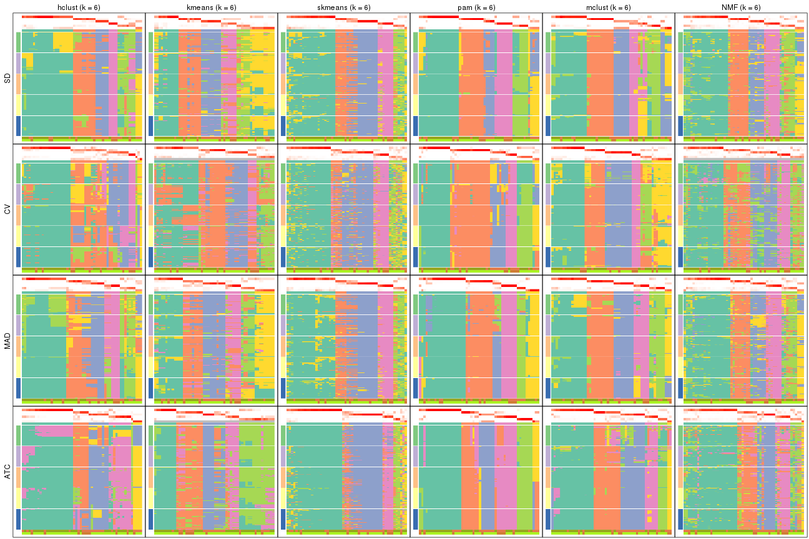
Signature heatmaps for all methods. (What is a signature heatmap?)
Note in following heatmaps, rows are scaled.
collect_plots(res_list, k = 2, fun = get_signatures, mc.cores = 4)
collect_plots(res_list, k = 3, fun = get_signatures, mc.cores = 4)
collect_plots(res_list, k = 4, fun = get_signatures, mc.cores = 4)
collect_plots(res_list, k = 5, fun = get_signatures, mc.cores = 4)
collect_plots(res_list, k = 6, fun = get_signatures, mc.cores = 4)
The statistics used for measuring the stability of consensus partitioning. (How are they defined?)
get_stats(res_list, k = 2)
#> k 1-PAC mean_silhouette concordance area_increased Rand Jaccard
#> SD:NMF 2 0.962 0.953 0.979 0.507 0.491 0.491
#> CV:NMF 2 0.540 0.800 0.901 0.497 0.491 0.491
#> MAD:NMF 2 1.000 0.952 0.980 0.508 0.491 0.491
#> ATC:NMF 2 0.921 0.900 0.960 0.448 0.535 0.535
#> SD:skmeans 2 1.000 0.974 0.989 0.510 0.491 0.491
#> CV:skmeans 2 1.000 0.982 0.992 0.510 0.491 0.491
#> MAD:skmeans 2 1.000 0.976 0.991 0.510 0.491 0.491
#> ATC:skmeans 2 1.000 0.993 0.997 0.507 0.493 0.493
#> SD:mclust 2 0.927 0.926 0.954 0.416 0.575 0.575
#> CV:mclust 2 0.468 0.863 0.895 0.414 0.591 0.591
#> MAD:mclust 2 0.545 0.737 0.842 0.448 0.525 0.525
#> ATC:mclust 2 0.885 0.920 0.966 0.473 0.535 0.535
#> SD:kmeans 2 1.000 0.969 0.988 0.509 0.491 0.491
#> CV:kmeans 2 1.000 0.977 0.989 0.510 0.491 0.491
#> MAD:kmeans 2 1.000 0.961 0.986 0.509 0.491 0.491
#> ATC:kmeans 2 1.000 0.981 0.992 0.495 0.508 0.508
#> SD:pam 2 1.000 0.979 0.992 0.509 0.491 0.491
#> CV:pam 2 1.000 0.973 0.988 0.489 0.508 0.508
#> MAD:pam 2 1.000 0.981 0.992 0.510 0.491 0.491
#> ATC:pam 2 0.889 0.942 0.975 0.507 0.491 0.491
#> SD:hclust 2 0.720 0.876 0.946 0.500 0.491 0.491
#> CV:hclust 2 0.338 0.760 0.859 0.449 0.493 0.493
#> MAD:hclust 2 0.748 0.906 0.949 0.498 0.491 0.491
#> ATC:hclust 2 0.609 0.896 0.946 0.475 0.508 0.508
get_stats(res_list, k = 3)
#> k 1-PAC mean_silhouette concordance area_increased Rand Jaccard
#> SD:NMF 3 0.867 0.904 0.958 0.258 0.838 0.682
#> CV:NMF 3 0.477 0.635 0.821 0.307 0.768 0.563
#> MAD:NMF 3 0.796 0.838 0.921 0.248 0.858 0.718
#> ATC:NMF 3 0.830 0.891 0.945 0.376 0.736 0.549
#> SD:skmeans 3 1.000 0.988 0.990 0.204 0.890 0.777
#> CV:skmeans 3 0.906 0.932 0.963 0.240 0.887 0.769
#> MAD:skmeans 3 1.000 0.993 0.994 0.201 0.890 0.777
#> ATC:skmeans 3 0.900 0.928 0.960 0.178 0.909 0.817
#> SD:mclust 3 0.629 0.738 0.882 0.581 0.665 0.459
#> CV:mclust 3 0.620 0.752 0.883 0.585 0.690 0.493
#> MAD:mclust 3 0.521 0.666 0.849 0.442 0.751 0.549
#> ATC:mclust 3 0.666 0.841 0.899 0.393 0.762 0.566
#> SD:kmeans 3 0.733 0.895 0.905 0.258 0.829 0.668
#> CV:kmeans 3 0.646 0.341 0.633 0.286 0.793 0.601
#> MAD:kmeans 3 0.650 0.868 0.872 0.264 0.846 0.692
#> ATC:kmeans 3 1.000 0.927 0.966 0.304 0.745 0.542
#> SD:pam 3 0.813 0.888 0.901 0.209 0.897 0.791
#> CV:pam 3 0.816 0.871 0.948 0.254 0.878 0.759
#> MAD:pam 3 1.000 0.953 0.968 0.209 0.890 0.777
#> ATC:pam 3 0.966 0.944 0.979 0.217 0.862 0.727
#> SD:hclust 3 0.664 0.678 0.846 0.233 0.874 0.744
#> CV:hclust 3 0.445 0.691 0.821 0.385 0.800 0.611
#> MAD:hclust 3 0.608 0.793 0.865 0.244 0.881 0.757
#> ATC:hclust 3 0.681 0.730 0.892 0.210 0.927 0.856
get_stats(res_list, k = 4)
#> k 1-PAC mean_silhouette concordance area_increased Rand Jaccard
#> SD:NMF 4 0.896 0.912 0.955 0.1288 0.854 0.631
#> CV:NMF 4 0.653 0.748 0.872 0.1341 0.818 0.531
#> MAD:NMF 4 0.838 0.869 0.930 0.1352 0.811 0.550
#> ATC:NMF 4 0.658 0.788 0.843 0.1207 1.000 1.000
#> SD:skmeans 4 0.846 0.791 0.898 0.1180 0.932 0.824
#> CV:skmeans 4 0.757 0.751 0.876 0.1105 0.936 0.831
#> MAD:skmeans 4 0.889 0.818 0.916 0.1121 0.955 0.884
#> ATC:skmeans 4 0.889 0.825 0.923 0.0911 0.916 0.799
#> SD:mclust 4 0.816 0.815 0.927 0.0809 0.850 0.606
#> CV:mclust 4 0.751 0.778 0.894 0.0666 0.848 0.606
#> MAD:mclust 4 0.751 0.842 0.930 0.1060 0.924 0.774
#> ATC:mclust 4 0.730 0.889 0.908 0.1112 0.857 0.600
#> SD:kmeans 4 0.698 0.709 0.765 0.1313 0.869 0.654
#> CV:kmeans 4 0.638 0.716 0.822 0.1135 0.783 0.466
#> MAD:kmeans 4 0.684 0.671 0.788 0.1376 0.858 0.621
#> ATC:kmeans 4 0.736 0.809 0.877 0.1380 0.804 0.505
#> SD:pam 4 0.914 0.915 0.949 0.1235 0.925 0.806
#> CV:pam 4 0.654 0.698 0.828 0.1165 0.933 0.826
#> MAD:pam 4 0.797 0.874 0.923 0.1006 0.937 0.838
#> ATC:pam 4 0.767 0.779 0.854 0.1357 0.930 0.816
#> SD:hclust 4 0.660 0.565 0.807 0.1091 0.894 0.744
#> CV:hclust 4 0.576 0.628 0.773 0.1163 0.932 0.807
#> MAD:hclust 4 0.627 0.713 0.782 0.1091 0.981 0.951
#> ATC:hclust 4 0.614 0.597 0.770 0.1488 0.814 0.601
get_stats(res_list, k = 5)
#> k 1-PAC mean_silhouette concordance area_increased Rand Jaccard
#> SD:NMF 5 0.765 0.668 0.838 0.0503 0.966 0.884
#> CV:NMF 5 0.615 0.579 0.763 0.0585 0.907 0.677
#> MAD:NMF 5 0.738 0.719 0.824 0.0571 0.962 0.868
#> ATC:NMF 5 0.634 0.585 0.789 0.0550 0.883 0.693
#> SD:skmeans 5 0.751 0.721 0.848 0.0846 0.928 0.780
#> CV:skmeans 5 0.703 0.623 0.806 0.0618 0.950 0.844
#> MAD:skmeans 5 0.739 0.744 0.858 0.0790 0.909 0.744
#> ATC:skmeans 5 0.819 0.741 0.881 0.0506 0.997 0.992
#> SD:mclust 5 0.740 0.730 0.863 0.1150 0.858 0.543
#> CV:mclust 5 0.740 0.798 0.865 0.0994 0.911 0.705
#> MAD:mclust 5 0.805 0.759 0.869 0.1115 0.891 0.620
#> ATC:mclust 5 0.733 0.796 0.850 0.0380 0.978 0.911
#> SD:kmeans 5 0.692 0.617 0.723 0.0775 0.884 0.592
#> CV:kmeans 5 0.678 0.585 0.750 0.0612 0.905 0.657
#> MAD:kmeans 5 0.674 0.665 0.755 0.0689 0.844 0.491
#> ATC:kmeans 5 0.709 0.623 0.783 0.0753 0.910 0.661
#> SD:pam 5 0.820 0.858 0.902 0.0931 0.907 0.703
#> CV:pam 5 0.725 0.766 0.881 0.0944 0.915 0.738
#> MAD:pam 5 0.795 0.756 0.885 0.0961 0.927 0.775
#> ATC:pam 5 0.869 0.817 0.916 0.1170 0.907 0.700
#> SD:hclust 5 0.687 0.683 0.799 0.0846 0.896 0.712
#> CV:hclust 5 0.613 0.584 0.770 0.0425 0.966 0.893
#> MAD:hclust 5 0.692 0.642 0.780 0.0763 0.874 0.673
#> ATC:hclust 5 0.740 0.743 0.847 0.1038 0.919 0.755
get_stats(res_list, k = 6)
#> k 1-PAC mean_silhouette concordance area_increased Rand Jaccard
#> SD:NMF 6 0.703 0.652 0.805 0.0604 0.905 0.671
#> CV:NMF 6 0.646 0.554 0.713 0.0419 0.981 0.919
#> MAD:NMF 6 0.684 0.646 0.783 0.0495 0.941 0.780
#> ATC:NMF 6 0.634 0.534 0.768 0.0425 0.871 0.611
#> SD:skmeans 6 0.744 0.645 0.845 0.0428 0.961 0.856
#> CV:skmeans 6 0.653 0.621 0.783 0.0455 0.929 0.754
#> MAD:skmeans 6 0.714 0.632 0.828 0.0500 0.973 0.904
#> ATC:skmeans 6 0.776 0.751 0.859 0.0401 0.952 0.860
#> SD:mclust 6 0.843 0.665 0.821 0.0200 0.948 0.756
#> CV:mclust 6 0.767 0.796 0.863 0.0505 0.953 0.789
#> MAD:mclust 6 0.834 0.819 0.880 0.0258 0.935 0.708
#> ATC:mclust 6 0.759 0.788 0.864 0.0264 0.992 0.963
#> SD:kmeans 6 0.710 0.708 0.795 0.0498 0.927 0.656
#> CV:kmeans 6 0.701 0.579 0.711 0.0362 0.881 0.571
#> MAD:kmeans 6 0.690 0.721 0.777 0.0450 0.923 0.655
#> ATC:kmeans 6 0.718 0.577 0.752 0.0399 0.915 0.648
#> SD:pam 6 0.835 0.741 0.876 0.0469 0.958 0.816
#> CV:pam 6 0.744 0.729 0.860 0.0356 0.964 0.851
#> MAD:pam 6 0.878 0.793 0.901 0.0559 0.934 0.756
#> ATC:pam 6 0.867 0.749 0.897 0.0211 0.983 0.920
#> SD:hclust 6 0.700 0.749 0.825 0.0349 0.959 0.849
#> CV:hclust 6 0.633 0.566 0.754 0.0261 0.956 0.859
#> MAD:hclust 6 0.678 0.608 0.760 0.0541 0.919 0.709
#> ATC:hclust 6 0.751 0.706 0.801 0.0339 0.971 0.896
Following heatmap plots the partition for each combination of methods and the lightness correspond to the silhouette scores for samples in each method. On top the consensus subgroup is inferred from all methods by taking the mean silhouette scores as weight.
collect_stats(res_list, k = 2)
collect_stats(res_list, k = 3)
collect_stats(res_list, k = 4)

collect_stats(res_list, k = 5)
collect_stats(res_list, k = 6)
Collect partitions from all methods:
collect_classes(res_list, k = 2)
collect_classes(res_list, k = 3)
collect_classes(res_list, k = 4)
collect_classes(res_list, k = 5)
collect_classes(res_list, k = 6)
Overlap of top rows from different top-row methods:
top_rows_overlap(res_list, top_n = 1000, method = "euler")
top_rows_overlap(res_list, top_n = 2000, method = "euler")
top_rows_overlap(res_list, top_n = 3000, method = "euler")
top_rows_overlap(res_list, top_n = 4000, method = "euler")
top_rows_overlap(res_list, top_n = 5000, method = "euler")
Also visualize the correspondance of rankings between different top-row methods:
top_rows_overlap(res_list, top_n = 1000, method = "correspondance")
top_rows_overlap(res_list, top_n = 2000, method = "correspondance")
top_rows_overlap(res_list, top_n = 3000, method = "correspondance")
top_rows_overlap(res_list, top_n = 4000, method = "correspondance")

top_rows_overlap(res_list, top_n = 5000, method = "correspondance")
Heatmaps of the top rows:
top_rows_heatmap(res_list, top_n = 1000)
top_rows_heatmap(res_list, top_n = 2000)
top_rows_heatmap(res_list, top_n = 3000)
top_rows_heatmap(res_list, top_n = 4000)
top_rows_heatmap(res_list, top_n = 5000)
Test correlation between subgroups and known annotations. If the known annotation is numeric, one-way ANOVA test is applied, and if the known annotation is discrete, chi-squared contingency table test is applied.
test_to_known_factors(res_list, k = 2)
#> n disease.state(p) protocol(p) k
#> SD:NMF 54 0.014780 0.2374 2
#> CV:NMF 51 0.012487 0.2016 2
#> MAD:NMF 52 0.025501 0.2912 2
#> ATC:NMF 50 0.000854 0.6247 2
#> SD:skmeans 54 0.027692 0.2933 2
#> CV:skmeans 54 0.027692 0.2933 2
#> MAD:skmeans 53 0.035968 0.3236 2
#> ATC:skmeans 54 0.007410 0.1888 2
#> SD:mclust 53 0.000228 0.1931 2
#> CV:mclust 51 0.043766 0.7327 2
#> MAD:mclust 52 0.008832 0.4770 2
#> ATC:mclust 51 0.006544 0.4474 2
#> SD:kmeans 53 0.019393 0.2629 2
#> CV:kmeans 54 0.027692 0.2933 2
#> MAD:kmeans 53 0.035968 0.3236 2
#> ATC:kmeans 53 0.000813 0.0942 2
#> SD:pam 53 0.035968 0.3236 2
#> CV:pam 54 0.030177 0.6823 2
#> MAD:pam 53 0.035968 0.3236 2
#> ATC:pam 53 0.035968 0.3236 2
#> SD:hclust 49 0.016312 0.3457 2
#> CV:hclust 50 0.002055 0.1760 2
#> MAD:hclust 53 0.035968 0.3236 2
#> ATC:hclust 53 0.002271 0.2697 2
test_to_known_factors(res_list, k = 3)
#> n disease.state(p) protocol(p) k
#> SD:NMF 53 2.01e-04 0.11093 3
#> CV:NMF 44 9.01e-03 0.01173 3
#> MAD:NMF 51 5.04e-04 0.06063 3
#> ATC:NMF 52 1.94e-04 0.15038 3
#> SD:skmeans 54 8.07e-02 0.01823 3
#> CV:skmeans 53 5.75e-02 0.00851 3
#> MAD:skmeans 54 8.07e-02 0.01823 3
#> ATC:skmeans 54 1.39e-03 0.12617 3
#> SD:mclust 44 3.90e-05 0.27995 3
#> CV:mclust 46 1.91e-04 0.88420 3
#> MAD:mclust 44 4.73e-05 0.87762 3
#> ATC:mclust 52 4.89e-04 0.22971 3
#> SD:kmeans 53 2.79e-04 0.10956 3
#> CV:kmeans 29 4.22e-04 0.20014 3
#> MAD:kmeans 53 8.99e-04 0.18798 3
#> ATC:kmeans 52 1.66e-04 0.05701 3
#> SD:pam 54 8.07e-02 0.01823 3
#> CV:pam 50 1.50e-03 0.35906 3
#> MAD:pam 54 8.07e-02 0.01823 3
#> ATC:pam 53 1.28e-03 0.20912 3
#> SD:hclust 40 2.83e-04 0.00161 3
#> CV:hclust 47 2.03e-04 0.11628 3
#> MAD:hclust 51 1.82e-02 0.05493 3
#> ATC:hclust 46 1.13e-02 0.15385 3
test_to_known_factors(res_list, k = 4)
#> n disease.state(p) protocol(p) k
#> SD:NMF 53 7.83e-05 0.04195 4
#> CV:NMF 49 7.19e-05 0.03141 4
#> MAD:NMF 52 5.57e-05 0.04652 4
#> ATC:NMF 51 5.94e-04 0.09369 4
#> SD:skmeans 46 1.47e-03 0.04968 4
#> CV:skmeans 48 8.23e-03 0.00663 4
#> MAD:skmeans 50 1.49e-02 0.06137 4
#> ATC:skmeans 48 6.25e-03 0.00297 4
#> SD:mclust 49 5.70e-05 0.02240 4
#> CV:mclust 45 2.66e-04 0.03811 4
#> MAD:mclust 51 6.68e-05 0.02023 4
#> ATC:mclust 54 5.94e-05 0.46138 4
#> SD:kmeans 44 8.72e-04 0.11860 4
#> CV:kmeans 46 1.02e-03 0.03772 4
#> MAD:kmeans 41 1.17e-02 0.14211 4
#> ATC:kmeans 51 1.59e-04 0.11663 4
#> SD:pam 53 4.63e-04 0.02169 4
#> CV:pam 47 9.20e-04 0.37706 4
#> MAD:pam 52 1.88e-02 0.03353 4
#> ATC:pam 50 3.99e-03 0.03120 4
#> SD:hclust 38 1.15e-04 0.95223 4
#> CV:hclust 32 8.33e-04 0.00139 4
#> MAD:hclust 50 1.58e-02 0.02654 4
#> ATC:hclust 42 3.11e-02 0.14237 4
test_to_known_factors(res_list, k = 5)
#> n disease.state(p) protocol(p) k
#> SD:NMF 45 2.72e-04 0.056390 5
#> CV:NMF 41 6.28e-05 0.037133 5
#> MAD:NMF 46 1.56e-04 0.075217 5
#> ATC:NMF 38 1.86e-04 0.005209 5
#> SD:skmeans 46 5.62e-04 0.046627 5
#> CV:skmeans 40 1.40e-03 0.007563 5
#> MAD:skmeans 46 7.46e-03 0.033470 5
#> ATC:skmeans 45 2.91e-03 0.000531 5
#> SD:mclust 45 1.54e-03 0.174135 5
#> CV:mclust 50 2.24e-04 0.014899 5
#> MAD:mclust 46 2.52e-03 0.130448 5
#> ATC:mclust 50 3.88e-04 0.093527 5
#> SD:kmeans 42 1.14e-03 0.031617 5
#> CV:kmeans 42 6.21e-04 0.033441 5
#> MAD:kmeans 47 1.17e-03 0.082984 5
#> ATC:kmeans 41 1.86e-03 0.166712 5
#> SD:pam 52 2.40e-03 0.071616 5
#> CV:pam 49 1.95e-03 0.005097 5
#> MAD:pam 47 5.09e-02 0.077774 5
#> ATC:pam 48 8.97e-03 0.033360 5
#> SD:hclust 45 5.26e-03 0.063363 5
#> CV:hclust 26 1.64e-03 0.000787 5
#> MAD:hclust 44 3.03e-03 0.073336 5
#> ATC:hclust 49 6.15e-03 0.078987 5
test_to_known_factors(res_list, k = 6)
#> n disease.state(p) protocol(p) k
#> SD:NMF 44 7.33e-03 0.13710 6
#> CV:NMF 34 6.76e-04 0.01522 6
#> MAD:NMF 44 8.34e-03 0.13159 6
#> ATC:NMF 37 1.51e-03 0.08918 6
#> SD:skmeans 42 8.96e-05 0.03046 6
#> CV:skmeans 40 1.36e-03 0.01661 6
#> MAD:skmeans 41 2.57e-04 0.01699 6
#> ATC:skmeans 45 1.89e-03 0.01507 6
#> SD:mclust 42 2.84e-03 0.01679 6
#> CV:mclust 50 4.86e-04 0.02689 6
#> MAD:mclust 52 2.83e-03 0.10674 6
#> ATC:mclust 51 1.74e-04 0.05384 6
#> SD:kmeans 49 2.24e-03 0.02519 6
#> CV:kmeans 41 4.61e-04 0.01277 6
#> MAD:kmeans 46 2.57e-03 0.04697 6
#> ATC:kmeans 35 2.44e-03 0.11377 6
#> SD:pam 44 4.40e-02 0.07049 6
#> CV:pam 45 1.39e-03 0.00527 6
#> MAD:pam 49 2.72e-02 0.08665 6
#> ATC:pam 44 2.86e-03 0.02061 6
#> SD:hclust 45 1.34e-03 0.06336 6
#> CV:hclust 25 1.03e-02 0.00346 6
#> MAD:hclust 40 1.20e-03 0.14153 6
#> ATC:hclust 46 3.30e-03 0.11690 6
The object with results only for a single top-value method and a single partition method can be extracted as:
res = res_list["SD", "hclust"]
# you can also extract it by
# res = res_list["SD:hclust"]
A summary of res and all the functions that can be applied to it:
res
#> A 'ConsensusPartition' object with k = 2, 3, 4, 5, 6.
#> On a matrix with 15837 rows and 54 columns.
#> Top rows (1000, 2000, 3000, 4000, 5000) are extracted by 'SD' method.
#> Subgroups are detected by 'hclust' method.
#> Performed in total 1250 partitions by row resampling.
#> Best k for subgroups seems to be 2.
#>
#> Following methods can be applied to this 'ConsensusPartition' object:
#> [1] "cola_report" "collect_classes" "collect_plots"
#> [4] "collect_stats" "colnames" "compare_signatures"
#> [7] "consensus_heatmap" "dimension_reduction" "functional_enrichment"
#> [10] "get_anno_col" "get_anno" "get_classes"
#> [13] "get_consensus" "get_matrix" "get_membership"
#> [16] "get_param" "get_signatures" "get_stats"
#> [19] "is_best_k" "is_stable_k" "membership_heatmap"
#> [22] "ncol" "nrow" "plot_ecdf"
#> [25] "rownames" "select_partition_number" "show"
#> [28] "suggest_best_k" "test_to_known_factors"
collect_plots() function collects all the plots made from res for all k (number of partitions)
into one single page to provide an easy and fast comparison between different k.
collect_plots(res)
The plots are:
k and the heatmap of
predicted classes for each k.k.k.k.All the plots in panels can be made by individual functions and they are plotted later in this section.
select_partition_number() produces several plots showing different
statistics for choosing “optimized” k. There are following statistics:
k;k, the area increased is defined as \(A_k - A_{k-1}\).The detailed explanations of these statistics can be found in the cola vignette.
Generally speaking, lower PAC score, higher mean silhouette score or higher
concordance corresponds to better partition. Rand index and Jaccard index
measure how similar the current partition is compared to partition with k-1.
If they are too similar, we won't accept k is better than k-1.
select_partition_number(res)
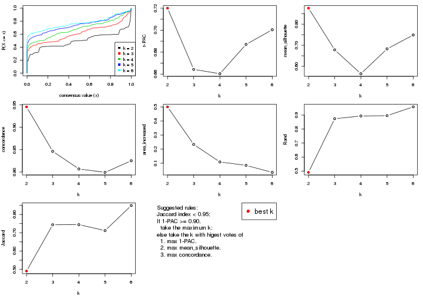
The numeric values for all these statistics can be obtained by get_stats().
get_stats(res)
#> k 1-PAC mean_silhouette concordance area_increased Rand Jaccard
#> 2 2 0.720 0.876 0.946 0.5004 0.491 0.491
#> 3 3 0.664 0.678 0.846 0.2334 0.874 0.744
#> 4 4 0.660 0.565 0.807 0.1091 0.894 0.744
#> 5 5 0.687 0.683 0.799 0.0846 0.896 0.712
#> 6 6 0.700 0.749 0.825 0.0349 0.959 0.849
suggest_best_k() suggests the best \(k\) based on these statistics. The rules are as follows:
NA.suggest_best_k(res)
#> [1] 2
Following shows the table of the partitions (You need to click the show/hide
code output link to see it). The membership matrix (columns with name p*)
is inferred by
clue::cl_consensus()
function with the SE method. Basically the value in the membership matrix
represents the probability to belong to a certain group. The finall class
label for an item is determined with the group with highest probability it
belongs to.
In get_classes() function, the entropy is calculated from the membership
matrix and the silhouette score is calculated from the consensus matrix.
cbind(get_classes(res, k = 2), get_membership(res, k = 2))
#> class entropy silhouette p1 p2
#> GSM134895 1 0.1633 0.951 0.976 0.024
#> GSM134896 2 0.0000 0.913 0.000 1.000
#> GSM134897 2 0.0000 0.913 0.000 1.000
#> GSM134898 2 0.0000 0.913 0.000 1.000
#> GSM134905 2 0.0000 0.913 0.000 1.000
#> GSM135018 2 0.0000 0.913 0.000 1.000
#> GSM135674 1 0.5294 0.849 0.880 0.120
#> GSM135683 2 0.0000 0.913 0.000 1.000
#> GSM135685 2 0.0000 0.913 0.000 1.000
#> GSM135699 1 0.0000 0.965 1.000 0.000
#> GSM135019 2 0.0000 0.913 0.000 1.000
#> GSM135026 1 0.3584 0.910 0.932 0.068
#> GSM135033 2 0.0000 0.913 0.000 1.000
#> GSM135042 1 0.1633 0.951 0.976 0.024
#> GSM135057 2 0.5059 0.850 0.112 0.888
#> GSM135068 1 0.0000 0.965 1.000 0.000
#> GSM135071 2 0.0938 0.909 0.012 0.988
#> GSM135078 2 0.0000 0.913 0.000 1.000
#> GSM135163 2 0.9635 0.440 0.388 0.612
#> GSM135166 2 0.0000 0.913 0.000 1.000
#> GSM135223 2 0.5059 0.850 0.112 0.888
#> GSM135224 2 0.5059 0.850 0.112 0.888
#> GSM135228 1 0.0000 0.965 1.000 0.000
#> GSM135262 1 0.0000 0.965 1.000 0.000
#> GSM135263 2 0.0000 0.913 0.000 1.000
#> GSM135279 2 0.3274 0.882 0.060 0.940
#> GSM135661 1 0.0000 0.965 1.000 0.000
#> GSM135662 2 0.1184 0.908 0.016 0.984
#> GSM135663 2 0.1184 0.908 0.016 0.984
#> GSM135664 2 0.0000 0.913 0.000 1.000
#> GSM135665 1 0.0000 0.965 1.000 0.000
#> GSM135666 1 0.1414 0.954 0.980 0.020
#> GSM135668 1 0.4815 0.870 0.896 0.104
#> GSM135670 1 0.0000 0.965 1.000 0.000
#> GSM135671 1 0.0000 0.965 1.000 0.000
#> GSM135675 1 0.0938 0.959 0.988 0.012
#> GSM135676 1 0.0000 0.965 1.000 0.000
#> GSM135677 1 0.0000 0.965 1.000 0.000
#> GSM135679 1 0.0000 0.965 1.000 0.000
#> GSM135680 2 0.9795 0.371 0.416 0.584
#> GSM135681 2 0.9795 0.371 0.416 0.584
#> GSM135682 2 0.0000 0.913 0.000 1.000
#> GSM135687 1 0.0000 0.965 1.000 0.000
#> GSM135688 1 0.0000 0.965 1.000 0.000
#> GSM135689 1 0.0000 0.965 1.000 0.000
#> GSM135693 2 0.5059 0.850 0.112 0.888
#> GSM135694 1 0.0000 0.965 1.000 0.000
#> GSM135695 1 0.0000 0.965 1.000 0.000
#> GSM135696 1 0.0000 0.965 1.000 0.000
#> GSM135697 1 0.0000 0.965 1.000 0.000
#> GSM135698 1 0.9833 0.154 0.576 0.424
#> GSM135700 1 0.0938 0.959 0.988 0.012
#> GSM135702 2 0.9393 0.485 0.356 0.644
#> GSM135703 2 0.0000 0.913 0.000 1.000
cbind(get_classes(res, k = 3), get_membership(res, k = 3))
#> class entropy silhouette p1 p2 p3
#> GSM134895 1 0.1411 0.91016 0.964 0.036 0.000
#> GSM134896 3 0.0237 0.71053 0.000 0.004 0.996
#> GSM134897 3 0.1529 0.71152 0.000 0.040 0.960
#> GSM134898 3 0.1529 0.71152 0.000 0.040 0.960
#> GSM134905 3 0.0237 0.71053 0.000 0.004 0.996
#> GSM135018 3 0.6204 0.35117 0.000 0.424 0.576
#> GSM135674 1 0.4121 0.78672 0.832 0.168 0.000
#> GSM135683 3 0.0000 0.71179 0.000 0.000 1.000
#> GSM135685 3 0.0000 0.71179 0.000 0.000 1.000
#> GSM135699 1 0.2625 0.90592 0.916 0.084 0.000
#> GSM135019 3 0.0237 0.71262 0.000 0.004 0.996
#> GSM135026 1 0.2959 0.86232 0.900 0.100 0.000
#> GSM135033 3 0.1529 0.71152 0.000 0.040 0.960
#> GSM135042 1 0.1411 0.91016 0.964 0.036 0.000
#> GSM135057 2 0.2878 0.56383 0.000 0.904 0.096
#> GSM135068 1 0.0000 0.92199 1.000 0.000 0.000
#> GSM135071 2 0.6675 0.16023 0.012 0.584 0.404
#> GSM135078 3 0.6204 0.35117 0.000 0.424 0.576
#> GSM135163 2 0.7001 0.50682 0.340 0.628 0.032
#> GSM135166 3 0.0237 0.71053 0.000 0.004 0.996
#> GSM135223 2 0.2878 0.56383 0.000 0.904 0.096
#> GSM135224 2 0.2878 0.56383 0.000 0.904 0.096
#> GSM135228 1 0.0000 0.92199 1.000 0.000 0.000
#> GSM135262 1 0.0000 0.92199 1.000 0.000 0.000
#> GSM135263 3 0.6299 0.20116 0.000 0.476 0.524
#> GSM135279 2 0.7665 0.29576 0.060 0.600 0.340
#> GSM135661 1 0.0000 0.92199 1.000 0.000 0.000
#> GSM135662 2 0.6566 0.24784 0.012 0.612 0.376
#> GSM135663 2 0.6566 0.24784 0.012 0.612 0.376
#> GSM135664 3 0.6309 0.11043 0.000 0.500 0.500
#> GSM135665 1 0.2625 0.90592 0.916 0.084 0.000
#> GSM135666 1 0.1031 0.91439 0.976 0.024 0.000
#> GSM135668 1 0.3752 0.81606 0.856 0.144 0.000
#> GSM135670 1 0.0592 0.92173 0.988 0.012 0.000
#> GSM135671 1 0.2625 0.90592 0.916 0.084 0.000
#> GSM135675 1 0.1753 0.90727 0.952 0.048 0.000
#> GSM135676 1 0.2356 0.90988 0.928 0.072 0.000
#> GSM135677 1 0.0000 0.92199 1.000 0.000 0.000
#> GSM135679 1 0.1753 0.91758 0.952 0.048 0.000
#> GSM135680 2 0.7032 0.45446 0.368 0.604 0.028
#> GSM135681 2 0.7032 0.45446 0.368 0.604 0.028
#> GSM135682 3 0.6204 0.35117 0.000 0.424 0.576
#> GSM135687 1 0.0000 0.92199 1.000 0.000 0.000
#> GSM135688 1 0.2625 0.90592 0.916 0.084 0.000
#> GSM135689 1 0.0000 0.92199 1.000 0.000 0.000
#> GSM135693 2 0.2878 0.56383 0.000 0.904 0.096
#> GSM135694 1 0.2625 0.90592 0.916 0.084 0.000
#> GSM135695 1 0.2356 0.90988 0.928 0.072 0.000
#> GSM135696 1 0.2625 0.90592 0.916 0.084 0.000
#> GSM135697 1 0.2356 0.90988 0.928 0.072 0.000
#> GSM135698 1 0.6505 -0.00959 0.528 0.468 0.004
#> GSM135700 1 0.1964 0.89830 0.944 0.056 0.000
#> GSM135702 2 0.9070 0.42377 0.308 0.528 0.164
#> GSM135703 3 0.6204 0.35117 0.000 0.424 0.576
cbind(get_classes(res, k = 4), get_membership(res, k = 4))
#> class entropy silhouette p1 p2 p3 p4
#> GSM134895 1 0.3074 0.7131 0.848 0.000 0.000 0.152
#> GSM134896 3 0.0188 0.8119 0.000 0.004 0.996 0.000
#> GSM134897 3 0.2011 0.8211 0.000 0.080 0.920 0.000
#> GSM134898 3 0.2011 0.8211 0.000 0.080 0.920 0.000
#> GSM134905 3 0.0188 0.8119 0.000 0.004 0.996 0.000
#> GSM135018 2 0.3751 0.4896 0.000 0.800 0.196 0.004
#> GSM135674 1 0.5352 0.0232 0.596 0.016 0.000 0.388
#> GSM135683 3 0.6261 0.6287 0.000 0.312 0.608 0.080
#> GSM135685 3 0.6242 0.6334 0.000 0.308 0.612 0.080
#> GSM135699 1 0.2773 0.8087 0.880 0.000 0.004 0.116
#> GSM135019 3 0.6201 0.6433 0.000 0.300 0.620 0.080
#> GSM135026 1 0.4643 0.2786 0.656 0.000 0.000 0.344
#> GSM135033 3 0.2011 0.8211 0.000 0.080 0.920 0.000
#> GSM135042 1 0.3074 0.7131 0.848 0.000 0.000 0.152
#> GSM135057 2 0.5168 0.3492 0.000 0.500 0.004 0.496
#> GSM135068 1 0.0000 0.8375 1.000 0.000 0.000 0.000
#> GSM135071 2 0.1059 0.5586 0.012 0.972 0.016 0.000
#> GSM135078 2 0.3751 0.4896 0.000 0.800 0.196 0.004
#> GSM135163 2 0.7766 -0.4778 0.244 0.412 0.000 0.344
#> GSM135166 3 0.0188 0.8119 0.000 0.004 0.996 0.000
#> GSM135223 2 0.5168 0.3492 0.000 0.500 0.004 0.496
#> GSM135224 2 0.5168 0.3492 0.000 0.500 0.004 0.496
#> GSM135228 1 0.0000 0.8375 1.000 0.000 0.000 0.000
#> GSM135262 1 0.0000 0.8375 1.000 0.000 0.000 0.000
#> GSM135263 2 0.3052 0.5452 0.000 0.860 0.136 0.004
#> GSM135279 2 0.2156 0.5084 0.060 0.928 0.004 0.008
#> GSM135661 1 0.0000 0.8375 1.000 0.000 0.000 0.000
#> GSM135662 2 0.1749 0.5541 0.012 0.952 0.012 0.024
#> GSM135663 2 0.1749 0.5541 0.012 0.952 0.012 0.024
#> GSM135664 2 0.2647 0.5572 0.000 0.880 0.120 0.000
#> GSM135665 1 0.2714 0.8109 0.884 0.000 0.004 0.112
#> GSM135666 1 0.2921 0.7277 0.860 0.000 0.000 0.140
#> GSM135668 1 0.5099 0.0993 0.612 0.008 0.000 0.380
#> GSM135670 1 0.0592 0.8379 0.984 0.000 0.000 0.016
#> GSM135671 1 0.2773 0.8087 0.880 0.000 0.004 0.116
#> GSM135675 1 0.2149 0.7869 0.912 0.000 0.000 0.088
#> GSM135676 1 0.2011 0.8272 0.920 0.000 0.000 0.080
#> GSM135677 1 0.0000 0.8375 1.000 0.000 0.000 0.000
#> GSM135679 1 0.1474 0.8355 0.948 0.000 0.000 0.052
#> GSM135680 2 0.7800 -0.5221 0.248 0.376 0.000 0.376
#> GSM135681 2 0.7800 -0.5221 0.248 0.376 0.000 0.376
#> GSM135682 2 0.4019 0.4905 0.000 0.792 0.196 0.012
#> GSM135687 1 0.0000 0.8375 1.000 0.000 0.000 0.000
#> GSM135688 1 0.2773 0.8087 0.880 0.000 0.004 0.116
#> GSM135689 1 0.0000 0.8375 1.000 0.000 0.000 0.000
#> GSM135693 2 0.5168 0.3492 0.000 0.500 0.004 0.496
#> GSM135694 1 0.2773 0.8087 0.880 0.000 0.004 0.116
#> GSM135695 1 0.2011 0.8272 0.920 0.000 0.000 0.080
#> GSM135696 1 0.2773 0.8087 0.880 0.000 0.004 0.116
#> GSM135697 1 0.2011 0.8272 0.920 0.000 0.000 0.080
#> GSM135698 4 0.7807 0.0000 0.292 0.288 0.000 0.420
#> GSM135700 1 0.3074 0.7041 0.848 0.000 0.000 0.152
#> GSM135702 2 0.7204 -0.3220 0.156 0.512 0.000 0.332
#> GSM135703 2 0.4019 0.4905 0.000 0.792 0.196 0.012
cbind(get_classes(res, k = 5), get_membership(res, k = 5))
#> class entropy silhouette p1 p2 p3 p4 p5
#> GSM134895 1 0.2891 0.5865 0.824 0.000 0.000 0.000 0.176
#> GSM134896 3 0.0000 0.7552 0.000 0.000 1.000 0.000 0.000
#> GSM134897 3 0.1792 0.7595 0.000 0.084 0.916 0.000 0.000
#> GSM134898 3 0.1792 0.7595 0.000 0.084 0.916 0.000 0.000
#> GSM134905 3 0.0000 0.7552 0.000 0.000 1.000 0.000 0.000
#> GSM135018 2 0.3123 0.7601 0.000 0.812 0.184 0.004 0.000
#> GSM135674 5 0.4557 0.7237 0.404 0.012 0.000 0.000 0.584
#> GSM135683 3 0.7505 0.3775 0.000 0.320 0.456 0.088 0.136
#> GSM135685 3 0.7486 0.3944 0.000 0.312 0.464 0.088 0.136
#> GSM135699 1 0.3596 0.7642 0.784 0.000 0.000 0.016 0.200
#> GSM135019 3 0.7466 0.4115 0.000 0.304 0.472 0.088 0.136
#> GSM135026 5 0.4278 0.6656 0.452 0.000 0.000 0.000 0.548
#> GSM135033 3 0.1792 0.7595 0.000 0.084 0.916 0.000 0.000
#> GSM135042 1 0.2891 0.5865 0.824 0.000 0.000 0.000 0.176
#> GSM135057 4 0.2561 0.7146 0.000 0.144 0.000 0.856 0.000
#> GSM135068 1 0.0000 0.8082 1.000 0.000 0.000 0.000 0.000
#> GSM135071 2 0.0162 0.7839 0.000 0.996 0.004 0.000 0.000
#> GSM135078 2 0.3123 0.7601 0.000 0.812 0.184 0.004 0.000
#> GSM135163 4 0.6962 0.4568 0.024 0.172 0.000 0.444 0.360
#> GSM135166 3 0.0000 0.7552 0.000 0.000 1.000 0.000 0.000
#> GSM135223 4 0.2561 0.7146 0.000 0.144 0.000 0.856 0.000
#> GSM135224 4 0.2561 0.7146 0.000 0.144 0.000 0.856 0.000
#> GSM135228 1 0.0000 0.8082 1.000 0.000 0.000 0.000 0.000
#> GSM135262 1 0.0000 0.8082 1.000 0.000 0.000 0.000 0.000
#> GSM135263 2 0.2488 0.7917 0.000 0.872 0.124 0.004 0.000
#> GSM135279 2 0.1901 0.7447 0.004 0.932 0.000 0.040 0.024
#> GSM135661 1 0.0000 0.8082 1.000 0.000 0.000 0.000 0.000
#> GSM135662 2 0.0703 0.7763 0.000 0.976 0.000 0.000 0.024
#> GSM135663 2 0.0703 0.7763 0.000 0.976 0.000 0.000 0.024
#> GSM135664 2 0.2127 0.7907 0.000 0.892 0.108 0.000 0.000
#> GSM135665 1 0.3562 0.7669 0.788 0.000 0.000 0.016 0.196
#> GSM135666 1 0.2773 0.6091 0.836 0.000 0.000 0.000 0.164
#> GSM135668 5 0.4679 0.7349 0.388 0.008 0.000 0.008 0.596
#> GSM135670 1 0.0703 0.8109 0.976 0.000 0.000 0.000 0.024
#> GSM135671 1 0.3596 0.7642 0.784 0.000 0.000 0.016 0.200
#> GSM135675 1 0.2020 0.7204 0.900 0.000 0.000 0.000 0.100
#> GSM135676 1 0.3055 0.7924 0.840 0.000 0.000 0.016 0.144
#> GSM135677 1 0.0000 0.8082 1.000 0.000 0.000 0.000 0.000
#> GSM135679 1 0.1877 0.8096 0.924 0.000 0.000 0.012 0.064
#> GSM135680 4 0.6694 0.4564 0.028 0.120 0.000 0.468 0.384
#> GSM135681 4 0.6694 0.4564 0.028 0.120 0.000 0.468 0.384
#> GSM135682 2 0.3843 0.7574 0.000 0.788 0.184 0.016 0.012
#> GSM135687 1 0.0000 0.8082 1.000 0.000 0.000 0.000 0.000
#> GSM135688 1 0.3596 0.7642 0.784 0.000 0.000 0.016 0.200
#> GSM135689 1 0.0000 0.8082 1.000 0.000 0.000 0.000 0.000
#> GSM135693 4 0.2561 0.7146 0.000 0.144 0.000 0.856 0.000
#> GSM135694 1 0.3596 0.7642 0.784 0.000 0.000 0.016 0.200
#> GSM135695 1 0.3011 0.7939 0.844 0.000 0.000 0.016 0.140
#> GSM135696 1 0.3496 0.7666 0.788 0.000 0.000 0.012 0.200
#> GSM135697 1 0.3011 0.7939 0.844 0.000 0.000 0.016 0.140
#> GSM135698 5 0.5952 0.1134 0.060 0.276 0.000 0.044 0.620
#> GSM135700 1 0.3752 0.1596 0.708 0.000 0.000 0.000 0.292
#> GSM135702 2 0.6432 0.0672 0.068 0.496 0.000 0.044 0.392
#> GSM135703 2 0.3843 0.7574 0.000 0.788 0.184 0.016 0.012
cbind(get_classes(res, k = 6), get_membership(res, k = 6))
#> class entropy silhouette p1 p2 p3 p4 p5 p6
#> GSM134895 1 0.3396 0.7105 0.812 0.000 0.000 0.000 0.072 0.116
#> GSM134896 3 0.2088 0.8335 0.000 0.068 0.904 0.000 0.028 0.000
#> GSM134897 3 0.1983 0.8188 0.000 0.072 0.908 0.000 0.000 0.020
#> GSM134898 3 0.1983 0.8188 0.000 0.072 0.908 0.000 0.000 0.020
#> GSM134905 3 0.2088 0.8335 0.000 0.068 0.904 0.000 0.028 0.000
#> GSM135018 2 0.3241 0.8181 0.000 0.836 0.112 0.000 0.036 0.016
#> GSM135674 5 0.3899 0.4192 0.364 0.000 0.000 0.000 0.628 0.008
#> GSM135683 6 0.4346 0.9612 0.000 0.028 0.336 0.000 0.004 0.632
#> GSM135685 6 0.4180 0.9686 0.000 0.024 0.348 0.000 0.000 0.628
#> GSM135699 1 0.2996 0.8009 0.772 0.000 0.000 0.000 0.000 0.228
#> GSM135019 6 0.4312 0.9479 0.000 0.028 0.368 0.000 0.000 0.604
#> GSM135026 5 0.4237 0.3689 0.396 0.000 0.000 0.000 0.584 0.020
#> GSM135033 3 0.1983 0.8188 0.000 0.072 0.908 0.000 0.000 0.020
#> GSM135042 1 0.3396 0.7105 0.812 0.000 0.000 0.000 0.072 0.116
#> GSM135057 4 0.0000 1.0000 0.000 0.000 0.000 1.000 0.000 0.000
#> GSM135068 1 0.0000 0.8454 1.000 0.000 0.000 0.000 0.000 0.000
#> GSM135071 2 0.1444 0.8316 0.000 0.928 0.000 0.000 0.072 0.000
#> GSM135078 2 0.3241 0.8181 0.000 0.836 0.112 0.000 0.036 0.016
#> GSM135163 5 0.5584 0.1640 0.004 0.088 0.000 0.388 0.508 0.012
#> GSM135166 3 0.2088 0.8335 0.000 0.068 0.904 0.000 0.028 0.000
#> GSM135223 4 0.0000 1.0000 0.000 0.000 0.000 1.000 0.000 0.000
#> GSM135224 4 0.0000 1.0000 0.000 0.000 0.000 1.000 0.000 0.000
#> GSM135228 1 0.0000 0.8454 1.000 0.000 0.000 0.000 0.000 0.000
#> GSM135262 1 0.0000 0.8454 1.000 0.000 0.000 0.000 0.000 0.000
#> GSM135263 2 0.2952 0.8416 0.000 0.864 0.068 0.000 0.052 0.016
#> GSM135279 2 0.2632 0.7688 0.000 0.832 0.000 0.000 0.164 0.004
#> GSM135661 1 0.0000 0.8454 1.000 0.000 0.000 0.000 0.000 0.000
#> GSM135662 2 0.1863 0.8198 0.000 0.896 0.000 0.000 0.104 0.000
#> GSM135663 2 0.1863 0.8198 0.000 0.896 0.000 0.000 0.104 0.000
#> GSM135664 2 0.1010 0.8498 0.000 0.960 0.036 0.000 0.004 0.000
#> GSM135665 1 0.2969 0.8030 0.776 0.000 0.000 0.000 0.000 0.224
#> GSM135666 1 0.3107 0.7282 0.832 0.000 0.000 0.000 0.052 0.116
#> GSM135668 5 0.3774 0.4741 0.328 0.000 0.000 0.000 0.664 0.008
#> GSM135670 1 0.0891 0.8469 0.968 0.000 0.000 0.000 0.008 0.024
#> GSM135671 1 0.2996 0.8009 0.772 0.000 0.000 0.000 0.000 0.228
#> GSM135675 1 0.2325 0.7838 0.892 0.000 0.000 0.000 0.060 0.048
#> GSM135676 1 0.2527 0.8265 0.832 0.000 0.000 0.000 0.000 0.168
#> GSM135677 1 0.0000 0.8454 1.000 0.000 0.000 0.000 0.000 0.000
#> GSM135679 1 0.1701 0.8447 0.920 0.000 0.000 0.000 0.008 0.072
#> GSM135680 5 0.4992 0.1516 0.004 0.036 0.000 0.412 0.536 0.012
#> GSM135681 5 0.4992 0.1516 0.004 0.036 0.000 0.412 0.536 0.012
#> GSM135682 2 0.3608 0.8129 0.000 0.816 0.096 0.000 0.072 0.016
#> GSM135687 1 0.0000 0.8454 1.000 0.000 0.000 0.000 0.000 0.000
#> GSM135688 1 0.2996 0.8009 0.772 0.000 0.000 0.000 0.000 0.228
#> GSM135689 1 0.0000 0.8454 1.000 0.000 0.000 0.000 0.000 0.000
#> GSM135693 4 0.0000 1.0000 0.000 0.000 0.000 1.000 0.000 0.000
#> GSM135694 1 0.2996 0.8009 0.772 0.000 0.000 0.000 0.000 0.228
#> GSM135695 1 0.2454 0.8289 0.840 0.000 0.000 0.000 0.000 0.160
#> GSM135696 1 0.2969 0.8032 0.776 0.000 0.000 0.000 0.000 0.224
#> GSM135697 1 0.2454 0.8289 0.840 0.000 0.000 0.000 0.000 0.160
#> GSM135698 5 0.2890 0.4192 0.012 0.124 0.000 0.000 0.848 0.016
#> GSM135700 1 0.4151 0.4199 0.692 0.000 0.000 0.000 0.264 0.044
#> GSM135702 5 0.4341 -0.0107 0.024 0.356 0.000 0.000 0.616 0.004
#> GSM135703 2 0.3608 0.8129 0.000 0.816 0.096 0.000 0.072 0.016
Heatmaps for the consensus matrix. It visualizes the probability of two samples to be in a same group.
consensus_heatmap(res, k = 2)
consensus_heatmap(res, k = 3)
consensus_heatmap(res, k = 4)
consensus_heatmap(res, k = 5)
consensus_heatmap(res, k = 6)
Heatmaps for the membership of samples in all partitions to see how consistent they are:
membership_heatmap(res, k = 2)
membership_heatmap(res, k = 3)
membership_heatmap(res, k = 4)
membership_heatmap(res, k = 5)
membership_heatmap(res, k = 6)
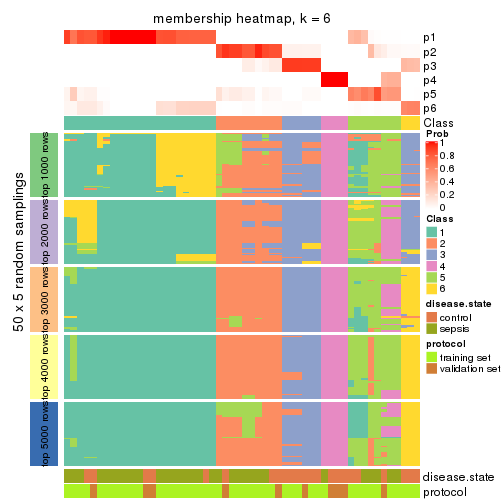
As soon as we have had the classes for columns, we can look for signatures which are significantly different between classes which can be candidate marks for certain classes. Following are the heatmaps for signatures.
Signature heatmaps where rows are scaled:
get_signatures(res, k = 2)
get_signatures(res, k = 3)
get_signatures(res, k = 4)
get_signatures(res, k = 5)
get_signatures(res, k = 6)
Signature heatmaps where rows are not scaled:
get_signatures(res, k = 2, scale_rows = FALSE)
get_signatures(res, k = 3, scale_rows = FALSE)
get_signatures(res, k = 4, scale_rows = FALSE)
get_signatures(res, k = 5, scale_rows = FALSE)
get_signatures(res, k = 6, scale_rows = FALSE)
Compare the overlap of signatures from different k:
compare_signatures(res)
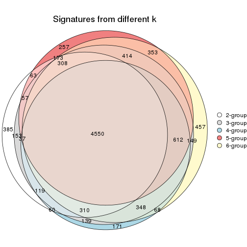
get_signature() returns a data frame invisibly. TO get the list of signatures, the function
call should be assigned to a variable explicitly. In following code, if plot argument is set
to FALSE, no heatmap is plotted while only the differential analysis is performed.
# code only for demonstration
tb = get_signature(res, k = ..., plot = FALSE)
An example of the output of tb is:
#> which_row fdr mean_1 mean_2 scaled_mean_1 scaled_mean_2 km
#> 1 38 0.042760348 8.373488 9.131774 -0.5533452 0.5164555 1
#> 2 40 0.018707592 7.106213 8.469186 -0.6173731 0.5762149 1
#> 3 55 0.019134737 10.221463 11.207825 -0.6159697 0.5749050 1
#> 4 59 0.006059896 5.921854 7.869574 -0.6899429 0.6439467 1
#> 5 60 0.018055526 8.928898 10.211722 -0.6204761 0.5791110 1
#> 6 98 0.009384629 15.714769 14.887706 0.6635654 -0.6193277 2
...
The columns in tb are:
which_row: row indices corresponding to the input matrix.fdr: FDR for the differential test. mean_x: The mean value in group x.scaled_mean_x: The mean value in group x after rows are scaled.km: Row groups if k-means clustering is applied to rows.UMAP plot which shows how samples are separated.
dimension_reduction(res, k = 2, method = "UMAP")

dimension_reduction(res, k = 3, method = "UMAP")
dimension_reduction(res, k = 4, method = "UMAP")
dimension_reduction(res, k = 5, method = "UMAP")
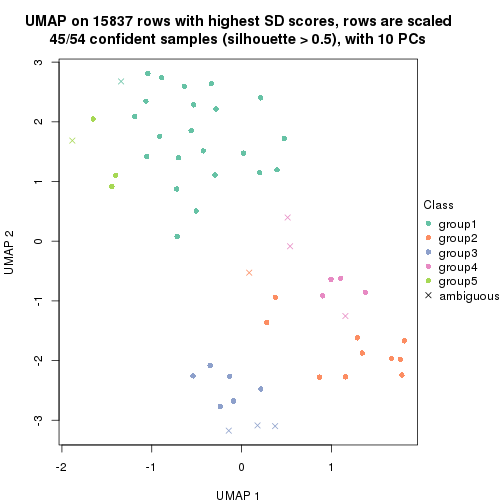
dimension_reduction(res, k = 6, method = "UMAP")
Following heatmap shows how subgroups are split when increasing k:
collect_classes(res)
Test correlation between subgroups and known annotations. If the known annotation is numeric, one-way ANOVA test is applied, and if the known annotation is discrete, chi-squared contingency table test is applied.
test_to_known_factors(res)
#> n disease.state(p) protocol(p) k
#> SD:hclust 49 0.016312 0.34572 2
#> SD:hclust 40 0.000283 0.00161 3
#> SD:hclust 38 0.000115 0.95223 4
#> SD:hclust 45 0.005256 0.06336 5
#> SD:hclust 45 0.001344 0.06336 6
If matrix rows can be associated to genes, consider to use GO_Enrichment(res,
...) to perform function enrichment for the signature genes.
The object with results only for a single top-value method and a single partition method can be extracted as:
res = res_list["SD", "kmeans"]
# you can also extract it by
# res = res_list["SD:kmeans"]
A summary of res and all the functions that can be applied to it:
res
#> A 'ConsensusPartition' object with k = 2, 3, 4, 5, 6.
#> On a matrix with 15837 rows and 54 columns.
#> Top rows (1000, 2000, 3000, 4000, 5000) are extracted by 'SD' method.
#> Subgroups are detected by 'kmeans' method.
#> Performed in total 1250 partitions by row resampling.
#> Best k for subgroups seems to be 2.
#>
#> Following methods can be applied to this 'ConsensusPartition' object:
#> [1] "cola_report" "collect_classes" "collect_plots"
#> [4] "collect_stats" "colnames" "compare_signatures"
#> [7] "consensus_heatmap" "dimension_reduction" "functional_enrichment"
#> [10] "get_anno_col" "get_anno" "get_classes"
#> [13] "get_consensus" "get_matrix" "get_membership"
#> [16] "get_param" "get_signatures" "get_stats"
#> [19] "is_best_k" "is_stable_k" "membership_heatmap"
#> [22] "ncol" "nrow" "plot_ecdf"
#> [25] "rownames" "select_partition_number" "show"
#> [28] "suggest_best_k" "test_to_known_factors"
collect_plots() function collects all the plots made from res for all k (number of partitions)
into one single page to provide an easy and fast comparison between different k.
collect_plots(res)
The plots are:
k and the heatmap of
predicted classes for each k.k.k.k.All the plots in panels can be made by individual functions and they are plotted later in this section.
select_partition_number() produces several plots showing different
statistics for choosing “optimized” k. There are following statistics:
k;k, the area increased is defined as \(A_k - A_{k-1}\).The detailed explanations of these statistics can be found in the cola vignette.
Generally speaking, lower PAC score, higher mean silhouette score or higher
concordance corresponds to better partition. Rand index and Jaccard index
measure how similar the current partition is compared to partition with k-1.
If they are too similar, we won't accept k is better than k-1.
select_partition_number(res)
The numeric values for all these statistics can be obtained by get_stats().
get_stats(res)
#> k 1-PAC mean_silhouette concordance area_increased Rand Jaccard
#> 2 2 1.000 0.969 0.988 0.5094 0.491 0.491
#> 3 3 0.733 0.895 0.905 0.2579 0.829 0.668
#> 4 4 0.698 0.709 0.765 0.1313 0.869 0.654
#> 5 5 0.692 0.617 0.723 0.0775 0.884 0.592
#> 6 6 0.710 0.708 0.795 0.0498 0.927 0.656
suggest_best_k() suggests the best \(k\) based on these statistics. The rules are as follows:
NA.suggest_best_k(res)
#> [1] 2
Following shows the table of the partitions (You need to click the show/hide
code output link to see it). The membership matrix (columns with name p*)
is inferred by
clue::cl_consensus()
function with the SE method. Basically the value in the membership matrix
represents the probability to belong to a certain group. The finall class
label for an item is determined with the group with highest probability it
belongs to.
In get_classes() function, the entropy is calculated from the membership
matrix and the silhouette score is calculated from the consensus matrix.
cbind(get_classes(res, k = 2), get_membership(res, k = 2))
#> class entropy silhouette p1 p2
#> GSM134895 1 0.000 0.975 1.000 0.000
#> GSM134896 2 0.000 1.000 0.000 1.000
#> GSM134897 2 0.000 1.000 0.000 1.000
#> GSM134898 2 0.000 1.000 0.000 1.000
#> GSM134905 2 0.000 1.000 0.000 1.000
#> GSM135018 2 0.000 1.000 0.000 1.000
#> GSM135674 1 0.000 0.975 1.000 0.000
#> GSM135683 2 0.000 1.000 0.000 1.000
#> GSM135685 2 0.000 1.000 0.000 1.000
#> GSM135699 1 0.000 0.975 1.000 0.000
#> GSM135019 2 0.000 1.000 0.000 1.000
#> GSM135026 1 0.000 0.975 1.000 0.000
#> GSM135033 2 0.000 1.000 0.000 1.000
#> GSM135042 1 0.000 0.975 1.000 0.000
#> GSM135057 2 0.000 1.000 0.000 1.000
#> GSM135068 1 0.000 0.975 1.000 0.000
#> GSM135071 2 0.000 1.000 0.000 1.000
#> GSM135078 2 0.000 1.000 0.000 1.000
#> GSM135163 2 0.000 1.000 0.000 1.000
#> GSM135166 2 0.000 1.000 0.000 1.000
#> GSM135223 2 0.000 1.000 0.000 1.000
#> GSM135224 2 0.000 1.000 0.000 1.000
#> GSM135228 1 0.000 0.975 1.000 0.000
#> GSM135262 1 0.000 0.975 1.000 0.000
#> GSM135263 2 0.000 1.000 0.000 1.000
#> GSM135279 2 0.000 1.000 0.000 1.000
#> GSM135661 1 0.000 0.975 1.000 0.000
#> GSM135662 2 0.000 1.000 0.000 1.000
#> GSM135663 2 0.000 1.000 0.000 1.000
#> GSM135664 2 0.000 1.000 0.000 1.000
#> GSM135665 1 0.000 0.975 1.000 0.000
#> GSM135666 1 0.000 0.975 1.000 0.000
#> GSM135668 1 0.000 0.975 1.000 0.000
#> GSM135670 1 0.000 0.975 1.000 0.000
#> GSM135671 1 0.000 0.975 1.000 0.000
#> GSM135675 1 0.000 0.975 1.000 0.000
#> GSM135676 1 0.000 0.975 1.000 0.000
#> GSM135677 1 0.000 0.975 1.000 0.000
#> GSM135679 1 0.000 0.975 1.000 0.000
#> GSM135680 2 0.000 1.000 0.000 1.000
#> GSM135681 1 0.788 0.691 0.764 0.236
#> GSM135682 2 0.000 1.000 0.000 1.000
#> GSM135687 1 0.000 0.975 1.000 0.000
#> GSM135688 1 0.000 0.975 1.000 0.000
#> GSM135689 1 0.000 0.975 1.000 0.000
#> GSM135693 2 0.000 1.000 0.000 1.000
#> GSM135694 1 0.000 0.975 1.000 0.000
#> GSM135695 1 0.000 0.975 1.000 0.000
#> GSM135696 1 0.000 0.975 1.000 0.000
#> GSM135697 1 0.000 0.975 1.000 0.000
#> GSM135698 2 0.000 1.000 0.000 1.000
#> GSM135700 1 0.000 0.975 1.000 0.000
#> GSM135702 1 0.985 0.274 0.572 0.428
#> GSM135703 2 0.000 1.000 0.000 1.000
cbind(get_classes(res, k = 3), get_membership(res, k = 3))
#> class entropy silhouette p1 p2 p3
#> GSM134895 1 0.1163 0.932 0.972 0.028 0.000
#> GSM134896 3 0.2878 0.993 0.000 0.096 0.904
#> GSM134897 3 0.3038 0.995 0.000 0.104 0.896
#> GSM134898 3 0.3038 0.995 0.000 0.104 0.896
#> GSM134905 3 0.2878 0.993 0.000 0.096 0.904
#> GSM135018 3 0.3038 0.995 0.000 0.104 0.896
#> GSM135674 1 0.3038 0.896 0.896 0.104 0.000
#> GSM135683 3 0.3038 0.995 0.000 0.104 0.896
#> GSM135685 3 0.3038 0.995 0.000 0.104 0.896
#> GSM135699 1 0.2878 0.925 0.904 0.000 0.096
#> GSM135019 3 0.2878 0.993 0.000 0.096 0.904
#> GSM135026 1 0.3038 0.896 0.896 0.104 0.000
#> GSM135033 3 0.3038 0.995 0.000 0.104 0.896
#> GSM135042 1 0.3038 0.896 0.896 0.104 0.000
#> GSM135057 2 0.3619 0.845 0.000 0.864 0.136
#> GSM135068 1 0.2625 0.928 0.916 0.000 0.084
#> GSM135071 2 0.1643 0.868 0.000 0.956 0.044
#> GSM135078 2 0.4121 0.827 0.000 0.832 0.168
#> GSM135163 2 0.0747 0.865 0.000 0.984 0.016
#> GSM135166 3 0.2878 0.993 0.000 0.096 0.904
#> GSM135223 2 0.3482 0.850 0.000 0.872 0.128
#> GSM135224 2 0.3482 0.850 0.000 0.872 0.128
#> GSM135228 1 0.2878 0.901 0.904 0.096 0.000
#> GSM135262 1 0.0747 0.936 0.984 0.016 0.000
#> GSM135263 2 0.4121 0.827 0.000 0.832 0.168
#> GSM135279 2 0.1529 0.867 0.000 0.960 0.040
#> GSM135661 1 0.0747 0.936 0.984 0.016 0.000
#> GSM135662 2 0.1031 0.863 0.000 0.976 0.024
#> GSM135663 2 0.2959 0.862 0.000 0.900 0.100
#> GSM135664 2 0.4121 0.827 0.000 0.832 0.168
#> GSM135665 1 0.2878 0.925 0.904 0.000 0.096
#> GSM135666 1 0.0000 0.939 1.000 0.000 0.000
#> GSM135668 1 0.3038 0.896 0.896 0.104 0.000
#> GSM135670 1 0.0000 0.939 1.000 0.000 0.000
#> GSM135671 1 0.2878 0.925 0.904 0.000 0.096
#> GSM135675 1 0.0000 0.939 1.000 0.000 0.000
#> GSM135676 1 0.2878 0.925 0.904 0.000 0.096
#> GSM135677 1 0.0000 0.939 1.000 0.000 0.000
#> GSM135679 1 0.0000 0.939 1.000 0.000 0.000
#> GSM135680 2 0.0237 0.856 0.004 0.996 0.000
#> GSM135681 2 0.3038 0.771 0.104 0.896 0.000
#> GSM135682 2 0.6295 0.120 0.000 0.528 0.472
#> GSM135687 1 0.0000 0.939 1.000 0.000 0.000
#> GSM135688 1 0.2878 0.925 0.904 0.000 0.096
#> GSM135689 1 0.0000 0.939 1.000 0.000 0.000
#> GSM135693 2 0.1031 0.863 0.000 0.976 0.024
#> GSM135694 1 0.2878 0.925 0.904 0.000 0.096
#> GSM135695 1 0.2878 0.925 0.904 0.000 0.096
#> GSM135696 1 0.2878 0.925 0.904 0.000 0.096
#> GSM135697 1 0.2878 0.925 0.904 0.000 0.096
#> GSM135698 2 0.3886 0.788 0.096 0.880 0.024
#> GSM135700 1 0.3038 0.896 0.896 0.104 0.000
#> GSM135702 2 0.3832 0.784 0.100 0.880 0.020
#> GSM135703 2 0.3619 0.847 0.000 0.864 0.136
cbind(get_classes(res, k = 4), get_membership(res, k = 4))
#> class entropy silhouette p1 p2 p3 p4
#> GSM134895 1 0.0921 0.6237 0.972 0.000 0.000 0.028
#> GSM134896 3 0.0188 0.9856 0.000 0.000 0.996 0.004
#> GSM134897 3 0.0707 0.9849 0.000 0.000 0.980 0.020
#> GSM134898 3 0.0707 0.9849 0.000 0.000 0.980 0.020
#> GSM134905 3 0.0592 0.9854 0.000 0.000 0.984 0.016
#> GSM135018 3 0.1059 0.9794 0.000 0.012 0.972 0.016
#> GSM135674 1 0.3278 0.5853 0.864 0.020 0.000 0.116
#> GSM135683 3 0.0707 0.9811 0.000 0.000 0.980 0.020
#> GSM135685 3 0.0707 0.9811 0.000 0.000 0.980 0.020
#> GSM135699 4 0.4981 0.9916 0.464 0.000 0.000 0.536
#> GSM135019 3 0.0707 0.9811 0.000 0.000 0.980 0.020
#> GSM135026 1 0.3278 0.5853 0.864 0.020 0.000 0.116
#> GSM135033 3 0.0336 0.9850 0.000 0.000 0.992 0.008
#> GSM135042 1 0.1706 0.6193 0.948 0.016 0.000 0.036
#> GSM135057 2 0.5343 0.7203 0.000 0.656 0.028 0.316
#> GSM135068 1 0.4500 -0.1703 0.684 0.000 0.000 0.316
#> GSM135071 2 0.0336 0.7745 0.000 0.992 0.008 0.000
#> GSM135078 2 0.3306 0.7146 0.000 0.840 0.156 0.004
#> GSM135163 2 0.4155 0.7529 0.004 0.756 0.000 0.240
#> GSM135166 3 0.0592 0.9854 0.000 0.000 0.984 0.016
#> GSM135223 2 0.5364 0.7197 0.000 0.652 0.028 0.320
#> GSM135224 2 0.5364 0.7197 0.000 0.652 0.028 0.320
#> GSM135228 1 0.0188 0.6235 0.996 0.004 0.000 0.000
#> GSM135262 1 0.0000 0.6223 1.000 0.000 0.000 0.000
#> GSM135263 2 0.3306 0.7146 0.000 0.840 0.156 0.004
#> GSM135279 2 0.0336 0.7745 0.000 0.992 0.008 0.000
#> GSM135661 1 0.1637 0.5900 0.940 0.000 0.000 0.060
#> GSM135662 2 0.0524 0.7740 0.008 0.988 0.000 0.004
#> GSM135663 2 0.0469 0.7739 0.000 0.988 0.012 0.000
#> GSM135664 2 0.3123 0.7160 0.000 0.844 0.156 0.000
#> GSM135665 4 0.4981 0.9916 0.464 0.000 0.000 0.536
#> GSM135666 1 0.3486 0.4481 0.812 0.000 0.000 0.188
#> GSM135668 1 0.3278 0.5853 0.864 0.020 0.000 0.116
#> GSM135670 1 0.3356 0.4674 0.824 0.000 0.000 0.176
#> GSM135671 4 0.4981 0.9916 0.464 0.000 0.000 0.536
#> GSM135675 1 0.3873 0.3187 0.772 0.000 0.000 0.228
#> GSM135676 4 0.4981 0.9916 0.464 0.000 0.000 0.536
#> GSM135677 1 0.3528 0.4400 0.808 0.000 0.000 0.192
#> GSM135679 1 0.4134 0.1865 0.740 0.000 0.000 0.260
#> GSM135680 2 0.4155 0.7529 0.004 0.756 0.000 0.240
#> GSM135681 2 0.7384 0.5825 0.172 0.476 0.000 0.352
#> GSM135682 2 0.5151 0.1249 0.000 0.532 0.464 0.004
#> GSM135687 1 0.3528 0.4400 0.808 0.000 0.000 0.192
#> GSM135688 4 0.4981 0.9916 0.464 0.000 0.000 0.536
#> GSM135689 1 0.3528 0.4400 0.808 0.000 0.000 0.192
#> GSM135693 2 0.4632 0.7342 0.004 0.688 0.000 0.308
#> GSM135694 4 0.4981 0.9916 0.464 0.000 0.000 0.536
#> GSM135695 4 0.4999 0.9292 0.492 0.000 0.000 0.508
#> GSM135696 4 0.4981 0.9916 0.464 0.000 0.000 0.536
#> GSM135697 4 0.4981 0.9916 0.464 0.000 0.000 0.536
#> GSM135698 2 0.5998 0.5857 0.200 0.684 0.000 0.116
#> GSM135700 1 0.3047 0.5893 0.872 0.012 0.000 0.116
#> GSM135702 1 0.6974 -0.0413 0.488 0.396 0.000 0.116
#> GSM135703 2 0.3208 0.7195 0.000 0.848 0.148 0.004
cbind(get_classes(res, k = 5), get_membership(res, k = 5))
#> class entropy silhouette p1 p2 p3 p4 p5
#> GSM134895 5 0.3573 0.639 0.152 0.036 0.000 0.000 0.812
#> GSM134896 3 0.0579 0.920 0.000 0.008 0.984 0.000 0.008
#> GSM134897 3 0.0771 0.919 0.000 0.000 0.976 0.004 0.020
#> GSM134898 3 0.0771 0.919 0.000 0.000 0.976 0.004 0.020
#> GSM134905 3 0.0740 0.920 0.000 0.008 0.980 0.004 0.008
#> GSM135018 3 0.4407 0.614 0.000 0.244 0.724 0.012 0.020
#> GSM135674 5 0.5562 0.529 0.100 0.296 0.000 0.000 0.604
#> GSM135683 3 0.2989 0.889 0.000 0.060 0.868 0.000 0.072
#> GSM135685 3 0.2989 0.889 0.000 0.060 0.868 0.000 0.072
#> GSM135699 1 0.0000 0.797 1.000 0.000 0.000 0.000 0.000
#> GSM135019 3 0.2927 0.890 0.000 0.060 0.872 0.000 0.068
#> GSM135026 5 0.5562 0.529 0.100 0.296 0.000 0.000 0.604
#> GSM135033 3 0.0912 0.919 0.000 0.012 0.972 0.000 0.016
#> GSM135042 5 0.3531 0.637 0.148 0.036 0.000 0.000 0.816
#> GSM135057 4 0.0162 0.785 0.000 0.000 0.004 0.996 0.000
#> GSM135068 5 0.4291 0.326 0.464 0.000 0.000 0.000 0.536
#> GSM135071 2 0.4359 0.609 0.000 0.584 0.004 0.412 0.000
#> GSM135078 2 0.6035 0.650 0.000 0.544 0.092 0.352 0.012
#> GSM135163 4 0.3578 0.656 0.000 0.132 0.000 0.820 0.048
#> GSM135166 3 0.0740 0.920 0.000 0.008 0.980 0.004 0.008
#> GSM135223 4 0.0162 0.785 0.000 0.000 0.004 0.996 0.000
#> GSM135224 4 0.0162 0.785 0.000 0.000 0.004 0.996 0.000
#> GSM135228 5 0.3487 0.642 0.212 0.008 0.000 0.000 0.780
#> GSM135262 5 0.3274 0.638 0.220 0.000 0.000 0.000 0.780
#> GSM135263 2 0.6035 0.650 0.000 0.544 0.092 0.352 0.012
#> GSM135279 2 0.4350 0.612 0.000 0.588 0.004 0.408 0.000
#> GSM135661 5 0.3336 0.633 0.228 0.000 0.000 0.000 0.772
#> GSM135662 2 0.4201 0.607 0.000 0.592 0.000 0.408 0.000
#> GSM135663 2 0.4557 0.618 0.000 0.584 0.012 0.404 0.000
#> GSM135664 2 0.5935 0.651 0.000 0.548 0.092 0.352 0.008
#> GSM135665 1 0.0000 0.797 1.000 0.000 0.000 0.000 0.000
#> GSM135666 5 0.4651 0.472 0.372 0.020 0.000 0.000 0.608
#> GSM135668 5 0.5562 0.529 0.100 0.296 0.000 0.000 0.604
#> GSM135670 1 0.4979 -0.303 0.492 0.028 0.000 0.000 0.480
#> GSM135671 1 0.0000 0.797 1.000 0.000 0.000 0.000 0.000
#> GSM135675 1 0.5483 -0.155 0.512 0.064 0.000 0.000 0.424
#> GSM135676 1 0.1568 0.782 0.944 0.036 0.000 0.000 0.020
#> GSM135677 5 0.4249 0.401 0.432 0.000 0.000 0.000 0.568
#> GSM135679 1 0.5370 0.101 0.584 0.068 0.000 0.000 0.348
#> GSM135680 4 0.3946 0.656 0.000 0.120 0.000 0.800 0.080
#> GSM135681 4 0.6522 0.309 0.000 0.300 0.000 0.476 0.224
#> GSM135682 2 0.6285 0.395 0.000 0.528 0.340 0.120 0.012
#> GSM135687 5 0.4242 0.410 0.428 0.000 0.000 0.000 0.572
#> GSM135688 1 0.0000 0.797 1.000 0.000 0.000 0.000 0.000
#> GSM135689 5 0.4242 0.410 0.428 0.000 0.000 0.000 0.572
#> GSM135693 4 0.0162 0.781 0.000 0.004 0.000 0.996 0.000
#> GSM135694 1 0.0000 0.797 1.000 0.000 0.000 0.000 0.000
#> GSM135695 1 0.1478 0.762 0.936 0.000 0.000 0.000 0.064
#> GSM135696 1 0.0963 0.783 0.964 0.036 0.000 0.000 0.000
#> GSM135697 1 0.0880 0.786 0.968 0.000 0.000 0.000 0.032
#> GSM135698 2 0.5047 0.122 0.000 0.652 0.000 0.064 0.284
#> GSM135700 5 0.5544 0.531 0.100 0.292 0.000 0.000 0.608
#> GSM135702 2 0.4135 0.114 0.000 0.656 0.000 0.004 0.340
#> GSM135703 2 0.5944 0.652 0.000 0.552 0.084 0.352 0.012
cbind(get_classes(res, k = 6), get_membership(res, k = 6))
#> class entropy silhouette p1 p2 p3 p4 p5 p6
#> GSM134895 6 0.282 0.5300 0.016 0.000 0.000 0.044 0.068 0.872
#> GSM134896 3 0.167 0.9000 0.000 0.004 0.932 0.000 0.048 0.016
#> GSM134897 3 0.162 0.9028 0.000 0.012 0.944 0.008 0.020 0.016
#> GSM134898 3 0.162 0.9028 0.000 0.012 0.944 0.008 0.020 0.016
#> GSM134905 3 0.193 0.8985 0.000 0.004 0.924 0.008 0.048 0.016
#> GSM135018 2 0.507 0.1202 0.000 0.500 0.448 0.008 0.032 0.012
#> GSM135674 5 0.406 0.7423 0.008 0.008 0.000 0.000 0.644 0.340
#> GSM135683 3 0.348 0.8667 0.000 0.000 0.816 0.060 0.116 0.008
#> GSM135685 3 0.343 0.8671 0.000 0.000 0.820 0.060 0.112 0.008
#> GSM135699 1 0.000 0.8096 1.000 0.000 0.000 0.000 0.000 0.000
#> GSM135019 3 0.339 0.8688 0.000 0.000 0.824 0.060 0.108 0.008
#> GSM135026 5 0.435 0.7381 0.008 0.008 0.000 0.008 0.620 0.356
#> GSM135033 3 0.151 0.9058 0.000 0.004 0.948 0.020 0.016 0.012
#> GSM135042 6 0.282 0.5300 0.016 0.000 0.000 0.044 0.068 0.872
#> GSM135057 4 0.314 0.7867 0.000 0.228 0.004 0.768 0.000 0.000
#> GSM135068 6 0.345 0.7038 0.308 0.000 0.000 0.000 0.000 0.692
#> GSM135071 2 0.101 0.7989 0.000 0.960 0.000 0.004 0.036 0.000
#> GSM135078 2 0.161 0.8282 0.000 0.932 0.056 0.000 0.008 0.004
#> GSM135163 4 0.618 0.6599 0.000 0.340 0.000 0.496 0.120 0.044
#> GSM135166 3 0.193 0.8985 0.000 0.004 0.924 0.008 0.048 0.016
#> GSM135223 4 0.314 0.7867 0.000 0.228 0.004 0.768 0.000 0.000
#> GSM135224 4 0.314 0.7867 0.000 0.228 0.004 0.768 0.000 0.000
#> GSM135228 6 0.244 0.6883 0.096 0.000 0.000 0.004 0.020 0.880
#> GSM135262 6 0.214 0.7429 0.128 0.000 0.000 0.000 0.000 0.872
#> GSM135263 2 0.171 0.8272 0.000 0.928 0.056 0.000 0.012 0.004
#> GSM135279 2 0.128 0.7892 0.000 0.944 0.000 0.004 0.052 0.000
#> GSM135661 6 0.214 0.7429 0.128 0.000 0.000 0.000 0.000 0.872
#> GSM135662 2 0.164 0.7712 0.000 0.920 0.000 0.004 0.076 0.000
#> GSM135663 2 0.079 0.8026 0.000 0.968 0.000 0.000 0.032 0.000
#> GSM135664 2 0.120 0.8290 0.000 0.944 0.056 0.000 0.000 0.000
#> GSM135665 1 0.000 0.8096 1.000 0.000 0.000 0.000 0.000 0.000
#> GSM135666 6 0.394 0.7414 0.176 0.000 0.000 0.036 0.020 0.768
#> GSM135668 5 0.437 0.7380 0.008 0.008 0.000 0.008 0.616 0.360
#> GSM135670 6 0.561 0.3514 0.388 0.000 0.000 0.020 0.088 0.504
#> GSM135671 1 0.000 0.8096 1.000 0.000 0.000 0.000 0.000 0.000
#> GSM135675 1 0.673 0.0173 0.436 0.000 0.000 0.080 0.140 0.344
#> GSM135676 1 0.384 0.7513 0.812 0.000 0.000 0.068 0.068 0.052
#> GSM135677 6 0.339 0.7182 0.296 0.000 0.000 0.000 0.000 0.704
#> GSM135679 1 0.662 0.1286 0.472 0.000 0.000 0.068 0.152 0.308
#> GSM135680 4 0.654 0.6073 0.000 0.256 0.000 0.480 0.220 0.044
#> GSM135681 4 0.644 0.2487 0.000 0.096 0.000 0.448 0.376 0.080
#> GSM135682 2 0.364 0.6895 0.000 0.768 0.200 0.000 0.024 0.008
#> GSM135687 6 0.337 0.7219 0.292 0.000 0.000 0.000 0.000 0.708
#> GSM135688 1 0.000 0.8096 1.000 0.000 0.000 0.000 0.000 0.000
#> GSM135689 6 0.337 0.7219 0.292 0.000 0.000 0.000 0.000 0.708
#> GSM135693 4 0.319 0.7825 0.000 0.236 0.000 0.760 0.004 0.000
#> GSM135694 1 0.026 0.8072 0.992 0.000 0.000 0.008 0.000 0.000
#> GSM135695 1 0.318 0.7120 0.824 0.000 0.000 0.020 0.012 0.144
#> GSM135696 1 0.257 0.7688 0.876 0.000 0.000 0.060 0.064 0.000
#> GSM135697 1 0.210 0.7591 0.892 0.000 0.000 0.004 0.004 0.100
#> GSM135698 5 0.502 0.5698 0.000 0.220 0.000 0.004 0.648 0.128
#> GSM135700 5 0.571 0.5241 0.008 0.004 0.000 0.116 0.504 0.368
#> GSM135702 5 0.538 0.5805 0.000 0.232 0.000 0.004 0.600 0.164
#> GSM135703 2 0.191 0.8252 0.000 0.920 0.052 0.000 0.024 0.004
Heatmaps for the consensus matrix. It visualizes the probability of two samples to be in a same group.
consensus_heatmap(res, k = 2)
consensus_heatmap(res, k = 3)
consensus_heatmap(res, k = 4)
consensus_heatmap(res, k = 5)
consensus_heatmap(res, k = 6)
Heatmaps for the membership of samples in all partitions to see how consistent they are:
membership_heatmap(res, k = 2)
membership_heatmap(res, k = 3)
membership_heatmap(res, k = 4)
membership_heatmap(res, k = 5)
membership_heatmap(res, k = 6)
As soon as we have had the classes for columns, we can look for signatures which are significantly different between classes which can be candidate marks for certain classes. Following are the heatmaps for signatures.
Signature heatmaps where rows are scaled:
get_signatures(res, k = 2)
get_signatures(res, k = 3)
get_signatures(res, k = 4)
get_signatures(res, k = 5)
get_signatures(res, k = 6)
Signature heatmaps where rows are not scaled:
get_signatures(res, k = 2, scale_rows = FALSE)
get_signatures(res, k = 3, scale_rows = FALSE)
get_signatures(res, k = 4, scale_rows = FALSE)
get_signatures(res, k = 5, scale_rows = FALSE)
get_signatures(res, k = 6, scale_rows = FALSE)
Compare the overlap of signatures from different k:
compare_signatures(res)
get_signature() returns a data frame invisibly. TO get the list of signatures, the function
call should be assigned to a variable explicitly. In following code, if plot argument is set
to FALSE, no heatmap is plotted while only the differential analysis is performed.
# code only for demonstration
tb = get_signature(res, k = ..., plot = FALSE)
An example of the output of tb is:
#> which_row fdr mean_1 mean_2 scaled_mean_1 scaled_mean_2 km
#> 1 38 0.042760348 8.373488 9.131774 -0.5533452 0.5164555 1
#> 2 40 0.018707592 7.106213 8.469186 -0.6173731 0.5762149 1
#> 3 55 0.019134737 10.221463 11.207825 -0.6159697 0.5749050 1
#> 4 59 0.006059896 5.921854 7.869574 -0.6899429 0.6439467 1
#> 5 60 0.018055526 8.928898 10.211722 -0.6204761 0.5791110 1
#> 6 98 0.009384629 15.714769 14.887706 0.6635654 -0.6193277 2
...
The columns in tb are:
which_row: row indices corresponding to the input matrix.fdr: FDR for the differential test. mean_x: The mean value in group x.scaled_mean_x: The mean value in group x after rows are scaled.km: Row groups if k-means clustering is applied to rows.UMAP plot which shows how samples are separated.
dimension_reduction(res, k = 2, method = "UMAP")
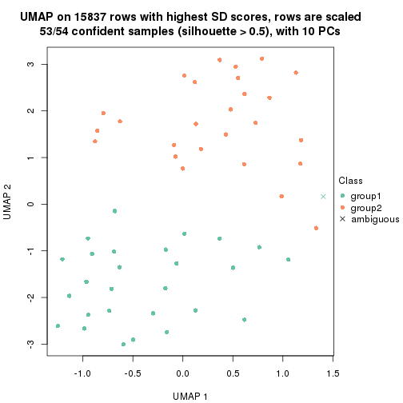
dimension_reduction(res, k = 3, method = "UMAP")
dimension_reduction(res, k = 4, method = "UMAP")
dimension_reduction(res, k = 5, method = "UMAP")
dimension_reduction(res, k = 6, method = "UMAP")
Following heatmap shows how subgroups are split when increasing k:
collect_classes(res)
Test correlation between subgroups and known annotations. If the known annotation is numeric, one-way ANOVA test is applied, and if the known annotation is discrete, chi-squared contingency table test is applied.
test_to_known_factors(res)
#> n disease.state(p) protocol(p) k
#> SD:kmeans 53 0.019393 0.2629 2
#> SD:kmeans 53 0.000279 0.1096 3
#> SD:kmeans 44 0.000872 0.1186 4
#> SD:kmeans 42 0.001144 0.0316 5
#> SD:kmeans 49 0.002243 0.0252 6
If matrix rows can be associated to genes, consider to use GO_Enrichment(res,
...) to perform function enrichment for the signature genes.
The object with results only for a single top-value method and a single partition method can be extracted as:
res = res_list["SD", "skmeans"]
# you can also extract it by
# res = res_list["SD:skmeans"]
A summary of res and all the functions that can be applied to it:
res
#> A 'ConsensusPartition' object with k = 2, 3, 4, 5, 6.
#> On a matrix with 15837 rows and 54 columns.
#> Top rows (1000, 2000, 3000, 4000, 5000) are extracted by 'SD' method.
#> Subgroups are detected by 'skmeans' method.
#> Performed in total 1250 partitions by row resampling.
#> Best k for subgroups seems to be 3.
#>
#> Following methods can be applied to this 'ConsensusPartition' object:
#> [1] "cola_report" "collect_classes" "collect_plots"
#> [4] "collect_stats" "colnames" "compare_signatures"
#> [7] "consensus_heatmap" "dimension_reduction" "functional_enrichment"
#> [10] "get_anno_col" "get_anno" "get_classes"
#> [13] "get_consensus" "get_matrix" "get_membership"
#> [16] "get_param" "get_signatures" "get_stats"
#> [19] "is_best_k" "is_stable_k" "membership_heatmap"
#> [22] "ncol" "nrow" "plot_ecdf"
#> [25] "rownames" "select_partition_number" "show"
#> [28] "suggest_best_k" "test_to_known_factors"
collect_plots() function collects all the plots made from res for all k (number of partitions)
into one single page to provide an easy and fast comparison between different k.
collect_plots(res)
The plots are:
k and the heatmap of
predicted classes for each k.k.k.k.All the plots in panels can be made by individual functions and they are plotted later in this section.
select_partition_number() produces several plots showing different
statistics for choosing “optimized” k. There are following statistics:
k;k, the area increased is defined as \(A_k - A_{k-1}\).The detailed explanations of these statistics can be found in the cola vignette.
Generally speaking, lower PAC score, higher mean silhouette score or higher
concordance corresponds to better partition. Rand index and Jaccard index
measure how similar the current partition is compared to partition with k-1.
If they are too similar, we won't accept k is better than k-1.
select_partition_number(res)
The numeric values for all these statistics can be obtained by get_stats().
get_stats(res)
#> k 1-PAC mean_silhouette concordance area_increased Rand Jaccard
#> 2 2 1.000 0.974 0.989 0.5096 0.491 0.491
#> 3 3 1.000 0.988 0.990 0.2042 0.890 0.777
#> 4 4 0.846 0.791 0.898 0.1180 0.932 0.824
#> 5 5 0.751 0.721 0.848 0.0846 0.928 0.780
#> 6 6 0.744 0.645 0.845 0.0428 0.961 0.856
suggest_best_k() suggests the best \(k\) based on these statistics. The rules are as follows:
NA.suggest_best_k(res)
#> [1] 3
#> attr(,"optional")
#> [1] 2
There is also optional best \(k\) = 2 that is worth to check.
Following shows the table of the partitions (You need to click the show/hide
code output link to see it). The membership matrix (columns with name p*)
is inferred by
clue::cl_consensus()
function with the SE method. Basically the value in the membership matrix
represents the probability to belong to a certain group. The finall class
label for an item is determined with the group with highest probability it
belongs to.
In get_classes() function, the entropy is calculated from the membership
matrix and the silhouette score is calculated from the consensus matrix.
cbind(get_classes(res, k = 2), get_membership(res, k = 2))
#> class entropy silhouette p1 p2
#> GSM134895 1 0.000 0.988 1.000 0.000
#> GSM134896 2 0.000 0.990 0.000 1.000
#> GSM134897 2 0.000 0.990 0.000 1.000
#> GSM134898 2 0.000 0.990 0.000 1.000
#> GSM134905 2 0.000 0.990 0.000 1.000
#> GSM135018 2 0.000 0.990 0.000 1.000
#> GSM135674 1 0.000 0.988 1.000 0.000
#> GSM135683 2 0.000 0.990 0.000 1.000
#> GSM135685 2 0.000 0.990 0.000 1.000
#> GSM135699 1 0.000 0.988 1.000 0.000
#> GSM135019 2 0.000 0.990 0.000 1.000
#> GSM135026 1 0.000 0.988 1.000 0.000
#> GSM135033 2 0.000 0.990 0.000 1.000
#> GSM135042 1 0.000 0.988 1.000 0.000
#> GSM135057 2 0.000 0.990 0.000 1.000
#> GSM135068 1 0.000 0.988 1.000 0.000
#> GSM135071 2 0.000 0.990 0.000 1.000
#> GSM135078 2 0.000 0.990 0.000 1.000
#> GSM135163 2 0.000 0.990 0.000 1.000
#> GSM135166 2 0.000 0.990 0.000 1.000
#> GSM135223 2 0.000 0.990 0.000 1.000
#> GSM135224 2 0.000 0.990 0.000 1.000
#> GSM135228 1 0.000 0.988 1.000 0.000
#> GSM135262 1 0.000 0.988 1.000 0.000
#> GSM135263 2 0.000 0.990 0.000 1.000
#> GSM135279 2 0.000 0.990 0.000 1.000
#> GSM135661 1 0.000 0.988 1.000 0.000
#> GSM135662 2 0.000 0.990 0.000 1.000
#> GSM135663 2 0.000 0.990 0.000 1.000
#> GSM135664 2 0.000 0.990 0.000 1.000
#> GSM135665 1 0.000 0.988 1.000 0.000
#> GSM135666 1 0.000 0.988 1.000 0.000
#> GSM135668 1 0.000 0.988 1.000 0.000
#> GSM135670 1 0.000 0.988 1.000 0.000
#> GSM135671 1 0.000 0.988 1.000 0.000
#> GSM135675 1 0.000 0.988 1.000 0.000
#> GSM135676 1 0.000 0.988 1.000 0.000
#> GSM135677 1 0.000 0.988 1.000 0.000
#> GSM135679 1 0.000 0.988 1.000 0.000
#> GSM135680 2 0.000 0.990 0.000 1.000
#> GSM135681 1 0.900 0.532 0.684 0.316
#> GSM135682 2 0.000 0.990 0.000 1.000
#> GSM135687 1 0.000 0.988 1.000 0.000
#> GSM135688 1 0.000 0.988 1.000 0.000
#> GSM135689 1 0.000 0.988 1.000 0.000
#> GSM135693 2 0.000 0.990 0.000 1.000
#> GSM135694 1 0.000 0.988 1.000 0.000
#> GSM135695 1 0.000 0.988 1.000 0.000
#> GSM135696 1 0.000 0.988 1.000 0.000
#> GSM135697 1 0.000 0.988 1.000 0.000
#> GSM135698 2 0.000 0.990 0.000 1.000
#> GSM135700 1 0.000 0.988 1.000 0.000
#> GSM135702 2 0.821 0.651 0.256 0.744
#> GSM135703 2 0.000 0.990 0.000 1.000
cbind(get_classes(res, k = 3), get_membership(res, k = 3))
#> class entropy silhouette p1 p2 p3
#> GSM134895 1 0.0000 0.998 1.000 0.000 0.000
#> GSM134896 3 0.0237 0.984 0.000 0.004 0.996
#> GSM134897 3 0.0237 0.984 0.000 0.004 0.996
#> GSM134898 3 0.0237 0.984 0.000 0.004 0.996
#> GSM134905 3 0.0237 0.984 0.000 0.004 0.996
#> GSM135018 3 0.0424 0.983 0.000 0.008 0.992
#> GSM135674 1 0.0747 0.987 0.984 0.016 0.000
#> GSM135683 3 0.0237 0.984 0.000 0.004 0.996
#> GSM135685 3 0.0237 0.984 0.000 0.004 0.996
#> GSM135699 1 0.0000 0.998 1.000 0.000 0.000
#> GSM135019 3 0.0237 0.984 0.000 0.004 0.996
#> GSM135026 1 0.0592 0.990 0.988 0.012 0.000
#> GSM135033 3 0.0237 0.984 0.000 0.004 0.996
#> GSM135042 1 0.0424 0.992 0.992 0.000 0.008
#> GSM135057 2 0.0747 0.996 0.000 0.984 0.016
#> GSM135068 1 0.0000 0.998 1.000 0.000 0.000
#> GSM135071 3 0.2448 0.934 0.000 0.076 0.924
#> GSM135078 3 0.0424 0.983 0.000 0.008 0.992
#> GSM135163 2 0.0747 0.996 0.000 0.984 0.016
#> GSM135166 3 0.0237 0.984 0.000 0.004 0.996
#> GSM135223 2 0.0747 0.996 0.000 0.984 0.016
#> GSM135224 2 0.0747 0.996 0.000 0.984 0.016
#> GSM135228 1 0.0000 0.998 1.000 0.000 0.000
#> GSM135262 1 0.0000 0.998 1.000 0.000 0.000
#> GSM135263 3 0.0424 0.983 0.000 0.008 0.992
#> GSM135279 3 0.1031 0.978 0.000 0.024 0.976
#> GSM135661 1 0.0000 0.998 1.000 0.000 0.000
#> GSM135662 3 0.3038 0.903 0.000 0.104 0.896
#> GSM135663 3 0.1031 0.977 0.000 0.024 0.976
#> GSM135664 3 0.0424 0.983 0.000 0.008 0.992
#> GSM135665 1 0.0000 0.998 1.000 0.000 0.000
#> GSM135666 1 0.0000 0.998 1.000 0.000 0.000
#> GSM135668 1 0.0424 0.993 0.992 0.008 0.000
#> GSM135670 1 0.0000 0.998 1.000 0.000 0.000
#> GSM135671 1 0.0000 0.998 1.000 0.000 0.000
#> GSM135675 1 0.0000 0.998 1.000 0.000 0.000
#> GSM135676 1 0.0000 0.998 1.000 0.000 0.000
#> GSM135677 1 0.0000 0.998 1.000 0.000 0.000
#> GSM135679 1 0.0000 0.998 1.000 0.000 0.000
#> GSM135680 2 0.0424 0.992 0.000 0.992 0.008
#> GSM135681 2 0.0475 0.986 0.004 0.992 0.004
#> GSM135682 3 0.0424 0.983 0.000 0.008 0.992
#> GSM135687 1 0.0000 0.998 1.000 0.000 0.000
#> GSM135688 1 0.0000 0.998 1.000 0.000 0.000
#> GSM135689 1 0.0000 0.998 1.000 0.000 0.000
#> GSM135693 2 0.0747 0.996 0.000 0.984 0.016
#> GSM135694 1 0.0000 0.998 1.000 0.000 0.000
#> GSM135695 1 0.0000 0.998 1.000 0.000 0.000
#> GSM135696 1 0.0000 0.998 1.000 0.000 0.000
#> GSM135697 1 0.0000 0.998 1.000 0.000 0.000
#> GSM135698 3 0.1529 0.969 0.000 0.040 0.960
#> GSM135700 1 0.0424 0.993 0.992 0.008 0.000
#> GSM135702 3 0.1267 0.974 0.004 0.024 0.972
#> GSM135703 3 0.0424 0.983 0.000 0.008 0.992
cbind(get_classes(res, k = 4), get_membership(res, k = 4))
#> class entropy silhouette p1 p2 p3 p4
#> GSM134895 1 0.0817 0.934 0.976 0.024 0.000 0.000
#> GSM134896 3 0.0000 0.786 0.000 0.000 1.000 0.000
#> GSM134897 3 0.0000 0.786 0.000 0.000 1.000 0.000
#> GSM134898 3 0.0000 0.786 0.000 0.000 1.000 0.000
#> GSM134905 3 0.0000 0.786 0.000 0.000 1.000 0.000
#> GSM135018 3 0.4454 0.387 0.000 0.308 0.692 0.000
#> GSM135674 1 0.4830 0.563 0.608 0.392 0.000 0.000
#> GSM135683 3 0.0000 0.786 0.000 0.000 1.000 0.000
#> GSM135685 3 0.0000 0.786 0.000 0.000 1.000 0.000
#> GSM135699 1 0.0000 0.941 1.000 0.000 0.000 0.000
#> GSM135019 3 0.0000 0.786 0.000 0.000 1.000 0.000
#> GSM135026 1 0.4776 0.583 0.624 0.376 0.000 0.000
#> GSM135033 3 0.0000 0.786 0.000 0.000 1.000 0.000
#> GSM135042 1 0.4289 0.756 0.796 0.032 0.172 0.000
#> GSM135057 4 0.0000 0.996 0.000 0.000 0.000 1.000
#> GSM135068 1 0.0188 0.941 0.996 0.004 0.000 0.000
#> GSM135071 2 0.5750 0.551 0.000 0.532 0.440 0.028
#> GSM135078 3 0.4500 0.365 0.000 0.316 0.684 0.000
#> GSM135163 4 0.0000 0.996 0.000 0.000 0.000 1.000
#> GSM135166 3 0.0000 0.786 0.000 0.000 1.000 0.000
#> GSM135223 4 0.0000 0.996 0.000 0.000 0.000 1.000
#> GSM135224 4 0.0000 0.996 0.000 0.000 0.000 1.000
#> GSM135228 1 0.0592 0.938 0.984 0.016 0.000 0.000
#> GSM135262 1 0.0469 0.939 0.988 0.012 0.000 0.000
#> GSM135263 3 0.4477 0.377 0.000 0.312 0.688 0.000
#> GSM135279 2 0.5383 0.536 0.000 0.536 0.452 0.012
#> GSM135661 1 0.0469 0.939 0.988 0.012 0.000 0.000
#> GSM135662 2 0.6007 0.587 0.000 0.604 0.340 0.056
#> GSM135663 2 0.5203 0.577 0.000 0.576 0.416 0.008
#> GSM135664 2 0.5161 0.477 0.000 0.520 0.476 0.004
#> GSM135665 1 0.0188 0.941 0.996 0.004 0.000 0.000
#> GSM135666 1 0.0336 0.940 0.992 0.008 0.000 0.000
#> GSM135668 1 0.4843 0.554 0.604 0.396 0.000 0.000
#> GSM135670 1 0.0336 0.940 0.992 0.008 0.000 0.000
#> GSM135671 1 0.0188 0.941 0.996 0.004 0.000 0.000
#> GSM135675 1 0.0469 0.938 0.988 0.012 0.000 0.000
#> GSM135676 1 0.0188 0.941 0.996 0.004 0.000 0.000
#> GSM135677 1 0.0469 0.939 0.988 0.012 0.000 0.000
#> GSM135679 1 0.0336 0.940 0.992 0.008 0.000 0.000
#> GSM135680 4 0.0469 0.990 0.000 0.012 0.000 0.988
#> GSM135681 4 0.0707 0.984 0.000 0.020 0.000 0.980
#> GSM135682 3 0.4500 0.370 0.000 0.316 0.684 0.000
#> GSM135687 1 0.0336 0.940 0.992 0.008 0.000 0.000
#> GSM135688 1 0.0000 0.941 1.000 0.000 0.000 0.000
#> GSM135689 1 0.0336 0.940 0.992 0.008 0.000 0.000
#> GSM135693 4 0.0000 0.996 0.000 0.000 0.000 1.000
#> GSM135694 1 0.0188 0.941 0.996 0.004 0.000 0.000
#> GSM135695 1 0.0188 0.941 0.996 0.004 0.000 0.000
#> GSM135696 1 0.0188 0.941 0.996 0.004 0.000 0.000
#> GSM135697 1 0.0000 0.941 1.000 0.000 0.000 0.000
#> GSM135698 2 0.0817 0.491 0.000 0.976 0.024 0.000
#> GSM135700 1 0.1888 0.910 0.940 0.044 0.000 0.016
#> GSM135702 2 0.0967 0.489 0.004 0.976 0.016 0.004
#> GSM135703 3 0.4500 0.370 0.000 0.316 0.684 0.000
cbind(get_classes(res, k = 5), get_membership(res, k = 5))
#> class entropy silhouette p1 p2 p3 p4 p5
#> GSM134895 1 0.5289 0.6112 0.652 0.096 0.000 0.000 0.252
#> GSM134896 3 0.0000 0.7849 0.000 0.000 1.000 0.000 0.000
#> GSM134897 3 0.0451 0.7828 0.000 0.004 0.988 0.000 0.008
#> GSM134898 3 0.0451 0.7828 0.000 0.004 0.988 0.000 0.008
#> GSM134905 3 0.0324 0.7831 0.000 0.004 0.992 0.000 0.004
#> GSM135018 3 0.4533 -0.0893 0.000 0.448 0.544 0.000 0.008
#> GSM135674 5 0.4950 0.5224 0.348 0.040 0.000 0.000 0.612
#> GSM135683 3 0.0000 0.7849 0.000 0.000 1.000 0.000 0.000
#> GSM135685 3 0.0000 0.7849 0.000 0.000 1.000 0.000 0.000
#> GSM135699 1 0.0000 0.8783 1.000 0.000 0.000 0.000 0.000
#> GSM135019 3 0.0000 0.7849 0.000 0.000 1.000 0.000 0.000
#> GSM135026 5 0.3949 0.5870 0.300 0.004 0.000 0.000 0.696
#> GSM135033 3 0.0162 0.7833 0.000 0.000 0.996 0.000 0.004
#> GSM135042 1 0.7086 0.3939 0.544 0.104 0.096 0.000 0.256
#> GSM135057 4 0.0000 0.9723 0.000 0.000 0.000 1.000 0.000
#> GSM135068 1 0.1522 0.8713 0.944 0.012 0.000 0.000 0.044
#> GSM135071 2 0.3844 0.8381 0.000 0.792 0.164 0.044 0.000
#> GSM135078 2 0.4552 0.2050 0.000 0.524 0.468 0.000 0.008
#> GSM135163 4 0.1124 0.9542 0.000 0.036 0.000 0.960 0.004
#> GSM135166 3 0.0000 0.7849 0.000 0.000 1.000 0.000 0.000
#> GSM135223 4 0.0000 0.9723 0.000 0.000 0.000 1.000 0.000
#> GSM135224 4 0.0000 0.9723 0.000 0.000 0.000 1.000 0.000
#> GSM135228 1 0.3780 0.7947 0.812 0.072 0.000 0.000 0.116
#> GSM135262 1 0.2595 0.8501 0.888 0.032 0.000 0.000 0.080
#> GSM135263 3 0.4560 -0.2241 0.000 0.484 0.508 0.000 0.008
#> GSM135279 2 0.3388 0.8396 0.000 0.792 0.200 0.008 0.000
#> GSM135661 1 0.3130 0.8262 0.856 0.048 0.000 0.000 0.096
#> GSM135662 2 0.3218 0.7654 0.000 0.860 0.096 0.032 0.012
#> GSM135663 2 0.3087 0.8367 0.000 0.836 0.152 0.008 0.004
#> GSM135664 2 0.3300 0.8352 0.000 0.792 0.204 0.004 0.000
#> GSM135665 1 0.0880 0.8743 0.968 0.000 0.000 0.000 0.032
#> GSM135666 1 0.4098 0.7749 0.780 0.064 0.000 0.000 0.156
#> GSM135668 5 0.4374 0.6328 0.272 0.028 0.000 0.000 0.700
#> GSM135670 1 0.1851 0.8432 0.912 0.000 0.000 0.000 0.088
#> GSM135671 1 0.0794 0.8751 0.972 0.000 0.000 0.000 0.028
#> GSM135675 1 0.1908 0.8429 0.908 0.000 0.000 0.000 0.092
#> GSM135676 1 0.0963 0.8743 0.964 0.000 0.000 0.000 0.036
#> GSM135677 1 0.2793 0.8388 0.876 0.036 0.000 0.000 0.088
#> GSM135679 1 0.1478 0.8620 0.936 0.000 0.000 0.000 0.064
#> GSM135680 4 0.1300 0.9583 0.000 0.028 0.000 0.956 0.016
#> GSM135681 4 0.2654 0.9036 0.000 0.032 0.000 0.884 0.084
#> GSM135682 3 0.4789 0.1040 0.000 0.392 0.584 0.000 0.024
#> GSM135687 1 0.1800 0.8706 0.932 0.020 0.000 0.000 0.048
#> GSM135688 1 0.0000 0.8783 1.000 0.000 0.000 0.000 0.000
#> GSM135689 1 0.1364 0.8733 0.952 0.012 0.000 0.000 0.036
#> GSM135693 4 0.0000 0.9723 0.000 0.000 0.000 1.000 0.000
#> GSM135694 1 0.0880 0.8743 0.968 0.000 0.000 0.000 0.032
#> GSM135695 1 0.0162 0.8785 0.996 0.000 0.000 0.000 0.004
#> GSM135696 1 0.1357 0.8712 0.948 0.004 0.000 0.000 0.048
#> GSM135697 1 0.0162 0.8785 0.996 0.000 0.000 0.000 0.004
#> GSM135698 5 0.4630 0.2882 0.000 0.416 0.008 0.004 0.572
#> GSM135700 1 0.4217 0.6287 0.740 0.020 0.000 0.008 0.232
#> GSM135702 5 0.4437 0.2103 0.000 0.464 0.004 0.000 0.532
#> GSM135703 3 0.4817 0.0640 0.000 0.404 0.572 0.000 0.024
cbind(get_classes(res, k = 6), get_membership(res, k = 6))
#> class entropy silhouette p1 p2 p3 p4 p5 p6
#> GSM134895 1 0.4314 -0.34403 0.536 0.000 0.000 0.000 0.020 0.444
#> GSM134896 3 0.0146 0.85650 0.000 0.004 0.996 0.000 0.000 0.000
#> GSM134897 3 0.0508 0.85359 0.000 0.004 0.984 0.000 0.000 0.012
#> GSM134898 3 0.0508 0.85359 0.000 0.004 0.984 0.000 0.000 0.012
#> GSM134905 3 0.0146 0.85650 0.000 0.004 0.996 0.000 0.000 0.000
#> GSM135018 2 0.4224 0.23151 0.000 0.512 0.476 0.000 0.004 0.008
#> GSM135674 5 0.5381 0.42516 0.248 0.008 0.000 0.000 0.604 0.140
#> GSM135683 3 0.0547 0.85295 0.000 0.000 0.980 0.000 0.000 0.020
#> GSM135685 3 0.0458 0.85423 0.000 0.000 0.984 0.000 0.000 0.016
#> GSM135699 1 0.0000 0.80447 1.000 0.000 0.000 0.000 0.000 0.000
#> GSM135019 3 0.0547 0.85295 0.000 0.000 0.980 0.000 0.000 0.020
#> GSM135026 5 0.5564 0.48180 0.196 0.008 0.000 0.000 0.588 0.208
#> GSM135033 3 0.0547 0.85295 0.000 0.000 0.980 0.000 0.000 0.020
#> GSM135042 6 0.5374 0.00000 0.308 0.000 0.056 0.004 0.032 0.600
#> GSM135057 4 0.0000 0.91194 0.000 0.000 0.000 1.000 0.000 0.000
#> GSM135068 1 0.1285 0.79114 0.944 0.004 0.000 0.000 0.000 0.052
#> GSM135071 2 0.1837 0.69710 0.000 0.932 0.032 0.012 0.004 0.020
#> GSM135078 2 0.4046 0.48281 0.000 0.620 0.368 0.000 0.008 0.004
#> GSM135163 4 0.1269 0.89488 0.000 0.020 0.000 0.956 0.012 0.012
#> GSM135166 3 0.0146 0.85650 0.000 0.004 0.996 0.000 0.000 0.000
#> GSM135223 4 0.0000 0.91194 0.000 0.000 0.000 1.000 0.000 0.000
#> GSM135224 4 0.0000 0.91194 0.000 0.000 0.000 1.000 0.000 0.000
#> GSM135228 1 0.3887 0.49286 0.724 0.008 0.000 0.000 0.020 0.248
#> GSM135262 1 0.3569 0.64824 0.792 0.008 0.000 0.000 0.036 0.164
#> GSM135263 2 0.4317 0.39733 0.000 0.572 0.408 0.004 0.000 0.016
#> GSM135279 2 0.2655 0.70665 0.000 0.884 0.060 0.000 0.020 0.036
#> GSM135661 1 0.2980 0.65431 0.800 0.008 0.000 0.000 0.000 0.192
#> GSM135662 2 0.2775 0.63199 0.000 0.880 0.012 0.008 0.068 0.032
#> GSM135663 2 0.1693 0.69002 0.000 0.936 0.032 0.000 0.020 0.012
#> GSM135664 2 0.1901 0.71566 0.000 0.912 0.076 0.000 0.008 0.004
#> GSM135665 1 0.0837 0.80269 0.972 0.004 0.000 0.000 0.004 0.020
#> GSM135666 1 0.3073 0.63862 0.788 0.000 0.000 0.000 0.008 0.204
#> GSM135668 5 0.4768 0.54115 0.168 0.004 0.000 0.000 0.688 0.140
#> GSM135670 1 0.2389 0.75631 0.888 0.000 0.000 0.000 0.060 0.052
#> GSM135671 1 0.1003 0.80092 0.964 0.004 0.000 0.000 0.004 0.028
#> GSM135675 1 0.3050 0.69478 0.832 0.004 0.000 0.000 0.028 0.136
#> GSM135676 1 0.1477 0.79321 0.940 0.004 0.000 0.000 0.008 0.048
#> GSM135677 1 0.2378 0.71322 0.848 0.000 0.000 0.000 0.000 0.152
#> GSM135679 1 0.2519 0.76380 0.884 0.004 0.000 0.000 0.044 0.068
#> GSM135680 4 0.4183 0.79156 0.000 0.020 0.000 0.764 0.068 0.148
#> GSM135681 4 0.5017 0.69380 0.000 0.012 0.000 0.664 0.112 0.212
#> GSM135682 3 0.5284 -0.16023 0.000 0.408 0.516 0.000 0.056 0.020
#> GSM135687 1 0.1908 0.77308 0.900 0.004 0.000 0.000 0.000 0.096
#> GSM135688 1 0.0000 0.80447 1.000 0.000 0.000 0.000 0.000 0.000
#> GSM135689 1 0.1588 0.78562 0.924 0.004 0.000 0.000 0.000 0.072
#> GSM135693 4 0.0000 0.91194 0.000 0.000 0.000 1.000 0.000 0.000
#> GSM135694 1 0.1080 0.79966 0.960 0.004 0.000 0.000 0.004 0.032
#> GSM135695 1 0.0806 0.80444 0.972 0.000 0.000 0.000 0.008 0.020
#> GSM135696 1 0.1826 0.78714 0.924 0.004 0.000 0.000 0.020 0.052
#> GSM135697 1 0.0260 0.80362 0.992 0.000 0.000 0.000 0.000 0.008
#> GSM135698 5 0.3978 0.50341 0.000 0.212 0.004 0.004 0.744 0.036
#> GSM135700 1 0.5877 0.00421 0.540 0.008 0.000 0.008 0.148 0.296
#> GSM135702 5 0.4183 0.44420 0.004 0.268 0.000 0.000 0.692 0.036
#> GSM135703 3 0.5483 -0.23544 0.000 0.428 0.488 0.004 0.060 0.020
Heatmaps for the consensus matrix. It visualizes the probability of two samples to be in a same group.
consensus_heatmap(res, k = 2)
consensus_heatmap(res, k = 3)
consensus_heatmap(res, k = 4)
consensus_heatmap(res, k = 5)
consensus_heatmap(res, k = 6)
Heatmaps for the membership of samples in all partitions to see how consistent they are:
membership_heatmap(res, k = 2)
membership_heatmap(res, k = 3)
membership_heatmap(res, k = 4)
membership_heatmap(res, k = 5)
membership_heatmap(res, k = 6)
As soon as we have had the classes for columns, we can look for signatures which are significantly different between classes which can be candidate marks for certain classes. Following are the heatmaps for signatures.
Signature heatmaps where rows are scaled:
get_signatures(res, k = 2)
get_signatures(res, k = 3)
get_signatures(res, k = 4)
get_signatures(res, k = 5)
get_signatures(res, k = 6)
Signature heatmaps where rows are not scaled:
get_signatures(res, k = 2, scale_rows = FALSE)
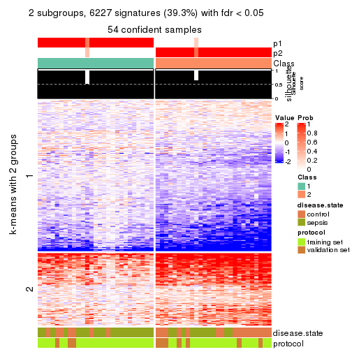
get_signatures(res, k = 3, scale_rows = FALSE)
get_signatures(res, k = 4, scale_rows = FALSE)
get_signatures(res, k = 5, scale_rows = FALSE)
get_signatures(res, k = 6, scale_rows = FALSE)
Compare the overlap of signatures from different k:
compare_signatures(res)
get_signature() returns a data frame invisibly. TO get the list of signatures, the function
call should be assigned to a variable explicitly. In following code, if plot argument is set
to FALSE, no heatmap is plotted while only the differential analysis is performed.
# code only for demonstration
tb = get_signature(res, k = ..., plot = FALSE)
An example of the output of tb is:
#> which_row fdr mean_1 mean_2 scaled_mean_1 scaled_mean_2 km
#> 1 38 0.042760348 8.373488 9.131774 -0.5533452 0.5164555 1
#> 2 40 0.018707592 7.106213 8.469186 -0.6173731 0.5762149 1
#> 3 55 0.019134737 10.221463 11.207825 -0.6159697 0.5749050 1
#> 4 59 0.006059896 5.921854 7.869574 -0.6899429 0.6439467 1
#> 5 60 0.018055526 8.928898 10.211722 -0.6204761 0.5791110 1
#> 6 98 0.009384629 15.714769 14.887706 0.6635654 -0.6193277 2
...
The columns in tb are:
which_row: row indices corresponding to the input matrix.fdr: FDR for the differential test. mean_x: The mean value in group x.scaled_mean_x: The mean value in group x after rows are scaled.km: Row groups if k-means clustering is applied to rows.UMAP plot which shows how samples are separated.
dimension_reduction(res, k = 2, method = "UMAP")
dimension_reduction(res, k = 3, method = "UMAP")
dimension_reduction(res, k = 4, method = "UMAP")
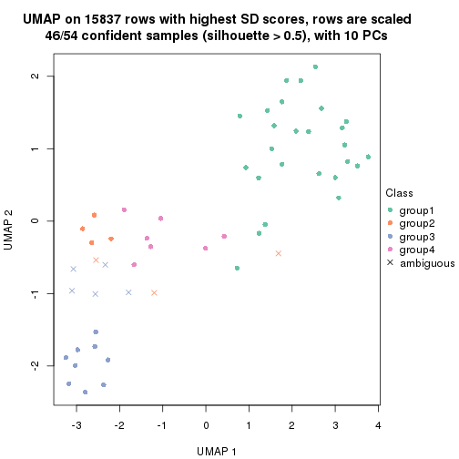
dimension_reduction(res, k = 5, method = "UMAP")

dimension_reduction(res, k = 6, method = "UMAP")
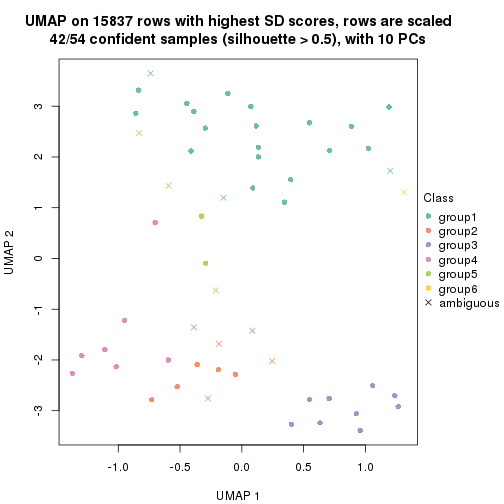
Following heatmap shows how subgroups are split when increasing k:
collect_classes(res)
Test correlation between subgroups and known annotations. If the known annotation is numeric, one-way ANOVA test is applied, and if the known annotation is discrete, chi-squared contingency table test is applied.
test_to_known_factors(res)
#> n disease.state(p) protocol(p) k
#> SD:skmeans 54 2.77e-02 0.2933 2
#> SD:skmeans 54 8.07e-02 0.0182 3
#> SD:skmeans 46 1.47e-03 0.0497 4
#> SD:skmeans 46 5.62e-04 0.0466 5
#> SD:skmeans 42 8.96e-05 0.0305 6
If matrix rows can be associated to genes, consider to use GO_Enrichment(res,
...) to perform function enrichment for the signature genes.
The object with results only for a single top-value method and a single partition method can be extracted as:
res = res_list["SD", "pam"]
# you can also extract it by
# res = res_list["SD:pam"]
A summary of res and all the functions that can be applied to it:
res
#> A 'ConsensusPartition' object with k = 2, 3, 4, 5, 6.
#> On a matrix with 15837 rows and 54 columns.
#> Top rows (1000, 2000, 3000, 4000, 5000) are extracted by 'SD' method.
#> Subgroups are detected by 'pam' method.
#> Performed in total 1250 partitions by row resampling.
#> Best k for subgroups seems to be 4.
#>
#> Following methods can be applied to this 'ConsensusPartition' object:
#> [1] "cola_report" "collect_classes" "collect_plots"
#> [4] "collect_stats" "colnames" "compare_signatures"
#> [7] "consensus_heatmap" "dimension_reduction" "functional_enrichment"
#> [10] "get_anno_col" "get_anno" "get_classes"
#> [13] "get_consensus" "get_matrix" "get_membership"
#> [16] "get_param" "get_signatures" "get_stats"
#> [19] "is_best_k" "is_stable_k" "membership_heatmap"
#> [22] "ncol" "nrow" "plot_ecdf"
#> [25] "rownames" "select_partition_number" "show"
#> [28] "suggest_best_k" "test_to_known_factors"
collect_plots() function collects all the plots made from res for all k (number of partitions)
into one single page to provide an easy and fast comparison between different k.
collect_plots(res)
The plots are:
k and the heatmap of
predicted classes for each k.k.k.k.All the plots in panels can be made by individual functions and they are plotted later in this section.
select_partition_number() produces several plots showing different
statistics for choosing “optimized” k. There are following statistics:
k;k, the area increased is defined as \(A_k - A_{k-1}\).The detailed explanations of these statistics can be found in the cola vignette.
Generally speaking, lower PAC score, higher mean silhouette score or higher
concordance corresponds to better partition. Rand index and Jaccard index
measure how similar the current partition is compared to partition with k-1.
If they are too similar, we won't accept k is better than k-1.
select_partition_number(res)
The numeric values for all these statistics can be obtained by get_stats().
get_stats(res)
#> k 1-PAC mean_silhouette concordance area_increased Rand Jaccard
#> 2 2 1.000 0.979 0.992 0.5095 0.491 0.491
#> 3 3 0.813 0.888 0.901 0.2093 0.897 0.791
#> 4 4 0.914 0.915 0.949 0.1235 0.925 0.806
#> 5 5 0.820 0.858 0.902 0.0931 0.907 0.703
#> 6 6 0.835 0.741 0.876 0.0469 0.958 0.816
suggest_best_k() suggests the best \(k\) based on these statistics. The rules are as follows:
NA.suggest_best_k(res)
#> [1] 4
#> attr(,"optional")
#> [1] 2
There is also optional best \(k\) = 2 that is worth to check.
Following shows the table of the partitions (You need to click the show/hide
code output link to see it). The membership matrix (columns with name p*)
is inferred by
clue::cl_consensus()
function with the SE method. Basically the value in the membership matrix
represents the probability to belong to a certain group. The finall class
label for an item is determined with the group with highest probability it
belongs to.
In get_classes() function, the entropy is calculated from the membership
matrix and the silhouette score is calculated from the consensus matrix.
cbind(get_classes(res, k = 2), get_membership(res, k = 2))
#> class entropy silhouette p1 p2
#> GSM134895 1 0.000 1.000 1.000 0.000
#> GSM134896 2 0.000 0.984 0.000 1.000
#> GSM134897 2 0.000 0.984 0.000 1.000
#> GSM134898 2 0.000 0.984 0.000 1.000
#> GSM134905 2 0.000 0.984 0.000 1.000
#> GSM135018 2 0.000 0.984 0.000 1.000
#> GSM135674 1 0.000 1.000 1.000 0.000
#> GSM135683 2 0.000 0.984 0.000 1.000
#> GSM135685 2 0.000 0.984 0.000 1.000
#> GSM135699 1 0.000 1.000 1.000 0.000
#> GSM135019 2 0.000 0.984 0.000 1.000
#> GSM135026 1 0.000 1.000 1.000 0.000
#> GSM135033 2 0.000 0.984 0.000 1.000
#> GSM135042 1 0.000 1.000 1.000 0.000
#> GSM135057 2 0.000 0.984 0.000 1.000
#> GSM135068 1 0.000 1.000 1.000 0.000
#> GSM135071 2 0.000 0.984 0.000 1.000
#> GSM135078 2 0.000 0.984 0.000 1.000
#> GSM135163 2 0.000 0.984 0.000 1.000
#> GSM135166 2 0.000 0.984 0.000 1.000
#> GSM135223 2 0.000 0.984 0.000 1.000
#> GSM135224 2 0.000 0.984 0.000 1.000
#> GSM135228 1 0.000 1.000 1.000 0.000
#> GSM135262 1 0.000 1.000 1.000 0.000
#> GSM135263 2 0.000 0.984 0.000 1.000
#> GSM135279 2 0.000 0.984 0.000 1.000
#> GSM135661 1 0.000 1.000 1.000 0.000
#> GSM135662 2 0.000 0.984 0.000 1.000
#> GSM135663 2 0.000 0.984 0.000 1.000
#> GSM135664 2 0.000 0.984 0.000 1.000
#> GSM135665 1 0.000 1.000 1.000 0.000
#> GSM135666 1 0.000 1.000 1.000 0.000
#> GSM135668 1 0.000 1.000 1.000 0.000
#> GSM135670 1 0.000 1.000 1.000 0.000
#> GSM135671 1 0.000 1.000 1.000 0.000
#> GSM135675 1 0.000 1.000 1.000 0.000
#> GSM135676 1 0.000 1.000 1.000 0.000
#> GSM135677 1 0.000 1.000 1.000 0.000
#> GSM135679 1 0.000 1.000 1.000 0.000
#> GSM135680 2 0.000 0.984 0.000 1.000
#> GSM135681 2 0.978 0.302 0.412 0.588
#> GSM135682 2 0.000 0.984 0.000 1.000
#> GSM135687 1 0.000 1.000 1.000 0.000
#> GSM135688 1 0.000 1.000 1.000 0.000
#> GSM135689 1 0.000 1.000 1.000 0.000
#> GSM135693 2 0.000 0.984 0.000 1.000
#> GSM135694 1 0.000 1.000 1.000 0.000
#> GSM135695 1 0.000 1.000 1.000 0.000
#> GSM135696 1 0.000 1.000 1.000 0.000
#> GSM135697 1 0.000 1.000 1.000 0.000
#> GSM135698 2 0.000 0.984 0.000 1.000
#> GSM135700 1 0.000 1.000 1.000 0.000
#> GSM135702 2 0.163 0.961 0.024 0.976
#> GSM135703 2 0.000 0.984 0.000 1.000
cbind(get_classes(res, k = 3), get_membership(res, k = 3))
#> class entropy silhouette p1 p2 p3
#> GSM134895 1 0.0000 0.980 1.000 0.000 0.000
#> GSM134896 3 0.5650 0.731 0.000 0.312 0.688
#> GSM134897 3 0.4399 0.779 0.000 0.188 0.812
#> GSM134898 3 0.4399 0.779 0.000 0.188 0.812
#> GSM134905 3 0.5650 0.731 0.000 0.312 0.688
#> GSM135018 3 0.1529 0.791 0.000 0.040 0.960
#> GSM135674 1 0.0000 0.980 1.000 0.000 0.000
#> GSM135683 3 0.4399 0.779 0.000 0.188 0.812
#> GSM135685 3 0.5650 0.731 0.000 0.312 0.688
#> GSM135699 1 0.1753 0.964 0.952 0.048 0.000
#> GSM135019 3 0.5650 0.731 0.000 0.312 0.688
#> GSM135026 1 0.0000 0.980 1.000 0.000 0.000
#> GSM135033 3 0.5650 0.731 0.000 0.312 0.688
#> GSM135042 1 0.3116 0.882 0.892 0.108 0.000
#> GSM135057 2 0.5948 0.983 0.000 0.640 0.360
#> GSM135068 1 0.0237 0.979 0.996 0.004 0.000
#> GSM135071 3 0.0000 0.794 0.000 0.000 1.000
#> GSM135078 3 0.0000 0.794 0.000 0.000 1.000
#> GSM135163 2 0.5948 0.983 0.000 0.640 0.360
#> GSM135166 3 0.5650 0.731 0.000 0.312 0.688
#> GSM135223 2 0.5948 0.983 0.000 0.640 0.360
#> GSM135224 2 0.5948 0.983 0.000 0.640 0.360
#> GSM135228 1 0.0000 0.980 1.000 0.000 0.000
#> GSM135262 1 0.0000 0.980 1.000 0.000 0.000
#> GSM135263 3 0.0000 0.794 0.000 0.000 1.000
#> GSM135279 3 0.0000 0.794 0.000 0.000 1.000
#> GSM135661 1 0.0000 0.980 1.000 0.000 0.000
#> GSM135662 3 0.0000 0.794 0.000 0.000 1.000
#> GSM135663 3 0.0000 0.794 0.000 0.000 1.000
#> GSM135664 3 0.0000 0.794 0.000 0.000 1.000
#> GSM135665 1 0.1753 0.964 0.952 0.048 0.000
#> GSM135666 1 0.0000 0.980 1.000 0.000 0.000
#> GSM135668 1 0.0000 0.980 1.000 0.000 0.000
#> GSM135670 1 0.0000 0.980 1.000 0.000 0.000
#> GSM135671 1 0.1753 0.964 0.952 0.048 0.000
#> GSM135675 1 0.0000 0.980 1.000 0.000 0.000
#> GSM135676 1 0.1031 0.973 0.976 0.024 0.000
#> GSM135677 1 0.0000 0.980 1.000 0.000 0.000
#> GSM135679 1 0.0000 0.980 1.000 0.000 0.000
#> GSM135680 2 0.5948 0.983 0.000 0.640 0.360
#> GSM135681 2 0.7234 0.912 0.048 0.640 0.312
#> GSM135682 3 0.0000 0.794 0.000 0.000 1.000
#> GSM135687 1 0.0000 0.980 1.000 0.000 0.000
#> GSM135688 1 0.1753 0.964 0.952 0.048 0.000
#> GSM135689 1 0.0000 0.980 1.000 0.000 0.000
#> GSM135693 2 0.6148 0.979 0.004 0.640 0.356
#> GSM135694 1 0.1753 0.964 0.952 0.048 0.000
#> GSM135695 1 0.0000 0.980 1.000 0.000 0.000
#> GSM135696 1 0.1753 0.964 0.952 0.048 0.000
#> GSM135697 1 0.1753 0.964 0.952 0.048 0.000
#> GSM135698 3 0.2383 0.740 0.044 0.016 0.940
#> GSM135700 1 0.2165 0.929 0.936 0.064 0.000
#> GSM135702 3 0.4062 0.559 0.164 0.000 0.836
#> GSM135703 3 0.0000 0.794 0.000 0.000 1.000
cbind(get_classes(res, k = 4), get_membership(res, k = 4))
#> class entropy silhouette p1 p2 p3 p4
#> GSM134895 1 0.0000 0.9550 1.000 0.000 0.000 0.000
#> GSM134896 3 0.1389 0.8740 0.000 0.048 0.952 0.000
#> GSM134897 3 0.3486 0.8682 0.000 0.188 0.812 0.000
#> GSM134898 3 0.4222 0.7989 0.000 0.272 0.728 0.000
#> GSM134905 3 0.2125 0.8831 0.000 0.076 0.920 0.004
#> GSM135018 2 0.0921 0.9402 0.000 0.972 0.028 0.000
#> GSM135674 1 0.0000 0.9550 1.000 0.000 0.000 0.000
#> GSM135683 3 0.4477 0.7435 0.000 0.312 0.688 0.000
#> GSM135685 3 0.1389 0.8740 0.000 0.048 0.952 0.000
#> GSM135699 1 0.1389 0.9385 0.952 0.000 0.048 0.000
#> GSM135019 3 0.2530 0.8834 0.000 0.100 0.896 0.004
#> GSM135026 1 0.0000 0.9550 1.000 0.000 0.000 0.000
#> GSM135033 3 0.3356 0.8737 0.000 0.176 0.824 0.000
#> GSM135042 1 0.4981 0.0924 0.536 0.000 0.464 0.000
#> GSM135057 4 0.0000 0.9982 0.000 0.000 0.000 1.000
#> GSM135068 1 0.0000 0.9550 1.000 0.000 0.000 0.000
#> GSM135071 2 0.0000 0.9660 0.000 1.000 0.000 0.000
#> GSM135078 2 0.0000 0.9660 0.000 1.000 0.000 0.000
#> GSM135163 4 0.0000 0.9982 0.000 0.000 0.000 1.000
#> GSM135166 3 0.3157 0.8849 0.000 0.144 0.852 0.004
#> GSM135223 4 0.0000 0.9982 0.000 0.000 0.000 1.000
#> GSM135224 4 0.0000 0.9982 0.000 0.000 0.000 1.000
#> GSM135228 1 0.0000 0.9550 1.000 0.000 0.000 0.000
#> GSM135262 1 0.0000 0.9550 1.000 0.000 0.000 0.000
#> GSM135263 2 0.0000 0.9660 0.000 1.000 0.000 0.000
#> GSM135279 2 0.0000 0.9660 0.000 1.000 0.000 0.000
#> GSM135661 1 0.0000 0.9550 1.000 0.000 0.000 0.000
#> GSM135662 2 0.0188 0.9632 0.000 0.996 0.000 0.004
#> GSM135663 2 0.0000 0.9660 0.000 1.000 0.000 0.000
#> GSM135664 2 0.0000 0.9660 0.000 1.000 0.000 0.000
#> GSM135665 1 0.1389 0.9385 0.952 0.000 0.048 0.000
#> GSM135666 1 0.0000 0.9550 1.000 0.000 0.000 0.000
#> GSM135668 1 0.0000 0.9550 1.000 0.000 0.000 0.000
#> GSM135670 1 0.0000 0.9550 1.000 0.000 0.000 0.000
#> GSM135671 1 0.1389 0.9385 0.952 0.000 0.048 0.000
#> GSM135675 1 0.0000 0.9550 1.000 0.000 0.000 0.000
#> GSM135676 1 0.0707 0.9487 0.980 0.000 0.020 0.000
#> GSM135677 1 0.0000 0.9550 1.000 0.000 0.000 0.000
#> GSM135679 1 0.0000 0.9550 1.000 0.000 0.000 0.000
#> GSM135680 4 0.0188 0.9945 0.000 0.004 0.000 0.996
#> GSM135681 4 0.0188 0.9941 0.004 0.000 0.000 0.996
#> GSM135682 2 0.0000 0.9660 0.000 1.000 0.000 0.000
#> GSM135687 1 0.0000 0.9550 1.000 0.000 0.000 0.000
#> GSM135688 1 0.1389 0.9385 0.952 0.000 0.048 0.000
#> GSM135689 1 0.0000 0.9550 1.000 0.000 0.000 0.000
#> GSM135693 4 0.0000 0.9982 0.000 0.000 0.000 1.000
#> GSM135694 1 0.1389 0.9385 0.952 0.000 0.048 0.000
#> GSM135695 1 0.0000 0.9550 1.000 0.000 0.000 0.000
#> GSM135696 1 0.1389 0.9385 0.952 0.000 0.048 0.000
#> GSM135697 1 0.1389 0.9385 0.952 0.000 0.048 0.000
#> GSM135698 2 0.1767 0.9070 0.044 0.944 0.000 0.012
#> GSM135700 1 0.4356 0.5804 0.708 0.000 0.000 0.292
#> GSM135702 2 0.3123 0.7488 0.156 0.844 0.000 0.000
#> GSM135703 2 0.0000 0.9660 0.000 1.000 0.000 0.000
cbind(get_classes(res, k = 5), get_membership(res, k = 5))
#> class entropy silhouette p1 p2 p3 p4 p5
#> GSM134895 1 0.0000 0.9321 1.000 0.000 0.000 0.000 0.000
#> GSM134896 3 0.3003 0.8471 0.000 0.000 0.812 0.000 0.188
#> GSM134897 3 0.0703 0.8510 0.000 0.024 0.976 0.000 0.000
#> GSM134898 3 0.2471 0.8272 0.000 0.136 0.864 0.000 0.000
#> GSM134905 3 0.0000 0.8451 0.000 0.000 1.000 0.000 0.000
#> GSM135018 2 0.0703 0.8905 0.000 0.976 0.024 0.000 0.000
#> GSM135674 1 0.0404 0.9200 0.988 0.000 0.000 0.000 0.012
#> GSM135683 3 0.5904 0.7750 0.000 0.196 0.600 0.000 0.204
#> GSM135685 3 0.3143 0.8439 0.000 0.000 0.796 0.000 0.204
#> GSM135699 5 0.3274 0.8436 0.220 0.000 0.000 0.000 0.780
#> GSM135019 3 0.4337 0.8396 0.000 0.052 0.744 0.000 0.204
#> GSM135026 1 0.0000 0.9321 1.000 0.000 0.000 0.000 0.000
#> GSM135033 3 0.2230 0.8377 0.000 0.116 0.884 0.000 0.000
#> GSM135042 1 0.2929 0.6374 0.820 0.000 0.180 0.000 0.000
#> GSM135057 4 0.0000 1.0000 0.000 0.000 0.000 1.000 0.000
#> GSM135068 1 0.0000 0.9321 1.000 0.000 0.000 0.000 0.000
#> GSM135071 2 0.0000 0.9085 0.000 1.000 0.000 0.000 0.000
#> GSM135078 2 0.0000 0.9085 0.000 1.000 0.000 0.000 0.000
#> GSM135163 4 0.0000 1.0000 0.000 0.000 0.000 1.000 0.000
#> GSM135166 3 0.2813 0.8125 0.000 0.168 0.832 0.000 0.000
#> GSM135223 4 0.0000 1.0000 0.000 0.000 0.000 1.000 0.000
#> GSM135224 4 0.0000 1.0000 0.000 0.000 0.000 1.000 0.000
#> GSM135228 1 0.0000 0.9321 1.000 0.000 0.000 0.000 0.000
#> GSM135262 1 0.0000 0.9321 1.000 0.000 0.000 0.000 0.000
#> GSM135263 2 0.0162 0.9078 0.000 0.996 0.000 0.000 0.004
#> GSM135279 2 0.0000 0.9085 0.000 1.000 0.000 0.000 0.000
#> GSM135661 1 0.0000 0.9321 1.000 0.000 0.000 0.000 0.000
#> GSM135662 2 0.0566 0.9020 0.000 0.984 0.000 0.004 0.012
#> GSM135663 2 0.0000 0.9085 0.000 1.000 0.000 0.000 0.000
#> GSM135664 2 0.0000 0.9085 0.000 1.000 0.000 0.000 0.000
#> GSM135665 5 0.4273 0.7086 0.448 0.000 0.000 0.000 0.552
#> GSM135666 1 0.0000 0.9321 1.000 0.000 0.000 0.000 0.000
#> GSM135668 1 0.0404 0.9200 0.988 0.000 0.000 0.000 0.012
#> GSM135670 1 0.0000 0.9321 1.000 0.000 0.000 0.000 0.000
#> GSM135671 5 0.3274 0.8436 0.220 0.000 0.000 0.000 0.780
#> GSM135675 1 0.0000 0.9321 1.000 0.000 0.000 0.000 0.000
#> GSM135676 1 0.1671 0.8180 0.924 0.000 0.000 0.000 0.076
#> GSM135677 1 0.0000 0.9321 1.000 0.000 0.000 0.000 0.000
#> GSM135679 1 0.0000 0.9321 1.000 0.000 0.000 0.000 0.000
#> GSM135680 4 0.0000 1.0000 0.000 0.000 0.000 1.000 0.000
#> GSM135681 4 0.0000 1.0000 0.000 0.000 0.000 1.000 0.000
#> GSM135682 2 0.0566 0.9010 0.000 0.984 0.012 0.000 0.004
#> GSM135687 1 0.0000 0.9321 1.000 0.000 0.000 0.000 0.000
#> GSM135688 5 0.3274 0.8436 0.220 0.000 0.000 0.000 0.780
#> GSM135689 1 0.0000 0.9321 1.000 0.000 0.000 0.000 0.000
#> GSM135693 4 0.0000 1.0000 0.000 0.000 0.000 1.000 0.000
#> GSM135694 5 0.3274 0.8436 0.220 0.000 0.000 0.000 0.780
#> GSM135695 1 0.0000 0.9321 1.000 0.000 0.000 0.000 0.000
#> GSM135696 5 0.4283 0.6952 0.456 0.000 0.000 0.000 0.544
#> GSM135697 5 0.4256 0.7216 0.436 0.000 0.000 0.000 0.564
#> GSM135698 2 0.3964 0.6903 0.176 0.788 0.000 0.020 0.016
#> GSM135700 1 0.4304 0.0534 0.516 0.000 0.000 0.484 0.000
#> GSM135702 2 0.4727 0.1982 0.452 0.532 0.000 0.000 0.016
#> GSM135703 2 0.0162 0.9078 0.000 0.996 0.000 0.000 0.004
cbind(get_classes(res, k = 6), get_membership(res, k = 6))
#> class entropy silhouette p1 p2 p3 p4 p5 p6
#> GSM134895 1 0.0000 0.911 1.000 0.000 0.000 0.000 0.000 0.000
#> GSM134896 6 0.4045 0.419 0.000 0.000 0.428 0.000 0.008 0.564
#> GSM134897 3 0.0146 0.669 0.000 0.004 0.996 0.000 0.000 0.000
#> GSM134898 3 0.1957 0.701 0.000 0.112 0.888 0.000 0.000 0.000
#> GSM134905 3 0.0520 0.662 0.000 0.000 0.984 0.000 0.008 0.008
#> GSM135018 2 0.0291 0.924 0.000 0.992 0.004 0.000 0.004 0.000
#> GSM135674 1 0.3830 0.499 0.620 0.000 0.000 0.000 0.004 0.376
#> GSM135683 6 0.5169 0.342 0.000 0.136 0.260 0.000 0.000 0.604
#> GSM135685 6 0.3737 0.462 0.000 0.000 0.392 0.000 0.000 0.608
#> GSM135699 5 0.0713 0.687 0.028 0.000 0.000 0.000 0.972 0.000
#> GSM135019 6 0.4189 0.467 0.000 0.020 0.376 0.000 0.000 0.604
#> GSM135026 1 0.2597 0.748 0.824 0.000 0.000 0.000 0.000 0.176
#> GSM135033 3 0.2003 0.698 0.000 0.116 0.884 0.000 0.000 0.000
#> GSM135042 1 0.2883 0.657 0.788 0.000 0.212 0.000 0.000 0.000
#> GSM135057 4 0.0000 0.901 0.000 0.000 0.000 1.000 0.000 0.000
#> GSM135068 1 0.0000 0.911 1.000 0.000 0.000 0.000 0.000 0.000
#> GSM135071 2 0.0000 0.929 0.000 1.000 0.000 0.000 0.000 0.000
#> GSM135078 2 0.0000 0.929 0.000 1.000 0.000 0.000 0.000 0.000
#> GSM135163 4 0.0000 0.901 0.000 0.000 0.000 1.000 0.000 0.000
#> GSM135166 3 0.4246 0.247 0.000 0.408 0.576 0.000 0.008 0.008
#> GSM135223 4 0.0000 0.901 0.000 0.000 0.000 1.000 0.000 0.000
#> GSM135224 4 0.0000 0.901 0.000 0.000 0.000 1.000 0.000 0.000
#> GSM135228 1 0.0000 0.911 1.000 0.000 0.000 0.000 0.000 0.000
#> GSM135262 1 0.0000 0.911 1.000 0.000 0.000 0.000 0.000 0.000
#> GSM135263 2 0.0820 0.922 0.000 0.972 0.000 0.000 0.016 0.012
#> GSM135279 2 0.0000 0.929 0.000 1.000 0.000 0.000 0.000 0.000
#> GSM135661 1 0.0000 0.911 1.000 0.000 0.000 0.000 0.000 0.000
#> GSM135662 2 0.2149 0.841 0.000 0.888 0.000 0.004 0.004 0.104
#> GSM135663 2 0.0000 0.929 0.000 1.000 0.000 0.000 0.000 0.000
#> GSM135664 2 0.0000 0.929 0.000 1.000 0.000 0.000 0.000 0.000
#> GSM135665 5 0.3817 0.528 0.432 0.000 0.000 0.000 0.568 0.000
#> GSM135666 1 0.0000 0.911 1.000 0.000 0.000 0.000 0.000 0.000
#> GSM135668 1 0.3830 0.499 0.620 0.000 0.000 0.000 0.004 0.376
#> GSM135670 1 0.0000 0.911 1.000 0.000 0.000 0.000 0.000 0.000
#> GSM135671 5 0.0713 0.687 0.028 0.000 0.000 0.000 0.972 0.000
#> GSM135675 1 0.0000 0.911 1.000 0.000 0.000 0.000 0.000 0.000
#> GSM135676 1 0.0458 0.895 0.984 0.000 0.000 0.000 0.016 0.000
#> GSM135677 1 0.0000 0.911 1.000 0.000 0.000 0.000 0.000 0.000
#> GSM135679 1 0.0260 0.905 0.992 0.000 0.000 0.000 0.000 0.008
#> GSM135680 4 0.0000 0.901 0.000 0.000 0.000 1.000 0.000 0.000
#> GSM135681 4 0.0000 0.901 0.000 0.000 0.000 1.000 0.000 0.000
#> GSM135682 2 0.0964 0.920 0.000 0.968 0.004 0.000 0.016 0.012
#> GSM135687 1 0.0000 0.911 1.000 0.000 0.000 0.000 0.000 0.000
#> GSM135688 5 0.0713 0.687 0.028 0.000 0.000 0.000 0.972 0.000
#> GSM135689 1 0.0000 0.911 1.000 0.000 0.000 0.000 0.000 0.000
#> GSM135693 4 0.0000 0.901 0.000 0.000 0.000 1.000 0.000 0.000
#> GSM135694 5 0.0713 0.687 0.028 0.000 0.000 0.000 0.972 0.000
#> GSM135695 1 0.0000 0.911 1.000 0.000 0.000 0.000 0.000 0.000
#> GSM135696 5 0.3828 0.514 0.440 0.000 0.000 0.000 0.560 0.000
#> GSM135697 5 0.3823 0.511 0.436 0.000 0.000 0.000 0.564 0.000
#> GSM135698 2 0.5168 0.431 0.004 0.548 0.000 0.040 0.020 0.388
#> GSM135700 4 0.3860 0.105 0.472 0.000 0.000 0.528 0.000 0.000
#> GSM135702 6 0.6450 -0.116 0.352 0.240 0.000 0.000 0.020 0.388
#> GSM135703 2 0.0820 0.922 0.000 0.972 0.000 0.000 0.016 0.012
Heatmaps for the consensus matrix. It visualizes the probability of two samples to be in a same group.
consensus_heatmap(res, k = 2)
consensus_heatmap(res, k = 3)
consensus_heatmap(res, k = 4)
consensus_heatmap(res, k = 5)
consensus_heatmap(res, k = 6)
Heatmaps for the membership of samples in all partitions to see how consistent they are:
membership_heatmap(res, k = 2)
membership_heatmap(res, k = 3)
membership_heatmap(res, k = 4)
membership_heatmap(res, k = 5)
membership_heatmap(res, k = 6)
As soon as we have had the classes for columns, we can look for signatures which are significantly different between classes which can be candidate marks for certain classes. Following are the heatmaps for signatures.
Signature heatmaps where rows are scaled:
get_signatures(res, k = 2)
get_signatures(res, k = 3)
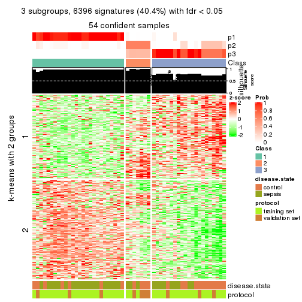
get_signatures(res, k = 4)
get_signatures(res, k = 5)
get_signatures(res, k = 6)
Signature heatmaps where rows are not scaled:
get_signatures(res, k = 2, scale_rows = FALSE)
get_signatures(res, k = 3, scale_rows = FALSE)
get_signatures(res, k = 4, scale_rows = FALSE)
get_signatures(res, k = 5, scale_rows = FALSE)
get_signatures(res, k = 6, scale_rows = FALSE)
Compare the overlap of signatures from different k:
compare_signatures(res)
get_signature() returns a data frame invisibly. TO get the list of signatures, the function
call should be assigned to a variable explicitly. In following code, if plot argument is set
to FALSE, no heatmap is plotted while only the differential analysis is performed.
# code only for demonstration
tb = get_signature(res, k = ..., plot = FALSE)
An example of the output of tb is:
#> which_row fdr mean_1 mean_2 scaled_mean_1 scaled_mean_2 km
#> 1 38 0.042760348 8.373488 9.131774 -0.5533452 0.5164555 1
#> 2 40 0.018707592 7.106213 8.469186 -0.6173731 0.5762149 1
#> 3 55 0.019134737 10.221463 11.207825 -0.6159697 0.5749050 1
#> 4 59 0.006059896 5.921854 7.869574 -0.6899429 0.6439467 1
#> 5 60 0.018055526 8.928898 10.211722 -0.6204761 0.5791110 1
#> 6 98 0.009384629 15.714769 14.887706 0.6635654 -0.6193277 2
...
The columns in tb are:
which_row: row indices corresponding to the input matrix.fdr: FDR for the differential test. mean_x: The mean value in group x.scaled_mean_x: The mean value in group x after rows are scaled.km: Row groups if k-means clustering is applied to rows.UMAP plot which shows how samples are separated.
dimension_reduction(res, k = 2, method = "UMAP")
dimension_reduction(res, k = 3, method = "UMAP")

dimension_reduction(res, k = 4, method = "UMAP")
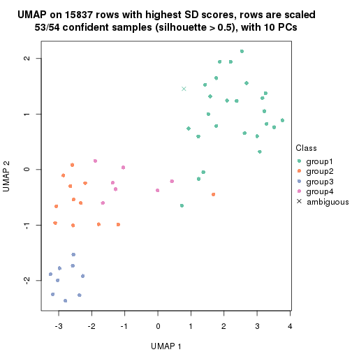
dimension_reduction(res, k = 5, method = "UMAP")

dimension_reduction(res, k = 6, method = "UMAP")
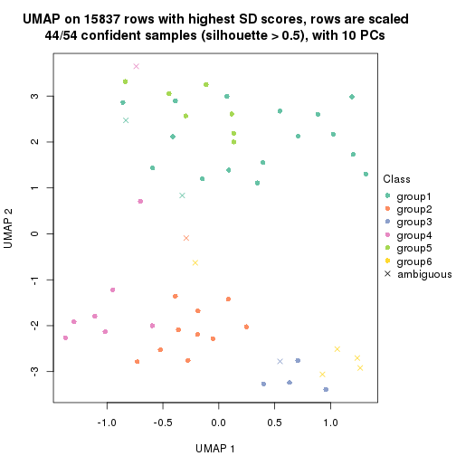
Following heatmap shows how subgroups are split when increasing k:
collect_classes(res)
Test correlation between subgroups and known annotations. If the known annotation is numeric, one-way ANOVA test is applied, and if the known annotation is discrete, chi-squared contingency table test is applied.
test_to_known_factors(res)
#> n disease.state(p) protocol(p) k
#> SD:pam 53 0.035968 0.3236 2
#> SD:pam 54 0.080652 0.0182 3
#> SD:pam 53 0.000463 0.0217 4
#> SD:pam 52 0.002401 0.0716 5
#> SD:pam 44 0.043978 0.0705 6
If matrix rows can be associated to genes, consider to use GO_Enrichment(res,
...) to perform function enrichment for the signature genes.
The object with results only for a single top-value method and a single partition method can be extracted as:
res = res_list["SD", "mclust"]
# you can also extract it by
# res = res_list["SD:mclust"]
A summary of res and all the functions that can be applied to it:
res
#> A 'ConsensusPartition' object with k = 2, 3, 4, 5, 6.
#> On a matrix with 15837 rows and 54 columns.
#> Top rows (1000, 2000, 3000, 4000, 5000) are extracted by 'SD' method.
#> Subgroups are detected by 'mclust' method.
#> Performed in total 1250 partitions by row resampling.
#> Best k for subgroups seems to be 2.
#>
#> Following methods can be applied to this 'ConsensusPartition' object:
#> [1] "cola_report" "collect_classes" "collect_plots"
#> [4] "collect_stats" "colnames" "compare_signatures"
#> [7] "consensus_heatmap" "dimension_reduction" "functional_enrichment"
#> [10] "get_anno_col" "get_anno" "get_classes"
#> [13] "get_consensus" "get_matrix" "get_membership"
#> [16] "get_param" "get_signatures" "get_stats"
#> [19] "is_best_k" "is_stable_k" "membership_heatmap"
#> [22] "ncol" "nrow" "plot_ecdf"
#> [25] "rownames" "select_partition_number" "show"
#> [28] "suggest_best_k" "test_to_known_factors"
collect_plots() function collects all the plots made from res for all k (number of partitions)
into one single page to provide an easy and fast comparison between different k.
collect_plots(res)
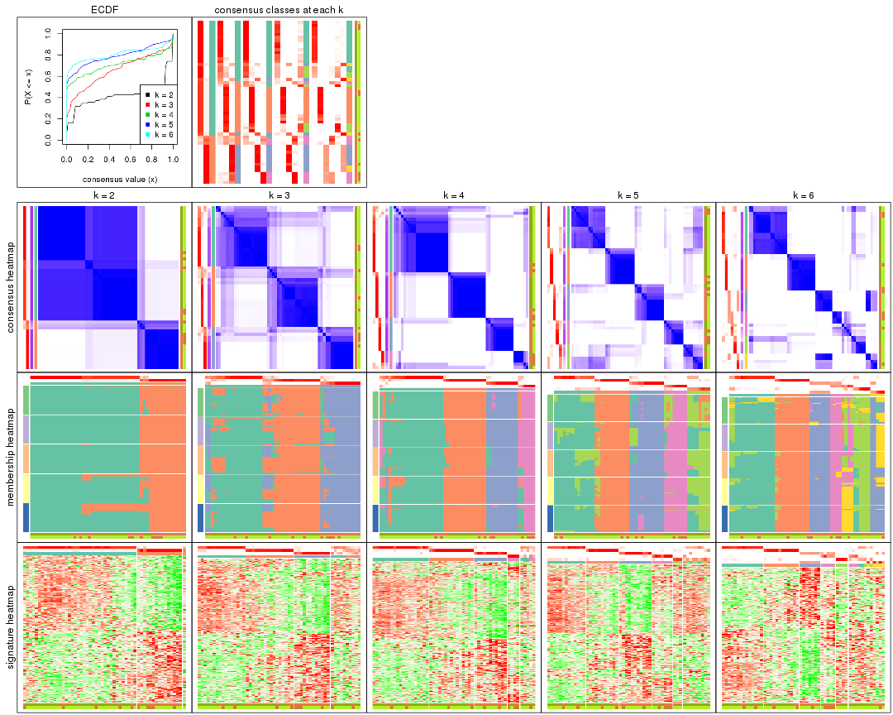
The plots are:
k and the heatmap of
predicted classes for each k.k.k.k.All the plots in panels can be made by individual functions and they are plotted later in this section.
select_partition_number() produces several plots showing different
statistics for choosing “optimized” k. There are following statistics:
k;k, the area increased is defined as \(A_k - A_{k-1}\).The detailed explanations of these statistics can be found in the cola vignette.
Generally speaking, lower PAC score, higher mean silhouette score or higher
concordance corresponds to better partition. Rand index and Jaccard index
measure how similar the current partition is compared to partition with k-1.
If they are too similar, we won't accept k is better than k-1.
select_partition_number(res)
The numeric values for all these statistics can be obtained by get_stats().
get_stats(res)
#> k 1-PAC mean_silhouette concordance area_increased Rand Jaccard
#> 2 2 0.927 0.926 0.954 0.4156 0.575 0.575
#> 3 3 0.629 0.738 0.882 0.5813 0.665 0.459
#> 4 4 0.816 0.815 0.927 0.0809 0.850 0.606
#> 5 5 0.740 0.730 0.863 0.1150 0.858 0.543
#> 6 6 0.843 0.665 0.821 0.0200 0.948 0.756
suggest_best_k() suggests the best \(k\) based on these statistics. The rules are as follows:
NA.suggest_best_k(res)
#> [1] 2
Following shows the table of the partitions (You need to click the show/hide
code output link to see it). The membership matrix (columns with name p*)
is inferred by
clue::cl_consensus()
function with the SE method. Basically the value in the membership matrix
represents the probability to belong to a certain group. The finall class
label for an item is determined with the group with highest probability it
belongs to.
In get_classes() function, the entropy is calculated from the membership
matrix and the silhouette score is calculated from the consensus matrix.
cbind(get_classes(res, k = 2), get_membership(res, k = 2))
#> class entropy silhouette p1 p2
#> GSM134895 1 0.5629 0.900 0.868 0.132
#> GSM134896 2 0.0376 0.936 0.004 0.996
#> GSM134897 2 0.0376 0.936 0.004 0.996
#> GSM134898 2 0.0376 0.936 0.004 0.996
#> GSM134905 2 0.0376 0.936 0.004 0.996
#> GSM135018 1 0.3733 0.954 0.928 0.072
#> GSM135674 1 0.3733 0.954 0.928 0.072
#> GSM135683 2 0.0376 0.936 0.004 0.996
#> GSM135685 2 0.0376 0.936 0.004 0.996
#> GSM135699 1 0.0000 0.953 1.000 0.000
#> GSM135019 2 0.0376 0.936 0.004 0.996
#> GSM135026 1 0.3584 0.953 0.932 0.068
#> GSM135033 2 0.0376 0.936 0.004 0.996
#> GSM135042 1 0.5629 0.900 0.868 0.132
#> GSM135057 2 0.0000 0.935 0.000 1.000
#> GSM135068 1 0.0000 0.953 1.000 0.000
#> GSM135071 1 0.3733 0.954 0.928 0.072
#> GSM135078 1 0.3733 0.954 0.928 0.072
#> GSM135163 2 0.7219 0.739 0.200 0.800
#> GSM135166 2 0.0000 0.935 0.000 1.000
#> GSM135223 2 0.0000 0.935 0.000 1.000
#> GSM135224 2 0.0000 0.935 0.000 1.000
#> GSM135228 1 0.0000 0.953 1.000 0.000
#> GSM135262 1 0.0000 0.953 1.000 0.000
#> GSM135263 1 0.3733 0.954 0.928 0.072
#> GSM135279 1 0.3733 0.954 0.928 0.072
#> GSM135661 1 0.0000 0.953 1.000 0.000
#> GSM135662 1 0.3733 0.954 0.928 0.072
#> GSM135663 1 0.3733 0.954 0.928 0.072
#> GSM135664 1 0.3733 0.954 0.928 0.072
#> GSM135665 1 0.0000 0.953 1.000 0.000
#> GSM135666 1 0.5408 0.908 0.876 0.124
#> GSM135668 1 0.3733 0.954 0.928 0.072
#> GSM135670 1 0.3584 0.953 0.932 0.068
#> GSM135671 1 0.0000 0.953 1.000 0.000
#> GSM135675 1 0.0000 0.953 1.000 0.000
#> GSM135676 1 0.0000 0.953 1.000 0.000
#> GSM135677 1 0.0000 0.953 1.000 0.000
#> GSM135679 1 0.0000 0.953 1.000 0.000
#> GSM135680 2 0.8861 0.570 0.304 0.696
#> GSM135681 2 0.9460 0.432 0.364 0.636
#> GSM135682 1 0.3733 0.954 0.928 0.072
#> GSM135687 1 0.0000 0.953 1.000 0.000
#> GSM135688 1 0.0000 0.953 1.000 0.000
#> GSM135689 1 0.0000 0.953 1.000 0.000
#> GSM135693 2 0.0000 0.935 0.000 1.000
#> GSM135694 1 0.0000 0.953 1.000 0.000
#> GSM135695 1 0.0000 0.953 1.000 0.000
#> GSM135696 1 0.0000 0.953 1.000 0.000
#> GSM135697 1 0.0000 0.953 1.000 0.000
#> GSM135698 1 0.3733 0.954 0.928 0.072
#> GSM135700 1 0.3879 0.951 0.924 0.076
#> GSM135702 1 0.3733 0.954 0.928 0.072
#> GSM135703 1 0.3733 0.954 0.928 0.072
cbind(get_classes(res, k = 3), get_membership(res, k = 3))
#> class entropy silhouette p1 p2 p3
#> GSM134895 1 0.6509 0.0185 0.524 0.004 0.472
#> GSM134896 3 0.0000 0.8850 0.000 0.000 1.000
#> GSM134897 3 0.0000 0.8850 0.000 0.000 1.000
#> GSM134898 3 0.0000 0.8850 0.000 0.000 1.000
#> GSM134905 3 0.0000 0.8850 0.000 0.000 1.000
#> GSM135018 2 0.0000 0.8584 0.000 1.000 0.000
#> GSM135674 2 0.1411 0.8597 0.036 0.964 0.000
#> GSM135683 3 0.0000 0.8850 0.000 0.000 1.000
#> GSM135685 3 0.0000 0.8850 0.000 0.000 1.000
#> GSM135699 1 0.0424 0.8535 0.992 0.008 0.000
#> GSM135019 3 0.0424 0.8818 0.008 0.000 0.992
#> GSM135026 2 0.2796 0.8225 0.092 0.908 0.000
#> GSM135033 3 0.0000 0.8850 0.000 0.000 1.000
#> GSM135042 3 0.6189 0.3879 0.364 0.004 0.632
#> GSM135057 3 0.7248 0.6514 0.108 0.184 0.708
#> GSM135068 1 0.0424 0.8535 0.992 0.008 0.000
#> GSM135071 2 0.0892 0.8645 0.020 0.980 0.000
#> GSM135078 2 0.0000 0.8584 0.000 1.000 0.000
#> GSM135163 2 0.9432 0.0924 0.180 0.448 0.372
#> GSM135166 3 0.0000 0.8850 0.000 0.000 1.000
#> GSM135223 3 0.4790 0.7978 0.096 0.056 0.848
#> GSM135224 3 0.4790 0.7978 0.096 0.056 0.848
#> GSM135228 1 0.0747 0.8539 0.984 0.016 0.000
#> GSM135262 1 0.0592 0.8541 0.988 0.012 0.000
#> GSM135263 2 0.1289 0.8433 0.000 0.968 0.032
#> GSM135279 2 0.1031 0.8646 0.024 0.976 0.000
#> GSM135661 1 0.0592 0.8541 0.988 0.012 0.000
#> GSM135662 2 0.1031 0.8646 0.024 0.976 0.000
#> GSM135663 2 0.1031 0.8646 0.024 0.976 0.000
#> GSM135664 2 0.0892 0.8645 0.020 0.980 0.000
#> GSM135665 1 0.1163 0.8481 0.972 0.028 0.000
#> GSM135666 1 0.6189 0.3414 0.632 0.004 0.364
#> GSM135668 2 0.1411 0.8597 0.036 0.964 0.000
#> GSM135670 2 0.4062 0.7448 0.164 0.836 0.000
#> GSM135671 1 0.0424 0.8535 0.992 0.008 0.000
#> GSM135675 1 0.5058 0.6397 0.756 0.244 0.000
#> GSM135676 1 0.4931 0.6558 0.768 0.232 0.000
#> GSM135677 1 0.0592 0.8541 0.988 0.012 0.000
#> GSM135679 1 0.5859 0.4599 0.656 0.344 0.000
#> GSM135680 2 0.9234 0.3476 0.196 0.524 0.280
#> GSM135681 2 0.9358 0.3713 0.244 0.516 0.240
#> GSM135682 2 0.0000 0.8584 0.000 1.000 0.000
#> GSM135687 1 0.0592 0.8541 0.988 0.012 0.000
#> GSM135688 1 0.0424 0.8535 0.992 0.008 0.000
#> GSM135689 1 0.0592 0.8541 0.988 0.012 0.000
#> GSM135693 3 0.8513 0.3816 0.116 0.316 0.568
#> GSM135694 1 0.0592 0.8538 0.988 0.012 0.000
#> GSM135695 1 0.5905 0.4182 0.648 0.352 0.000
#> GSM135696 1 0.4654 0.6907 0.792 0.208 0.000
#> GSM135697 1 0.1964 0.8335 0.944 0.056 0.000
#> GSM135698 2 0.1031 0.8646 0.024 0.976 0.000
#> GSM135700 2 0.8236 0.1737 0.416 0.508 0.076
#> GSM135702 2 0.1163 0.8634 0.028 0.972 0.000
#> GSM135703 2 0.0000 0.8584 0.000 1.000 0.000
cbind(get_classes(res, k = 4), get_membership(res, k = 4))
#> class entropy silhouette p1 p2 p3 p4
#> GSM134895 3 0.3942 0.6497 0.236 0.000 0.764 0.000
#> GSM134896 3 0.0000 0.9319 0.000 0.000 1.000 0.000
#> GSM134897 3 0.0000 0.9319 0.000 0.000 1.000 0.000
#> GSM134898 3 0.0000 0.9319 0.000 0.000 1.000 0.000
#> GSM134905 3 0.0592 0.9217 0.000 0.000 0.984 0.016
#> GSM135018 2 0.0000 0.9663 0.000 1.000 0.000 0.000
#> GSM135674 2 0.1792 0.8871 0.068 0.932 0.000 0.000
#> GSM135683 3 0.0000 0.9319 0.000 0.000 1.000 0.000
#> GSM135685 3 0.0000 0.9319 0.000 0.000 1.000 0.000
#> GSM135699 1 0.0000 0.8728 1.000 0.000 0.000 0.000
#> GSM135019 3 0.0000 0.9319 0.000 0.000 1.000 0.000
#> GSM135026 2 0.4134 0.5842 0.260 0.740 0.000 0.000
#> GSM135033 3 0.0000 0.9319 0.000 0.000 1.000 0.000
#> GSM135042 3 0.3123 0.7704 0.156 0.000 0.844 0.000
#> GSM135057 4 0.0000 0.7765 0.000 0.000 0.000 1.000
#> GSM135068 1 0.0000 0.8728 1.000 0.000 0.000 0.000
#> GSM135071 2 0.0000 0.9663 0.000 1.000 0.000 0.000
#> GSM135078 2 0.0000 0.9663 0.000 1.000 0.000 0.000
#> GSM135163 4 0.5386 0.4219 0.344 0.024 0.000 0.632
#> GSM135166 3 0.2408 0.8494 0.000 0.000 0.896 0.104
#> GSM135223 4 0.0000 0.7765 0.000 0.000 0.000 1.000
#> GSM135224 4 0.0000 0.7765 0.000 0.000 0.000 1.000
#> GSM135228 1 0.0000 0.8728 1.000 0.000 0.000 0.000
#> GSM135262 1 0.0000 0.8728 1.000 0.000 0.000 0.000
#> GSM135263 2 0.0000 0.9663 0.000 1.000 0.000 0.000
#> GSM135279 2 0.0000 0.9663 0.000 1.000 0.000 0.000
#> GSM135661 1 0.0000 0.8728 1.000 0.000 0.000 0.000
#> GSM135662 2 0.0000 0.9663 0.000 1.000 0.000 0.000
#> GSM135663 2 0.0000 0.9663 0.000 1.000 0.000 0.000
#> GSM135664 2 0.0000 0.9663 0.000 1.000 0.000 0.000
#> GSM135665 1 0.0000 0.8728 1.000 0.000 0.000 0.000
#> GSM135666 1 0.4072 0.6055 0.748 0.000 0.252 0.000
#> GSM135668 2 0.0188 0.9635 0.004 0.996 0.000 0.000
#> GSM135670 1 0.4996 0.1096 0.516 0.484 0.000 0.000
#> GSM135671 1 0.0000 0.8728 1.000 0.000 0.000 0.000
#> GSM135675 1 0.2480 0.8223 0.904 0.088 0.000 0.008
#> GSM135676 1 0.2480 0.8223 0.904 0.088 0.000 0.008
#> GSM135677 1 0.0000 0.8728 1.000 0.000 0.000 0.000
#> GSM135679 1 0.3498 0.7479 0.832 0.160 0.000 0.008
#> GSM135680 4 0.7851 0.2603 0.324 0.280 0.000 0.396
#> GSM135681 1 0.5925 -0.0842 0.512 0.036 0.000 0.452
#> GSM135682 2 0.0000 0.9663 0.000 1.000 0.000 0.000
#> GSM135687 1 0.0000 0.8728 1.000 0.000 0.000 0.000
#> GSM135688 1 0.0000 0.8728 1.000 0.000 0.000 0.000
#> GSM135689 1 0.0000 0.8728 1.000 0.000 0.000 0.000
#> GSM135693 4 0.0000 0.7765 0.000 0.000 0.000 1.000
#> GSM135694 1 0.0000 0.8728 1.000 0.000 0.000 0.000
#> GSM135695 1 0.2466 0.8181 0.900 0.096 0.000 0.004
#> GSM135696 1 0.0000 0.8728 1.000 0.000 0.000 0.000
#> GSM135697 1 0.1557 0.8457 0.944 0.056 0.000 0.000
#> GSM135698 2 0.0000 0.9663 0.000 1.000 0.000 0.000
#> GSM135700 1 0.6194 0.4489 0.628 0.288 0.000 0.084
#> GSM135702 2 0.0188 0.9635 0.004 0.996 0.000 0.000
#> GSM135703 2 0.0000 0.9663 0.000 1.000 0.000 0.000
cbind(get_classes(res, k = 5), get_membership(res, k = 5))
#> class entropy silhouette p1 p2 p3 p4 p5
#> GSM134895 3 0.4808 0.709 0.168 0.000 0.724 0.000 0.108
#> GSM134896 3 0.0000 0.876 0.000 0.000 1.000 0.000 0.000
#> GSM134897 3 0.0000 0.876 0.000 0.000 1.000 0.000 0.000
#> GSM134898 3 0.0000 0.876 0.000 0.000 1.000 0.000 0.000
#> GSM134905 3 0.2280 0.787 0.000 0.000 0.880 0.120 0.000
#> GSM135018 2 0.0000 0.924 0.000 1.000 0.000 0.000 0.000
#> GSM135674 5 0.2471 0.568 0.000 0.136 0.000 0.000 0.864
#> GSM135683 3 0.0000 0.876 0.000 0.000 1.000 0.000 0.000
#> GSM135685 3 0.0000 0.876 0.000 0.000 1.000 0.000 0.000
#> GSM135699 1 0.2966 0.772 0.816 0.000 0.000 0.000 0.184
#> GSM135019 3 0.0000 0.876 0.000 0.000 1.000 0.000 0.000
#> GSM135026 5 0.2127 0.579 0.000 0.108 0.000 0.000 0.892
#> GSM135033 3 0.0000 0.876 0.000 0.000 1.000 0.000 0.000
#> GSM135042 3 0.4696 0.720 0.156 0.000 0.736 0.000 0.108
#> GSM135057 4 0.0000 0.869 0.000 0.000 0.000 1.000 0.000
#> GSM135068 1 0.1410 0.786 0.940 0.000 0.000 0.000 0.060
#> GSM135071 2 0.0000 0.924 0.000 1.000 0.000 0.000 0.000
#> GSM135078 2 0.0000 0.924 0.000 1.000 0.000 0.000 0.000
#> GSM135163 4 0.1106 0.864 0.000 0.012 0.000 0.964 0.024
#> GSM135166 3 0.2966 0.730 0.000 0.000 0.816 0.184 0.000
#> GSM135223 4 0.0000 0.869 0.000 0.000 0.000 1.000 0.000
#> GSM135224 4 0.0000 0.869 0.000 0.000 0.000 1.000 0.000
#> GSM135228 1 0.1197 0.771 0.952 0.000 0.000 0.000 0.048
#> GSM135262 1 0.1908 0.716 0.908 0.000 0.000 0.000 0.092
#> GSM135263 2 0.0609 0.910 0.000 0.980 0.000 0.000 0.020
#> GSM135279 2 0.0000 0.924 0.000 1.000 0.000 0.000 0.000
#> GSM135661 1 0.0510 0.792 0.984 0.000 0.000 0.000 0.016
#> GSM135662 2 0.0000 0.924 0.000 1.000 0.000 0.000 0.000
#> GSM135663 2 0.0000 0.924 0.000 1.000 0.000 0.000 0.000
#> GSM135664 2 0.0000 0.924 0.000 1.000 0.000 0.000 0.000
#> GSM135665 1 0.3534 0.610 0.744 0.000 0.000 0.000 0.256
#> GSM135666 3 0.5855 0.429 0.356 0.000 0.536 0.000 0.108
#> GSM135668 5 0.3274 0.454 0.000 0.220 0.000 0.000 0.780
#> GSM135670 5 0.1478 0.573 0.000 0.064 0.000 0.000 0.936
#> GSM135671 1 0.3074 0.765 0.804 0.000 0.000 0.000 0.196
#> GSM135675 5 0.5003 0.225 0.424 0.000 0.000 0.032 0.544
#> GSM135676 5 0.4996 0.236 0.420 0.000 0.000 0.032 0.548
#> GSM135677 1 0.0703 0.787 0.976 0.000 0.000 0.000 0.024
#> GSM135679 5 0.4262 0.292 0.440 0.000 0.000 0.000 0.560
#> GSM135680 4 0.4519 0.749 0.000 0.100 0.000 0.752 0.148
#> GSM135681 4 0.3519 0.769 0.000 0.008 0.000 0.776 0.216
#> GSM135682 2 0.0000 0.924 0.000 1.000 0.000 0.000 0.000
#> GSM135687 1 0.0000 0.794 1.000 0.000 0.000 0.000 0.000
#> GSM135688 1 0.2966 0.772 0.816 0.000 0.000 0.000 0.184
#> GSM135689 1 0.0290 0.794 0.992 0.000 0.000 0.000 0.008
#> GSM135693 4 0.0162 0.869 0.000 0.000 0.000 0.996 0.004
#> GSM135694 1 0.3242 0.743 0.784 0.000 0.000 0.000 0.216
#> GSM135695 5 0.4227 0.347 0.420 0.000 0.000 0.000 0.580
#> GSM135696 1 0.3143 0.754 0.796 0.000 0.000 0.000 0.204
#> GSM135697 1 0.3895 0.437 0.680 0.000 0.000 0.000 0.320
#> GSM135698 2 0.3561 0.591 0.000 0.740 0.000 0.000 0.260
#> GSM135700 4 0.6514 0.433 0.168 0.016 0.000 0.548 0.268
#> GSM135702 2 0.4235 0.257 0.000 0.576 0.000 0.000 0.424
#> GSM135703 2 0.0290 0.919 0.000 0.992 0.000 0.000 0.008
cbind(get_classes(res, k = 6), get_membership(res, k = 6))
#> class entropy silhouette p1 p2 p3 p4 p5 p6
#> GSM134895 6 0.0458 0.4236 0.016 0.000 0.000 0.000 0.000 0.984
#> GSM134896 3 0.3868 0.9412 0.000 0.000 0.508 0.000 0.000 0.492
#> GSM134897 3 0.3868 0.9424 0.000 0.000 0.504 0.000 0.000 0.496
#> GSM134898 6 0.3869 -0.9581 0.000 0.000 0.500 0.000 0.000 0.500
#> GSM134905 3 0.3868 0.9277 0.000 0.000 0.508 0.000 0.000 0.492
#> GSM135018 2 0.0000 0.9614 0.000 1.000 0.000 0.000 0.000 0.000
#> GSM135674 5 0.0363 0.6960 0.000 0.012 0.000 0.000 0.988 0.000
#> GSM135683 3 0.3868 0.9424 0.000 0.000 0.504 0.000 0.000 0.496
#> GSM135685 3 0.3868 0.9424 0.000 0.000 0.504 0.000 0.000 0.496
#> GSM135699 1 0.1075 0.8590 0.952 0.000 0.000 0.000 0.048 0.000
#> GSM135019 3 0.3868 0.9243 0.000 0.000 0.504 0.000 0.000 0.496
#> GSM135026 5 0.0146 0.6979 0.000 0.004 0.000 0.000 0.996 0.000
#> GSM135033 6 0.3869 -0.9567 0.000 0.000 0.500 0.000 0.000 0.500
#> GSM135042 6 0.0260 0.4172 0.008 0.000 0.000 0.000 0.000 0.992
#> GSM135057 4 0.3823 0.6652 0.000 0.000 0.436 0.564 0.000 0.000
#> GSM135068 1 0.0000 0.8589 1.000 0.000 0.000 0.000 0.000 0.000
#> GSM135071 2 0.0363 0.9592 0.000 0.988 0.000 0.000 0.012 0.000
#> GSM135078 2 0.0000 0.9614 0.000 1.000 0.000 0.000 0.000 0.000
#> GSM135163 4 0.1364 0.6034 0.000 0.004 0.048 0.944 0.004 0.000
#> GSM135166 3 0.3843 0.8291 0.000 0.000 0.548 0.000 0.000 0.452
#> GSM135223 4 0.3866 0.6550 0.000 0.000 0.484 0.516 0.000 0.000
#> GSM135224 4 0.3866 0.6550 0.000 0.000 0.484 0.516 0.000 0.000
#> GSM135228 1 0.1225 0.8582 0.952 0.000 0.000 0.000 0.012 0.036
#> GSM135262 1 0.1082 0.8588 0.956 0.000 0.000 0.000 0.004 0.040
#> GSM135263 2 0.0146 0.9600 0.000 0.996 0.000 0.000 0.004 0.000
#> GSM135279 2 0.0146 0.9611 0.000 0.996 0.000 0.000 0.004 0.000
#> GSM135661 1 0.1007 0.8582 0.956 0.000 0.000 0.000 0.000 0.044
#> GSM135662 2 0.0363 0.9592 0.000 0.988 0.000 0.000 0.012 0.000
#> GSM135663 2 0.0363 0.9592 0.000 0.988 0.000 0.000 0.012 0.000
#> GSM135664 2 0.0000 0.9614 0.000 1.000 0.000 0.000 0.000 0.000
#> GSM135665 1 0.2020 0.8274 0.896 0.000 0.000 0.000 0.096 0.008
#> GSM135666 6 0.2003 0.3731 0.116 0.000 0.000 0.000 0.000 0.884
#> GSM135668 5 0.1075 0.6657 0.000 0.048 0.000 0.000 0.952 0.000
#> GSM135670 5 0.0146 0.6979 0.000 0.004 0.000 0.000 0.996 0.000
#> GSM135671 1 0.1204 0.8557 0.944 0.000 0.000 0.000 0.056 0.000
#> GSM135675 1 0.5178 -0.1221 0.488 0.000 0.000 0.088 0.424 0.000
#> GSM135676 1 0.5153 -0.2053 0.464 0.000 0.000 0.084 0.452 0.000
#> GSM135677 1 0.1007 0.8582 0.956 0.000 0.000 0.000 0.000 0.044
#> GSM135679 5 0.5122 0.2182 0.404 0.000 0.000 0.072 0.520 0.004
#> GSM135680 4 0.4774 0.3857 0.012 0.172 0.000 0.700 0.116 0.000
#> GSM135681 4 0.2841 0.4613 0.012 0.000 0.000 0.824 0.164 0.000
#> GSM135682 2 0.0000 0.9614 0.000 1.000 0.000 0.000 0.000 0.000
#> GSM135687 1 0.1007 0.8582 0.956 0.000 0.000 0.000 0.000 0.044
#> GSM135688 1 0.1007 0.8604 0.956 0.000 0.000 0.000 0.044 0.000
#> GSM135689 1 0.1007 0.8582 0.956 0.000 0.000 0.000 0.000 0.044
#> GSM135693 4 0.3804 0.6661 0.000 0.000 0.424 0.576 0.000 0.000
#> GSM135694 1 0.1141 0.8578 0.948 0.000 0.000 0.000 0.052 0.000
#> GSM135695 5 0.4581 0.3204 0.372 0.000 0.000 0.024 0.592 0.012
#> GSM135696 1 0.0790 0.8617 0.968 0.000 0.000 0.000 0.032 0.000
#> GSM135697 1 0.2266 0.8172 0.880 0.000 0.000 0.000 0.108 0.012
#> GSM135698 2 0.1814 0.8745 0.000 0.900 0.000 0.000 0.100 0.000
#> GSM135700 4 0.4888 -0.0206 0.056 0.004 0.000 0.560 0.380 0.000
#> GSM135702 2 0.3151 0.7010 0.000 0.748 0.000 0.000 0.252 0.000
#> GSM135703 2 0.0000 0.9614 0.000 1.000 0.000 0.000 0.000 0.000
Heatmaps for the consensus matrix. It visualizes the probability of two samples to be in a same group.
consensus_heatmap(res, k = 2)
consensus_heatmap(res, k = 3)
consensus_heatmap(res, k = 4)
consensus_heatmap(res, k = 5)
consensus_heatmap(res, k = 6)
Heatmaps for the membership of samples in all partitions to see how consistent they are:
membership_heatmap(res, k = 2)
membership_heatmap(res, k = 3)
membership_heatmap(res, k = 4)
membership_heatmap(res, k = 5)
membership_heatmap(res, k = 6)
As soon as we have had the classes for columns, we can look for signatures which are significantly different between classes which can be candidate marks for certain classes. Following are the heatmaps for signatures.
Signature heatmaps where rows are scaled:
get_signatures(res, k = 2)
get_signatures(res, k = 3)
get_signatures(res, k = 4)
get_signatures(res, k = 5)
get_signatures(res, k = 6)
Signature heatmaps where rows are not scaled:
get_signatures(res, k = 2, scale_rows = FALSE)
get_signatures(res, k = 3, scale_rows = FALSE)
get_signatures(res, k = 4, scale_rows = FALSE)
get_signatures(res, k = 5, scale_rows = FALSE)
get_signatures(res, k = 6, scale_rows = FALSE)
Compare the overlap of signatures from different k:
compare_signatures(res)
get_signature() returns a data frame invisibly. TO get the list of signatures, the function
call should be assigned to a variable explicitly. In following code, if plot argument is set
to FALSE, no heatmap is plotted while only the differential analysis is performed.
# code only for demonstration
tb = get_signature(res, k = ..., plot = FALSE)
An example of the output of tb is:
#> which_row fdr mean_1 mean_2 scaled_mean_1 scaled_mean_2 km
#> 1 38 0.042760348 8.373488 9.131774 -0.5533452 0.5164555 1
#> 2 40 0.018707592 7.106213 8.469186 -0.6173731 0.5762149 1
#> 3 55 0.019134737 10.221463 11.207825 -0.6159697 0.5749050 1
#> 4 59 0.006059896 5.921854 7.869574 -0.6899429 0.6439467 1
#> 5 60 0.018055526 8.928898 10.211722 -0.6204761 0.5791110 1
#> 6 98 0.009384629 15.714769 14.887706 0.6635654 -0.6193277 2
...
The columns in tb are:
which_row: row indices corresponding to the input matrix.fdr: FDR for the differential test. mean_x: The mean value in group x.scaled_mean_x: The mean value in group x after rows are scaled.km: Row groups if k-means clustering is applied to rows.UMAP plot which shows how samples are separated.
dimension_reduction(res, k = 2, method = "UMAP")
dimension_reduction(res, k = 3, method = "UMAP")
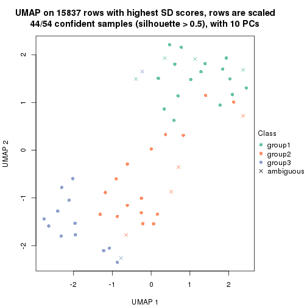
dimension_reduction(res, k = 4, method = "UMAP")
dimension_reduction(res, k = 5, method = "UMAP")
dimension_reduction(res, k = 6, method = "UMAP")
Following heatmap shows how subgroups are split when increasing k:
collect_classes(res)
Test correlation between subgroups and known annotations. If the known annotation is numeric, one-way ANOVA test is applied, and if the known annotation is discrete, chi-squared contingency table test is applied.
test_to_known_factors(res)
#> n disease.state(p) protocol(p) k
#> SD:mclust 53 0.000228 0.1931 2
#> SD:mclust 44 0.000039 0.2799 3
#> SD:mclust 49 0.000057 0.0224 4
#> SD:mclust 45 0.001542 0.1741 5
#> SD:mclust 42 0.002841 0.0168 6
If matrix rows can be associated to genes, consider to use GO_Enrichment(res,
...) to perform function enrichment for the signature genes.
The object with results only for a single top-value method and a single partition method can be extracted as:
res = res_list["SD", "NMF"]
# you can also extract it by
# res = res_list["SD:NMF"]
A summary of res and all the functions that can be applied to it:
res
#> A 'ConsensusPartition' object with k = 2, 3, 4, 5, 6.
#> On a matrix with 15837 rows and 54 columns.
#> Top rows (1000, 2000, 3000, 4000, 5000) are extracted by 'SD' method.
#> Subgroups are detected by 'NMF' method.
#> Performed in total 1250 partitions by row resampling.
#> Best k for subgroups seems to be 2.
#>
#> Following methods can be applied to this 'ConsensusPartition' object:
#> [1] "cola_report" "collect_classes" "collect_plots"
#> [4] "collect_stats" "colnames" "compare_signatures"
#> [7] "consensus_heatmap" "dimension_reduction" "functional_enrichment"
#> [10] "get_anno_col" "get_anno" "get_classes"
#> [13] "get_consensus" "get_matrix" "get_membership"
#> [16] "get_param" "get_signatures" "get_stats"
#> [19] "is_best_k" "is_stable_k" "membership_heatmap"
#> [22] "ncol" "nrow" "plot_ecdf"
#> [25] "rownames" "select_partition_number" "show"
#> [28] "suggest_best_k" "test_to_known_factors"
collect_plots() function collects all the plots made from res for all k (number of partitions)
into one single page to provide an easy and fast comparison between different k.
collect_plots(res)
The plots are:
k and the heatmap of
predicted classes for each k.k.k.k.All the plots in panels can be made by individual functions and they are plotted later in this section.
select_partition_number() produces several plots showing different
statistics for choosing “optimized” k. There are following statistics:
k;k, the area increased is defined as \(A_k - A_{k-1}\).The detailed explanations of these statistics can be found in the cola vignette.
Generally speaking, lower PAC score, higher mean silhouette score or higher
concordance corresponds to better partition. Rand index and Jaccard index
measure how similar the current partition is compared to partition with k-1.
If they are too similar, we won't accept k is better than k-1.
select_partition_number(res)
The numeric values for all these statistics can be obtained by get_stats().
get_stats(res)
#> k 1-PAC mean_silhouette concordance area_increased Rand Jaccard
#> 2 2 0.962 0.953 0.979 0.5072 0.491 0.491
#> 3 3 0.867 0.904 0.958 0.2575 0.838 0.682
#> 4 4 0.896 0.912 0.955 0.1288 0.854 0.631
#> 5 5 0.765 0.668 0.838 0.0503 0.966 0.884
#> 6 6 0.703 0.652 0.805 0.0604 0.905 0.671
suggest_best_k() suggests the best \(k\) based on these statistics. The rules are as follows:
NA.suggest_best_k(res)
#> [1] 2
Following shows the table of the partitions (You need to click the show/hide
code output link to see it). The membership matrix (columns with name p*)
is inferred by
clue::cl_consensus()
function with the SE method. Basically the value in the membership matrix
represents the probability to belong to a certain group. The finall class
label for an item is determined with the group with highest probability it
belongs to.
In get_classes() function, the entropy is calculated from the membership
matrix and the silhouette score is calculated from the consensus matrix.
cbind(get_classes(res, k = 2), get_membership(res, k = 2))
#> class entropy silhouette p1 p2
#> GSM134895 1 0.000 0.977 1.000 0.000
#> GSM134896 2 0.000 0.977 0.000 1.000
#> GSM134897 2 0.000 0.977 0.000 1.000
#> GSM134898 2 0.000 0.977 0.000 1.000
#> GSM134905 2 0.000 0.977 0.000 1.000
#> GSM135018 2 0.000 0.977 0.000 1.000
#> GSM135674 1 0.000 0.977 1.000 0.000
#> GSM135683 2 0.000 0.977 0.000 1.000
#> GSM135685 2 0.000 0.977 0.000 1.000
#> GSM135699 1 0.000 0.977 1.000 0.000
#> GSM135019 2 0.000 0.977 0.000 1.000
#> GSM135026 1 0.000 0.977 1.000 0.000
#> GSM135033 2 0.000 0.977 0.000 1.000
#> GSM135042 1 0.260 0.937 0.956 0.044
#> GSM135057 2 0.000 0.977 0.000 1.000
#> GSM135068 1 0.000 0.977 1.000 0.000
#> GSM135071 2 0.000 0.977 0.000 1.000
#> GSM135078 2 0.000 0.977 0.000 1.000
#> GSM135163 2 0.295 0.938 0.052 0.948
#> GSM135166 2 0.000 0.977 0.000 1.000
#> GSM135223 2 0.000 0.977 0.000 1.000
#> GSM135224 2 0.000 0.977 0.000 1.000
#> GSM135228 1 0.000 0.977 1.000 0.000
#> GSM135262 1 0.000 0.977 1.000 0.000
#> GSM135263 2 0.000 0.977 0.000 1.000
#> GSM135279 2 0.000 0.977 0.000 1.000
#> GSM135661 1 0.000 0.977 1.000 0.000
#> GSM135662 2 0.224 0.951 0.036 0.964
#> GSM135663 2 0.000 0.977 0.000 1.000
#> GSM135664 2 0.000 0.977 0.000 1.000
#> GSM135665 1 0.000 0.977 1.000 0.000
#> GSM135666 1 0.000 0.977 1.000 0.000
#> GSM135668 1 0.000 0.977 1.000 0.000
#> GSM135670 1 0.000 0.977 1.000 0.000
#> GSM135671 1 0.000 0.977 1.000 0.000
#> GSM135675 1 0.000 0.977 1.000 0.000
#> GSM135676 1 0.000 0.977 1.000 0.000
#> GSM135677 1 0.000 0.977 1.000 0.000
#> GSM135679 1 0.000 0.977 1.000 0.000
#> GSM135680 2 0.808 0.680 0.248 0.752
#> GSM135681 1 0.775 0.701 0.772 0.228
#> GSM135682 2 0.000 0.977 0.000 1.000
#> GSM135687 1 0.000 0.977 1.000 0.000
#> GSM135688 1 0.000 0.977 1.000 0.000
#> GSM135689 1 0.000 0.977 1.000 0.000
#> GSM135693 2 0.518 0.873 0.116 0.884
#> GSM135694 1 0.000 0.977 1.000 0.000
#> GSM135695 1 0.000 0.977 1.000 0.000
#> GSM135696 1 0.000 0.977 1.000 0.000
#> GSM135697 1 0.000 0.977 1.000 0.000
#> GSM135698 2 0.456 0.896 0.096 0.904
#> GSM135700 1 0.000 0.977 1.000 0.000
#> GSM135702 1 0.895 0.543 0.688 0.312
#> GSM135703 2 0.000 0.977 0.000 1.000
cbind(get_classes(res, k = 3), get_membership(res, k = 3))
#> class entropy silhouette p1 p2 p3
#> GSM134895 1 0.5529 0.563 0.704 0.000 0.296
#> GSM134896 3 0.0000 0.947 0.000 0.000 1.000
#> GSM134897 3 0.0000 0.947 0.000 0.000 1.000
#> GSM134898 3 0.0000 0.947 0.000 0.000 1.000
#> GSM134905 3 0.0747 0.937 0.000 0.016 0.984
#> GSM135018 2 0.3551 0.863 0.000 0.868 0.132
#> GSM135674 1 0.1964 0.903 0.944 0.056 0.000
#> GSM135683 3 0.0000 0.947 0.000 0.000 1.000
#> GSM135685 3 0.0000 0.947 0.000 0.000 1.000
#> GSM135699 1 0.0000 0.947 1.000 0.000 0.000
#> GSM135019 3 0.0000 0.947 0.000 0.000 1.000
#> GSM135026 1 0.0892 0.933 0.980 0.020 0.000
#> GSM135033 3 0.0000 0.947 0.000 0.000 1.000
#> GSM135042 3 0.5529 0.545 0.296 0.000 0.704
#> GSM135057 2 0.0592 0.957 0.000 0.988 0.012
#> GSM135068 1 0.0000 0.947 1.000 0.000 0.000
#> GSM135071 2 0.0000 0.958 0.000 1.000 0.000
#> GSM135078 2 0.1289 0.948 0.000 0.968 0.032
#> GSM135163 2 0.0475 0.958 0.004 0.992 0.004
#> GSM135166 3 0.2711 0.867 0.000 0.088 0.912
#> GSM135223 2 0.0747 0.955 0.000 0.984 0.016
#> GSM135224 2 0.0892 0.953 0.000 0.980 0.020
#> GSM135228 1 0.0000 0.947 1.000 0.000 0.000
#> GSM135262 1 0.0000 0.947 1.000 0.000 0.000
#> GSM135263 2 0.1411 0.946 0.000 0.964 0.036
#> GSM135279 2 0.1289 0.948 0.000 0.968 0.032
#> GSM135661 1 0.0000 0.947 1.000 0.000 0.000
#> GSM135662 2 0.0000 0.958 0.000 1.000 0.000
#> GSM135663 2 0.0000 0.958 0.000 1.000 0.000
#> GSM135664 2 0.0237 0.958 0.000 0.996 0.004
#> GSM135665 1 0.0000 0.947 1.000 0.000 0.000
#> GSM135666 1 0.0000 0.947 1.000 0.000 0.000
#> GSM135668 1 0.3116 0.853 0.892 0.108 0.000
#> GSM135670 1 0.0000 0.947 1.000 0.000 0.000
#> GSM135671 1 0.0000 0.947 1.000 0.000 0.000
#> GSM135675 1 0.0000 0.947 1.000 0.000 0.000
#> GSM135676 1 0.0000 0.947 1.000 0.000 0.000
#> GSM135677 1 0.0000 0.947 1.000 0.000 0.000
#> GSM135679 1 0.0000 0.947 1.000 0.000 0.000
#> GSM135680 2 0.0000 0.958 0.000 1.000 0.000
#> GSM135681 2 0.0592 0.954 0.012 0.988 0.000
#> GSM135682 2 0.4178 0.818 0.000 0.828 0.172
#> GSM135687 1 0.0000 0.947 1.000 0.000 0.000
#> GSM135688 1 0.0000 0.947 1.000 0.000 0.000
#> GSM135689 1 0.0000 0.947 1.000 0.000 0.000
#> GSM135693 2 0.0237 0.958 0.000 0.996 0.004
#> GSM135694 1 0.0000 0.947 1.000 0.000 0.000
#> GSM135695 1 0.0000 0.947 1.000 0.000 0.000
#> GSM135696 1 0.0000 0.947 1.000 0.000 0.000
#> GSM135697 1 0.0000 0.947 1.000 0.000 0.000
#> GSM135698 2 0.4897 0.751 0.172 0.812 0.016
#> GSM135700 1 0.5178 0.669 0.744 0.256 0.000
#> GSM135702 1 0.6260 0.212 0.552 0.448 0.000
#> GSM135703 2 0.0000 0.958 0.000 1.000 0.000
cbind(get_classes(res, k = 4), get_membership(res, k = 4))
#> class entropy silhouette p1 p2 p3 p4
#> GSM134895 1 0.4948 0.204 0.560 0.000 0.440 0.000
#> GSM134896 3 0.0188 0.963 0.000 0.004 0.996 0.000
#> GSM134897 3 0.0376 0.963 0.000 0.004 0.992 0.004
#> GSM134898 3 0.0188 0.963 0.000 0.004 0.996 0.000
#> GSM134905 3 0.0937 0.956 0.000 0.012 0.976 0.012
#> GSM135018 2 0.5185 0.711 0.000 0.748 0.176 0.076
#> GSM135674 2 0.3052 0.793 0.136 0.860 0.000 0.004
#> GSM135683 3 0.0188 0.963 0.000 0.004 0.996 0.000
#> GSM135685 3 0.0188 0.963 0.000 0.004 0.996 0.000
#> GSM135699 1 0.0469 0.961 0.988 0.000 0.000 0.012
#> GSM135019 3 0.0469 0.960 0.000 0.000 0.988 0.012
#> GSM135026 2 0.4483 0.588 0.284 0.712 0.000 0.004
#> GSM135033 3 0.0188 0.962 0.000 0.000 0.996 0.004
#> GSM135042 3 0.2469 0.840 0.108 0.000 0.892 0.000
#> GSM135057 4 0.1022 0.972 0.000 0.032 0.000 0.968
#> GSM135068 1 0.0469 0.961 0.988 0.000 0.000 0.012
#> GSM135071 2 0.1716 0.895 0.000 0.936 0.000 0.064
#> GSM135078 2 0.2101 0.894 0.000 0.928 0.012 0.060
#> GSM135163 4 0.1022 0.972 0.000 0.032 0.000 0.968
#> GSM135166 3 0.2760 0.854 0.000 0.000 0.872 0.128
#> GSM135223 4 0.0817 0.971 0.000 0.024 0.000 0.976
#> GSM135224 4 0.0524 0.959 0.004 0.008 0.000 0.988
#> GSM135228 1 0.0000 0.966 1.000 0.000 0.000 0.000
#> GSM135262 1 0.0000 0.966 1.000 0.000 0.000 0.000
#> GSM135263 2 0.1661 0.900 0.000 0.944 0.004 0.052
#> GSM135279 2 0.0188 0.906 0.000 0.996 0.004 0.000
#> GSM135661 1 0.0188 0.965 0.996 0.000 0.000 0.004
#> GSM135662 2 0.0921 0.908 0.000 0.972 0.000 0.028
#> GSM135663 2 0.0592 0.908 0.000 0.984 0.000 0.016
#> GSM135664 2 0.0895 0.908 0.000 0.976 0.004 0.020
#> GSM135665 1 0.0188 0.965 0.996 0.000 0.000 0.004
#> GSM135666 1 0.0524 0.961 0.988 0.000 0.008 0.004
#> GSM135668 2 0.2466 0.835 0.096 0.900 0.000 0.004
#> GSM135670 1 0.1398 0.934 0.956 0.040 0.000 0.004
#> GSM135671 1 0.0000 0.966 1.000 0.000 0.000 0.000
#> GSM135675 1 0.0188 0.965 0.996 0.000 0.000 0.004
#> GSM135676 1 0.0000 0.966 1.000 0.000 0.000 0.000
#> GSM135677 1 0.0000 0.966 1.000 0.000 0.000 0.000
#> GSM135679 1 0.0657 0.957 0.984 0.012 0.000 0.004
#> GSM135680 4 0.2814 0.878 0.000 0.132 0.000 0.868
#> GSM135681 4 0.1545 0.966 0.008 0.040 0.000 0.952
#> GSM135682 2 0.1059 0.908 0.000 0.972 0.012 0.016
#> GSM135687 1 0.0000 0.966 1.000 0.000 0.000 0.000
#> GSM135688 1 0.0000 0.966 1.000 0.000 0.000 0.000
#> GSM135689 1 0.0000 0.966 1.000 0.000 0.000 0.000
#> GSM135693 4 0.1004 0.971 0.004 0.024 0.000 0.972
#> GSM135694 1 0.0000 0.966 1.000 0.000 0.000 0.000
#> GSM135695 1 0.0000 0.966 1.000 0.000 0.000 0.000
#> GSM135696 1 0.0000 0.966 1.000 0.000 0.000 0.000
#> GSM135697 1 0.0000 0.966 1.000 0.000 0.000 0.000
#> GSM135698 2 0.0188 0.904 0.000 0.996 0.000 0.004
#> GSM135700 1 0.3325 0.833 0.864 0.024 0.000 0.112
#> GSM135702 2 0.0524 0.901 0.008 0.988 0.000 0.004
#> GSM135703 2 0.1743 0.899 0.000 0.940 0.004 0.056
cbind(get_classes(res, k = 5), get_membership(res, k = 5))
#> class entropy silhouette p1 p2 p3 p4 p5
#> GSM134895 1 0.5699 0.254 0.608 0.000 0.264 0.000 0.128
#> GSM134896 3 0.0510 0.782 0.000 0.000 0.984 0.000 0.016
#> GSM134897 3 0.1892 0.768 0.000 0.004 0.916 0.000 0.080
#> GSM134898 3 0.2124 0.760 0.000 0.004 0.900 0.000 0.096
#> GSM134905 3 0.1195 0.780 0.000 0.000 0.960 0.028 0.012
#> GSM135018 2 0.4718 0.614 0.000 0.760 0.160 0.040 0.040
#> GSM135674 5 0.6658 0.000 0.292 0.264 0.000 0.000 0.444
#> GSM135683 3 0.4288 0.696 0.000 0.004 0.612 0.000 0.384
#> GSM135685 3 0.3966 0.718 0.000 0.000 0.664 0.000 0.336
#> GSM135699 1 0.0290 0.835 0.992 0.000 0.000 0.000 0.008
#> GSM135019 3 0.4371 0.715 0.000 0.000 0.644 0.012 0.344
#> GSM135026 1 0.6599 -0.629 0.416 0.180 0.004 0.000 0.400
#> GSM135033 3 0.1608 0.785 0.000 0.000 0.928 0.000 0.072
#> GSM135042 3 0.6009 0.285 0.320 0.000 0.544 0.000 0.136
#> GSM135057 4 0.0404 0.942 0.000 0.012 0.000 0.988 0.000
#> GSM135068 1 0.0510 0.834 0.984 0.000 0.000 0.000 0.016
#> GSM135071 2 0.1444 0.740 0.000 0.948 0.000 0.040 0.012
#> GSM135078 2 0.1549 0.740 0.000 0.944 0.000 0.040 0.016
#> GSM135163 4 0.1965 0.896 0.000 0.096 0.000 0.904 0.000
#> GSM135166 3 0.3391 0.644 0.000 0.000 0.800 0.188 0.012
#> GSM135223 4 0.0324 0.941 0.000 0.004 0.000 0.992 0.004
#> GSM135224 4 0.0451 0.940 0.000 0.004 0.000 0.988 0.008
#> GSM135228 1 0.2583 0.759 0.864 0.004 0.000 0.000 0.132
#> GSM135262 1 0.1430 0.827 0.944 0.004 0.000 0.000 0.052
#> GSM135263 2 0.2506 0.739 0.000 0.904 0.008 0.036 0.052
#> GSM135279 2 0.2304 0.717 0.000 0.892 0.000 0.008 0.100
#> GSM135661 1 0.1357 0.821 0.948 0.004 0.000 0.000 0.048
#> GSM135662 2 0.1251 0.742 0.000 0.956 0.000 0.008 0.036
#> GSM135663 2 0.0771 0.744 0.000 0.976 0.000 0.004 0.020
#> GSM135664 2 0.1082 0.744 0.000 0.964 0.000 0.008 0.028
#> GSM135665 1 0.0880 0.829 0.968 0.000 0.000 0.000 0.032
#> GSM135666 1 0.4651 0.298 0.608 0.000 0.020 0.000 0.372
#> GSM135668 2 0.6518 -0.624 0.192 0.412 0.000 0.000 0.396
#> GSM135670 1 0.3224 0.677 0.824 0.016 0.000 0.000 0.160
#> GSM135671 1 0.0290 0.835 0.992 0.000 0.000 0.000 0.008
#> GSM135675 1 0.3236 0.691 0.828 0.000 0.000 0.020 0.152
#> GSM135676 1 0.0963 0.830 0.964 0.000 0.000 0.000 0.036
#> GSM135677 1 0.0880 0.831 0.968 0.000 0.000 0.000 0.032
#> GSM135679 1 0.2471 0.736 0.864 0.000 0.000 0.000 0.136
#> GSM135680 4 0.2329 0.857 0.000 0.124 0.000 0.876 0.000
#> GSM135681 4 0.2409 0.897 0.020 0.012 0.000 0.908 0.060
#> GSM135682 2 0.4480 0.640 0.000 0.748 0.048 0.008 0.196
#> GSM135687 1 0.0703 0.832 0.976 0.000 0.000 0.000 0.024
#> GSM135688 1 0.0162 0.835 0.996 0.000 0.000 0.000 0.004
#> GSM135689 1 0.0703 0.834 0.976 0.000 0.000 0.000 0.024
#> GSM135693 4 0.0566 0.942 0.000 0.012 0.000 0.984 0.004
#> GSM135694 1 0.0290 0.835 0.992 0.000 0.000 0.000 0.008
#> GSM135695 1 0.1124 0.829 0.960 0.004 0.000 0.000 0.036
#> GSM135696 1 0.0510 0.834 0.984 0.000 0.000 0.000 0.016
#> GSM135697 1 0.0404 0.836 0.988 0.000 0.000 0.000 0.012
#> GSM135698 2 0.4415 0.291 0.000 0.552 0.000 0.004 0.444
#> GSM135700 1 0.5489 0.347 0.656 0.012 0.000 0.248 0.084
#> GSM135702 2 0.4118 0.483 0.004 0.660 0.000 0.000 0.336
#> GSM135703 2 0.5332 0.562 0.000 0.660 0.032 0.036 0.272
cbind(get_classes(res, k = 6), get_membership(res, k = 6))
#> class entropy silhouette p1 p2 p3 p4 p5 p6
#> GSM134895 1 0.7341 0.0314 0.408 0.000 0.252 0.000 0.176 0.164
#> GSM134896 3 0.1760 0.6621 0.000 0.004 0.928 0.000 0.020 0.048
#> GSM134897 3 0.2979 0.6664 0.000 0.000 0.840 0.000 0.044 0.116
#> GSM134898 3 0.3130 0.6598 0.000 0.000 0.828 0.000 0.048 0.124
#> GSM134905 3 0.1325 0.6710 0.000 0.004 0.956 0.012 0.012 0.016
#> GSM135018 2 0.2748 0.8129 0.000 0.872 0.092 0.020 0.012 0.004
#> GSM135674 5 0.3613 0.6381 0.092 0.076 0.000 0.000 0.816 0.016
#> GSM135683 6 0.3774 0.6144 0.000 0.008 0.328 0.000 0.000 0.664
#> GSM135685 6 0.3830 0.5961 0.000 0.004 0.376 0.000 0.000 0.620
#> GSM135699 1 0.0603 0.8107 0.980 0.000 0.000 0.004 0.016 0.000
#> GSM135019 6 0.4264 0.6067 0.000 0.000 0.352 0.028 0.000 0.620
#> GSM135026 5 0.5275 0.5110 0.204 0.032 0.024 0.000 0.684 0.056
#> GSM135033 3 0.2404 0.6035 0.000 0.000 0.872 0.000 0.016 0.112
#> GSM135042 3 0.6909 0.0279 0.336 0.000 0.396 0.000 0.068 0.200
#> GSM135057 4 0.1053 0.8834 0.000 0.020 0.000 0.964 0.004 0.012
#> GSM135068 1 0.1059 0.8087 0.964 0.000 0.000 0.004 0.016 0.016
#> GSM135071 2 0.0777 0.8729 0.000 0.972 0.000 0.024 0.000 0.004
#> GSM135078 2 0.1167 0.8744 0.000 0.960 0.012 0.020 0.008 0.000
#> GSM135163 4 0.3476 0.6520 0.004 0.260 0.000 0.732 0.000 0.004
#> GSM135166 3 0.3725 0.5660 0.000 0.000 0.796 0.136 0.012 0.056
#> GSM135223 4 0.0520 0.8818 0.000 0.008 0.000 0.984 0.000 0.008
#> GSM135224 4 0.0862 0.8800 0.000 0.004 0.000 0.972 0.008 0.016
#> GSM135228 1 0.4637 0.6303 0.704 0.000 0.004 0.000 0.152 0.140
#> GSM135262 1 0.3078 0.7694 0.836 0.000 0.000 0.000 0.108 0.056
#> GSM135263 2 0.2001 0.8603 0.000 0.924 0.012 0.004 0.032 0.028
#> GSM135279 2 0.2082 0.8371 0.000 0.916 0.004 0.004 0.036 0.040
#> GSM135661 1 0.3356 0.7486 0.836 0.008 0.004 0.000 0.068 0.084
#> GSM135662 2 0.0291 0.8765 0.000 0.992 0.000 0.000 0.004 0.004
#> GSM135663 2 0.0922 0.8727 0.000 0.968 0.000 0.004 0.024 0.004
#> GSM135664 2 0.0458 0.8756 0.000 0.984 0.000 0.000 0.016 0.000
#> GSM135665 1 0.2869 0.7503 0.832 0.000 0.000 0.000 0.148 0.020
#> GSM135666 6 0.4301 0.1489 0.400 0.000 0.004 0.000 0.016 0.580
#> GSM135668 5 0.3721 0.6428 0.084 0.100 0.000 0.000 0.804 0.012
#> GSM135670 1 0.4341 0.4638 0.616 0.004 0.000 0.000 0.356 0.024
#> GSM135671 1 0.1686 0.7998 0.924 0.000 0.000 0.000 0.064 0.012
#> GSM135675 1 0.4676 0.2940 0.552 0.000 0.000 0.016 0.412 0.020
#> GSM135676 1 0.2350 0.7973 0.888 0.000 0.000 0.000 0.076 0.036
#> GSM135677 1 0.2257 0.7908 0.904 0.008 0.000 0.000 0.040 0.048
#> GSM135679 1 0.3659 0.4989 0.636 0.000 0.000 0.000 0.364 0.000
#> GSM135680 4 0.2203 0.8500 0.000 0.084 0.000 0.896 0.004 0.016
#> GSM135681 4 0.3853 0.7002 0.036 0.008 0.000 0.780 0.168 0.008
#> GSM135682 2 0.6780 0.0743 0.000 0.484 0.148 0.008 0.292 0.068
#> GSM135687 1 0.1485 0.8029 0.944 0.000 0.000 0.004 0.024 0.028
#> GSM135688 1 0.0858 0.8103 0.968 0.000 0.000 0.004 0.028 0.000
#> GSM135689 1 0.0520 0.8109 0.984 0.000 0.000 0.000 0.008 0.008
#> GSM135693 4 0.1232 0.8822 0.000 0.016 0.000 0.956 0.004 0.024
#> GSM135694 1 0.2019 0.7886 0.900 0.000 0.000 0.000 0.088 0.012
#> GSM135695 1 0.2408 0.7937 0.892 0.004 0.000 0.000 0.052 0.052
#> GSM135696 1 0.3159 0.7467 0.820 0.000 0.000 0.008 0.152 0.020
#> GSM135697 1 0.0891 0.8103 0.968 0.000 0.000 0.000 0.008 0.024
#> GSM135698 5 0.3386 0.5858 0.012 0.176 0.000 0.000 0.796 0.016
#> GSM135700 5 0.7192 0.1465 0.304 0.020 0.000 0.308 0.332 0.036
#> GSM135702 5 0.4972 0.3389 0.008 0.352 0.000 0.000 0.580 0.060
#> GSM135703 5 0.5799 0.0643 0.000 0.428 0.016 0.008 0.460 0.088
Heatmaps for the consensus matrix. It visualizes the probability of two samples to be in a same group.
consensus_heatmap(res, k = 2)
consensus_heatmap(res, k = 3)
consensus_heatmap(res, k = 4)
consensus_heatmap(res, k = 5)
consensus_heatmap(res, k = 6)
Heatmaps for the membership of samples in all partitions to see how consistent they are:
membership_heatmap(res, k = 2)
membership_heatmap(res, k = 3)
membership_heatmap(res, k = 4)
membership_heatmap(res, k = 5)
membership_heatmap(res, k = 6)
As soon as we have had the classes for columns, we can look for signatures which are significantly different between classes which can be candidate marks for certain classes. Following are the heatmaps for signatures.
Signature heatmaps where rows are scaled:
get_signatures(res, k = 2)
get_signatures(res, k = 3)
get_signatures(res, k = 4)
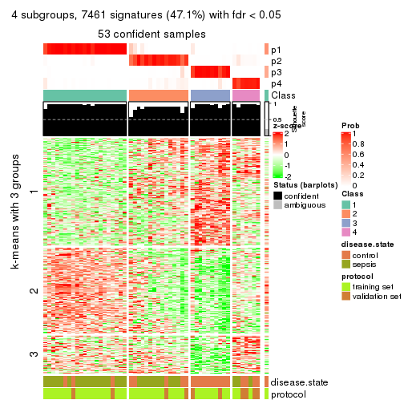
get_signatures(res, k = 5)
get_signatures(res, k = 6)
Signature heatmaps where rows are not scaled:
get_signatures(res, k = 2, scale_rows = FALSE)
get_signatures(res, k = 3, scale_rows = FALSE)
get_signatures(res, k = 4, scale_rows = FALSE)
get_signatures(res, k = 5, scale_rows = FALSE)
get_signatures(res, k = 6, scale_rows = FALSE)
Compare the overlap of signatures from different k:
compare_signatures(res)
get_signature() returns a data frame invisibly. TO get the list of signatures, the function
call should be assigned to a variable explicitly. In following code, if plot argument is set
to FALSE, no heatmap is plotted while only the differential analysis is performed.
# code only for demonstration
tb = get_signature(res, k = ..., plot = FALSE)
An example of the output of tb is:
#> which_row fdr mean_1 mean_2 scaled_mean_1 scaled_mean_2 km
#> 1 38 0.042760348 8.373488 9.131774 -0.5533452 0.5164555 1
#> 2 40 0.018707592 7.106213 8.469186 -0.6173731 0.5762149 1
#> 3 55 0.019134737 10.221463 11.207825 -0.6159697 0.5749050 1
#> 4 59 0.006059896 5.921854 7.869574 -0.6899429 0.6439467 1
#> 5 60 0.018055526 8.928898 10.211722 -0.6204761 0.5791110 1
#> 6 98 0.009384629 15.714769 14.887706 0.6635654 -0.6193277 2
...
The columns in tb are:
which_row: row indices corresponding to the input matrix.fdr: FDR for the differential test. mean_x: The mean value in group x.scaled_mean_x: The mean value in group x after rows are scaled.km: Row groups if k-means clustering is applied to rows.UMAP plot which shows how samples are separated.
dimension_reduction(res, k = 2, method = "UMAP")
dimension_reduction(res, k = 3, method = "UMAP")
dimension_reduction(res, k = 4, method = "UMAP")
dimension_reduction(res, k = 5, method = "UMAP")
dimension_reduction(res, k = 6, method = "UMAP")
Following heatmap shows how subgroups are split when increasing k:
collect_classes(res)
Test correlation between subgroups and known annotations. If the known annotation is numeric, one-way ANOVA test is applied, and if the known annotation is discrete, chi-squared contingency table test is applied.
test_to_known_factors(res)
#> n disease.state(p) protocol(p) k
#> SD:NMF 54 1.48e-02 0.2374 2
#> SD:NMF 53 2.01e-04 0.1109 3
#> SD:NMF 53 7.83e-05 0.0420 4
#> SD:NMF 45 2.72e-04 0.0564 5
#> SD:NMF 44 7.33e-03 0.1371 6
If matrix rows can be associated to genes, consider to use GO_Enrichment(res,
...) to perform function enrichment for the signature genes.
The object with results only for a single top-value method and a single partition method can be extracted as:
res = res_list["CV", "hclust"]
# you can also extract it by
# res = res_list["CV:hclust"]
A summary of res and all the functions that can be applied to it:
res
#> A 'ConsensusPartition' object with k = 2, 3, 4, 5, 6.
#> On a matrix with 15837 rows and 54 columns.
#> Top rows (1000, 2000, 3000, 4000, 5000) are extracted by 'CV' method.
#> Subgroups are detected by 'hclust' method.
#> Performed in total 1250 partitions by row resampling.
#> Best k for subgroups seems to be 2.
#>
#> Following methods can be applied to this 'ConsensusPartition' object:
#> [1] "cola_report" "collect_classes" "collect_plots"
#> [4] "collect_stats" "colnames" "compare_signatures"
#> [7] "consensus_heatmap" "dimension_reduction" "functional_enrichment"
#> [10] "get_anno_col" "get_anno" "get_classes"
#> [13] "get_consensus" "get_matrix" "get_membership"
#> [16] "get_param" "get_signatures" "get_stats"
#> [19] "is_best_k" "is_stable_k" "membership_heatmap"
#> [22] "ncol" "nrow" "plot_ecdf"
#> [25] "rownames" "select_partition_number" "show"
#> [28] "suggest_best_k" "test_to_known_factors"
collect_plots() function collects all the plots made from res for all k (number of partitions)
into one single page to provide an easy and fast comparison between different k.
collect_plots(res)
The plots are:
k and the heatmap of
predicted classes for each k.k.k.k.All the plots in panels can be made by individual functions and they are plotted later in this section.
select_partition_number() produces several plots showing different
statistics for choosing “optimized” k. There are following statistics:
k;k, the area increased is defined as \(A_k - A_{k-1}\).The detailed explanations of these statistics can be found in the cola vignette.
Generally speaking, lower PAC score, higher mean silhouette score or higher
concordance corresponds to better partition. Rand index and Jaccard index
measure how similar the current partition is compared to partition with k-1.
If they are too similar, we won't accept k is better than k-1.
select_partition_number(res)
The numeric values for all these statistics can be obtained by get_stats().
get_stats(res)
#> k 1-PAC mean_silhouette concordance area_increased Rand Jaccard
#> 2 2 0.338 0.760 0.859 0.4491 0.493 0.493
#> 3 3 0.445 0.691 0.821 0.3847 0.800 0.611
#> 4 4 0.576 0.628 0.773 0.1163 0.932 0.807
#> 5 5 0.613 0.584 0.770 0.0425 0.966 0.893
#> 6 6 0.633 0.566 0.754 0.0261 0.956 0.859
suggest_best_k() suggests the best \(k\) based on these statistics. The rules are as follows:
NA.suggest_best_k(res)
#> [1] 2
Following shows the table of the partitions (You need to click the show/hide
code output link to see it). The membership matrix (columns with name p*)
is inferred by
clue::cl_consensus()
function with the SE method. Basically the value in the membership matrix
represents the probability to belong to a certain group. The finall class
label for an item is determined with the group with highest probability it
belongs to.
In get_classes() function, the entropy is calculated from the membership
matrix and the silhouette score is calculated from the consensus matrix.
cbind(get_classes(res, k = 2), get_membership(res, k = 2))
#> class entropy silhouette p1 p2
#> GSM134895 1 0.9954 -0.1842 0.540 0.460
#> GSM134896 2 0.0000 0.7576 0.000 1.000
#> GSM134897 2 0.5519 0.8056 0.128 0.872
#> GSM134898 2 0.5519 0.8056 0.128 0.872
#> GSM134905 2 0.0000 0.7576 0.000 1.000
#> GSM135018 2 0.0000 0.7576 0.000 1.000
#> GSM135674 1 0.9044 0.3954 0.680 0.320
#> GSM135683 2 0.7745 0.7972 0.228 0.772
#> GSM135685 2 0.0000 0.7576 0.000 1.000
#> GSM135699 1 0.0000 0.8813 1.000 0.000
#> GSM135019 2 0.3879 0.7824 0.076 0.924
#> GSM135026 2 0.9944 0.4728 0.456 0.544
#> GSM135033 2 0.9460 0.6772 0.364 0.636
#> GSM135042 2 0.9460 0.6772 0.364 0.636
#> GSM135057 2 0.3733 0.7834 0.072 0.928
#> GSM135068 1 0.1843 0.8797 0.972 0.028
#> GSM135071 2 0.9000 0.7457 0.316 0.684
#> GSM135078 2 0.8327 0.7889 0.264 0.736
#> GSM135163 2 0.9209 0.7205 0.336 0.664
#> GSM135166 2 0.0000 0.7576 0.000 1.000
#> GSM135223 2 0.3733 0.7834 0.072 0.928
#> GSM135224 2 0.3733 0.7834 0.072 0.928
#> GSM135228 1 0.3584 0.8598 0.932 0.068
#> GSM135262 1 0.3584 0.8598 0.932 0.068
#> GSM135263 2 0.0938 0.7649 0.012 0.988
#> GSM135279 2 0.8144 0.7937 0.252 0.748
#> GSM135661 1 0.1633 0.8807 0.976 0.024
#> GSM135662 2 0.8386 0.7858 0.268 0.732
#> GSM135663 2 0.8386 0.7858 0.268 0.732
#> GSM135664 2 0.8144 0.7937 0.252 0.748
#> GSM135665 1 0.0000 0.8813 1.000 0.000
#> GSM135666 1 0.4562 0.8355 0.904 0.096
#> GSM135668 1 0.6438 0.7608 0.836 0.164
#> GSM135670 1 0.0376 0.8818 0.996 0.004
#> GSM135671 1 0.0000 0.8813 1.000 0.000
#> GSM135675 1 0.5842 0.7870 0.860 0.140
#> GSM135676 1 0.0000 0.8813 1.000 0.000
#> GSM135677 1 0.1633 0.8807 0.976 0.024
#> GSM135679 1 0.4298 0.8425 0.912 0.088
#> GSM135680 2 0.9552 0.6578 0.376 0.624
#> GSM135681 2 0.8713 0.7503 0.292 0.708
#> GSM135682 2 0.6712 0.8106 0.176 0.824
#> GSM135687 1 0.0376 0.8815 0.996 0.004
#> GSM135688 1 0.0000 0.8813 1.000 0.000
#> GSM135689 1 0.0000 0.8813 1.000 0.000
#> GSM135693 2 0.8499 0.7659 0.276 0.724
#> GSM135694 1 0.0000 0.8813 1.000 0.000
#> GSM135695 1 0.0000 0.8813 1.000 0.000
#> GSM135696 1 0.2423 0.8733 0.960 0.040
#> GSM135697 1 0.0000 0.8813 1.000 0.000
#> GSM135698 2 0.9000 0.7408 0.316 0.684
#> GSM135700 1 0.9732 0.0426 0.596 0.404
#> GSM135702 1 0.6343 0.7664 0.840 0.160
#> GSM135703 2 0.6712 0.8106 0.176 0.824
cbind(get_classes(res, k = 3), get_membership(res, k = 3))
#> class entropy silhouette p1 p2 p3
#> GSM134895 2 0.6282 0.4924 0.384 0.612 0.004
#> GSM134896 3 0.0237 0.6767 0.000 0.004 0.996
#> GSM134897 3 0.6111 0.3014 0.000 0.396 0.604
#> GSM134898 3 0.6111 0.3014 0.000 0.396 0.604
#> GSM134905 3 0.0237 0.6767 0.000 0.004 0.996
#> GSM135018 3 0.3116 0.6572 0.000 0.108 0.892
#> GSM135674 1 0.7102 0.0802 0.556 0.420 0.024
#> GSM135683 2 0.7308 0.5144 0.056 0.648 0.296
#> GSM135685 3 0.2356 0.6643 0.000 0.072 0.928
#> GSM135699 1 0.0000 0.9149 1.000 0.000 0.000
#> GSM135019 3 0.4709 0.6167 0.056 0.092 0.852
#> GSM135026 2 0.5812 0.6802 0.264 0.724 0.012
#> GSM135033 2 0.5020 0.7210 0.192 0.796 0.012
#> GSM135042 2 0.5020 0.7210 0.192 0.796 0.012
#> GSM135057 3 0.5882 0.5305 0.000 0.348 0.652
#> GSM135068 1 0.1289 0.9101 0.968 0.032 0.000
#> GSM135071 2 0.7661 0.7092 0.144 0.684 0.172
#> GSM135078 2 0.7458 0.6855 0.112 0.692 0.196
#> GSM135163 2 0.6920 0.7256 0.164 0.732 0.104
#> GSM135166 3 0.0237 0.6767 0.000 0.004 0.996
#> GSM135223 3 0.5882 0.5305 0.000 0.348 0.652
#> GSM135224 3 0.5882 0.5305 0.000 0.348 0.652
#> GSM135228 1 0.2959 0.8613 0.900 0.100 0.000
#> GSM135262 1 0.2959 0.8613 0.900 0.100 0.000
#> GSM135263 3 0.4750 0.5805 0.000 0.216 0.784
#> GSM135279 2 0.7383 0.6470 0.084 0.680 0.236
#> GSM135661 1 0.1163 0.9114 0.972 0.028 0.000
#> GSM135662 2 0.7298 0.6658 0.088 0.692 0.220
#> GSM135663 2 0.7298 0.6658 0.088 0.692 0.220
#> GSM135664 2 0.7383 0.6470 0.084 0.680 0.236
#> GSM135665 1 0.0000 0.9149 1.000 0.000 0.000
#> GSM135666 1 0.3412 0.8464 0.876 0.124 0.000
#> GSM135668 1 0.4702 0.7482 0.788 0.212 0.000
#> GSM135670 1 0.0237 0.9148 0.996 0.004 0.000
#> GSM135671 1 0.0000 0.9149 1.000 0.000 0.000
#> GSM135675 1 0.4235 0.7885 0.824 0.176 0.000
#> GSM135676 1 0.0000 0.9149 1.000 0.000 0.000
#> GSM135677 1 0.1163 0.9114 0.972 0.028 0.000
#> GSM135679 1 0.2711 0.8754 0.912 0.088 0.000
#> GSM135680 2 0.5366 0.6740 0.208 0.776 0.016
#> GSM135681 2 0.4569 0.5663 0.072 0.860 0.068
#> GSM135682 3 0.7660 0.1630 0.048 0.404 0.548
#> GSM135687 1 0.0424 0.9144 0.992 0.008 0.000
#> GSM135688 1 0.0000 0.9149 1.000 0.000 0.000
#> GSM135689 1 0.0000 0.9149 1.000 0.000 0.000
#> GSM135693 2 0.4443 0.5247 0.052 0.864 0.084
#> GSM135694 1 0.0000 0.9149 1.000 0.000 0.000
#> GSM135695 1 0.0000 0.9149 1.000 0.000 0.000
#> GSM135696 1 0.1529 0.9033 0.960 0.040 0.000
#> GSM135697 1 0.0000 0.9149 1.000 0.000 0.000
#> GSM135698 2 0.6157 0.7244 0.128 0.780 0.092
#> GSM135700 2 0.6235 0.3711 0.436 0.564 0.000
#> GSM135702 1 0.4733 0.7652 0.800 0.196 0.004
#> GSM135703 3 0.7660 0.1630 0.048 0.404 0.548
cbind(get_classes(res, k = 4), get_membership(res, k = 4))
#> class entropy silhouette p1 p2 p3 p4
#> GSM134895 2 0.5263 0.4775 0.260 0.704 0.032 0.004
#> GSM134896 3 0.4072 0.3591 0.000 0.000 0.748 0.252
#> GSM134897 3 0.4730 0.3818 0.000 0.364 0.636 0.000
#> GSM134898 3 0.4730 0.3818 0.000 0.364 0.636 0.000
#> GSM134905 3 0.4072 0.3591 0.000 0.000 0.748 0.252
#> GSM135018 3 0.3450 0.4437 0.000 0.008 0.836 0.156
#> GSM135674 2 0.5902 -0.0756 0.480 0.492 0.020 0.008
#> GSM135683 3 0.7269 0.1756 0.000 0.180 0.524 0.296
#> GSM135685 3 0.5690 0.3661 0.000 0.060 0.672 0.268
#> GSM135699 1 0.0000 0.9201 1.000 0.000 0.000 0.000
#> GSM135019 3 0.6708 0.3398 0.000 0.132 0.596 0.272
#> GSM135026 2 0.3243 0.5742 0.088 0.876 0.000 0.036
#> GSM135033 2 0.3257 0.5857 0.068 0.888 0.032 0.012
#> GSM135042 2 0.3257 0.5857 0.068 0.888 0.032 0.012
#> GSM135057 4 0.4814 1.0000 0.000 0.008 0.316 0.676
#> GSM135068 1 0.1211 0.9139 0.960 0.040 0.000 0.000
#> GSM135071 2 0.6048 0.5174 0.056 0.724 0.176 0.044
#> GSM135078 2 0.7196 0.3705 0.052 0.484 0.424 0.040
#> GSM135163 2 0.6459 0.5494 0.056 0.716 0.120 0.108
#> GSM135166 3 0.4072 0.3591 0.000 0.000 0.748 0.252
#> GSM135223 4 0.4814 1.0000 0.000 0.008 0.316 0.676
#> GSM135224 4 0.4814 1.0000 0.000 0.008 0.316 0.676
#> GSM135228 1 0.2469 0.8707 0.892 0.108 0.000 0.000
#> GSM135262 1 0.2469 0.8707 0.892 0.108 0.000 0.000
#> GSM135263 3 0.2402 0.4731 0.000 0.012 0.912 0.076
#> GSM135279 2 0.6179 0.3150 0.012 0.504 0.456 0.028
#> GSM135661 1 0.1118 0.9151 0.964 0.036 0.000 0.000
#> GSM135662 2 0.6315 0.3716 0.016 0.536 0.416 0.032
#> GSM135663 2 0.6315 0.3716 0.016 0.536 0.416 0.032
#> GSM135664 2 0.6179 0.3150 0.012 0.504 0.456 0.028
#> GSM135665 1 0.0000 0.9201 1.000 0.000 0.000 0.000
#> GSM135666 1 0.4011 0.7585 0.784 0.208 0.000 0.008
#> GSM135668 1 0.4560 0.6746 0.700 0.296 0.000 0.004
#> GSM135670 1 0.0336 0.9201 0.992 0.008 0.000 0.000
#> GSM135671 1 0.0000 0.9201 1.000 0.000 0.000 0.000
#> GSM135675 1 0.4188 0.7376 0.752 0.244 0.000 0.004
#> GSM135676 1 0.0188 0.9199 0.996 0.004 0.000 0.000
#> GSM135677 1 0.1118 0.9151 0.964 0.036 0.000 0.000
#> GSM135679 1 0.2868 0.8500 0.864 0.136 0.000 0.000
#> GSM135680 2 0.6103 0.5365 0.116 0.688 0.004 0.192
#> GSM135681 2 0.4917 0.4236 0.008 0.656 0.000 0.336
#> GSM135682 3 0.4216 0.4438 0.008 0.196 0.788 0.008
#> GSM135687 1 0.0469 0.9194 0.988 0.012 0.000 0.000
#> GSM135688 1 0.0000 0.9201 1.000 0.000 0.000 0.000
#> GSM135689 1 0.0000 0.9201 1.000 0.000 0.000 0.000
#> GSM135693 2 0.5895 0.3104 0.004 0.544 0.028 0.424
#> GSM135694 1 0.0000 0.9201 1.000 0.000 0.000 0.000
#> GSM135695 1 0.0000 0.9201 1.000 0.000 0.000 0.000
#> GSM135696 1 0.1716 0.8970 0.936 0.064 0.000 0.000
#> GSM135697 1 0.0000 0.9201 1.000 0.000 0.000 0.000
#> GSM135698 2 0.4917 0.5268 0.012 0.748 0.220 0.020
#> GSM135700 2 0.5475 0.4086 0.308 0.656 0.000 0.036
#> GSM135702 1 0.4511 0.7106 0.724 0.268 0.000 0.008
#> GSM135703 3 0.4216 0.4438 0.008 0.196 0.788 0.008
cbind(get_classes(res, k = 5), get_membership(res, k = 5))
#> class entropy silhouette p1 p2 p3 p4 p5
#> GSM134895 2 0.6787 0.280502 0.260 0.444 0.000 0.004 0.292
#> GSM134896 3 0.0000 0.468335 0.000 0.000 1.000 0.000 0.000
#> GSM134897 3 0.5492 0.397093 0.000 0.312 0.608 0.004 0.076
#> GSM134898 3 0.5492 0.397093 0.000 0.312 0.608 0.004 0.076
#> GSM134905 3 0.0000 0.468335 0.000 0.000 1.000 0.000 0.000
#> GSM135018 3 0.3439 0.511839 0.000 0.040 0.856 0.080 0.024
#> GSM135674 1 0.6739 -0.000712 0.456 0.356 0.000 0.012 0.176
#> GSM135683 5 0.5644 0.000000 0.000 0.348 0.024 0.044 0.584
#> GSM135685 3 0.4732 0.276768 0.000 0.208 0.716 0.000 0.076
#> GSM135699 1 0.0000 0.899859 1.000 0.000 0.000 0.000 0.000
#> GSM135019 3 0.5537 0.157580 0.000 0.264 0.624 0.000 0.112
#> GSM135026 2 0.6579 0.289552 0.016 0.452 0.000 0.132 0.400
#> GSM135033 2 0.5551 0.451626 0.068 0.620 0.000 0.012 0.300
#> GSM135042 2 0.5551 0.451626 0.068 0.620 0.000 0.012 0.300
#> GSM135057 4 0.4088 1.000000 0.000 0.000 0.368 0.632 0.000
#> GSM135068 1 0.1168 0.895200 0.960 0.008 0.000 0.000 0.032
#> GSM135071 2 0.3743 0.420149 0.052 0.840 0.000 0.080 0.028
#> GSM135078 2 0.5313 0.249381 0.052 0.708 0.000 0.196 0.044
#> GSM135163 2 0.5516 0.456760 0.052 0.716 0.000 0.140 0.092
#> GSM135166 3 0.0000 0.468335 0.000 0.000 1.000 0.000 0.000
#> GSM135223 4 0.4088 1.000000 0.000 0.000 0.368 0.632 0.000
#> GSM135224 4 0.4088 1.000000 0.000 0.000 0.368 0.632 0.000
#> GSM135228 1 0.2740 0.855843 0.888 0.064 0.000 0.004 0.044
#> GSM135262 1 0.2740 0.855843 0.888 0.064 0.000 0.004 0.044
#> GSM135263 3 0.5493 0.415354 0.000 0.108 0.628 0.264 0.000
#> GSM135279 2 0.3687 0.220298 0.000 0.792 0.000 0.180 0.028
#> GSM135661 1 0.1041 0.896231 0.964 0.004 0.000 0.000 0.032
#> GSM135662 2 0.3211 0.282102 0.004 0.824 0.000 0.164 0.008
#> GSM135663 2 0.3211 0.282102 0.004 0.824 0.000 0.164 0.008
#> GSM135664 2 0.3687 0.220298 0.000 0.792 0.000 0.180 0.028
#> GSM135665 1 0.0000 0.899859 1.000 0.000 0.000 0.000 0.000
#> GSM135666 1 0.4127 0.756630 0.784 0.080 0.000 0.000 0.136
#> GSM135668 1 0.5233 0.685005 0.696 0.136 0.000 0.004 0.164
#> GSM135670 1 0.0290 0.899879 0.992 0.000 0.000 0.000 0.008
#> GSM135671 1 0.0000 0.899859 1.000 0.000 0.000 0.000 0.000
#> GSM135675 1 0.4719 0.730182 0.740 0.072 0.000 0.008 0.180
#> GSM135676 1 0.0162 0.899812 0.996 0.000 0.000 0.000 0.004
#> GSM135677 1 0.1041 0.896231 0.964 0.004 0.000 0.000 0.032
#> GSM135679 1 0.2660 0.838825 0.864 0.008 0.000 0.000 0.128
#> GSM135680 2 0.7144 0.445128 0.100 0.552 0.000 0.228 0.120
#> GSM135681 2 0.6081 0.372685 0.000 0.496 0.000 0.376 0.128
#> GSM135682 3 0.6879 0.325365 0.000 0.300 0.496 0.180 0.024
#> GSM135687 1 0.0451 0.899409 0.988 0.004 0.000 0.000 0.008
#> GSM135688 1 0.0000 0.899859 1.000 0.000 0.000 0.000 0.000
#> GSM135689 1 0.0000 0.899859 1.000 0.000 0.000 0.000 0.000
#> GSM135693 2 0.5557 0.289563 0.000 0.468 0.000 0.464 0.068
#> GSM135694 1 0.0000 0.899859 1.000 0.000 0.000 0.000 0.000
#> GSM135695 1 0.0000 0.899859 1.000 0.000 0.000 0.000 0.000
#> GSM135696 1 0.1478 0.879621 0.936 0.000 0.000 0.000 0.064
#> GSM135697 1 0.0000 0.899859 1.000 0.000 0.000 0.000 0.000
#> GSM135698 2 0.4789 0.409331 0.000 0.728 0.000 0.116 0.156
#> GSM135700 2 0.7814 0.305580 0.284 0.400 0.000 0.072 0.244
#> GSM135702 1 0.5055 0.712938 0.720 0.112 0.000 0.008 0.160
#> GSM135703 3 0.6891 0.320053 0.000 0.304 0.492 0.180 0.024
cbind(get_classes(res, k = 6), get_membership(res, k = 6))
#> class entropy silhouette p1 p2 p3 p4 p5 p6
#> GSM134895 2 0.6908 0.1490 0.256 0.492 0.008 0.000 0.084 0.160
#> GSM134896 3 0.3103 0.4643 0.000 0.000 0.784 0.208 0.008 0.000
#> GSM134897 3 0.5027 0.3892 0.000 0.312 0.616 0.000 0.040 0.032
#> GSM134898 3 0.5027 0.3892 0.000 0.312 0.616 0.000 0.040 0.032
#> GSM134905 3 0.3103 0.4643 0.000 0.000 0.784 0.208 0.008 0.000
#> GSM135018 3 0.3640 0.4717 0.000 0.012 0.808 0.132 0.004 0.044
#> GSM135674 2 0.5009 -0.0158 0.444 0.500 0.000 0.000 0.044 0.012
#> GSM135683 6 0.1049 -0.0204 0.000 0.008 0.000 0.000 0.032 0.960
#> GSM135685 3 0.6014 -0.2240 0.000 0.000 0.484 0.208 0.008 0.300
#> GSM135699 1 0.0000 0.9227 1.000 0.000 0.000 0.000 0.000 0.000
#> GSM135019 6 0.6135 -0.0822 0.000 0.000 0.384 0.208 0.008 0.400
#> GSM135026 5 0.2278 0.0000 0.000 0.128 0.004 0.000 0.868 0.000
#> GSM135033 2 0.5656 0.3428 0.064 0.656 0.008 0.000 0.084 0.188
#> GSM135042 2 0.5656 0.3428 0.064 0.656 0.008 0.000 0.084 0.188
#> GSM135057 4 0.0260 1.0000 0.000 0.000 0.008 0.992 0.000 0.000
#> GSM135068 1 0.1074 0.9159 0.960 0.012 0.000 0.000 0.028 0.000
#> GSM135071 2 0.5515 0.4397 0.048 0.652 0.016 0.028 0.012 0.244
#> GSM135078 2 0.7135 0.3646 0.048 0.420 0.212 0.020 0.000 0.300
#> GSM135163 2 0.5544 0.4354 0.048 0.700 0.016 0.076 0.012 0.148
#> GSM135166 3 0.3103 0.4643 0.000 0.000 0.784 0.208 0.008 0.000
#> GSM135223 4 0.0260 1.0000 0.000 0.000 0.008 0.992 0.000 0.000
#> GSM135224 4 0.0260 1.0000 0.000 0.000 0.008 0.992 0.000 0.000
#> GSM135228 1 0.2376 0.8750 0.888 0.068 0.000 0.000 0.044 0.000
#> GSM135262 1 0.2376 0.8750 0.888 0.068 0.000 0.000 0.044 0.000
#> GSM135263 3 0.4664 0.3087 0.000 0.016 0.680 0.248 0.000 0.056
#> GSM135279 2 0.6007 0.3447 0.000 0.512 0.212 0.000 0.012 0.264
#> GSM135661 1 0.0972 0.9171 0.964 0.008 0.000 0.000 0.028 0.000
#> GSM135662 2 0.5731 0.3797 0.000 0.556 0.196 0.000 0.008 0.240
#> GSM135663 2 0.5731 0.3797 0.000 0.556 0.196 0.000 0.008 0.240
#> GSM135664 2 0.6007 0.3447 0.000 0.512 0.212 0.000 0.012 0.264
#> GSM135665 1 0.0000 0.9227 1.000 0.000 0.000 0.000 0.000 0.000
#> GSM135666 1 0.4029 0.7577 0.784 0.052 0.000 0.000 0.032 0.132
#> GSM135668 1 0.4795 0.6926 0.692 0.204 0.000 0.000 0.088 0.016
#> GSM135670 1 0.0260 0.9224 0.992 0.000 0.000 0.000 0.008 0.000
#> GSM135671 1 0.0000 0.9227 1.000 0.000 0.000 0.000 0.000 0.000
#> GSM135675 1 0.4486 0.7260 0.728 0.140 0.000 0.000 0.124 0.008
#> GSM135676 1 0.0146 0.9224 0.996 0.004 0.000 0.000 0.000 0.000
#> GSM135677 1 0.0972 0.9171 0.964 0.008 0.000 0.000 0.028 0.000
#> GSM135679 1 0.2658 0.8551 0.864 0.100 0.000 0.000 0.036 0.000
#> GSM135680 2 0.4765 0.3624 0.088 0.720 0.000 0.160 0.032 0.000
#> GSM135681 2 0.4377 0.2762 0.000 0.644 0.000 0.312 0.044 0.000
#> GSM135682 3 0.4473 0.3624 0.000 0.212 0.708 0.000 0.008 0.072
#> GSM135687 1 0.0363 0.9216 0.988 0.000 0.000 0.000 0.012 0.000
#> GSM135688 1 0.0000 0.9227 1.000 0.000 0.000 0.000 0.000 0.000
#> GSM135689 1 0.0000 0.9227 1.000 0.000 0.000 0.000 0.000 0.000
#> GSM135693 2 0.4627 0.2092 0.000 0.568 0.016 0.400 0.012 0.004
#> GSM135694 1 0.0000 0.9227 1.000 0.000 0.000 0.000 0.000 0.000
#> GSM135695 1 0.0000 0.9227 1.000 0.000 0.000 0.000 0.000 0.000
#> GSM135696 1 0.1327 0.9005 0.936 0.000 0.000 0.000 0.064 0.000
#> GSM135697 1 0.0000 0.9227 1.000 0.000 0.000 0.000 0.000 0.000
#> GSM135698 2 0.4686 0.4045 0.000 0.736 0.136 0.000 0.040 0.088
#> GSM135700 2 0.5788 0.1781 0.272 0.564 0.000 0.008 0.148 0.008
#> GSM135702 1 0.4478 0.7237 0.720 0.192 0.000 0.000 0.076 0.012
#> GSM135703 3 0.4499 0.3584 0.000 0.216 0.704 0.000 0.008 0.072
Heatmaps for the consensus matrix. It visualizes the probability of two samples to be in a same group.
consensus_heatmap(res, k = 2)
consensus_heatmap(res, k = 3)
consensus_heatmap(res, k = 4)
consensus_heatmap(res, k = 5)
consensus_heatmap(res, k = 6)
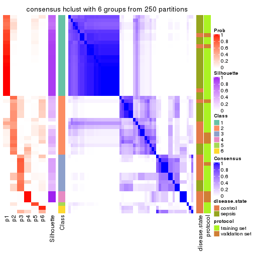
Heatmaps for the membership of samples in all partitions to see how consistent they are:
membership_heatmap(res, k = 2)
membership_heatmap(res, k = 3)
membership_heatmap(res, k = 4)
membership_heatmap(res, k = 5)

membership_heatmap(res, k = 6)
As soon as we have had the classes for columns, we can look for signatures which are significantly different between classes which can be candidate marks for certain classes. Following are the heatmaps for signatures.
Signature heatmaps where rows are scaled:
get_signatures(res, k = 2)
get_signatures(res, k = 3)
get_signatures(res, k = 4)
get_signatures(res, k = 5)
get_signatures(res, k = 6)
Signature heatmaps where rows are not scaled:
get_signatures(res, k = 2, scale_rows = FALSE)
get_signatures(res, k = 3, scale_rows = FALSE)
get_signatures(res, k = 4, scale_rows = FALSE)
get_signatures(res, k = 5, scale_rows = FALSE)
get_signatures(res, k = 6, scale_rows = FALSE)
Compare the overlap of signatures from different k:
compare_signatures(res)
get_signature() returns a data frame invisibly. TO get the list of signatures, the function
call should be assigned to a variable explicitly. In following code, if plot argument is set
to FALSE, no heatmap is plotted while only the differential analysis is performed.
# code only for demonstration
tb = get_signature(res, k = ..., plot = FALSE)
An example of the output of tb is:
#> which_row fdr mean_1 mean_2 scaled_mean_1 scaled_mean_2 km
#> 1 38 0.042760348 8.373488 9.131774 -0.5533452 0.5164555 1
#> 2 40 0.018707592 7.106213 8.469186 -0.6173731 0.5762149 1
#> 3 55 0.019134737 10.221463 11.207825 -0.6159697 0.5749050 1
#> 4 59 0.006059896 5.921854 7.869574 -0.6899429 0.6439467 1
#> 5 60 0.018055526 8.928898 10.211722 -0.6204761 0.5791110 1
#> 6 98 0.009384629 15.714769 14.887706 0.6635654 -0.6193277 2
...
The columns in tb are:
which_row: row indices corresponding to the input matrix.fdr: FDR for the differential test. mean_x: The mean value in group x.scaled_mean_x: The mean value in group x after rows are scaled.km: Row groups if k-means clustering is applied to rows.UMAP plot which shows how samples are separated.
dimension_reduction(res, k = 2, method = "UMAP")
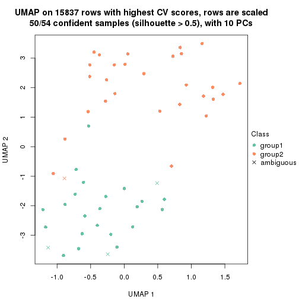
dimension_reduction(res, k = 3, method = "UMAP")
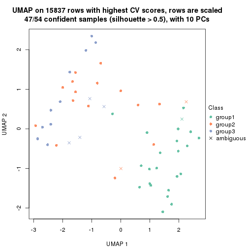
dimension_reduction(res, k = 4, method = "UMAP")
dimension_reduction(res, k = 5, method = "UMAP")
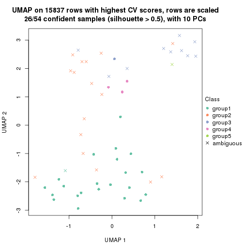
dimension_reduction(res, k = 6, method = "UMAP")
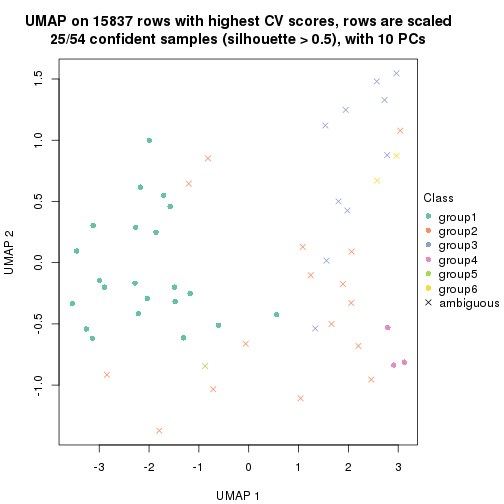
Following heatmap shows how subgroups are split when increasing k:
collect_classes(res)
Test correlation between subgroups and known annotations. If the known annotation is numeric, one-way ANOVA test is applied, and if the known annotation is discrete, chi-squared contingency table test is applied.
test_to_known_factors(res)
#> n disease.state(p) protocol(p) k
#> CV:hclust 50 0.002055 0.175966 2
#> CV:hclust 47 0.000203 0.116279 3
#> CV:hclust 32 0.000833 0.001388 4
#> CV:hclust 26 0.001636 0.000787 5
#> CV:hclust 25 0.010314 0.003462 6
If matrix rows can be associated to genes, consider to use GO_Enrichment(res,
...) to perform function enrichment for the signature genes.
The object with results only for a single top-value method and a single partition method can be extracted as:
res = res_list["CV", "kmeans"]
# you can also extract it by
# res = res_list["CV:kmeans"]
A summary of res and all the functions that can be applied to it:
res
#> A 'ConsensusPartition' object with k = 2, 3, 4, 5, 6.
#> On a matrix with 15837 rows and 54 columns.
#> Top rows (1000, 2000, 3000, 4000, 5000) are extracted by 'CV' method.
#> Subgroups are detected by 'kmeans' method.
#> Performed in total 1250 partitions by row resampling.
#> Best k for subgroups seems to be 2.
#>
#> Following methods can be applied to this 'ConsensusPartition' object:
#> [1] "cola_report" "collect_classes" "collect_plots"
#> [4] "collect_stats" "colnames" "compare_signatures"
#> [7] "consensus_heatmap" "dimension_reduction" "functional_enrichment"
#> [10] "get_anno_col" "get_anno" "get_classes"
#> [13] "get_consensus" "get_matrix" "get_membership"
#> [16] "get_param" "get_signatures" "get_stats"
#> [19] "is_best_k" "is_stable_k" "membership_heatmap"
#> [22] "ncol" "nrow" "plot_ecdf"
#> [25] "rownames" "select_partition_number" "show"
#> [28] "suggest_best_k" "test_to_known_factors"
collect_plots() function collects all the plots made from res for all k (number of partitions)
into one single page to provide an easy and fast comparison between different k.
collect_plots(res)
The plots are:
k and the heatmap of
predicted classes for each k.k.k.k.All the plots in panels can be made by individual functions and they are plotted later in this section.
select_partition_number() produces several plots showing different
statistics for choosing “optimized” k. There are following statistics:
k;k, the area increased is defined as \(A_k - A_{k-1}\).The detailed explanations of these statistics can be found in the cola vignette.
Generally speaking, lower PAC score, higher mean silhouette score or higher
concordance corresponds to better partition. Rand index and Jaccard index
measure how similar the current partition is compared to partition with k-1.
If they are too similar, we won't accept k is better than k-1.
select_partition_number(res)
The numeric values for all these statistics can be obtained by get_stats().
get_stats(res)
#> k 1-PAC mean_silhouette concordance area_increased Rand Jaccard
#> 2 2 1.000 0.977 0.989 0.5098 0.491 0.491
#> 3 3 0.646 0.341 0.633 0.2864 0.793 0.601
#> 4 4 0.638 0.716 0.822 0.1135 0.783 0.466
#> 5 5 0.678 0.585 0.750 0.0612 0.905 0.657
#> 6 6 0.701 0.579 0.711 0.0362 0.881 0.571
suggest_best_k() suggests the best \(k\) based on these statistics. The rules are as follows:
NA.suggest_best_k(res)
#> [1] 2
Following shows the table of the partitions (You need to click the show/hide
code output link to see it). The membership matrix (columns with name p*)
is inferred by
clue::cl_consensus()
function with the SE method. Basically the value in the membership matrix
represents the probability to belong to a certain group. The finall class
label for an item is determined with the group with highest probability it
belongs to.
In get_classes() function, the entropy is calculated from the membership
matrix and the silhouette score is calculated from the consensus matrix.
cbind(get_classes(res, k = 2), get_membership(res, k = 2))
#> class entropy silhouette p1 p2
#> GSM134895 1 0.0000 0.992 1.000 0.000
#> GSM134896 2 0.0000 0.986 0.000 1.000
#> GSM134897 2 0.0000 0.986 0.000 1.000
#> GSM134898 2 0.0000 0.986 0.000 1.000
#> GSM134905 2 0.0000 0.986 0.000 1.000
#> GSM135018 2 0.0000 0.986 0.000 1.000
#> GSM135674 1 0.0000 0.992 1.000 0.000
#> GSM135683 2 0.0000 0.986 0.000 1.000
#> GSM135685 2 0.0000 0.986 0.000 1.000
#> GSM135699 1 0.0000 0.992 1.000 0.000
#> GSM135019 2 0.0000 0.986 0.000 1.000
#> GSM135026 1 0.7219 0.750 0.800 0.200
#> GSM135033 2 0.0000 0.986 0.000 1.000
#> GSM135042 1 0.0376 0.988 0.996 0.004
#> GSM135057 2 0.0000 0.986 0.000 1.000
#> GSM135068 1 0.0000 0.992 1.000 0.000
#> GSM135071 2 0.5408 0.861 0.124 0.876
#> GSM135078 2 0.0000 0.986 0.000 1.000
#> GSM135163 2 0.1843 0.962 0.028 0.972
#> GSM135166 2 0.0000 0.986 0.000 1.000
#> GSM135223 2 0.0000 0.986 0.000 1.000
#> GSM135224 2 0.0000 0.986 0.000 1.000
#> GSM135228 1 0.0000 0.992 1.000 0.000
#> GSM135262 1 0.0000 0.992 1.000 0.000
#> GSM135263 2 0.0000 0.986 0.000 1.000
#> GSM135279 2 0.0000 0.986 0.000 1.000
#> GSM135661 1 0.0000 0.992 1.000 0.000
#> GSM135662 2 0.0000 0.986 0.000 1.000
#> GSM135663 2 0.0000 0.986 0.000 1.000
#> GSM135664 2 0.0000 0.986 0.000 1.000
#> GSM135665 1 0.0000 0.992 1.000 0.000
#> GSM135666 1 0.0000 0.992 1.000 0.000
#> GSM135668 1 0.0000 0.992 1.000 0.000
#> GSM135670 1 0.0000 0.992 1.000 0.000
#> GSM135671 1 0.0000 0.992 1.000 0.000
#> GSM135675 1 0.0000 0.992 1.000 0.000
#> GSM135676 1 0.0000 0.992 1.000 0.000
#> GSM135677 1 0.0000 0.992 1.000 0.000
#> GSM135679 1 0.0000 0.992 1.000 0.000
#> GSM135680 2 0.0000 0.986 0.000 1.000
#> GSM135681 2 0.0938 0.976 0.012 0.988
#> GSM135682 2 0.0000 0.986 0.000 1.000
#> GSM135687 1 0.0000 0.992 1.000 0.000
#> GSM135688 1 0.0000 0.992 1.000 0.000
#> GSM135689 1 0.0000 0.992 1.000 0.000
#> GSM135693 2 0.7219 0.759 0.200 0.800
#> GSM135694 1 0.0000 0.992 1.000 0.000
#> GSM135695 1 0.0000 0.992 1.000 0.000
#> GSM135696 1 0.0000 0.992 1.000 0.000
#> GSM135697 1 0.0000 0.992 1.000 0.000
#> GSM135698 2 0.0000 0.986 0.000 1.000
#> GSM135700 1 0.0000 0.992 1.000 0.000
#> GSM135702 1 0.0000 0.992 1.000 0.000
#> GSM135703 2 0.0000 0.986 0.000 1.000
cbind(get_classes(res, k = 3), get_membership(res, k = 3))
#> class entropy silhouette p1 p2 p3
#> GSM134895 3 0.6095 -0.5365 0.392 0.000 0.608
#> GSM134896 2 0.6267 0.5898 0.452 0.548 0.000
#> GSM134897 2 0.6260 0.5908 0.448 0.552 0.000
#> GSM134898 2 0.6260 0.5908 0.448 0.552 0.000
#> GSM134905 2 0.6267 0.5898 0.452 0.548 0.000
#> GSM135018 2 0.6260 0.5908 0.448 0.552 0.000
#> GSM135674 3 0.4555 0.2598 0.000 0.200 0.800
#> GSM135683 1 0.9639 -0.6192 0.448 0.332 0.220
#> GSM135685 2 0.6260 0.5908 0.448 0.552 0.000
#> GSM135699 1 0.6274 0.8114 0.544 0.000 0.456
#> GSM135019 2 0.6260 0.5908 0.448 0.552 0.000
#> GSM135026 3 0.4605 0.2534 0.000 0.204 0.796
#> GSM135033 2 0.6476 0.5906 0.448 0.548 0.004
#> GSM135042 3 0.5726 -0.0348 0.216 0.024 0.760
#> GSM135057 2 0.0424 0.5557 0.008 0.992 0.000
#> GSM135068 1 0.6291 0.8087 0.532 0.000 0.468
#> GSM135071 2 0.6274 0.3165 0.000 0.544 0.456
#> GSM135078 2 0.4063 0.5224 0.020 0.868 0.112
#> GSM135163 2 0.6274 0.3165 0.000 0.544 0.456
#> GSM135166 2 0.6267 0.5898 0.452 0.548 0.000
#> GSM135223 2 0.0424 0.5557 0.008 0.992 0.000
#> GSM135224 2 0.0424 0.5557 0.008 0.992 0.000
#> GSM135228 3 0.6267 -0.6773 0.452 0.000 0.548
#> GSM135262 3 0.6295 -0.7179 0.472 0.000 0.528
#> GSM135263 2 0.5678 0.5927 0.316 0.684 0.000
#> GSM135279 2 0.7049 0.3300 0.020 0.528 0.452
#> GSM135661 1 0.6309 0.7537 0.500 0.000 0.500
#> GSM135662 2 0.6267 0.3218 0.000 0.548 0.452
#> GSM135663 2 0.7049 0.3300 0.020 0.528 0.452
#> GSM135664 2 0.5356 0.4842 0.020 0.784 0.196
#> GSM135665 1 0.6274 0.8114 0.544 0.000 0.456
#> GSM135666 3 0.6267 -0.6773 0.452 0.000 0.548
#> GSM135668 3 0.0237 0.2832 0.000 0.004 0.996
#> GSM135670 1 0.6302 0.7961 0.520 0.000 0.480
#> GSM135671 1 0.6274 0.8114 0.544 0.000 0.456
#> GSM135675 3 0.6783 -0.5126 0.396 0.016 0.588
#> GSM135676 1 0.6295 0.8067 0.528 0.000 0.472
#> GSM135677 1 0.6295 0.8067 0.528 0.000 0.472
#> GSM135679 3 0.6295 -0.7179 0.472 0.000 0.528
#> GSM135680 2 0.6483 0.3197 0.004 0.544 0.452
#> GSM135681 3 0.6521 -0.3189 0.004 0.496 0.500
#> GSM135682 2 0.5621 0.5930 0.308 0.692 0.000
#> GSM135687 1 0.6302 0.7961 0.520 0.000 0.480
#> GSM135688 1 0.6274 0.8114 0.544 0.000 0.456
#> GSM135689 1 0.6295 0.8067 0.528 0.000 0.472
#> GSM135693 2 0.6489 0.3152 0.004 0.540 0.456
#> GSM135694 1 0.6274 0.8114 0.544 0.000 0.456
#> GSM135695 1 0.6274 0.8114 0.544 0.000 0.456
#> GSM135696 3 0.6295 -0.7179 0.472 0.000 0.528
#> GSM135697 1 0.6274 0.8114 0.544 0.000 0.456
#> GSM135698 3 0.7059 -0.3008 0.020 0.460 0.520
#> GSM135700 3 0.5216 0.1536 0.000 0.260 0.740
#> GSM135702 3 0.1163 0.3000 0.000 0.028 0.972
#> GSM135703 2 0.7049 0.3300 0.020 0.528 0.452
cbind(get_classes(res, k = 4), get_membership(res, k = 4))
#> class entropy silhouette p1 p2 p3 p4
#> GSM134895 2 0.4897 0.3848 0.332 0.660 0.008 0.000
#> GSM134896 3 0.0524 0.8999 0.000 0.004 0.988 0.008
#> GSM134897 3 0.1174 0.8995 0.000 0.012 0.968 0.020
#> GSM134898 3 0.1174 0.8995 0.000 0.012 0.968 0.020
#> GSM134905 3 0.1042 0.8988 0.000 0.008 0.972 0.020
#> GSM135018 3 0.1174 0.8984 0.000 0.012 0.968 0.020
#> GSM135674 2 0.3917 0.6799 0.044 0.844 0.004 0.108
#> GSM135683 3 0.4424 0.8043 0.000 0.100 0.812 0.088
#> GSM135685 3 0.0937 0.8986 0.000 0.012 0.976 0.012
#> GSM135699 1 0.0000 0.8134 1.000 0.000 0.000 0.000
#> GSM135019 3 0.2021 0.8855 0.000 0.056 0.932 0.012
#> GSM135026 2 0.3734 0.6815 0.044 0.856 0.004 0.096
#> GSM135033 3 0.2450 0.8783 0.000 0.072 0.912 0.016
#> GSM135042 2 0.4631 0.5461 0.260 0.728 0.008 0.004
#> GSM135057 4 0.3196 0.6610 0.000 0.008 0.136 0.856
#> GSM135068 1 0.1637 0.8230 0.940 0.060 0.000 0.000
#> GSM135071 4 0.3982 0.7946 0.000 0.220 0.004 0.776
#> GSM135078 4 0.6240 0.7578 0.000 0.176 0.156 0.668
#> GSM135163 4 0.3945 0.7847 0.000 0.216 0.004 0.780
#> GSM135166 3 0.1042 0.8988 0.000 0.008 0.972 0.020
#> GSM135223 4 0.3196 0.6610 0.000 0.008 0.136 0.856
#> GSM135224 4 0.3196 0.6610 0.000 0.008 0.136 0.856
#> GSM135228 1 0.4916 0.3799 0.576 0.424 0.000 0.000
#> GSM135262 1 0.4866 0.4325 0.596 0.404 0.000 0.000
#> GSM135263 3 0.5695 0.4217 0.000 0.040 0.624 0.336
#> GSM135279 4 0.5631 0.7904 0.000 0.224 0.076 0.700
#> GSM135661 1 0.3942 0.7294 0.764 0.236 0.000 0.000
#> GSM135662 4 0.4018 0.7948 0.000 0.224 0.004 0.772
#> GSM135663 4 0.5598 0.7916 0.000 0.220 0.076 0.704
#> GSM135664 4 0.5929 0.7847 0.000 0.204 0.108 0.688
#> GSM135665 1 0.0188 0.8133 0.996 0.004 0.000 0.000
#> GSM135666 1 0.4948 0.3751 0.560 0.440 0.000 0.000
#> GSM135668 2 0.4025 0.7127 0.128 0.832 0.004 0.036
#> GSM135670 1 0.2868 0.8086 0.864 0.136 0.000 0.000
#> GSM135671 1 0.0000 0.8134 1.000 0.000 0.000 0.000
#> GSM135675 2 0.5360 0.0439 0.436 0.552 0.000 0.012
#> GSM135676 1 0.2469 0.8213 0.892 0.108 0.000 0.000
#> GSM135677 1 0.2149 0.8232 0.912 0.088 0.000 0.000
#> GSM135679 1 0.4134 0.7022 0.740 0.260 0.000 0.000
#> GSM135680 4 0.4228 0.7756 0.000 0.232 0.008 0.760
#> GSM135681 4 0.5112 0.4726 0.000 0.436 0.004 0.560
#> GSM135682 3 0.5494 0.6289 0.000 0.076 0.716 0.208
#> GSM135687 1 0.2814 0.8103 0.868 0.132 0.000 0.000
#> GSM135688 1 0.0000 0.8134 1.000 0.000 0.000 0.000
#> GSM135689 1 0.2281 0.8224 0.904 0.096 0.000 0.000
#> GSM135693 4 0.1489 0.7266 0.000 0.044 0.004 0.952
#> GSM135694 1 0.0000 0.8134 1.000 0.000 0.000 0.000
#> GSM135695 1 0.0188 0.8114 0.996 0.004 0.000 0.000
#> GSM135696 1 0.4193 0.6926 0.732 0.268 0.000 0.000
#> GSM135697 1 0.0188 0.8114 0.996 0.004 0.000 0.000
#> GSM135698 2 0.4770 0.1994 0.000 0.700 0.012 0.288
#> GSM135700 2 0.3647 0.6762 0.040 0.852 0.000 0.108
#> GSM135702 2 0.5380 0.6868 0.184 0.740 0.004 0.072
#> GSM135703 4 0.5631 0.7916 0.000 0.224 0.076 0.700
cbind(get_classes(res, k = 5), get_membership(res, k = 5))
#> class entropy silhouette p1 p2 p3 p4 p5
#> GSM134895 5 0.5004 0.5887 0.224 0.076 0.000 0.004 0.696
#> GSM134896 3 0.1026 0.8121 0.000 0.024 0.968 0.004 0.004
#> GSM134897 3 0.2208 0.8076 0.000 0.060 0.916 0.012 0.012
#> GSM134898 3 0.2208 0.8076 0.000 0.060 0.916 0.012 0.012
#> GSM134905 3 0.1267 0.8116 0.000 0.024 0.960 0.012 0.004
#> GSM135018 3 0.1356 0.8114 0.000 0.028 0.956 0.012 0.004
#> GSM135674 5 0.3250 0.5669 0.004 0.168 0.000 0.008 0.820
#> GSM135683 3 0.5328 0.6370 0.000 0.344 0.604 0.016 0.036
#> GSM135685 3 0.1646 0.8026 0.000 0.032 0.944 0.004 0.020
#> GSM135699 1 0.1608 0.7824 0.928 0.072 0.000 0.000 0.000
#> GSM135019 3 0.3506 0.7674 0.000 0.084 0.852 0.036 0.028
#> GSM135026 5 0.3741 0.4810 0.000 0.264 0.000 0.004 0.732
#> GSM135033 3 0.3264 0.7787 0.000 0.140 0.836 0.004 0.020
#> GSM135042 5 0.5320 0.5998 0.192 0.108 0.004 0.004 0.692
#> GSM135057 4 0.0794 0.7075 0.000 0.000 0.028 0.972 0.000
#> GSM135068 1 0.1965 0.7782 0.904 0.000 0.000 0.000 0.096
#> GSM135071 2 0.4961 0.6390 0.000 0.524 0.000 0.448 0.028
#> GSM135078 2 0.5120 0.6522 0.000 0.540 0.024 0.428 0.008
#> GSM135163 4 0.5086 -0.0407 0.000 0.304 0.000 0.636 0.060
#> GSM135166 3 0.1267 0.8116 0.000 0.024 0.960 0.012 0.004
#> GSM135223 4 0.0794 0.7075 0.000 0.000 0.028 0.972 0.000
#> GSM135224 4 0.0794 0.7075 0.000 0.000 0.028 0.972 0.000
#> GSM135228 5 0.4450 0.1288 0.488 0.004 0.000 0.000 0.508
#> GSM135262 5 0.4451 0.1205 0.492 0.004 0.000 0.000 0.504
#> GSM135263 3 0.6620 0.0443 0.000 0.288 0.456 0.256 0.000
#> GSM135279 2 0.5181 0.6569 0.000 0.564 0.016 0.400 0.020
#> GSM135661 1 0.4150 0.2501 0.612 0.000 0.000 0.000 0.388
#> GSM135662 2 0.4953 0.6536 0.000 0.532 0.000 0.440 0.028
#> GSM135663 2 0.5061 0.6652 0.000 0.540 0.016 0.432 0.012
#> GSM135664 2 0.4934 0.6592 0.000 0.544 0.020 0.432 0.004
#> GSM135665 1 0.1768 0.7829 0.924 0.072 0.000 0.000 0.004
#> GSM135666 5 0.5229 0.3220 0.404 0.048 0.000 0.000 0.548
#> GSM135668 5 0.3355 0.6103 0.036 0.132 0.000 0.000 0.832
#> GSM135670 1 0.2516 0.7618 0.860 0.000 0.000 0.000 0.140
#> GSM135671 1 0.1608 0.7824 0.928 0.072 0.000 0.000 0.000
#> GSM135675 5 0.4637 0.5129 0.292 0.036 0.000 0.000 0.672
#> GSM135676 1 0.2727 0.7668 0.868 0.016 0.000 0.000 0.116
#> GSM135677 1 0.2280 0.7706 0.880 0.000 0.000 0.000 0.120
#> GSM135679 1 0.3910 0.5526 0.720 0.008 0.000 0.000 0.272
#> GSM135680 4 0.5579 -0.2384 0.000 0.368 0.000 0.552 0.080
#> GSM135681 2 0.6757 0.0736 0.000 0.400 0.000 0.320 0.280
#> GSM135682 3 0.6346 -0.0398 0.000 0.404 0.436 0.160 0.000
#> GSM135687 1 0.2891 0.7294 0.824 0.000 0.000 0.000 0.176
#> GSM135688 1 0.1608 0.7824 0.928 0.072 0.000 0.000 0.000
#> GSM135689 1 0.2516 0.7614 0.860 0.000 0.000 0.000 0.140
#> GSM135693 4 0.0798 0.6844 0.000 0.008 0.000 0.976 0.016
#> GSM135694 1 0.1894 0.7826 0.920 0.072 0.000 0.000 0.008
#> GSM135695 1 0.1732 0.7801 0.920 0.080 0.000 0.000 0.000
#> GSM135696 1 0.4418 0.4081 0.652 0.016 0.000 0.000 0.332
#> GSM135697 1 0.1732 0.7801 0.920 0.080 0.000 0.000 0.000
#> GSM135698 2 0.5281 0.1803 0.000 0.548 0.000 0.052 0.400
#> GSM135700 5 0.3618 0.5586 0.004 0.196 0.000 0.012 0.788
#> GSM135702 5 0.4640 0.6165 0.148 0.088 0.000 0.008 0.756
#> GSM135703 2 0.5194 0.6643 0.000 0.552 0.012 0.412 0.024
cbind(get_classes(res, k = 6), get_membership(res, k = 6))
#> class entropy silhouette p1 p2 p3 p4 p5 p6
#> GSM134895 1 0.6809 -0.2457 0.384 0.004 0.000 0.048 0.372 NA
#> GSM134896 3 0.1867 0.8199 0.000 0.000 0.916 0.020 0.000 NA
#> GSM134897 3 0.2850 0.8110 0.000 0.040 0.884 0.028 0.012 NA
#> GSM134898 3 0.2850 0.8110 0.000 0.040 0.884 0.028 0.012 NA
#> GSM134905 3 0.1867 0.8185 0.000 0.000 0.916 0.020 0.000 NA
#> GSM135018 3 0.2400 0.8114 0.000 0.024 0.896 0.016 0.000 NA
#> GSM135674 5 0.3320 0.6459 0.024 0.036 0.000 0.048 0.860 NA
#> GSM135683 3 0.7219 0.4846 0.000 0.104 0.408 0.124 0.016 NA
#> GSM135685 3 0.2776 0.8008 0.000 0.000 0.860 0.032 0.004 NA
#> GSM135699 1 0.3607 0.6034 0.652 0.000 0.000 0.000 0.000 NA
#> GSM135019 3 0.4682 0.7360 0.000 0.056 0.724 0.032 0.004 NA
#> GSM135026 5 0.5930 0.5713 0.016 0.072 0.000 0.148 0.652 NA
#> GSM135033 3 0.5636 0.7150 0.000 0.052 0.668 0.068 0.024 NA
#> GSM135042 5 0.7100 0.1400 0.360 0.008 0.000 0.064 0.368 NA
#> GSM135057 4 0.4356 0.9743 0.000 0.360 0.032 0.608 0.000 NA
#> GSM135068 1 0.0790 0.6640 0.968 0.000 0.000 0.000 0.000 NA
#> GSM135071 2 0.0508 0.6605 0.000 0.984 0.000 0.000 0.012 NA
#> GSM135078 2 0.0551 0.6630 0.000 0.984 0.008 0.004 0.004 NA
#> GSM135163 2 0.4030 0.2572 0.000 0.752 0.000 0.196 0.032 NA
#> GSM135166 3 0.1867 0.8185 0.000 0.000 0.916 0.020 0.000 NA
#> GSM135223 4 0.4356 0.9743 0.000 0.360 0.032 0.608 0.000 NA
#> GSM135224 4 0.4356 0.9743 0.000 0.360 0.032 0.608 0.000 NA
#> GSM135228 1 0.3584 0.4687 0.740 0.000 0.000 0.004 0.244 NA
#> GSM135262 1 0.3559 0.4748 0.744 0.000 0.000 0.004 0.240 NA
#> GSM135263 2 0.4325 0.2491 0.000 0.568 0.412 0.016 0.000 NA
#> GSM135279 2 0.1173 0.6559 0.000 0.960 0.000 0.016 0.016 NA
#> GSM135661 1 0.3245 0.5430 0.796 0.000 0.000 0.004 0.184 NA
#> GSM135662 2 0.0436 0.6625 0.000 0.988 0.000 0.004 0.004 NA
#> GSM135663 2 0.0291 0.6651 0.000 0.992 0.004 0.004 0.000 NA
#> GSM135664 2 0.0291 0.6628 0.000 0.992 0.004 0.004 0.000 NA
#> GSM135665 1 0.4105 0.5989 0.632 0.000 0.000 0.000 0.020 NA
#> GSM135666 1 0.5596 0.1832 0.568 0.000 0.000 0.008 0.268 NA
#> GSM135668 5 0.4412 0.6523 0.100 0.020 0.000 0.052 0.784 NA
#> GSM135670 1 0.1723 0.6594 0.928 0.000 0.000 0.000 0.036 NA
#> GSM135671 1 0.3620 0.6029 0.648 0.000 0.000 0.000 0.000 NA
#> GSM135675 5 0.5502 0.1107 0.400 0.004 0.000 0.032 0.516 NA
#> GSM135676 1 0.3865 0.6256 0.808 0.000 0.000 0.040 0.072 NA
#> GSM135677 1 0.0632 0.6633 0.976 0.000 0.000 0.000 0.000 NA
#> GSM135679 1 0.3390 0.5877 0.808 0.000 0.000 0.008 0.152 NA
#> GSM135680 2 0.4995 0.3032 0.000 0.696 0.000 0.188 0.068 NA
#> GSM135681 2 0.6772 -0.0329 0.000 0.396 0.000 0.172 0.368 NA
#> GSM135682 2 0.4380 0.1632 0.000 0.544 0.436 0.012 0.000 NA
#> GSM135687 1 0.1296 0.6472 0.948 0.000 0.000 0.004 0.044 NA
#> GSM135688 1 0.3607 0.6034 0.652 0.000 0.000 0.000 0.000 NA
#> GSM135689 1 0.1408 0.6556 0.944 0.000 0.000 0.000 0.036 NA
#> GSM135693 4 0.4109 0.9200 0.000 0.392 0.000 0.596 0.008 NA
#> GSM135694 1 0.3742 0.6026 0.648 0.000 0.000 0.000 0.004 NA
#> GSM135695 1 0.4230 0.5805 0.612 0.000 0.000 0.024 0.000 NA
#> GSM135696 1 0.4386 0.5140 0.720 0.000 0.000 0.024 0.216 NA
#> GSM135697 1 0.4167 0.5800 0.612 0.000 0.000 0.020 0.000 NA
#> GSM135698 5 0.5705 0.3596 0.000 0.268 0.000 0.100 0.592 NA
#> GSM135700 5 0.4762 0.6247 0.028 0.036 0.000 0.104 0.760 NA
#> GSM135702 5 0.4395 0.5461 0.212 0.056 0.000 0.008 0.720 NA
#> GSM135703 2 0.1621 0.6482 0.000 0.944 0.016 0.012 0.020 NA
Heatmaps for the consensus matrix. It visualizes the probability of two samples to be in a same group.
consensus_heatmap(res, k = 2)
consensus_heatmap(res, k = 3)
consensus_heatmap(res, k = 4)
consensus_heatmap(res, k = 5)
consensus_heatmap(res, k = 6)
Heatmaps for the membership of samples in all partitions to see how consistent they are:
membership_heatmap(res, k = 2)
membership_heatmap(res, k = 3)
membership_heatmap(res, k = 4)
membership_heatmap(res, k = 5)
membership_heatmap(res, k = 6)
As soon as we have had the classes for columns, we can look for signatures which are significantly different between classes which can be candidate marks for certain classes. Following are the heatmaps for signatures.
Signature heatmaps where rows are scaled:
get_signatures(res, k = 2)
get_signatures(res, k = 3)
get_signatures(res, k = 4)
get_signatures(res, k = 5)

get_signatures(res, k = 6)
Signature heatmaps where rows are not scaled:
get_signatures(res, k = 2, scale_rows = FALSE)
get_signatures(res, k = 3, scale_rows = FALSE)
get_signatures(res, k = 4, scale_rows = FALSE)
get_signatures(res, k = 5, scale_rows = FALSE)
get_signatures(res, k = 6, scale_rows = FALSE)
Compare the overlap of signatures from different k:
compare_signatures(res)
get_signature() returns a data frame invisibly. TO get the list of signatures, the function
call should be assigned to a variable explicitly. In following code, if plot argument is set
to FALSE, no heatmap is plotted while only the differential analysis is performed.
# code only for demonstration
tb = get_signature(res, k = ..., plot = FALSE)
An example of the output of tb is:
#> which_row fdr mean_1 mean_2 scaled_mean_1 scaled_mean_2 km
#> 1 38 0.042760348 8.373488 9.131774 -0.5533452 0.5164555 1
#> 2 40 0.018707592 7.106213 8.469186 -0.6173731 0.5762149 1
#> 3 55 0.019134737 10.221463 11.207825 -0.6159697 0.5749050 1
#> 4 59 0.006059896 5.921854 7.869574 -0.6899429 0.6439467 1
#> 5 60 0.018055526 8.928898 10.211722 -0.6204761 0.5791110 1
#> 6 98 0.009384629 15.714769 14.887706 0.6635654 -0.6193277 2
...
The columns in tb are:
which_row: row indices corresponding to the input matrix.fdr: FDR for the differential test. mean_x: The mean value in group x.scaled_mean_x: The mean value in group x after rows are scaled.km: Row groups if k-means clustering is applied to rows.UMAP plot which shows how samples are separated.
dimension_reduction(res, k = 2, method = "UMAP")
dimension_reduction(res, k = 3, method = "UMAP")
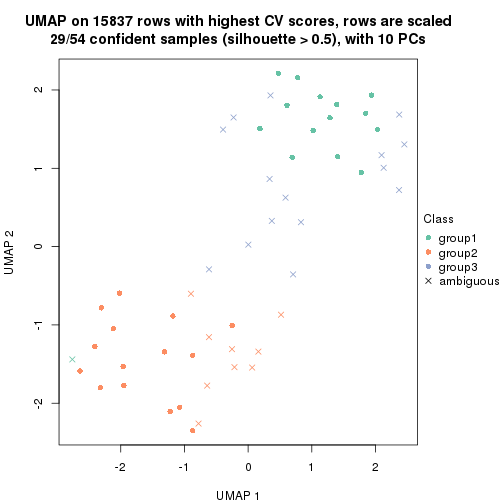
dimension_reduction(res, k = 4, method = "UMAP")
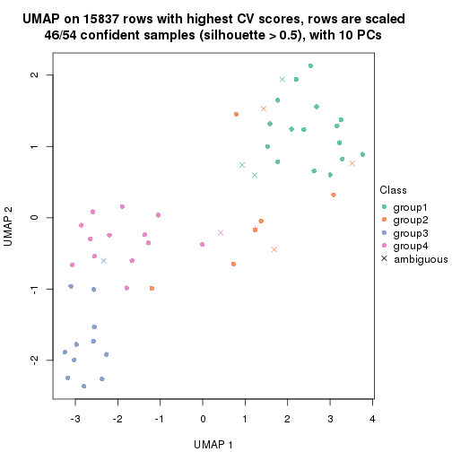
dimension_reduction(res, k = 5, method = "UMAP")

dimension_reduction(res, k = 6, method = "UMAP")
Following heatmap shows how subgroups are split when increasing k:
collect_classes(res)
Test correlation between subgroups and known annotations. If the known annotation is numeric, one-way ANOVA test is applied, and if the known annotation is discrete, chi-squared contingency table test is applied.
test_to_known_factors(res)
#> n disease.state(p) protocol(p) k
#> CV:kmeans 54 0.027692 0.2933 2
#> CV:kmeans 29 0.000422 0.2001 3
#> CV:kmeans 46 0.001024 0.0377 4
#> CV:kmeans 42 0.000621 0.0334 5
#> CV:kmeans 41 0.000461 0.0128 6
If matrix rows can be associated to genes, consider to use GO_Enrichment(res,
...) to perform function enrichment for the signature genes.
The object with results only for a single top-value method and a single partition method can be extracted as:
res = res_list["CV", "skmeans"]
# you can also extract it by
# res = res_list["CV:skmeans"]
A summary of res and all the functions that can be applied to it:
res
#> A 'ConsensusPartition' object with k = 2, 3, 4, 5, 6.
#> On a matrix with 15837 rows and 54 columns.
#> Top rows (1000, 2000, 3000, 4000, 5000) are extracted by 'CV' method.
#> Subgroups are detected by 'skmeans' method.
#> Performed in total 1250 partitions by row resampling.
#> Best k for subgroups seems to be 3.
#>
#> Following methods can be applied to this 'ConsensusPartition' object:
#> [1] "cola_report" "collect_classes" "collect_plots"
#> [4] "collect_stats" "colnames" "compare_signatures"
#> [7] "consensus_heatmap" "dimension_reduction" "functional_enrichment"
#> [10] "get_anno_col" "get_anno" "get_classes"
#> [13] "get_consensus" "get_matrix" "get_membership"
#> [16] "get_param" "get_signatures" "get_stats"
#> [19] "is_best_k" "is_stable_k" "membership_heatmap"
#> [22] "ncol" "nrow" "plot_ecdf"
#> [25] "rownames" "select_partition_number" "show"
#> [28] "suggest_best_k" "test_to_known_factors"
collect_plots() function collects all the plots made from res for all k (number of partitions)
into one single page to provide an easy and fast comparison between different k.
collect_plots(res)
The plots are:
k and the heatmap of
predicted classes for each k.k.k.k.All the plots in panels can be made by individual functions and they are plotted later in this section.
select_partition_number() produces several plots showing different
statistics for choosing “optimized” k. There are following statistics:
k;k, the area increased is defined as \(A_k - A_{k-1}\).The detailed explanations of these statistics can be found in the cola vignette.
Generally speaking, lower PAC score, higher mean silhouette score or higher
concordance corresponds to better partition. Rand index and Jaccard index
measure how similar the current partition is compared to partition with k-1.
If they are too similar, we won't accept k is better than k-1.
select_partition_number(res)
The numeric values for all these statistics can be obtained by get_stats().
get_stats(res)
#> k 1-PAC mean_silhouette concordance area_increased Rand Jaccard
#> 2 2 1.000 0.982 0.992 0.5099 0.491 0.491
#> 3 3 0.906 0.932 0.963 0.2396 0.887 0.769
#> 4 4 0.757 0.751 0.876 0.1105 0.936 0.831
#> 5 5 0.703 0.623 0.806 0.0618 0.950 0.844
#> 6 6 0.653 0.621 0.783 0.0455 0.929 0.754
suggest_best_k() suggests the best \(k\) based on these statistics. The rules are as follows:
NA.suggest_best_k(res)
#> [1] 3
#> attr(,"optional")
#> [1] 2
There is also optional best \(k\) = 2 that is worth to check.
Following shows the table of the partitions (You need to click the show/hide
code output link to see it). The membership matrix (columns with name p*)
is inferred by
clue::cl_consensus()
function with the SE method. Basically the value in the membership matrix
represents the probability to belong to a certain group. The finall class
label for an item is determined with the group with highest probability it
belongs to.
In get_classes() function, the entropy is calculated from the membership
matrix and the silhouette score is calculated from the consensus matrix.
cbind(get_classes(res, k = 2), get_membership(res, k = 2))
#> class entropy silhouette p1 p2
#> GSM134895 1 0.000 0.992 1.00 0.00
#> GSM134896 2 0.000 0.991 0.00 1.00
#> GSM134897 2 0.000 0.991 0.00 1.00
#> GSM134898 2 0.000 0.991 0.00 1.00
#> GSM134905 2 0.000 0.991 0.00 1.00
#> GSM135018 2 0.000 0.991 0.00 1.00
#> GSM135674 1 0.000 0.992 1.00 0.00
#> GSM135683 2 0.000 0.991 0.00 1.00
#> GSM135685 2 0.000 0.991 0.00 1.00
#> GSM135699 1 0.000 0.992 1.00 0.00
#> GSM135019 2 0.000 0.991 0.00 1.00
#> GSM135026 1 0.722 0.749 0.80 0.20
#> GSM135033 2 0.000 0.991 0.00 1.00
#> GSM135042 1 0.000 0.992 1.00 0.00
#> GSM135057 2 0.000 0.991 0.00 1.00
#> GSM135068 1 0.000 0.992 1.00 0.00
#> GSM135071 2 0.141 0.973 0.02 0.98
#> GSM135078 2 0.000 0.991 0.00 1.00
#> GSM135163 2 0.000 0.991 0.00 1.00
#> GSM135166 2 0.000 0.991 0.00 1.00
#> GSM135223 2 0.000 0.991 0.00 1.00
#> GSM135224 2 0.000 0.991 0.00 1.00
#> GSM135228 1 0.000 0.992 1.00 0.00
#> GSM135262 1 0.000 0.992 1.00 0.00
#> GSM135263 2 0.000 0.991 0.00 1.00
#> GSM135279 2 0.000 0.991 0.00 1.00
#> GSM135661 1 0.000 0.992 1.00 0.00
#> GSM135662 2 0.000 0.991 0.00 1.00
#> GSM135663 2 0.000 0.991 0.00 1.00
#> GSM135664 2 0.000 0.991 0.00 1.00
#> GSM135665 1 0.000 0.992 1.00 0.00
#> GSM135666 1 0.000 0.992 1.00 0.00
#> GSM135668 1 0.000 0.992 1.00 0.00
#> GSM135670 1 0.000 0.992 1.00 0.00
#> GSM135671 1 0.000 0.992 1.00 0.00
#> GSM135675 1 0.000 0.992 1.00 0.00
#> GSM135676 1 0.000 0.992 1.00 0.00
#> GSM135677 1 0.000 0.992 1.00 0.00
#> GSM135679 1 0.000 0.992 1.00 0.00
#> GSM135680 2 0.000 0.991 0.00 1.00
#> GSM135681 2 0.000 0.991 0.00 1.00
#> GSM135682 2 0.000 0.991 0.00 1.00
#> GSM135687 1 0.000 0.992 1.00 0.00
#> GSM135688 1 0.000 0.992 1.00 0.00
#> GSM135689 1 0.000 0.992 1.00 0.00
#> GSM135693 2 0.722 0.750 0.20 0.80
#> GSM135694 1 0.000 0.992 1.00 0.00
#> GSM135695 1 0.000 0.992 1.00 0.00
#> GSM135696 1 0.000 0.992 1.00 0.00
#> GSM135697 1 0.000 0.992 1.00 0.00
#> GSM135698 2 0.000 0.991 0.00 1.00
#> GSM135700 1 0.000 0.992 1.00 0.00
#> GSM135702 1 0.000 0.992 1.00 0.00
#> GSM135703 2 0.000 0.991 0.00 1.00
cbind(get_classes(res, k = 3), get_membership(res, k = 3))
#> class entropy silhouette p1 p2 p3
#> GSM134895 1 0.0661 0.956 0.988 0.004 0.008
#> GSM134896 3 0.0000 0.969 0.000 0.000 1.000
#> GSM134897 3 0.0000 0.969 0.000 0.000 1.000
#> GSM134898 3 0.0000 0.969 0.000 0.000 1.000
#> GSM134905 3 0.0000 0.969 0.000 0.000 1.000
#> GSM135018 3 0.0237 0.968 0.000 0.004 0.996
#> GSM135674 1 0.4261 0.833 0.848 0.140 0.012
#> GSM135683 3 0.0424 0.966 0.000 0.008 0.992
#> GSM135685 3 0.0000 0.969 0.000 0.000 1.000
#> GSM135699 1 0.0000 0.961 1.000 0.000 0.000
#> GSM135019 3 0.0237 0.968 0.000 0.004 0.996
#> GSM135026 1 0.6138 0.735 0.768 0.060 0.172
#> GSM135033 3 0.0000 0.969 0.000 0.000 1.000
#> GSM135042 1 0.3193 0.870 0.896 0.004 0.100
#> GSM135057 2 0.1529 0.965 0.000 0.960 0.040
#> GSM135068 1 0.0000 0.961 1.000 0.000 0.000
#> GSM135071 2 0.1163 0.968 0.000 0.972 0.028
#> GSM135078 3 0.1411 0.953 0.000 0.036 0.964
#> GSM135163 2 0.1411 0.968 0.000 0.964 0.036
#> GSM135166 3 0.0237 0.968 0.000 0.004 0.996
#> GSM135223 2 0.1289 0.969 0.000 0.968 0.032
#> GSM135224 2 0.1289 0.969 0.000 0.968 0.032
#> GSM135228 1 0.0000 0.961 1.000 0.000 0.000
#> GSM135262 1 0.0000 0.961 1.000 0.000 0.000
#> GSM135263 3 0.0592 0.967 0.000 0.012 0.988
#> GSM135279 3 0.2878 0.908 0.000 0.096 0.904
#> GSM135661 1 0.0000 0.961 1.000 0.000 0.000
#> GSM135662 2 0.4346 0.782 0.000 0.816 0.184
#> GSM135663 3 0.4178 0.818 0.000 0.172 0.828
#> GSM135664 3 0.3482 0.868 0.000 0.128 0.872
#> GSM135665 1 0.0000 0.961 1.000 0.000 0.000
#> GSM135666 1 0.0000 0.961 1.000 0.000 0.000
#> GSM135668 1 0.1031 0.949 0.976 0.024 0.000
#> GSM135670 1 0.0000 0.961 1.000 0.000 0.000
#> GSM135671 1 0.0000 0.961 1.000 0.000 0.000
#> GSM135675 1 0.0892 0.951 0.980 0.020 0.000
#> GSM135676 1 0.0000 0.961 1.000 0.000 0.000
#> GSM135677 1 0.0000 0.961 1.000 0.000 0.000
#> GSM135679 1 0.0000 0.961 1.000 0.000 0.000
#> GSM135680 2 0.0747 0.962 0.000 0.984 0.016
#> GSM135681 2 0.0592 0.957 0.000 0.988 0.012
#> GSM135682 3 0.0237 0.968 0.000 0.004 0.996
#> GSM135687 1 0.0000 0.961 1.000 0.000 0.000
#> GSM135688 1 0.0000 0.961 1.000 0.000 0.000
#> GSM135689 1 0.0000 0.961 1.000 0.000 0.000
#> GSM135693 2 0.1711 0.965 0.008 0.960 0.032
#> GSM135694 1 0.0000 0.961 1.000 0.000 0.000
#> GSM135695 1 0.0000 0.961 1.000 0.000 0.000
#> GSM135696 1 0.0000 0.961 1.000 0.000 0.000
#> GSM135697 1 0.0000 0.961 1.000 0.000 0.000
#> GSM135698 3 0.2261 0.935 0.000 0.068 0.932
#> GSM135700 1 0.6260 0.245 0.552 0.448 0.000
#> GSM135702 1 0.1163 0.947 0.972 0.028 0.000
#> GSM135703 3 0.0592 0.967 0.000 0.012 0.988
cbind(get_classes(res, k = 4), get_membership(res, k = 4))
#> class entropy silhouette p1 p2 p3 p4
#> GSM134895 1 0.5172 0.5611 0.704 0.260 0.036 0.000
#> GSM134896 3 0.0000 0.8934 0.000 0.000 1.000 0.000
#> GSM134897 3 0.0817 0.8891 0.000 0.024 0.976 0.000
#> GSM134898 3 0.0817 0.8891 0.000 0.024 0.976 0.000
#> GSM134905 3 0.0188 0.8938 0.000 0.000 0.996 0.004
#> GSM135018 3 0.1635 0.8834 0.000 0.044 0.948 0.008
#> GSM135674 2 0.5811 0.5220 0.300 0.656 0.020 0.024
#> GSM135683 3 0.0817 0.8873 0.000 0.024 0.976 0.000
#> GSM135685 3 0.0188 0.8927 0.000 0.004 0.996 0.000
#> GSM135699 1 0.0000 0.8884 1.000 0.000 0.000 0.000
#> GSM135019 3 0.1406 0.8842 0.000 0.024 0.960 0.016
#> GSM135026 2 0.6097 0.5362 0.172 0.720 0.076 0.032
#> GSM135033 3 0.1118 0.8827 0.000 0.036 0.964 0.000
#> GSM135042 1 0.6703 0.3811 0.624 0.264 0.100 0.012
#> GSM135057 4 0.0895 0.8258 0.000 0.004 0.020 0.976
#> GSM135068 1 0.0469 0.8871 0.988 0.012 0.000 0.000
#> GSM135071 4 0.5044 0.6994 0.004 0.172 0.060 0.764
#> GSM135078 3 0.3731 0.8247 0.000 0.120 0.844 0.036
#> GSM135163 4 0.1677 0.8197 0.000 0.040 0.012 0.948
#> GSM135166 3 0.0188 0.8938 0.000 0.000 0.996 0.004
#> GSM135223 4 0.0592 0.8267 0.000 0.000 0.016 0.984
#> GSM135224 4 0.0592 0.8267 0.000 0.000 0.016 0.984
#> GSM135228 1 0.1557 0.8702 0.944 0.056 0.000 0.000
#> GSM135262 1 0.1211 0.8760 0.960 0.040 0.000 0.000
#> GSM135263 3 0.1888 0.8863 0.000 0.044 0.940 0.016
#> GSM135279 3 0.6295 0.6005 0.000 0.212 0.656 0.132
#> GSM135661 1 0.0707 0.8846 0.980 0.020 0.000 0.000
#> GSM135662 4 0.7660 0.2163 0.000 0.260 0.276 0.464
#> GSM135663 3 0.6366 0.5804 0.000 0.240 0.640 0.120
#> GSM135664 3 0.5462 0.7171 0.000 0.152 0.736 0.112
#> GSM135665 1 0.0000 0.8884 1.000 0.000 0.000 0.000
#> GSM135666 1 0.2281 0.8339 0.904 0.096 0.000 0.000
#> GSM135668 1 0.4996 -0.0291 0.516 0.484 0.000 0.000
#> GSM135670 1 0.0817 0.8820 0.976 0.024 0.000 0.000
#> GSM135671 1 0.0000 0.8884 1.000 0.000 0.000 0.000
#> GSM135675 1 0.4019 0.6954 0.792 0.196 0.000 0.012
#> GSM135676 1 0.0469 0.8876 0.988 0.012 0.000 0.000
#> GSM135677 1 0.0188 0.8880 0.996 0.004 0.000 0.000
#> GSM135679 1 0.0921 0.8811 0.972 0.028 0.000 0.000
#> GSM135680 4 0.2704 0.7936 0.000 0.124 0.000 0.876
#> GSM135681 4 0.4857 0.5889 0.000 0.284 0.016 0.700
#> GSM135682 3 0.1970 0.8787 0.000 0.060 0.932 0.008
#> GSM135687 1 0.0000 0.8884 1.000 0.000 0.000 0.000
#> GSM135688 1 0.0000 0.8884 1.000 0.000 0.000 0.000
#> GSM135689 1 0.0336 0.8882 0.992 0.008 0.000 0.000
#> GSM135693 4 0.0657 0.8184 0.004 0.012 0.000 0.984
#> GSM135694 1 0.0000 0.8884 1.000 0.000 0.000 0.000
#> GSM135695 1 0.0592 0.8862 0.984 0.016 0.000 0.000
#> GSM135696 1 0.1716 0.8578 0.936 0.064 0.000 0.000
#> GSM135697 1 0.0000 0.8884 1.000 0.000 0.000 0.000
#> GSM135698 2 0.5570 -0.1203 0.000 0.540 0.440 0.020
#> GSM135700 2 0.7325 0.4127 0.264 0.528 0.000 0.208
#> GSM135702 1 0.4907 0.1841 0.580 0.420 0.000 0.000
#> GSM135703 3 0.3286 0.8499 0.000 0.080 0.876 0.044
cbind(get_classes(res, k = 5), get_membership(res, k = 5))
#> class entropy silhouette p1 p2 p3 p4 p5
#> GSM134895 1 0.6717 -0.0357 0.488 0.128 0.028 0.000 0.356
#> GSM134896 3 0.0000 0.7998 0.000 0.000 1.000 0.000 0.000
#> GSM134897 3 0.0955 0.7943 0.000 0.028 0.968 0.000 0.004
#> GSM134898 3 0.1041 0.7936 0.000 0.032 0.964 0.000 0.004
#> GSM134905 3 0.0000 0.7998 0.000 0.000 1.000 0.000 0.000
#> GSM135018 3 0.2678 0.7310 0.000 0.100 0.880 0.004 0.016
#> GSM135674 5 0.6648 0.5624 0.208 0.260 0.000 0.012 0.520
#> GSM135683 3 0.3110 0.7140 0.000 0.060 0.860 0.000 0.080
#> GSM135685 3 0.0290 0.7995 0.000 0.008 0.992 0.000 0.000
#> GSM135699 1 0.0000 0.8323 1.000 0.000 0.000 0.000 0.000
#> GSM135019 3 0.2053 0.7749 0.000 0.016 0.928 0.016 0.040
#> GSM135026 5 0.6137 0.4204 0.092 0.184 0.024 0.028 0.672
#> GSM135033 3 0.2300 0.7569 0.000 0.040 0.908 0.000 0.052
#> GSM135042 1 0.7765 -0.2610 0.388 0.144 0.104 0.000 0.364
#> GSM135057 4 0.0404 0.8000 0.000 0.000 0.012 0.988 0.000
#> GSM135068 1 0.0451 0.8336 0.988 0.004 0.000 0.000 0.008
#> GSM135071 4 0.5546 0.2543 0.000 0.416 0.044 0.528 0.012
#> GSM135078 3 0.5015 0.2845 0.000 0.304 0.652 0.028 0.016
#> GSM135163 4 0.3809 0.7310 0.000 0.116 0.016 0.824 0.044
#> GSM135166 3 0.0162 0.8001 0.000 0.000 0.996 0.004 0.000
#> GSM135223 4 0.0162 0.8028 0.000 0.000 0.004 0.996 0.000
#> GSM135224 4 0.0162 0.8028 0.000 0.000 0.004 0.996 0.000
#> GSM135228 1 0.3237 0.7478 0.848 0.048 0.000 0.000 0.104
#> GSM135262 1 0.1894 0.8074 0.920 0.008 0.000 0.000 0.072
#> GSM135263 3 0.2783 0.7309 0.000 0.116 0.868 0.004 0.012
#> GSM135279 2 0.6874 0.4884 0.000 0.480 0.364 0.108 0.048
#> GSM135661 1 0.0865 0.8331 0.972 0.004 0.000 0.000 0.024
#> GSM135662 2 0.6524 0.4236 0.000 0.568 0.196 0.216 0.020
#> GSM135663 2 0.5874 0.3845 0.000 0.500 0.424 0.060 0.016
#> GSM135664 3 0.6064 -0.2965 0.000 0.384 0.516 0.088 0.012
#> GSM135665 1 0.0771 0.8322 0.976 0.004 0.000 0.000 0.020
#> GSM135666 1 0.4302 0.6036 0.744 0.048 0.000 0.000 0.208
#> GSM135668 5 0.5960 0.4463 0.368 0.116 0.000 0.000 0.516
#> GSM135670 1 0.1270 0.8218 0.948 0.000 0.000 0.000 0.052
#> GSM135671 1 0.0404 0.8316 0.988 0.000 0.000 0.000 0.012
#> GSM135675 1 0.5207 0.5034 0.708 0.076 0.000 0.020 0.196
#> GSM135676 1 0.1485 0.8221 0.948 0.020 0.000 0.000 0.032
#> GSM135677 1 0.0404 0.8323 0.988 0.000 0.000 0.000 0.012
#> GSM135679 1 0.2144 0.7966 0.912 0.020 0.000 0.000 0.068
#> GSM135680 4 0.4678 0.6750 0.000 0.224 0.000 0.712 0.064
#> GSM135681 4 0.6156 0.4978 0.000 0.220 0.008 0.592 0.180
#> GSM135682 3 0.3429 0.7095 0.000 0.100 0.848 0.012 0.040
#> GSM135687 1 0.0865 0.8322 0.972 0.004 0.000 0.000 0.024
#> GSM135688 1 0.0162 0.8323 0.996 0.000 0.000 0.000 0.004
#> GSM135689 1 0.1082 0.8308 0.964 0.008 0.000 0.000 0.028
#> GSM135693 4 0.0162 0.8006 0.000 0.000 0.000 0.996 0.004
#> GSM135694 1 0.0290 0.8320 0.992 0.000 0.000 0.000 0.008
#> GSM135695 1 0.0865 0.8324 0.972 0.004 0.000 0.000 0.024
#> GSM135696 1 0.3033 0.7562 0.864 0.052 0.000 0.000 0.084
#> GSM135697 1 0.0566 0.8332 0.984 0.004 0.000 0.000 0.012
#> GSM135698 2 0.7617 0.2084 0.000 0.368 0.248 0.048 0.336
#> GSM135700 5 0.7822 0.5292 0.204 0.220 0.000 0.112 0.464
#> GSM135702 1 0.6572 -0.4068 0.428 0.208 0.000 0.000 0.364
#> GSM135703 3 0.5558 0.4735 0.000 0.184 0.696 0.080 0.040
cbind(get_classes(res, k = 6), get_membership(res, k = 6))
#> class entropy silhouette p1 p2 p3 p4 p5 p6
#> GSM134895 6 0.5015 0.5484 0.380 0.016 0.004 0.000 0.036 0.564
#> GSM134896 3 0.0551 0.8110 0.000 0.004 0.984 0.008 0.000 0.004
#> GSM134897 3 0.1621 0.8042 0.000 0.008 0.936 0.004 0.004 0.048
#> GSM134898 3 0.1788 0.8019 0.000 0.012 0.928 0.004 0.004 0.052
#> GSM134905 3 0.0520 0.8104 0.000 0.008 0.984 0.008 0.000 0.000
#> GSM135018 3 0.1908 0.7689 0.000 0.096 0.900 0.004 0.000 0.000
#> GSM135674 5 0.7606 0.2620 0.152 0.168 0.004 0.008 0.408 0.260
#> GSM135683 3 0.3657 0.7174 0.000 0.052 0.816 0.000 0.028 0.104
#> GSM135685 3 0.0717 0.8097 0.000 0.008 0.976 0.000 0.000 0.016
#> GSM135699 1 0.0291 0.8324 0.992 0.004 0.000 0.000 0.000 0.004
#> GSM135019 3 0.2875 0.7676 0.000 0.028 0.872 0.036 0.000 0.064
#> GSM135026 5 0.6668 0.2976 0.076 0.088 0.048 0.012 0.620 0.156
#> GSM135033 3 0.2696 0.7535 0.000 0.028 0.856 0.000 0.000 0.116
#> GSM135042 6 0.6108 0.4935 0.220 0.032 0.076 0.012 0.032 0.628
#> GSM135057 4 0.0692 0.8010 0.000 0.004 0.020 0.976 0.000 0.000
#> GSM135068 1 0.0891 0.8319 0.968 0.000 0.000 0.000 0.008 0.024
#> GSM135071 2 0.5151 0.0949 0.000 0.564 0.012 0.376 0.024 0.024
#> GSM135078 3 0.4991 0.1846 0.000 0.352 0.592 0.032 0.012 0.012
#> GSM135163 4 0.4183 0.6788 0.000 0.140 0.000 0.772 0.040 0.048
#> GSM135166 3 0.0551 0.8112 0.000 0.004 0.984 0.008 0.000 0.004
#> GSM135223 4 0.0291 0.8074 0.000 0.004 0.004 0.992 0.000 0.000
#> GSM135224 4 0.0291 0.8074 0.000 0.004 0.004 0.992 0.000 0.000
#> GSM135228 1 0.4436 0.5981 0.744 0.020 0.000 0.000 0.088 0.148
#> GSM135262 1 0.3176 0.7309 0.832 0.000 0.000 0.000 0.084 0.084
#> GSM135263 3 0.4411 0.6338 0.000 0.172 0.752 0.040 0.016 0.020
#> GSM135279 2 0.6152 0.5837 0.000 0.564 0.288 0.088 0.040 0.020
#> GSM135661 1 0.1152 0.8313 0.952 0.000 0.000 0.000 0.004 0.044
#> GSM135662 2 0.5512 0.5162 0.000 0.688 0.116 0.136 0.024 0.036
#> GSM135663 2 0.5413 0.5711 0.000 0.616 0.292 0.048 0.016 0.028
#> GSM135664 2 0.5705 0.4088 0.000 0.508 0.396 0.060 0.024 0.012
#> GSM135665 1 0.1700 0.8301 0.936 0.012 0.000 0.000 0.024 0.028
#> GSM135666 1 0.4659 0.1332 0.612 0.004 0.000 0.000 0.048 0.336
#> GSM135668 5 0.5163 0.1886 0.252 0.020 0.000 0.000 0.640 0.088
#> GSM135670 1 0.3444 0.7220 0.812 0.012 0.000 0.000 0.140 0.036
#> GSM135671 1 0.1364 0.8320 0.952 0.012 0.000 0.000 0.016 0.020
#> GSM135675 1 0.6207 0.2320 0.596 0.072 0.000 0.004 0.152 0.176
#> GSM135676 1 0.2875 0.7993 0.872 0.024 0.000 0.000 0.060 0.044
#> GSM135677 1 0.0713 0.8342 0.972 0.000 0.000 0.000 0.000 0.028
#> GSM135679 1 0.3917 0.7047 0.788 0.032 0.000 0.000 0.140 0.040
#> GSM135680 4 0.5592 0.5994 0.000 0.192 0.000 0.648 0.076 0.084
#> GSM135681 4 0.7430 0.3512 0.000 0.180 0.024 0.472 0.204 0.120
#> GSM135682 3 0.4059 0.6689 0.000 0.132 0.784 0.004 0.060 0.020
#> GSM135687 1 0.2174 0.8024 0.896 0.008 0.000 0.000 0.008 0.088
#> GSM135688 1 0.0291 0.8326 0.992 0.004 0.000 0.000 0.000 0.004
#> GSM135689 1 0.2189 0.8178 0.904 0.004 0.000 0.000 0.032 0.060
#> GSM135693 4 0.0551 0.8043 0.004 0.000 0.000 0.984 0.004 0.008
#> GSM135694 1 0.1536 0.8308 0.944 0.012 0.000 0.000 0.024 0.020
#> GSM135695 1 0.1168 0.8344 0.956 0.000 0.000 0.000 0.016 0.028
#> GSM135696 1 0.3744 0.7227 0.812 0.032 0.000 0.000 0.056 0.100
#> GSM135697 1 0.0405 0.8331 0.988 0.000 0.000 0.000 0.008 0.004
#> GSM135698 5 0.7301 0.0289 0.000 0.248 0.188 0.012 0.448 0.104
#> GSM135700 5 0.8494 0.1655 0.160 0.208 0.000 0.072 0.288 0.272
#> GSM135702 5 0.7198 0.1697 0.280 0.156 0.000 0.000 0.420 0.144
#> GSM135703 3 0.6226 0.4407 0.000 0.156 0.636 0.060 0.108 0.040
Heatmaps for the consensus matrix. It visualizes the probability of two samples to be in a same group.
consensus_heatmap(res, k = 2)

consensus_heatmap(res, k = 3)
consensus_heatmap(res, k = 4)
consensus_heatmap(res, k = 5)
consensus_heatmap(res, k = 6)
Heatmaps for the membership of samples in all partitions to see how consistent they are:
membership_heatmap(res, k = 2)
membership_heatmap(res, k = 3)
membership_heatmap(res, k = 4)
membership_heatmap(res, k = 5)
membership_heatmap(res, k = 6)
As soon as we have had the classes for columns, we can look for signatures which are significantly different between classes which can be candidate marks for certain classes. Following are the heatmaps for signatures.
Signature heatmaps where rows are scaled:
get_signatures(res, k = 2)
get_signatures(res, k = 3)
get_signatures(res, k = 4)
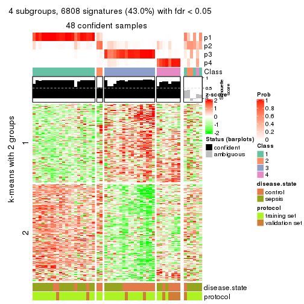
get_signatures(res, k = 5)
get_signatures(res, k = 6)
Signature heatmaps where rows are not scaled:
get_signatures(res, k = 2, scale_rows = FALSE)
get_signatures(res, k = 3, scale_rows = FALSE)
get_signatures(res, k = 4, scale_rows = FALSE)
get_signatures(res, k = 5, scale_rows = FALSE)
get_signatures(res, k = 6, scale_rows = FALSE)
Compare the overlap of signatures from different k:
compare_signatures(res)
get_signature() returns a data frame invisibly. TO get the list of signatures, the function
call should be assigned to a variable explicitly. In following code, if plot argument is set
to FALSE, no heatmap is plotted while only the differential analysis is performed.
# code only for demonstration
tb = get_signature(res, k = ..., plot = FALSE)
An example of the output of tb is:
#> which_row fdr mean_1 mean_2 scaled_mean_1 scaled_mean_2 km
#> 1 38 0.042760348 8.373488 9.131774 -0.5533452 0.5164555 1
#> 2 40 0.018707592 7.106213 8.469186 -0.6173731 0.5762149 1
#> 3 55 0.019134737 10.221463 11.207825 -0.6159697 0.5749050 1
#> 4 59 0.006059896 5.921854 7.869574 -0.6899429 0.6439467 1
#> 5 60 0.018055526 8.928898 10.211722 -0.6204761 0.5791110 1
#> 6 98 0.009384629 15.714769 14.887706 0.6635654 -0.6193277 2
...
The columns in tb are:
which_row: row indices corresponding to the input matrix.fdr: FDR for the differential test. mean_x: The mean value in group x.scaled_mean_x: The mean value in group x after rows are scaled.km: Row groups if k-means clustering is applied to rows.UMAP plot which shows how samples are separated.
dimension_reduction(res, k = 2, method = "UMAP")
dimension_reduction(res, k = 3, method = "UMAP")
dimension_reduction(res, k = 4, method = "UMAP")
dimension_reduction(res, k = 5, method = "UMAP")
dimension_reduction(res, k = 6, method = "UMAP")

Following heatmap shows how subgroups are split when increasing k:
collect_classes(res)
Test correlation between subgroups and known annotations. If the known annotation is numeric, one-way ANOVA test is applied, and if the known annotation is discrete, chi-squared contingency table test is applied.
test_to_known_factors(res)
#> n disease.state(p) protocol(p) k
#> CV:skmeans 54 0.02769 0.29327 2
#> CV:skmeans 53 0.05745 0.00851 3
#> CV:skmeans 48 0.00823 0.00663 4
#> CV:skmeans 40 0.00140 0.00756 5
#> CV:skmeans 40 0.00136 0.01661 6
If matrix rows can be associated to genes, consider to use GO_Enrichment(res,
...) to perform function enrichment for the signature genes.
The object with results only for a single top-value method and a single partition method can be extracted as:
res = res_list["CV", "pam"]
# you can also extract it by
# res = res_list["CV:pam"]
A summary of res and all the functions that can be applied to it:
res
#> A 'ConsensusPartition' object with k = 2, 3, 4, 5, 6.
#> On a matrix with 15837 rows and 54 columns.
#> Top rows (1000, 2000, 3000, 4000, 5000) are extracted by 'CV' method.
#> Subgroups are detected by 'pam' method.
#> Performed in total 1250 partitions by row resampling.
#> Best k for subgroups seems to be 2.
#>
#> Following methods can be applied to this 'ConsensusPartition' object:
#> [1] "cola_report" "collect_classes" "collect_plots"
#> [4] "collect_stats" "colnames" "compare_signatures"
#> [7] "consensus_heatmap" "dimension_reduction" "functional_enrichment"
#> [10] "get_anno_col" "get_anno" "get_classes"
#> [13] "get_consensus" "get_matrix" "get_membership"
#> [16] "get_param" "get_signatures" "get_stats"
#> [19] "is_best_k" "is_stable_k" "membership_heatmap"
#> [22] "ncol" "nrow" "plot_ecdf"
#> [25] "rownames" "select_partition_number" "show"
#> [28] "suggest_best_k" "test_to_known_factors"
collect_plots() function collects all the plots made from res for all k (number of partitions)
into one single page to provide an easy and fast comparison between different k.
collect_plots(res)
The plots are:
k and the heatmap of
predicted classes for each k.k.k.k.All the plots in panels can be made by individual functions and they are plotted later in this section.
select_partition_number() produces several plots showing different
statistics for choosing “optimized” k. There are following statistics:
k;k, the area increased is defined as \(A_k - A_{k-1}\).The detailed explanations of these statistics can be found in the cola vignette.
Generally speaking, lower PAC score, higher mean silhouette score or higher
concordance corresponds to better partition. Rand index and Jaccard index
measure how similar the current partition is compared to partition with k-1.
If they are too similar, we won't accept k is better than k-1.
select_partition_number(res)
The numeric values for all these statistics can be obtained by get_stats().
get_stats(res)
#> k 1-PAC mean_silhouette concordance area_increased Rand Jaccard
#> 2 2 1.000 0.973 0.988 0.4890 0.508 0.508
#> 3 3 0.816 0.871 0.948 0.2536 0.878 0.759
#> 4 4 0.654 0.698 0.828 0.1165 0.933 0.826
#> 5 5 0.725 0.766 0.881 0.0944 0.915 0.738
#> 6 6 0.744 0.729 0.860 0.0356 0.964 0.851
suggest_best_k() suggests the best \(k\) based on these statistics. The rules are as follows:
NA.suggest_best_k(res)
#> [1] 2
Following shows the table of the partitions (You need to click the show/hide
code output link to see it). The membership matrix (columns with name p*)
is inferred by
clue::cl_consensus()
function with the SE method. Basically the value in the membership matrix
represents the probability to belong to a certain group. The finall class
label for an item is determined with the group with highest probability it
belongs to.
In get_classes() function, the entropy is calculated from the membership
matrix and the silhouette score is calculated from the consensus matrix.
cbind(get_classes(res, k = 2), get_membership(res, k = 2))
#> class entropy silhouette p1 p2
#> GSM134895 1 0.1184 0.962 0.984 0.016
#> GSM134896 2 0.0000 0.996 0.000 1.000
#> GSM134897 2 0.0000 0.996 0.000 1.000
#> GSM134898 2 0.0000 0.996 0.000 1.000
#> GSM134905 2 0.0000 0.996 0.000 1.000
#> GSM135018 2 0.0000 0.996 0.000 1.000
#> GSM135674 2 0.0000 0.996 0.000 1.000
#> GSM135683 2 0.0000 0.996 0.000 1.000
#> GSM135685 2 0.0000 0.996 0.000 1.000
#> GSM135699 1 0.0000 0.974 1.000 0.000
#> GSM135019 2 0.0000 0.996 0.000 1.000
#> GSM135026 2 0.0672 0.989 0.008 0.992
#> GSM135033 2 0.0000 0.996 0.000 1.000
#> GSM135042 1 0.9170 0.520 0.668 0.332
#> GSM135057 2 0.0000 0.996 0.000 1.000
#> GSM135068 1 0.0000 0.974 1.000 0.000
#> GSM135071 2 0.0000 0.996 0.000 1.000
#> GSM135078 2 0.0000 0.996 0.000 1.000
#> GSM135163 2 0.0000 0.996 0.000 1.000
#> GSM135166 2 0.0000 0.996 0.000 1.000
#> GSM135223 2 0.0000 0.996 0.000 1.000
#> GSM135224 2 0.0000 0.996 0.000 1.000
#> GSM135228 1 0.0000 0.974 1.000 0.000
#> GSM135262 1 0.0000 0.974 1.000 0.000
#> GSM135263 2 0.0000 0.996 0.000 1.000
#> GSM135279 2 0.0000 0.996 0.000 1.000
#> GSM135661 1 0.0000 0.974 1.000 0.000
#> GSM135662 2 0.0000 0.996 0.000 1.000
#> GSM135663 2 0.0000 0.996 0.000 1.000
#> GSM135664 2 0.0000 0.996 0.000 1.000
#> GSM135665 1 0.0000 0.974 1.000 0.000
#> GSM135666 1 0.0376 0.972 0.996 0.004
#> GSM135668 2 0.4690 0.885 0.100 0.900
#> GSM135670 1 0.0000 0.974 1.000 0.000
#> GSM135671 1 0.0000 0.974 1.000 0.000
#> GSM135675 1 0.6801 0.783 0.820 0.180
#> GSM135676 1 0.0000 0.974 1.000 0.000
#> GSM135677 1 0.0000 0.974 1.000 0.000
#> GSM135679 1 0.0376 0.972 0.996 0.004
#> GSM135680 2 0.0000 0.996 0.000 1.000
#> GSM135681 2 0.0000 0.996 0.000 1.000
#> GSM135682 2 0.0000 0.996 0.000 1.000
#> GSM135687 1 0.0000 0.974 1.000 0.000
#> GSM135688 1 0.0000 0.974 1.000 0.000
#> GSM135689 1 0.0000 0.974 1.000 0.000
#> GSM135693 2 0.0000 0.996 0.000 1.000
#> GSM135694 1 0.0000 0.974 1.000 0.000
#> GSM135695 1 0.0000 0.974 1.000 0.000
#> GSM135696 1 0.0000 0.974 1.000 0.000
#> GSM135697 1 0.0000 0.974 1.000 0.000
#> GSM135698 2 0.0000 0.996 0.000 1.000
#> GSM135700 2 0.0000 0.996 0.000 1.000
#> GSM135702 2 0.0000 0.996 0.000 1.000
#> GSM135703 2 0.0000 0.996 0.000 1.000
cbind(get_classes(res, k = 3), get_membership(res, k = 3))
#> class entropy silhouette p1 p2 p3
#> GSM134895 1 0.4974 0.687 0.764 0.000 0.236
#> GSM134896 3 0.0592 0.813 0.000 0.012 0.988
#> GSM134897 2 0.6079 0.248 0.000 0.612 0.388
#> GSM134898 2 0.6079 0.248 0.000 0.612 0.388
#> GSM134905 3 0.0000 0.811 0.000 0.000 1.000
#> GSM135018 3 0.3551 0.790 0.000 0.132 0.868
#> GSM135674 2 0.0000 0.946 0.000 1.000 0.000
#> GSM135683 2 0.0592 0.938 0.000 0.988 0.012
#> GSM135685 3 0.5733 0.558 0.000 0.324 0.676
#> GSM135699 1 0.0000 0.956 1.000 0.000 0.000
#> GSM135019 3 0.6126 0.410 0.000 0.400 0.600
#> GSM135026 2 0.0424 0.940 0.008 0.992 0.000
#> GSM135033 3 0.4235 0.770 0.000 0.176 0.824
#> GSM135042 1 0.6282 0.457 0.664 0.324 0.012
#> GSM135057 2 0.0592 0.938 0.000 0.988 0.012
#> GSM135068 1 0.0000 0.956 1.000 0.000 0.000
#> GSM135071 2 0.0000 0.946 0.000 1.000 0.000
#> GSM135078 2 0.0000 0.946 0.000 1.000 0.000
#> GSM135163 2 0.0592 0.938 0.000 0.988 0.012
#> GSM135166 3 0.0000 0.811 0.000 0.000 1.000
#> GSM135223 2 0.1753 0.907 0.000 0.952 0.048
#> GSM135224 2 0.1643 0.912 0.000 0.956 0.044
#> GSM135228 1 0.0000 0.956 1.000 0.000 0.000
#> GSM135262 1 0.0000 0.956 1.000 0.000 0.000
#> GSM135263 2 0.0000 0.946 0.000 1.000 0.000
#> GSM135279 2 0.0000 0.946 0.000 1.000 0.000
#> GSM135661 1 0.0000 0.956 1.000 0.000 0.000
#> GSM135662 2 0.0000 0.946 0.000 1.000 0.000
#> GSM135663 2 0.0000 0.946 0.000 1.000 0.000
#> GSM135664 2 0.0000 0.946 0.000 1.000 0.000
#> GSM135665 1 0.0000 0.956 1.000 0.000 0.000
#> GSM135666 1 0.0424 0.950 0.992 0.008 0.000
#> GSM135668 2 0.2959 0.817 0.100 0.900 0.000
#> GSM135670 1 0.0000 0.956 1.000 0.000 0.000
#> GSM135671 1 0.0000 0.956 1.000 0.000 0.000
#> GSM135675 1 0.4291 0.732 0.820 0.180 0.000
#> GSM135676 1 0.0000 0.956 1.000 0.000 0.000
#> GSM135677 1 0.0000 0.956 1.000 0.000 0.000
#> GSM135679 1 0.0424 0.950 0.992 0.008 0.000
#> GSM135680 2 0.0000 0.946 0.000 1.000 0.000
#> GSM135681 2 0.0000 0.946 0.000 1.000 0.000
#> GSM135682 2 0.0000 0.946 0.000 1.000 0.000
#> GSM135687 1 0.0000 0.956 1.000 0.000 0.000
#> GSM135688 1 0.0000 0.956 1.000 0.000 0.000
#> GSM135689 1 0.0000 0.956 1.000 0.000 0.000
#> GSM135693 2 0.0237 0.944 0.000 0.996 0.004
#> GSM135694 1 0.0000 0.956 1.000 0.000 0.000
#> GSM135695 1 0.0000 0.956 1.000 0.000 0.000
#> GSM135696 1 0.0000 0.956 1.000 0.000 0.000
#> GSM135697 1 0.0000 0.956 1.000 0.000 0.000
#> GSM135698 2 0.0000 0.946 0.000 1.000 0.000
#> GSM135700 2 0.0000 0.946 0.000 1.000 0.000
#> GSM135702 2 0.0000 0.946 0.000 1.000 0.000
#> GSM135703 2 0.0000 0.946 0.000 1.000 0.000
cbind(get_classes(res, k = 4), get_membership(res, k = 4))
#> class entropy silhouette p1 p2 p3 p4
#> GSM134895 1 0.5664 0.413 0.720 0.000 0.156 0.124
#> GSM134896 3 0.0000 0.775 0.000 0.000 1.000 0.000
#> GSM134897 2 0.4855 0.361 0.000 0.600 0.400 0.000
#> GSM134898 2 0.4855 0.361 0.000 0.600 0.400 0.000
#> GSM134905 3 0.0000 0.775 0.000 0.000 1.000 0.000
#> GSM135018 3 0.2868 0.777 0.000 0.136 0.864 0.000
#> GSM135674 2 0.0000 0.866 0.000 1.000 0.000 0.000
#> GSM135683 2 0.2868 0.751 0.000 0.864 0.000 0.136
#> GSM135685 3 0.4477 0.501 0.000 0.312 0.688 0.000
#> GSM135699 4 0.5000 1.000 0.496 0.000 0.000 0.504
#> GSM135019 3 0.6773 0.590 0.000 0.276 0.588 0.136
#> GSM135026 2 0.0336 0.862 0.008 0.992 0.000 0.000
#> GSM135033 3 0.5630 0.770 0.000 0.140 0.724 0.136
#> GSM135042 1 0.6704 0.276 0.600 0.264 0.000 0.136
#> GSM135057 2 0.4697 0.602 0.000 0.644 0.000 0.356
#> GSM135068 1 0.4967 -0.880 0.548 0.000 0.000 0.452
#> GSM135071 2 0.0000 0.866 0.000 1.000 0.000 0.000
#> GSM135078 2 0.0000 0.866 0.000 1.000 0.000 0.000
#> GSM135163 2 0.4406 0.654 0.000 0.700 0.000 0.300
#> GSM135166 3 0.2921 0.765 0.000 0.000 0.860 0.140
#> GSM135223 2 0.5630 0.556 0.000 0.608 0.032 0.360
#> GSM135224 2 0.5452 0.568 0.000 0.616 0.024 0.360
#> GSM135228 1 0.0000 0.741 1.000 0.000 0.000 0.000
#> GSM135262 1 0.0000 0.741 1.000 0.000 0.000 0.000
#> GSM135263 2 0.0188 0.864 0.000 0.996 0.000 0.004
#> GSM135279 2 0.0000 0.866 0.000 1.000 0.000 0.000
#> GSM135661 1 0.0000 0.741 1.000 0.000 0.000 0.000
#> GSM135662 2 0.0000 0.866 0.000 1.000 0.000 0.000
#> GSM135663 2 0.0000 0.866 0.000 1.000 0.000 0.000
#> GSM135664 2 0.0000 0.866 0.000 1.000 0.000 0.000
#> GSM135665 1 0.4843 -0.729 0.604 0.000 0.000 0.396
#> GSM135666 1 0.0336 0.735 0.992 0.008 0.000 0.000
#> GSM135668 2 0.2345 0.783 0.100 0.900 0.000 0.000
#> GSM135670 1 0.0000 0.741 1.000 0.000 0.000 0.000
#> GSM135671 4 0.5000 1.000 0.496 0.000 0.000 0.504
#> GSM135675 1 0.3400 0.481 0.820 0.180 0.000 0.000
#> GSM135676 1 0.0000 0.741 1.000 0.000 0.000 0.000
#> GSM135677 1 0.0000 0.741 1.000 0.000 0.000 0.000
#> GSM135679 1 0.0336 0.735 0.992 0.008 0.000 0.000
#> GSM135680 2 0.2216 0.822 0.000 0.908 0.000 0.092
#> GSM135681 2 0.0000 0.866 0.000 1.000 0.000 0.000
#> GSM135682 2 0.0000 0.866 0.000 1.000 0.000 0.000
#> GSM135687 1 0.0000 0.741 1.000 0.000 0.000 0.000
#> GSM135688 4 0.5000 1.000 0.496 0.000 0.000 0.504
#> GSM135689 1 0.0000 0.741 1.000 0.000 0.000 0.000
#> GSM135693 2 0.4477 0.649 0.000 0.688 0.000 0.312
#> GSM135694 4 0.5000 1.000 0.496 0.000 0.000 0.504
#> GSM135695 4 0.5000 1.000 0.496 0.000 0.000 0.504
#> GSM135696 1 0.1211 0.679 0.960 0.000 0.000 0.040
#> GSM135697 4 0.5000 1.000 0.496 0.000 0.000 0.504
#> GSM135698 2 0.0000 0.866 0.000 1.000 0.000 0.000
#> GSM135700 2 0.0188 0.865 0.000 0.996 0.000 0.004
#> GSM135702 2 0.0000 0.866 0.000 1.000 0.000 0.000
#> GSM135703 2 0.0000 0.866 0.000 1.000 0.000 0.000
cbind(get_classes(res, k = 5), get_membership(res, k = 5))
#> class entropy silhouette p1 p2 p3 p4 p5
#> GSM134895 1 0.3796 0.561 0.700 0.000 0.300 0.000 0.000
#> GSM134896 3 0.3109 0.688 0.000 0.000 0.800 0.000 0.200
#> GSM134897 2 0.5902 0.326 0.000 0.600 0.208 0.000 0.192
#> GSM134898 2 0.5902 0.326 0.000 0.600 0.208 0.000 0.192
#> GSM134905 3 0.3039 0.688 0.000 0.000 0.808 0.000 0.192
#> GSM135018 3 0.3810 0.663 0.000 0.176 0.788 0.000 0.036
#> GSM135674 2 0.0000 0.914 0.000 1.000 0.000 0.000 0.000
#> GSM135683 2 0.3318 0.691 0.000 0.800 0.192 0.000 0.008
#> GSM135685 3 0.6433 0.488 0.000 0.312 0.488 0.000 0.200
#> GSM135699 5 0.3109 0.898 0.200 0.000 0.000 0.000 0.800
#> GSM135019 3 0.3487 0.541 0.000 0.212 0.780 0.000 0.008
#> GSM135026 2 0.0290 0.908 0.008 0.992 0.000 0.000 0.000
#> GSM135033 3 0.2471 0.677 0.000 0.136 0.864 0.000 0.000
#> GSM135042 1 0.5430 0.502 0.660 0.148 0.192 0.000 0.000
#> GSM135057 4 0.0162 0.844 0.000 0.004 0.000 0.996 0.000
#> GSM135068 5 0.4307 0.457 0.496 0.000 0.000 0.000 0.504
#> GSM135071 2 0.0880 0.891 0.000 0.968 0.000 0.032 0.000
#> GSM135078 2 0.0000 0.914 0.000 1.000 0.000 0.000 0.000
#> GSM135163 4 0.5361 0.591 0.000 0.144 0.188 0.668 0.000
#> GSM135166 3 0.0162 0.662 0.000 0.000 0.996 0.004 0.000
#> GSM135223 4 0.0000 0.844 0.000 0.000 0.000 1.000 0.000
#> GSM135224 4 0.0000 0.844 0.000 0.000 0.000 1.000 0.000
#> GSM135228 1 0.0000 0.861 1.000 0.000 0.000 0.000 0.000
#> GSM135262 1 0.0000 0.861 1.000 0.000 0.000 0.000 0.000
#> GSM135263 2 0.0162 0.912 0.000 0.996 0.004 0.000 0.000
#> GSM135279 2 0.0000 0.914 0.000 1.000 0.000 0.000 0.000
#> GSM135661 1 0.0000 0.861 1.000 0.000 0.000 0.000 0.000
#> GSM135662 2 0.0000 0.914 0.000 1.000 0.000 0.000 0.000
#> GSM135663 2 0.0000 0.914 0.000 1.000 0.000 0.000 0.000
#> GSM135664 2 0.0000 0.914 0.000 1.000 0.000 0.000 0.000
#> GSM135665 1 0.4182 -0.225 0.600 0.000 0.000 0.000 0.400
#> GSM135666 1 0.0290 0.856 0.992 0.008 0.000 0.000 0.000
#> GSM135668 2 0.1851 0.823 0.088 0.912 0.000 0.000 0.000
#> GSM135670 1 0.0000 0.861 1.000 0.000 0.000 0.000 0.000
#> GSM135671 5 0.3109 0.898 0.200 0.000 0.000 0.000 0.800
#> GSM135675 1 0.2929 0.642 0.820 0.180 0.000 0.000 0.000
#> GSM135676 1 0.0000 0.861 1.000 0.000 0.000 0.000 0.000
#> GSM135677 1 0.0000 0.861 1.000 0.000 0.000 0.000 0.000
#> GSM135679 1 0.0290 0.856 0.992 0.008 0.000 0.000 0.000
#> GSM135680 2 0.3242 0.678 0.000 0.784 0.000 0.216 0.000
#> GSM135681 2 0.0000 0.914 0.000 1.000 0.000 0.000 0.000
#> GSM135682 2 0.0000 0.914 0.000 1.000 0.000 0.000 0.000
#> GSM135687 1 0.0000 0.861 1.000 0.000 0.000 0.000 0.000
#> GSM135688 5 0.3109 0.898 0.200 0.000 0.000 0.000 0.800
#> GSM135689 1 0.0000 0.861 1.000 0.000 0.000 0.000 0.000
#> GSM135693 4 0.2690 0.729 0.000 0.156 0.000 0.844 0.000
#> GSM135694 5 0.3109 0.898 0.200 0.000 0.000 0.000 0.800
#> GSM135695 5 0.4045 0.747 0.356 0.000 0.000 0.000 0.644
#> GSM135696 1 0.1043 0.820 0.960 0.000 0.000 0.000 0.040
#> GSM135697 5 0.3109 0.898 0.200 0.000 0.000 0.000 0.800
#> GSM135698 2 0.0000 0.914 0.000 1.000 0.000 0.000 0.000
#> GSM135700 2 0.0290 0.910 0.000 0.992 0.000 0.008 0.000
#> GSM135702 2 0.0000 0.914 0.000 1.000 0.000 0.000 0.000
#> GSM135703 2 0.0000 0.914 0.000 1.000 0.000 0.000 0.000
cbind(get_classes(res, k = 6), get_membership(res, k = 6))
#> class entropy silhouette p1 p2 p3 p4 p5 p6
#> GSM134895 6 0.5990 0.204 0.296 0.000 0.264 0.000 0.000 0.440
#> GSM134896 3 0.3221 0.529 0.000 0.000 0.736 0.000 0.000 0.264
#> GSM134897 6 0.4545 0.529 0.000 0.176 0.124 0.000 0.000 0.700
#> GSM134898 6 0.4513 0.530 0.000 0.172 0.124 0.000 0.000 0.704
#> GSM134905 3 0.3266 0.526 0.000 0.000 0.728 0.000 0.000 0.272
#> GSM135018 3 0.3641 0.438 0.000 0.224 0.748 0.000 0.000 0.028
#> GSM135674 2 0.0000 0.920 0.000 1.000 0.000 0.000 0.000 0.000
#> GSM135683 2 0.5296 0.344 0.000 0.588 0.260 0.000 0.000 0.152
#> GSM135685 3 0.5973 0.106 0.000 0.228 0.412 0.000 0.000 0.360
#> GSM135699 5 0.2793 0.890 0.200 0.000 0.000 0.000 0.800 0.000
#> GSM135019 3 0.2362 0.466 0.000 0.136 0.860 0.000 0.000 0.004
#> GSM135026 2 0.4500 0.604 0.000 0.708 0.000 0.000 0.144 0.148
#> GSM135033 3 0.2941 0.389 0.000 0.000 0.780 0.000 0.000 0.220
#> GSM135042 1 0.5010 0.348 0.636 0.108 0.252 0.000 0.000 0.004
#> GSM135057 4 0.0146 0.838 0.000 0.004 0.000 0.996 0.000 0.000
#> GSM135068 5 0.3868 0.450 0.496 0.000 0.000 0.000 0.504 0.000
#> GSM135071 2 0.1151 0.899 0.000 0.956 0.012 0.032 0.000 0.000
#> GSM135078 2 0.0363 0.917 0.000 0.988 0.012 0.000 0.000 0.000
#> GSM135163 4 0.4755 0.580 0.000 0.088 0.244 0.664 0.000 0.004
#> GSM135166 3 0.0547 0.545 0.000 0.000 0.980 0.000 0.000 0.020
#> GSM135223 4 0.0000 0.839 0.000 0.000 0.000 1.000 0.000 0.000
#> GSM135224 4 0.0000 0.839 0.000 0.000 0.000 1.000 0.000 0.000
#> GSM135228 1 0.0000 0.882 1.000 0.000 0.000 0.000 0.000 0.000
#> GSM135262 1 0.0000 0.882 1.000 0.000 0.000 0.000 0.000 0.000
#> GSM135263 2 0.1349 0.882 0.000 0.940 0.004 0.000 0.056 0.000
#> GSM135279 2 0.0363 0.917 0.000 0.988 0.012 0.000 0.000 0.000
#> GSM135661 1 0.0000 0.882 1.000 0.000 0.000 0.000 0.000 0.000
#> GSM135662 2 0.0458 0.917 0.000 0.984 0.016 0.000 0.000 0.000
#> GSM135663 2 0.0363 0.917 0.000 0.988 0.012 0.000 0.000 0.000
#> GSM135664 2 0.0000 0.920 0.000 1.000 0.000 0.000 0.000 0.000
#> GSM135665 1 0.3756 -0.220 0.600 0.000 0.000 0.000 0.400 0.000
#> GSM135666 1 0.0260 0.876 0.992 0.008 0.000 0.000 0.000 0.000
#> GSM135668 2 0.1663 0.829 0.088 0.912 0.000 0.000 0.000 0.000
#> GSM135670 1 0.0000 0.882 1.000 0.000 0.000 0.000 0.000 0.000
#> GSM135671 5 0.2793 0.890 0.200 0.000 0.000 0.000 0.800 0.000
#> GSM135675 1 0.2631 0.627 0.820 0.180 0.000 0.000 0.000 0.000
#> GSM135676 1 0.0000 0.882 1.000 0.000 0.000 0.000 0.000 0.000
#> GSM135677 1 0.0000 0.882 1.000 0.000 0.000 0.000 0.000 0.000
#> GSM135679 1 0.0260 0.876 0.992 0.008 0.000 0.000 0.000 0.000
#> GSM135680 2 0.3133 0.690 0.000 0.780 0.008 0.212 0.000 0.000
#> GSM135681 2 0.0000 0.920 0.000 1.000 0.000 0.000 0.000 0.000
#> GSM135682 2 0.0000 0.920 0.000 1.000 0.000 0.000 0.000 0.000
#> GSM135687 1 0.0000 0.882 1.000 0.000 0.000 0.000 0.000 0.000
#> GSM135688 5 0.2793 0.890 0.200 0.000 0.000 0.000 0.800 0.000
#> GSM135689 1 0.0000 0.882 1.000 0.000 0.000 0.000 0.000 0.000
#> GSM135693 4 0.2416 0.707 0.000 0.156 0.000 0.844 0.000 0.000
#> GSM135694 5 0.2793 0.890 0.200 0.000 0.000 0.000 0.800 0.000
#> GSM135695 5 0.3659 0.729 0.364 0.000 0.000 0.000 0.636 0.000
#> GSM135696 1 0.0790 0.848 0.968 0.000 0.000 0.000 0.032 0.000
#> GSM135697 5 0.2793 0.890 0.200 0.000 0.000 0.000 0.800 0.000
#> GSM135698 2 0.0000 0.920 0.000 1.000 0.000 0.000 0.000 0.000
#> GSM135700 2 0.0260 0.918 0.000 0.992 0.000 0.008 0.000 0.000
#> GSM135702 2 0.0000 0.920 0.000 1.000 0.000 0.000 0.000 0.000
#> GSM135703 2 0.0000 0.920 0.000 1.000 0.000 0.000 0.000 0.000
Heatmaps for the consensus matrix. It visualizes the probability of two samples to be in a same group.
consensus_heatmap(res, k = 2)
consensus_heatmap(res, k = 3)
consensus_heatmap(res, k = 4)
consensus_heatmap(res, k = 5)
consensus_heatmap(res, k = 6)
Heatmaps for the membership of samples in all partitions to see how consistent they are:
membership_heatmap(res, k = 2)
membership_heatmap(res, k = 3)
membership_heatmap(res, k = 4)
membership_heatmap(res, k = 5)
membership_heatmap(res, k = 6)
As soon as we have had the classes for columns, we can look for signatures which are significantly different between classes which can be candidate marks for certain classes. Following are the heatmaps for signatures.
Signature heatmaps where rows are scaled:
get_signatures(res, k = 2)
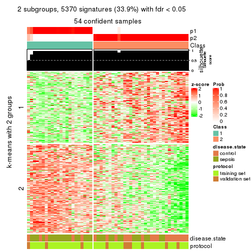
get_signatures(res, k = 3)
get_signatures(res, k = 4)

get_signatures(res, k = 5)
get_signatures(res, k = 6)
Signature heatmaps where rows are not scaled:
get_signatures(res, k = 2, scale_rows = FALSE)
get_signatures(res, k = 3, scale_rows = FALSE)
get_signatures(res, k = 4, scale_rows = FALSE)
get_signatures(res, k = 5, scale_rows = FALSE)
get_signatures(res, k = 6, scale_rows = FALSE)
Compare the overlap of signatures from different k:
compare_signatures(res)
get_signature() returns a data frame invisibly. TO get the list of signatures, the function
call should be assigned to a variable explicitly. In following code, if plot argument is set
to FALSE, no heatmap is plotted while only the differential analysis is performed.
# code only for demonstration
tb = get_signature(res, k = ..., plot = FALSE)
An example of the output of tb is:
#> which_row fdr mean_1 mean_2 scaled_mean_1 scaled_mean_2 km
#> 1 38 0.042760348 8.373488 9.131774 -0.5533452 0.5164555 1
#> 2 40 0.018707592 7.106213 8.469186 -0.6173731 0.5762149 1
#> 3 55 0.019134737 10.221463 11.207825 -0.6159697 0.5749050 1
#> 4 59 0.006059896 5.921854 7.869574 -0.6899429 0.6439467 1
#> 5 60 0.018055526 8.928898 10.211722 -0.6204761 0.5791110 1
#> 6 98 0.009384629 15.714769 14.887706 0.6635654 -0.6193277 2
...
The columns in tb are:
which_row: row indices corresponding to the input matrix.fdr: FDR for the differential test. mean_x: The mean value in group x.scaled_mean_x: The mean value in group x after rows are scaled.km: Row groups if k-means clustering is applied to rows.UMAP plot which shows how samples are separated.
dimension_reduction(res, k = 2, method = "UMAP")
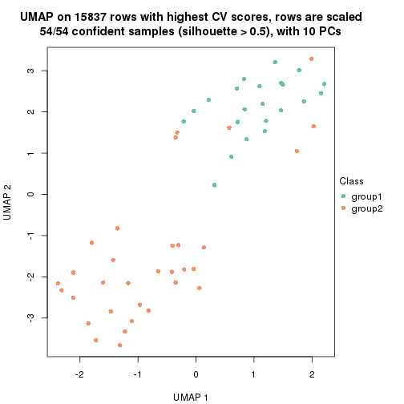
dimension_reduction(res, k = 3, method = "UMAP")
dimension_reduction(res, k = 4, method = "UMAP")
dimension_reduction(res, k = 5, method = "UMAP")
dimension_reduction(res, k = 6, method = "UMAP")
Following heatmap shows how subgroups are split when increasing k:
collect_classes(res)
Test correlation between subgroups and known annotations. If the known annotation is numeric, one-way ANOVA test is applied, and if the known annotation is discrete, chi-squared contingency table test is applied.
test_to_known_factors(res)
#> n disease.state(p) protocol(p) k
#> CV:pam 54 0.03018 0.68232 2
#> CV:pam 50 0.00150 0.35906 3
#> CV:pam 47 0.00092 0.37706 4
#> CV:pam 49 0.00195 0.00510 5
#> CV:pam 45 0.00139 0.00527 6
If matrix rows can be associated to genes, consider to use GO_Enrichment(res,
...) to perform function enrichment for the signature genes.
The object with results only for a single top-value method and a single partition method can be extracted as:
res = res_list["CV", "mclust"]
# you can also extract it by
# res = res_list["CV:mclust"]
A summary of res and all the functions that can be applied to it:
res
#> A 'ConsensusPartition' object with k = 2, 3, 4, 5, 6.
#> On a matrix with 15837 rows and 54 columns.
#> Top rows (1000, 2000, 3000, 4000, 5000) are extracted by 'CV' method.
#> Subgroups are detected by 'mclust' method.
#> Performed in total 1250 partitions by row resampling.
#> Best k for subgroups seems to be 5.
#>
#> Following methods can be applied to this 'ConsensusPartition' object:
#> [1] "cola_report" "collect_classes" "collect_plots"
#> [4] "collect_stats" "colnames" "compare_signatures"
#> [7] "consensus_heatmap" "dimension_reduction" "functional_enrichment"
#> [10] "get_anno_col" "get_anno" "get_classes"
#> [13] "get_consensus" "get_matrix" "get_membership"
#> [16] "get_param" "get_signatures" "get_stats"
#> [19] "is_best_k" "is_stable_k" "membership_heatmap"
#> [22] "ncol" "nrow" "plot_ecdf"
#> [25] "rownames" "select_partition_number" "show"
#> [28] "suggest_best_k" "test_to_known_factors"
collect_plots() function collects all the plots made from res for all k (number of partitions)
into one single page to provide an easy and fast comparison between different k.
collect_plots(res)
The plots are:
k and the heatmap of
predicted classes for each k.k.k.k.All the plots in panels can be made by individual functions and they are plotted later in this section.
select_partition_number() produces several plots showing different
statistics for choosing “optimized” k. There are following statistics:
k;k, the area increased is defined as \(A_k - A_{k-1}\).The detailed explanations of these statistics can be found in the cola vignette.
Generally speaking, lower PAC score, higher mean silhouette score or higher
concordance corresponds to better partition. Rand index and Jaccard index
measure how similar the current partition is compared to partition with k-1.
If they are too similar, we won't accept k is better than k-1.
select_partition_number(res)
The numeric values for all these statistics can be obtained by get_stats().
get_stats(res)
#> k 1-PAC mean_silhouette concordance area_increased Rand Jaccard
#> 2 2 0.468 0.863 0.895 0.4145 0.591 0.591
#> 3 3 0.620 0.752 0.883 0.5845 0.690 0.493
#> 4 4 0.751 0.778 0.894 0.0666 0.848 0.606
#> 5 5 0.740 0.798 0.865 0.0994 0.911 0.705
#> 6 6 0.767 0.796 0.863 0.0505 0.953 0.789
suggest_best_k() suggests the best \(k\) based on these statistics. The rules are as follows:
NA.suggest_best_k(res)
#> [1] 5
Following shows the table of the partitions (You need to click the show/hide
code output link to see it). The membership matrix (columns with name p*)
is inferred by
clue::cl_consensus()
function with the SE method. Basically the value in the membership matrix
represents the probability to belong to a certain group. The finall class
label for an item is determined with the group with highest probability it
belongs to.
In get_classes() function, the entropy is calculated from the membership
matrix and the silhouette score is calculated from the consensus matrix.
cbind(get_classes(res, k = 2), get_membership(res, k = 2))
#> class entropy silhouette p1 p2
#> GSM134895 2 0.000 0.841 0.000 1.000
#> GSM134896 2 0.000 0.841 0.000 1.000
#> GSM134897 2 0.000 0.841 0.000 1.000
#> GSM134898 2 0.000 0.841 0.000 1.000
#> GSM134905 2 0.000 0.841 0.000 1.000
#> GSM135018 2 0.680 0.885 0.180 0.820
#> GSM135674 2 0.680 0.885 0.180 0.820
#> GSM135683 2 0.000 0.841 0.000 1.000
#> GSM135685 2 0.000 0.841 0.000 1.000
#> GSM135699 1 0.494 0.854 0.892 0.108
#> GSM135019 2 0.000 0.841 0.000 1.000
#> GSM135026 2 0.680 0.885 0.180 0.820
#> GSM135033 2 0.000 0.841 0.000 1.000
#> GSM135042 2 0.000 0.841 0.000 1.000
#> GSM135057 2 0.358 0.867 0.068 0.932
#> GSM135068 1 0.000 0.973 1.000 0.000
#> GSM135071 2 0.680 0.885 0.180 0.820
#> GSM135078 2 0.680 0.885 0.180 0.820
#> GSM135163 2 0.671 0.885 0.176 0.824
#> GSM135166 2 0.000 0.841 0.000 1.000
#> GSM135223 2 0.358 0.867 0.068 0.932
#> GSM135224 2 0.358 0.867 0.068 0.932
#> GSM135228 1 0.000 0.973 1.000 0.000
#> GSM135262 1 0.000 0.973 1.000 0.000
#> GSM135263 2 0.680 0.885 0.180 0.820
#> GSM135279 2 0.680 0.885 0.180 0.820
#> GSM135661 1 0.000 0.973 1.000 0.000
#> GSM135662 2 0.680 0.885 0.180 0.820
#> GSM135663 2 0.680 0.885 0.180 0.820
#> GSM135664 2 0.680 0.885 0.180 0.820
#> GSM135665 1 0.000 0.973 1.000 0.000
#> GSM135666 2 0.311 0.863 0.056 0.944
#> GSM135668 2 0.680 0.885 0.180 0.820
#> GSM135670 2 0.680 0.885 0.180 0.820
#> GSM135671 1 0.000 0.973 1.000 0.000
#> GSM135675 2 1.000 0.324 0.496 0.504
#> GSM135676 2 1.000 0.344 0.488 0.512
#> GSM135677 1 0.000 0.973 1.000 0.000
#> GSM135679 2 0.997 0.403 0.468 0.532
#> GSM135680 2 0.680 0.885 0.180 0.820
#> GSM135681 2 0.680 0.885 0.180 0.820
#> GSM135682 2 0.680 0.885 0.180 0.820
#> GSM135687 1 0.000 0.973 1.000 0.000
#> GSM135688 1 0.615 0.786 0.848 0.152
#> GSM135689 1 0.000 0.973 1.000 0.000
#> GSM135693 2 0.358 0.867 0.068 0.932
#> GSM135694 1 0.000 0.973 1.000 0.000
#> GSM135695 1 0.118 0.961 0.984 0.016
#> GSM135696 1 0.163 0.954 0.976 0.024
#> GSM135697 1 0.000 0.973 1.000 0.000
#> GSM135698 2 0.680 0.885 0.180 0.820
#> GSM135700 2 0.680 0.885 0.180 0.820
#> GSM135702 2 0.680 0.885 0.180 0.820
#> GSM135703 2 0.680 0.885 0.180 0.820
cbind(get_classes(res, k = 3), get_membership(res, k = 3))
#> class entropy silhouette p1 p2 p3
#> GSM134895 3 0.0424 0.817 0.008 0.000 0.992
#> GSM134896 3 0.0000 0.820 0.000 0.000 1.000
#> GSM134897 3 0.0000 0.820 0.000 0.000 1.000
#> GSM134898 3 0.0000 0.820 0.000 0.000 1.000
#> GSM134905 3 0.0000 0.820 0.000 0.000 1.000
#> GSM135018 2 0.1315 0.886 0.020 0.972 0.008
#> GSM135674 2 0.0592 0.890 0.012 0.988 0.000
#> GSM135683 3 0.0000 0.820 0.000 0.000 1.000
#> GSM135685 3 0.0000 0.820 0.000 0.000 1.000
#> GSM135699 1 0.2063 0.863 0.948 0.008 0.044
#> GSM135019 3 0.0000 0.820 0.000 0.000 1.000
#> GSM135026 2 0.0424 0.890 0.008 0.992 0.000
#> GSM135033 3 0.0000 0.820 0.000 0.000 1.000
#> GSM135042 3 0.0424 0.817 0.008 0.000 0.992
#> GSM135057 3 0.9112 0.447 0.168 0.308 0.524
#> GSM135068 1 0.0000 0.885 1.000 0.000 0.000
#> GSM135071 2 0.0475 0.888 0.004 0.992 0.004
#> GSM135078 2 0.2846 0.863 0.056 0.924 0.020
#> GSM135163 3 0.9409 0.273 0.180 0.360 0.460
#> GSM135166 3 0.0000 0.820 0.000 0.000 1.000
#> GSM135223 3 0.9112 0.447 0.168 0.308 0.524
#> GSM135224 3 0.9112 0.447 0.168 0.308 0.524
#> GSM135228 1 0.0000 0.885 1.000 0.000 0.000
#> GSM135262 1 0.0000 0.885 1.000 0.000 0.000
#> GSM135263 2 0.2496 0.854 0.068 0.928 0.004
#> GSM135279 2 0.0000 0.886 0.000 1.000 0.000
#> GSM135661 1 0.0000 0.885 1.000 0.000 0.000
#> GSM135662 2 0.0424 0.888 0.008 0.992 0.000
#> GSM135663 2 0.0237 0.888 0.004 0.996 0.000
#> GSM135664 2 0.0424 0.890 0.008 0.992 0.000
#> GSM135665 1 0.1643 0.880 0.956 0.044 0.000
#> GSM135666 3 0.5529 0.520 0.296 0.000 0.704
#> GSM135668 2 0.0592 0.890 0.012 0.988 0.000
#> GSM135670 2 0.0592 0.890 0.012 0.988 0.000
#> GSM135671 1 0.1753 0.874 0.952 0.048 0.000
#> GSM135675 1 0.6379 0.440 0.624 0.368 0.008
#> GSM135676 1 0.6941 0.138 0.520 0.464 0.016
#> GSM135677 1 0.0000 0.885 1.000 0.000 0.000
#> GSM135679 2 0.7394 -0.102 0.472 0.496 0.032
#> GSM135680 2 0.7022 0.520 0.056 0.684 0.260
#> GSM135681 2 0.7909 0.504 0.112 0.648 0.240
#> GSM135682 2 0.0747 0.888 0.016 0.984 0.000
#> GSM135687 1 0.0000 0.885 1.000 0.000 0.000
#> GSM135688 1 0.2902 0.844 0.920 0.016 0.064
#> GSM135689 1 0.0000 0.885 1.000 0.000 0.000
#> GSM135693 3 0.9149 0.431 0.168 0.316 0.516
#> GSM135694 1 0.3619 0.819 0.864 0.136 0.000
#> GSM135695 1 0.5178 0.678 0.744 0.256 0.000
#> GSM135696 1 0.3267 0.833 0.884 0.116 0.000
#> GSM135697 1 0.0892 0.884 0.980 0.020 0.000
#> GSM135698 2 0.0237 0.889 0.004 0.996 0.000
#> GSM135700 2 0.7323 0.636 0.196 0.700 0.104
#> GSM135702 2 0.0592 0.890 0.012 0.988 0.000
#> GSM135703 2 0.5816 0.747 0.156 0.788 0.056
cbind(get_classes(res, k = 4), get_membership(res, k = 4))
#> class entropy silhouette p1 p2 p3 p4
#> GSM134895 3 0.0000 0.952 0.000 0.000 1.000 0.000
#> GSM134896 3 0.0000 0.952 0.000 0.000 1.000 0.000
#> GSM134897 3 0.0000 0.952 0.000 0.000 1.000 0.000
#> GSM134898 3 0.0000 0.952 0.000 0.000 1.000 0.000
#> GSM134905 3 0.0779 0.939 0.000 0.004 0.980 0.016
#> GSM135018 2 0.0804 0.895 0.008 0.980 0.000 0.012
#> GSM135674 2 0.2081 0.878 0.000 0.916 0.000 0.084
#> GSM135683 3 0.0000 0.952 0.000 0.000 1.000 0.000
#> GSM135685 3 0.0000 0.952 0.000 0.000 1.000 0.000
#> GSM135699 1 0.0000 0.771 1.000 0.000 0.000 0.000
#> GSM135019 3 0.0000 0.952 0.000 0.000 1.000 0.000
#> GSM135026 2 0.0188 0.899 0.000 0.996 0.000 0.004
#> GSM135033 3 0.0000 0.952 0.000 0.000 1.000 0.000
#> GSM135042 3 0.0000 0.952 0.000 0.000 1.000 0.000
#> GSM135057 4 0.0188 1.000 0.000 0.000 0.004 0.996
#> GSM135068 1 0.0000 0.771 1.000 0.000 0.000 0.000
#> GSM135071 2 0.4869 0.741 0.132 0.780 0.000 0.088
#> GSM135078 2 0.4199 0.740 0.164 0.804 0.000 0.032
#> GSM135163 1 0.7032 0.500 0.584 0.256 0.004 0.156
#> GSM135166 3 0.0779 0.939 0.000 0.004 0.980 0.016
#> GSM135223 4 0.0188 1.000 0.000 0.000 0.004 0.996
#> GSM135224 4 0.0188 1.000 0.000 0.000 0.004 0.996
#> GSM135228 1 0.0000 0.771 1.000 0.000 0.000 0.000
#> GSM135262 1 0.0000 0.771 1.000 0.000 0.000 0.000
#> GSM135263 2 0.2915 0.823 0.080 0.892 0.000 0.028
#> GSM135279 2 0.0000 0.899 0.000 1.000 0.000 0.000
#> GSM135661 1 0.0000 0.771 1.000 0.000 0.000 0.000
#> GSM135662 2 0.2610 0.873 0.012 0.900 0.000 0.088
#> GSM135663 2 0.0000 0.899 0.000 1.000 0.000 0.000
#> GSM135664 2 0.0000 0.899 0.000 1.000 0.000 0.000
#> GSM135665 1 0.1118 0.771 0.964 0.036 0.000 0.000
#> GSM135666 3 0.4605 0.444 0.336 0.000 0.664 0.000
#> GSM135668 2 0.0921 0.897 0.000 0.972 0.000 0.028
#> GSM135670 2 0.2081 0.878 0.000 0.916 0.000 0.084
#> GSM135671 1 0.1474 0.768 0.948 0.052 0.000 0.000
#> GSM135675 1 0.5080 0.449 0.576 0.420 0.000 0.004
#> GSM135676 1 0.5088 0.442 0.572 0.424 0.000 0.004
#> GSM135677 1 0.0000 0.771 1.000 0.000 0.000 0.000
#> GSM135679 1 0.5112 0.418 0.560 0.436 0.000 0.004
#> GSM135680 1 0.6755 0.232 0.456 0.452 0.000 0.092
#> GSM135681 1 0.6707 0.262 0.468 0.444 0.000 0.088
#> GSM135682 2 0.0804 0.895 0.008 0.980 0.000 0.012
#> GSM135687 1 0.0000 0.771 1.000 0.000 0.000 0.000
#> GSM135688 1 0.0000 0.771 1.000 0.000 0.000 0.000
#> GSM135689 1 0.0000 0.771 1.000 0.000 0.000 0.000
#> GSM135693 4 0.0188 1.000 0.000 0.000 0.004 0.996
#> GSM135694 1 0.3105 0.734 0.856 0.140 0.000 0.004
#> GSM135695 1 0.4920 0.522 0.628 0.368 0.000 0.004
#> GSM135696 1 0.1792 0.766 0.932 0.068 0.000 0.000
#> GSM135697 1 0.0188 0.771 0.996 0.004 0.000 0.000
#> GSM135698 2 0.0000 0.899 0.000 1.000 0.000 0.000
#> GSM135700 1 0.5921 0.347 0.516 0.448 0.000 0.036
#> GSM135702 2 0.1557 0.891 0.000 0.944 0.000 0.056
#> GSM135703 2 0.5989 0.174 0.400 0.556 0.000 0.044
cbind(get_classes(res, k = 5), get_membership(res, k = 5))
#> class entropy silhouette p1 p2 p3 p4 p5
#> GSM134895 3 0.1300 0.9429 0.016 0.000 0.956 0.000 0.028
#> GSM134896 3 0.0000 0.9596 0.000 0.000 1.000 0.000 0.000
#> GSM134897 3 0.0000 0.9596 0.000 0.000 1.000 0.000 0.000
#> GSM134898 3 0.0000 0.9596 0.000 0.000 1.000 0.000 0.000
#> GSM134905 3 0.0404 0.9568 0.000 0.000 0.988 0.012 0.000
#> GSM135018 2 0.1830 0.8100 0.000 0.924 0.000 0.008 0.068
#> GSM135674 2 0.3160 0.8181 0.000 0.808 0.000 0.004 0.188
#> GSM135683 3 0.1043 0.9459 0.000 0.000 0.960 0.000 0.040
#> GSM135685 3 0.1043 0.9459 0.000 0.000 0.960 0.000 0.040
#> GSM135699 1 0.1568 0.8598 0.944 0.000 0.020 0.000 0.036
#> GSM135019 3 0.0162 0.9596 0.004 0.000 0.996 0.000 0.000
#> GSM135026 2 0.2377 0.8105 0.000 0.872 0.000 0.000 0.128
#> GSM135033 3 0.0162 0.9596 0.004 0.000 0.996 0.000 0.000
#> GSM135042 3 0.1195 0.9454 0.012 0.000 0.960 0.000 0.028
#> GSM135057 4 0.1043 0.9682 0.000 0.000 0.000 0.960 0.040
#> GSM135068 1 0.0162 0.8698 0.996 0.000 0.000 0.000 0.004
#> GSM135071 5 0.5626 -0.0867 0.020 0.448 0.000 0.036 0.496
#> GSM135078 2 0.5207 0.6527 0.032 0.652 0.000 0.024 0.292
#> GSM135163 5 0.7643 0.4199 0.368 0.028 0.048 0.120 0.436
#> GSM135166 3 0.0404 0.9568 0.000 0.000 0.988 0.012 0.000
#> GSM135223 4 0.0000 0.9797 0.000 0.000 0.000 1.000 0.000
#> GSM135224 4 0.0000 0.9797 0.000 0.000 0.000 1.000 0.000
#> GSM135228 1 0.0404 0.8675 0.988 0.000 0.000 0.000 0.012
#> GSM135262 1 0.0609 0.8642 0.980 0.000 0.000 0.000 0.020
#> GSM135263 2 0.3132 0.7937 0.008 0.820 0.000 0.000 0.172
#> GSM135279 2 0.0162 0.8304 0.000 0.996 0.000 0.000 0.004
#> GSM135661 1 0.0290 0.8690 0.992 0.000 0.000 0.000 0.008
#> GSM135662 2 0.3492 0.7780 0.000 0.796 0.000 0.016 0.188
#> GSM135663 2 0.0609 0.8310 0.000 0.980 0.000 0.000 0.020
#> GSM135664 2 0.0880 0.8356 0.000 0.968 0.000 0.000 0.032
#> GSM135665 1 0.3039 0.7335 0.808 0.000 0.000 0.000 0.192
#> GSM135666 3 0.3795 0.7146 0.192 0.000 0.780 0.000 0.028
#> GSM135668 2 0.3003 0.8172 0.000 0.812 0.000 0.000 0.188
#> GSM135670 2 0.3607 0.7981 0.000 0.752 0.000 0.004 0.244
#> GSM135671 1 0.2516 0.7904 0.860 0.000 0.000 0.000 0.140
#> GSM135675 5 0.4728 0.7087 0.296 0.040 0.000 0.000 0.664
#> GSM135676 5 0.4404 0.7518 0.252 0.036 0.000 0.000 0.712
#> GSM135677 1 0.0000 0.8700 1.000 0.000 0.000 0.000 0.000
#> GSM135679 5 0.5354 0.7334 0.240 0.108 0.000 0.000 0.652
#> GSM135680 5 0.5370 0.7518 0.144 0.044 0.000 0.088 0.724
#> GSM135681 5 0.5486 0.7566 0.156 0.044 0.000 0.088 0.712
#> GSM135682 2 0.1894 0.8117 0.000 0.920 0.000 0.008 0.072
#> GSM135687 1 0.0290 0.8701 0.992 0.000 0.008 0.000 0.000
#> GSM135688 1 0.1485 0.8600 0.948 0.000 0.020 0.000 0.032
#> GSM135689 1 0.0404 0.8675 0.988 0.000 0.000 0.000 0.012
#> GSM135693 4 0.0794 0.9767 0.000 0.000 0.000 0.972 0.028
#> GSM135694 1 0.3143 0.7005 0.796 0.000 0.000 0.000 0.204
#> GSM135695 1 0.4872 -0.0768 0.540 0.024 0.000 0.000 0.436
#> GSM135696 1 0.2886 0.7754 0.844 0.008 0.000 0.000 0.148
#> GSM135697 1 0.1270 0.8584 0.948 0.000 0.000 0.000 0.052
#> GSM135698 2 0.0290 0.8303 0.000 0.992 0.000 0.000 0.008
#> GSM135700 5 0.4820 0.7646 0.236 0.044 0.000 0.012 0.708
#> GSM135702 2 0.3661 0.7728 0.000 0.724 0.000 0.000 0.276
#> GSM135703 2 0.6401 0.4049 0.108 0.536 0.000 0.024 0.332
cbind(get_classes(res, k = 6), get_membership(res, k = 6))
#> class entropy silhouette p1 p2 p3 p4 p5 p6
#> GSM134895 3 0.1074 0.9456 0.000 0.000 0.960 0.000 0.028 0.012
#> GSM134896 3 0.0547 0.9541 0.000 0.000 0.980 0.000 0.020 0.000
#> GSM134897 3 0.0547 0.9541 0.000 0.000 0.980 0.000 0.020 0.000
#> GSM134898 3 0.0547 0.9541 0.000 0.000 0.980 0.000 0.020 0.000
#> GSM134905 3 0.2711 0.9006 0.000 0.000 0.876 0.024 0.080 0.020
#> GSM135018 2 0.2060 0.7714 0.000 0.900 0.000 0.000 0.084 0.016
#> GSM135674 5 0.5501 0.5825 0.000 0.412 0.000 0.000 0.460 0.128
#> GSM135683 3 0.0458 0.9530 0.000 0.000 0.984 0.000 0.016 0.000
#> GSM135685 3 0.0865 0.9521 0.000 0.000 0.964 0.000 0.036 0.000
#> GSM135699 1 0.2263 0.8472 0.884 0.000 0.000 0.000 0.100 0.016
#> GSM135019 3 0.0692 0.9530 0.000 0.000 0.976 0.000 0.020 0.004
#> GSM135026 5 0.4253 0.7020 0.012 0.372 0.000 0.000 0.608 0.008
#> GSM135033 3 0.0363 0.9525 0.000 0.000 0.988 0.000 0.012 0.000
#> GSM135042 3 0.1074 0.9456 0.000 0.000 0.960 0.000 0.028 0.012
#> GSM135057 4 0.1471 0.9504 0.000 0.000 0.000 0.932 0.004 0.064
#> GSM135068 1 0.0000 0.8926 1.000 0.000 0.000 0.000 0.000 0.000
#> GSM135071 6 0.3940 0.3533 0.000 0.348 0.000 0.000 0.012 0.640
#> GSM135078 2 0.5057 0.5241 0.004 0.612 0.000 0.000 0.096 0.288
#> GSM135163 6 0.6235 0.4517 0.184 0.008 0.036 0.156 0.012 0.604
#> GSM135166 3 0.2790 0.8990 0.000 0.000 0.872 0.028 0.080 0.020
#> GSM135223 4 0.0000 0.9530 0.000 0.000 0.000 1.000 0.000 0.000
#> GSM135224 4 0.0000 0.9530 0.000 0.000 0.000 1.000 0.000 0.000
#> GSM135228 1 0.0000 0.8926 1.000 0.000 0.000 0.000 0.000 0.000
#> GSM135262 1 0.0000 0.8926 1.000 0.000 0.000 0.000 0.000 0.000
#> GSM135263 2 0.3911 0.6452 0.004 0.760 0.000 0.000 0.056 0.180
#> GSM135279 2 0.0000 0.7924 0.000 1.000 0.000 0.000 0.000 0.000
#> GSM135661 1 0.0000 0.8926 1.000 0.000 0.000 0.000 0.000 0.000
#> GSM135662 2 0.3457 0.6064 0.000 0.752 0.000 0.000 0.016 0.232
#> GSM135663 2 0.0146 0.7914 0.000 0.996 0.000 0.000 0.000 0.004
#> GSM135664 2 0.0405 0.7925 0.000 0.988 0.000 0.000 0.004 0.008
#> GSM135665 1 0.3354 0.8152 0.812 0.000 0.000 0.000 0.060 0.128
#> GSM135666 3 0.2505 0.8690 0.092 0.000 0.880 0.000 0.020 0.008
#> GSM135668 5 0.4900 0.8176 0.004 0.272 0.000 0.000 0.636 0.088
#> GSM135670 5 0.5050 0.8207 0.008 0.240 0.000 0.000 0.644 0.108
#> GSM135671 1 0.2712 0.8514 0.864 0.000 0.000 0.000 0.048 0.088
#> GSM135675 6 0.3024 0.7316 0.128 0.016 0.000 0.000 0.016 0.840
#> GSM135676 6 0.3112 0.7295 0.104 0.004 0.000 0.000 0.052 0.840
#> GSM135677 1 0.0363 0.8924 0.988 0.000 0.000 0.000 0.000 0.012
#> GSM135679 6 0.3301 0.7295 0.124 0.016 0.000 0.000 0.032 0.828
#> GSM135680 6 0.2230 0.7219 0.016 0.016 0.000 0.064 0.000 0.904
#> GSM135681 6 0.2058 0.7303 0.024 0.012 0.000 0.048 0.000 0.916
#> GSM135682 2 0.2147 0.7727 0.000 0.896 0.000 0.000 0.084 0.020
#> GSM135687 1 0.0858 0.8912 0.968 0.000 0.004 0.000 0.000 0.028
#> GSM135688 1 0.2263 0.8472 0.884 0.000 0.000 0.000 0.100 0.016
#> GSM135689 1 0.0000 0.8926 1.000 0.000 0.000 0.000 0.000 0.000
#> GSM135693 4 0.1531 0.9490 0.000 0.000 0.000 0.928 0.004 0.068
#> GSM135694 1 0.3695 0.7680 0.776 0.000 0.000 0.000 0.060 0.164
#> GSM135695 1 0.4897 0.4274 0.588 0.004 0.000 0.000 0.064 0.344
#> GSM135696 1 0.3295 0.8144 0.816 0.000 0.000 0.000 0.056 0.128
#> GSM135697 1 0.1075 0.8869 0.952 0.000 0.000 0.000 0.000 0.048
#> GSM135698 2 0.0622 0.7899 0.000 0.980 0.000 0.000 0.008 0.012
#> GSM135700 6 0.2247 0.7397 0.060 0.024 0.000 0.000 0.012 0.904
#> GSM135702 5 0.5091 0.7679 0.000 0.196 0.000 0.000 0.632 0.172
#> GSM135703 6 0.5597 0.0653 0.016 0.380 0.000 0.000 0.096 0.508
Heatmaps for the consensus matrix. It visualizes the probability of two samples to be in a same group.
consensus_heatmap(res, k = 2)
consensus_heatmap(res, k = 3)
consensus_heatmap(res, k = 4)
consensus_heatmap(res, k = 5)
consensus_heatmap(res, k = 6)
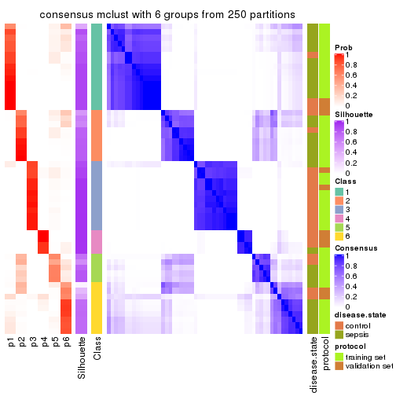
Heatmaps for the membership of samples in all partitions to see how consistent they are:
membership_heatmap(res, k = 2)
membership_heatmap(res, k = 3)

membership_heatmap(res, k = 4)
membership_heatmap(res, k = 5)
membership_heatmap(res, k = 6)
As soon as we have had the classes for columns, we can look for signatures which are significantly different between classes which can be candidate marks for certain classes. Following are the heatmaps for signatures.
Signature heatmaps where rows are scaled:
get_signatures(res, k = 2)
get_signatures(res, k = 3)
get_signatures(res, k = 4)
get_signatures(res, k = 5)
get_signatures(res, k = 6)
Signature heatmaps where rows are not scaled:
get_signatures(res, k = 2, scale_rows = FALSE)
get_signatures(res, k = 3, scale_rows = FALSE)
get_signatures(res, k = 4, scale_rows = FALSE)
get_signatures(res, k = 5, scale_rows = FALSE)
get_signatures(res, k = 6, scale_rows = FALSE)
Compare the overlap of signatures from different k:
compare_signatures(res)
get_signature() returns a data frame invisibly. TO get the list of signatures, the function
call should be assigned to a variable explicitly. In following code, if plot argument is set
to FALSE, no heatmap is plotted while only the differential analysis is performed.
# code only for demonstration
tb = get_signature(res, k = ..., plot = FALSE)
An example of the output of tb is:
#> which_row fdr mean_1 mean_2 scaled_mean_1 scaled_mean_2 km
#> 1 38 0.042760348 8.373488 9.131774 -0.5533452 0.5164555 1
#> 2 40 0.018707592 7.106213 8.469186 -0.6173731 0.5762149 1
#> 3 55 0.019134737 10.221463 11.207825 -0.6159697 0.5749050 1
#> 4 59 0.006059896 5.921854 7.869574 -0.6899429 0.6439467 1
#> 5 60 0.018055526 8.928898 10.211722 -0.6204761 0.5791110 1
#> 6 98 0.009384629 15.714769 14.887706 0.6635654 -0.6193277 2
...
The columns in tb are:
which_row: row indices corresponding to the input matrix.fdr: FDR for the differential test. mean_x: The mean value in group x.scaled_mean_x: The mean value in group x after rows are scaled.km: Row groups if k-means clustering is applied to rows.UMAP plot which shows how samples are separated.
dimension_reduction(res, k = 2, method = "UMAP")
dimension_reduction(res, k = 3, method = "UMAP")
dimension_reduction(res, k = 4, method = "UMAP")
dimension_reduction(res, k = 5, method = "UMAP")
dimension_reduction(res, k = 6, method = "UMAP")
Following heatmap shows how subgroups are split when increasing k:
collect_classes(res)
Test correlation between subgroups and known annotations. If the known annotation is numeric, one-way ANOVA test is applied, and if the known annotation is discrete, chi-squared contingency table test is applied.
test_to_known_factors(res)
#> n disease.state(p) protocol(p) k
#> CV:mclust 51 0.043766 0.7327 2
#> CV:mclust 46 0.000191 0.8842 3
#> CV:mclust 45 0.000266 0.0381 4
#> CV:mclust 50 0.000224 0.0149 5
#> CV:mclust 50 0.000486 0.0269 6
If matrix rows can be associated to genes, consider to use GO_Enrichment(res,
...) to perform function enrichment for the signature genes.
The object with results only for a single top-value method and a single partition method can be extracted as:
res = res_list["CV", "NMF"]
# you can also extract it by
# res = res_list["CV:NMF"]
A summary of res and all the functions that can be applied to it:
res
#> A 'ConsensusPartition' object with k = 2, 3, 4, 5, 6.
#> On a matrix with 15837 rows and 54 columns.
#> Top rows (1000, 2000, 3000, 4000, 5000) are extracted by 'CV' method.
#> Subgroups are detected by 'NMF' method.
#> Performed in total 1250 partitions by row resampling.
#> Best k for subgroups seems to be 2.
#>
#> Following methods can be applied to this 'ConsensusPartition' object:
#> [1] "cola_report" "collect_classes" "collect_plots"
#> [4] "collect_stats" "colnames" "compare_signatures"
#> [7] "consensus_heatmap" "dimension_reduction" "functional_enrichment"
#> [10] "get_anno_col" "get_anno" "get_classes"
#> [13] "get_consensus" "get_matrix" "get_membership"
#> [16] "get_param" "get_signatures" "get_stats"
#> [19] "is_best_k" "is_stable_k" "membership_heatmap"
#> [22] "ncol" "nrow" "plot_ecdf"
#> [25] "rownames" "select_partition_number" "show"
#> [28] "suggest_best_k" "test_to_known_factors"
collect_plots() function collects all the plots made from res for all k (number of partitions)
into one single page to provide an easy and fast comparison between different k.
collect_plots(res)
The plots are:
k and the heatmap of
predicted classes for each k.k.k.k.All the plots in panels can be made by individual functions and they are plotted later in this section.
select_partition_number() produces several plots showing different
statistics for choosing “optimized” k. There are following statistics:
k;k, the area increased is defined as \(A_k - A_{k-1}\).The detailed explanations of these statistics can be found in the cola vignette.
Generally speaking, lower PAC score, higher mean silhouette score or higher
concordance corresponds to better partition. Rand index and Jaccard index
measure how similar the current partition is compared to partition with k-1.
If they are too similar, we won't accept k is better than k-1.
select_partition_number(res)
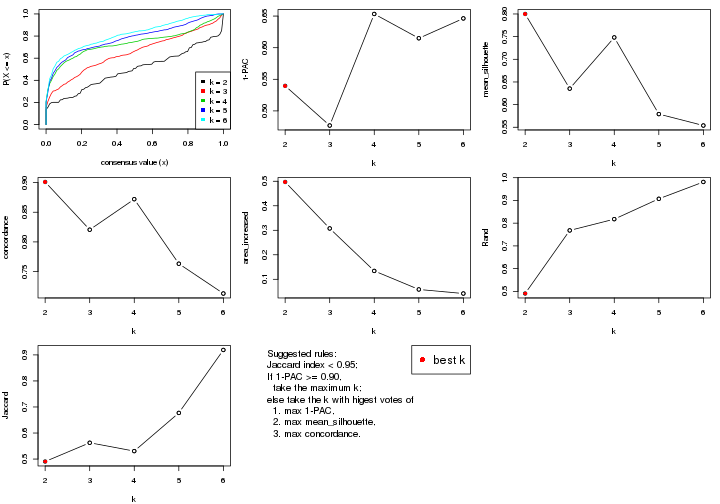
The numeric values for all these statistics can be obtained by get_stats().
get_stats(res)
#> k 1-PAC mean_silhouette concordance area_increased Rand Jaccard
#> 2 2 0.540 0.800 0.901 0.4972 0.491 0.491
#> 3 3 0.477 0.635 0.821 0.3075 0.768 0.563
#> 4 4 0.653 0.748 0.872 0.1341 0.818 0.531
#> 5 5 0.615 0.579 0.763 0.0585 0.907 0.677
#> 6 6 0.646 0.554 0.713 0.0419 0.981 0.919
suggest_best_k() suggests the best \(k\) based on these statistics. The rules are as follows:
NA.suggest_best_k(res)
#> [1] 2
Following shows the table of the partitions (You need to click the show/hide
code output link to see it). The membership matrix (columns with name p*)
is inferred by
clue::cl_consensus()
function with the SE method. Basically the value in the membership matrix
represents the probability to belong to a certain group. The finall class
label for an item is determined with the group with highest probability it
belongs to.
In get_classes() function, the entropy is calculated from the membership
matrix and the silhouette score is calculated from the consensus matrix.
cbind(get_classes(res, k = 2), get_membership(res, k = 2))
#> class entropy silhouette p1 p2
#> GSM134895 1 0.9710 0.506 0.600 0.400
#> GSM134896 2 0.0000 0.902 0.000 1.000
#> GSM134897 2 0.0000 0.902 0.000 1.000
#> GSM134898 2 0.0000 0.902 0.000 1.000
#> GSM134905 2 0.0000 0.902 0.000 1.000
#> GSM135018 2 0.0000 0.902 0.000 1.000
#> GSM135674 1 0.7528 0.695 0.784 0.216
#> GSM135683 2 0.0000 0.902 0.000 1.000
#> GSM135685 2 0.0000 0.902 0.000 1.000
#> GSM135699 1 0.0000 0.866 1.000 0.000
#> GSM135019 2 0.0000 0.902 0.000 1.000
#> GSM135026 1 0.9996 0.287 0.512 0.488
#> GSM135033 2 0.0000 0.902 0.000 1.000
#> GSM135042 1 0.9998 0.290 0.508 0.492
#> GSM135057 2 0.7219 0.782 0.200 0.800
#> GSM135068 1 0.0000 0.866 1.000 0.000
#> GSM135071 2 0.6801 0.799 0.180 0.820
#> GSM135078 2 0.0000 0.902 0.000 1.000
#> GSM135163 2 0.8144 0.722 0.252 0.748
#> GSM135166 2 0.0000 0.902 0.000 1.000
#> GSM135223 2 0.7219 0.782 0.200 0.800
#> GSM135224 2 0.7219 0.782 0.200 0.800
#> GSM135228 1 0.4562 0.814 0.904 0.096
#> GSM135262 1 0.0672 0.864 0.992 0.008
#> GSM135263 2 0.0000 0.902 0.000 1.000
#> GSM135279 2 0.0000 0.902 0.000 1.000
#> GSM135661 1 0.0000 0.866 1.000 0.000
#> GSM135662 2 0.6801 0.799 0.180 0.820
#> GSM135663 2 0.1633 0.894 0.024 0.976
#> GSM135664 2 0.0672 0.900 0.008 0.992
#> GSM135665 1 0.0000 0.866 1.000 0.000
#> GSM135666 1 0.9686 0.513 0.604 0.396
#> GSM135668 1 0.8955 0.614 0.688 0.312
#> GSM135670 1 0.4022 0.828 0.920 0.080
#> GSM135671 1 0.0000 0.866 1.000 0.000
#> GSM135675 1 0.1184 0.861 0.984 0.016
#> GSM135676 1 0.0000 0.866 1.000 0.000
#> GSM135677 1 0.0000 0.866 1.000 0.000
#> GSM135679 1 0.0000 0.866 1.000 0.000
#> GSM135680 2 0.7883 0.743 0.236 0.764
#> GSM135681 2 0.9000 0.616 0.316 0.684
#> GSM135682 2 0.0000 0.902 0.000 1.000
#> GSM135687 1 0.0938 0.862 0.988 0.012
#> GSM135688 1 0.0000 0.866 1.000 0.000
#> GSM135689 1 0.3733 0.832 0.928 0.072
#> GSM135693 2 0.9170 0.582 0.332 0.668
#> GSM135694 1 0.0000 0.866 1.000 0.000
#> GSM135695 1 0.0000 0.866 1.000 0.000
#> GSM135696 1 0.0000 0.866 1.000 0.000
#> GSM135697 1 0.0000 0.866 1.000 0.000
#> GSM135698 2 0.1184 0.897 0.016 0.984
#> GSM135700 1 0.6247 0.763 0.844 0.156
#> GSM135702 1 0.9944 0.388 0.544 0.456
#> GSM135703 2 0.0000 0.902 0.000 1.000
cbind(get_classes(res, k = 3), get_membership(res, k = 3))
#> class entropy silhouette p1 p2 p3
#> GSM134895 3 0.6521 -0.2318 0.492 0.004 0.504
#> GSM134896 3 0.3116 0.7136 0.000 0.108 0.892
#> GSM134897 3 0.0424 0.7090 0.000 0.008 0.992
#> GSM134898 3 0.0592 0.7074 0.000 0.012 0.988
#> GSM134905 3 0.4750 0.6827 0.000 0.216 0.784
#> GSM135018 3 0.5591 0.6343 0.000 0.304 0.696
#> GSM135674 1 0.8600 0.4390 0.604 0.184 0.212
#> GSM135683 3 0.0747 0.7111 0.000 0.016 0.984
#> GSM135685 3 0.1411 0.7162 0.000 0.036 0.964
#> GSM135699 1 0.0424 0.8565 0.992 0.008 0.000
#> GSM135019 3 0.1753 0.7054 0.000 0.048 0.952
#> GSM135026 3 0.9497 0.3350 0.332 0.200 0.468
#> GSM135033 3 0.0592 0.7074 0.000 0.012 0.988
#> GSM135042 3 0.5982 0.3263 0.328 0.004 0.668
#> GSM135057 2 0.4741 0.7388 0.152 0.828 0.020
#> GSM135068 1 0.0983 0.8558 0.980 0.016 0.004
#> GSM135071 2 0.0848 0.6596 0.008 0.984 0.008
#> GSM135078 2 0.6302 -0.2907 0.000 0.520 0.480
#> GSM135163 2 0.5455 0.7265 0.204 0.776 0.020
#> GSM135166 3 0.4931 0.5771 0.000 0.232 0.768
#> GSM135223 2 0.5253 0.7324 0.188 0.792 0.020
#> GSM135224 2 0.5253 0.7324 0.188 0.792 0.020
#> GSM135228 1 0.2318 0.8489 0.944 0.028 0.028
#> GSM135262 1 0.0661 0.8568 0.988 0.008 0.004
#> GSM135263 3 0.5882 0.5920 0.000 0.348 0.652
#> GSM135279 3 0.5588 0.6522 0.004 0.276 0.720
#> GSM135661 1 0.1015 0.8559 0.980 0.012 0.008
#> GSM135662 2 0.1315 0.6644 0.020 0.972 0.008
#> GSM135663 2 0.6143 0.1869 0.012 0.684 0.304
#> GSM135664 2 0.6527 -0.0911 0.008 0.588 0.404
#> GSM135665 1 0.0747 0.8560 0.984 0.016 0.000
#> GSM135666 1 0.6410 0.3743 0.576 0.004 0.420
#> GSM135668 1 0.9182 0.2831 0.536 0.204 0.260
#> GSM135670 1 0.5356 0.7009 0.784 0.196 0.020
#> GSM135671 1 0.0237 0.8578 0.996 0.004 0.000
#> GSM135675 1 0.3267 0.7852 0.884 0.116 0.000
#> GSM135676 1 0.1860 0.8303 0.948 0.052 0.000
#> GSM135677 1 0.2152 0.8470 0.948 0.016 0.036
#> GSM135679 1 0.0892 0.8554 0.980 0.020 0.000
#> GSM135680 2 0.4063 0.7322 0.112 0.868 0.020
#> GSM135681 2 0.3425 0.7263 0.112 0.884 0.004
#> GSM135682 3 0.5291 0.6591 0.000 0.268 0.732
#> GSM135687 1 0.4723 0.7606 0.824 0.016 0.160
#> GSM135688 1 0.0000 0.8576 1.000 0.000 0.000
#> GSM135689 1 0.3851 0.7882 0.860 0.004 0.136
#> GSM135693 2 0.4912 0.7296 0.196 0.796 0.008
#> GSM135694 1 0.0237 0.8578 0.996 0.004 0.000
#> GSM135695 1 0.0747 0.8563 0.984 0.016 0.000
#> GSM135696 1 0.0237 0.8578 0.996 0.004 0.000
#> GSM135697 1 0.0747 0.8553 0.984 0.016 0.000
#> GSM135698 3 0.7788 0.5978 0.084 0.284 0.632
#> GSM135700 2 0.5882 0.5399 0.348 0.652 0.000
#> GSM135702 1 0.9258 0.2478 0.524 0.204 0.272
#> GSM135703 3 0.6045 0.5424 0.000 0.380 0.620
cbind(get_classes(res, k = 4), get_membership(res, k = 4))
#> class entropy silhouette p1 p2 p3 p4
#> GSM134895 3 0.4877 0.1409 0.408 0.000 0.592 0.000
#> GSM134896 3 0.3498 0.7483 0.000 0.160 0.832 0.008
#> GSM134897 3 0.0895 0.8069 0.000 0.020 0.976 0.004
#> GSM134898 3 0.0895 0.8069 0.000 0.020 0.976 0.004
#> GSM134905 3 0.5417 0.6723 0.000 0.180 0.732 0.088
#> GSM135018 2 0.6261 0.0616 0.000 0.504 0.440 0.056
#> GSM135674 2 0.4053 0.6676 0.228 0.768 0.000 0.004
#> GSM135683 3 0.3893 0.6815 0.000 0.196 0.796 0.008
#> GSM135685 3 0.2197 0.7962 0.000 0.080 0.916 0.004
#> GSM135699 1 0.1022 0.9010 0.968 0.000 0.000 0.032
#> GSM135019 3 0.0937 0.8046 0.000 0.012 0.976 0.012
#> GSM135026 2 0.3279 0.8112 0.088 0.880 0.024 0.008
#> GSM135033 3 0.0524 0.8023 0.000 0.004 0.988 0.008
#> GSM135042 3 0.3751 0.6507 0.196 0.000 0.800 0.004
#> GSM135057 4 0.0592 0.8089 0.000 0.016 0.000 0.984
#> GSM135068 1 0.2060 0.8936 0.932 0.000 0.016 0.052
#> GSM135071 4 0.5155 0.1500 0.004 0.468 0.000 0.528
#> GSM135078 2 0.4988 0.5848 0.000 0.728 0.036 0.236
#> GSM135163 4 0.2174 0.7758 0.052 0.000 0.020 0.928
#> GSM135166 3 0.5522 0.6405 0.000 0.080 0.716 0.204
#> GSM135223 4 0.0336 0.8058 0.000 0.000 0.008 0.992
#> GSM135224 4 0.0376 0.8079 0.000 0.004 0.004 0.992
#> GSM135228 1 0.3464 0.8560 0.860 0.000 0.108 0.032
#> GSM135262 1 0.1229 0.9036 0.968 0.004 0.020 0.008
#> GSM135263 2 0.2124 0.8184 0.000 0.932 0.040 0.028
#> GSM135279 2 0.0336 0.8305 0.000 0.992 0.000 0.008
#> GSM135661 1 0.1610 0.9005 0.952 0.000 0.016 0.032
#> GSM135662 2 0.2124 0.8184 0.008 0.924 0.000 0.068
#> GSM135663 2 0.0921 0.8296 0.000 0.972 0.000 0.028
#> GSM135664 2 0.0817 0.8298 0.000 0.976 0.000 0.024
#> GSM135665 1 0.0376 0.9014 0.992 0.004 0.004 0.000
#> GSM135666 1 0.5155 0.2153 0.528 0.004 0.468 0.000
#> GSM135668 2 0.2149 0.8102 0.088 0.912 0.000 0.000
#> GSM135670 2 0.4331 0.5865 0.288 0.712 0.000 0.000
#> GSM135671 1 0.0000 0.9009 1.000 0.000 0.000 0.000
#> GSM135675 1 0.3674 0.7823 0.848 0.116 0.000 0.036
#> GSM135676 1 0.0895 0.9004 0.976 0.004 0.000 0.020
#> GSM135677 1 0.3464 0.8537 0.860 0.000 0.108 0.032
#> GSM135679 1 0.2149 0.8459 0.912 0.088 0.000 0.000
#> GSM135680 4 0.3787 0.7618 0.036 0.124 0.000 0.840
#> GSM135681 4 0.4149 0.7486 0.036 0.152 0.000 0.812
#> GSM135682 2 0.1256 0.8276 0.000 0.964 0.028 0.008
#> GSM135687 1 0.3444 0.7945 0.816 0.000 0.184 0.000
#> GSM135688 1 0.0524 0.9022 0.988 0.000 0.008 0.004
#> GSM135689 1 0.3123 0.8254 0.844 0.000 0.156 0.000
#> GSM135693 4 0.0712 0.8083 0.008 0.004 0.004 0.984
#> GSM135694 1 0.0000 0.9009 1.000 0.000 0.000 0.000
#> GSM135695 1 0.1624 0.8963 0.952 0.020 0.000 0.028
#> GSM135696 1 0.0336 0.9017 0.992 0.000 0.008 0.000
#> GSM135697 1 0.3157 0.8336 0.852 0.004 0.000 0.144
#> GSM135698 2 0.2238 0.8204 0.072 0.920 0.004 0.004
#> GSM135700 4 0.7747 0.3683 0.324 0.192 0.008 0.476
#> GSM135702 2 0.1474 0.8263 0.052 0.948 0.000 0.000
#> GSM135703 2 0.3015 0.7853 0.000 0.884 0.024 0.092
cbind(get_classes(res, k = 5), get_membership(res, k = 5))
#> class entropy silhouette p1 p2 p3 p4 p5
#> GSM134895 3 0.6516 0.3173 0.292 0.004 0.504 0.000 0.200
#> GSM134896 3 0.4305 0.6242 0.000 0.128 0.780 0.004 0.088
#> GSM134897 3 0.2623 0.7191 0.000 0.016 0.884 0.004 0.096
#> GSM134898 3 0.2519 0.7184 0.000 0.016 0.884 0.000 0.100
#> GSM134905 3 0.5429 0.5648 0.000 0.152 0.716 0.040 0.092
#> GSM135018 2 0.6703 0.0635 0.000 0.436 0.428 0.040 0.096
#> GSM135674 5 0.5878 0.0556 0.084 0.444 0.000 0.004 0.468
#> GSM135683 3 0.5481 0.5802 0.004 0.144 0.668 0.000 0.184
#> GSM135685 3 0.2769 0.7156 0.000 0.032 0.876 0.000 0.092
#> GSM135699 1 0.0955 0.8413 0.968 0.000 0.000 0.028 0.004
#> GSM135019 3 0.2151 0.7158 0.004 0.004 0.912 0.004 0.076
#> GSM135026 5 0.5270 -0.0662 0.016 0.404 0.024 0.000 0.556
#> GSM135033 3 0.1197 0.7220 0.000 0.000 0.952 0.000 0.048
#> GSM135042 3 0.4887 0.5877 0.148 0.000 0.720 0.000 0.132
#> GSM135057 4 0.1742 0.7922 0.008 0.032 0.008 0.944 0.008
#> GSM135068 1 0.1630 0.8427 0.944 0.000 0.004 0.036 0.016
#> GSM135071 2 0.5707 0.3780 0.004 0.576 0.004 0.344 0.072
#> GSM135078 2 0.6198 0.5310 0.000 0.656 0.068 0.172 0.104
#> GSM135163 4 0.4083 0.7021 0.116 0.020 0.016 0.820 0.028
#> GSM135166 3 0.4567 0.5601 0.000 0.020 0.736 0.216 0.028
#> GSM135223 4 0.1334 0.8028 0.020 0.004 0.004 0.960 0.012
#> GSM135224 4 0.1428 0.8031 0.024 0.004 0.004 0.956 0.012
#> GSM135228 1 0.3328 0.7874 0.860 0.000 0.084 0.020 0.036
#> GSM135262 1 0.1413 0.8439 0.956 0.000 0.020 0.012 0.012
#> GSM135263 2 0.3853 0.6312 0.000 0.832 0.032 0.044 0.092
#> GSM135279 2 0.3675 0.5586 0.000 0.772 0.004 0.008 0.216
#> GSM135661 1 0.1518 0.8444 0.952 0.000 0.012 0.016 0.020
#> GSM135662 2 0.4254 0.5804 0.000 0.772 0.000 0.080 0.148
#> GSM135663 2 0.2504 0.6329 0.000 0.896 0.000 0.040 0.064
#> GSM135664 2 0.2253 0.6450 0.000 0.920 0.016 0.028 0.036
#> GSM135665 1 0.2166 0.8207 0.912 0.012 0.000 0.004 0.072
#> GSM135666 3 0.5858 -0.0435 0.452 0.000 0.452 0.000 0.096
#> GSM135668 2 0.4658 0.1632 0.016 0.576 0.000 0.000 0.408
#> GSM135670 1 0.6779 -0.3651 0.392 0.304 0.000 0.000 0.304
#> GSM135671 1 0.1492 0.8341 0.948 0.008 0.000 0.004 0.040
#> GSM135675 5 0.6576 0.0724 0.424 0.052 0.000 0.068 0.456
#> GSM135676 1 0.2492 0.8264 0.908 0.048 0.000 0.020 0.024
#> GSM135677 1 0.2302 0.8364 0.916 0.000 0.048 0.020 0.016
#> GSM135679 1 0.3375 0.7774 0.852 0.096 0.000 0.012 0.040
#> GSM135680 4 0.5210 0.6317 0.004 0.100 0.008 0.712 0.176
#> GSM135681 4 0.6807 0.1000 0.020 0.132 0.004 0.432 0.412
#> GSM135682 2 0.4753 0.5726 0.000 0.752 0.064 0.020 0.164
#> GSM135687 1 0.3656 0.7336 0.800 0.000 0.168 0.000 0.032
#> GSM135688 1 0.0290 0.8400 0.992 0.000 0.000 0.000 0.008
#> GSM135689 1 0.2728 0.8245 0.896 0.012 0.068 0.008 0.016
#> GSM135693 4 0.1569 0.7957 0.044 0.008 0.000 0.944 0.004
#> GSM135694 1 0.2095 0.8260 0.920 0.012 0.000 0.008 0.060
#> GSM135695 1 0.3844 0.7773 0.836 0.064 0.000 0.068 0.032
#> GSM135696 1 0.5033 0.4264 0.644 0.012 0.000 0.032 0.312
#> GSM135697 1 0.2932 0.7959 0.864 0.004 0.000 0.112 0.020
#> GSM135698 2 0.4973 0.3667 0.036 0.676 0.004 0.008 0.276
#> GSM135700 5 0.7446 0.3422 0.196 0.112 0.000 0.164 0.528
#> GSM135702 2 0.1522 0.6321 0.012 0.944 0.000 0.000 0.044
#> GSM135703 2 0.5415 0.5895 0.000 0.732 0.068 0.096 0.104
cbind(get_classes(res, k = 6), get_membership(res, k = 6))
#> class entropy silhouette p1 p2 p3 p4 p5 p6
#> GSM134895 3 0.6344 0.3670 0.216 0.000 0.556 0.000 0.156 NA
#> GSM134896 3 0.5103 0.4939 0.000 0.064 0.612 0.004 0.012 NA
#> GSM134897 3 0.2566 0.6282 0.000 0.008 0.868 0.000 0.012 NA
#> GSM134898 3 0.2679 0.6248 0.000 0.000 0.864 0.000 0.040 NA
#> GSM134905 3 0.5982 0.4393 0.000 0.088 0.568 0.032 0.016 NA
#> GSM135018 2 0.7044 0.2507 0.000 0.428 0.268 0.028 0.028 NA
#> GSM135674 5 0.5653 0.1317 0.048 0.384 0.004 0.000 0.520 NA
#> GSM135683 3 0.5995 0.4196 0.000 0.088 0.484 0.004 0.036 NA
#> GSM135685 3 0.3721 0.6155 0.000 0.016 0.728 0.004 0.000 NA
#> GSM135699 1 0.1194 0.7963 0.956 0.000 0.000 0.032 0.004 NA
#> GSM135019 3 0.4315 0.5978 0.004 0.008 0.708 0.028 0.004 NA
#> GSM135026 5 0.6295 0.3211 0.020 0.188 0.008 0.000 0.512 NA
#> GSM135033 3 0.0717 0.6385 0.000 0.000 0.976 0.008 0.000 NA
#> GSM135042 3 0.5152 0.5030 0.152 0.000 0.704 0.004 0.088 NA
#> GSM135057 4 0.1325 0.8537 0.016 0.012 0.004 0.956 0.000 NA
#> GSM135068 1 0.2817 0.7965 0.888 0.000 0.032 0.032 0.024 NA
#> GSM135071 2 0.5125 0.4838 0.004 0.668 0.000 0.224 0.080 NA
#> GSM135078 2 0.5244 0.5415 0.000 0.704 0.012 0.156 0.076 NA
#> GSM135163 4 0.4312 0.7417 0.052 0.080 0.012 0.804 0.032 NA
#> GSM135166 3 0.5617 0.4834 0.000 0.012 0.612 0.224 0.008 NA
#> GSM135223 4 0.0748 0.8571 0.016 0.000 0.004 0.976 0.004 NA
#> GSM135224 4 0.0862 0.8567 0.016 0.004 0.000 0.972 0.008 NA
#> GSM135228 1 0.5653 0.6533 0.668 0.004 0.152 0.044 0.008 NA
#> GSM135262 1 0.4043 0.7794 0.812 0.004 0.044 0.016 0.032 NA
#> GSM135263 2 0.5141 0.5585 0.000 0.700 0.032 0.020 0.060 NA
#> GSM135279 2 0.4733 0.5160 0.000 0.708 0.000 0.012 0.136 NA
#> GSM135661 1 0.2869 0.7927 0.880 0.000 0.024 0.036 0.008 NA
#> GSM135662 2 0.3581 0.5794 0.000 0.824 0.000 0.036 0.096 NA
#> GSM135663 2 0.1976 0.6076 0.000 0.916 0.000 0.016 0.060 NA
#> GSM135664 2 0.2036 0.6249 0.000 0.912 0.000 0.008 0.016 NA
#> GSM135665 1 0.2706 0.7429 0.832 0.000 0.000 0.000 0.160 NA
#> GSM135666 3 0.6344 0.0417 0.388 0.000 0.440 0.000 0.052 NA
#> GSM135668 5 0.6577 0.1962 0.020 0.264 0.004 0.000 0.412 NA
#> GSM135670 1 0.7494 -0.1119 0.392 0.148 0.000 0.004 0.256 NA
#> GSM135671 1 0.2053 0.7756 0.888 0.000 0.000 0.000 0.108 NA
#> GSM135675 5 0.5466 0.0580 0.368 0.024 0.000 0.052 0.548 NA
#> GSM135676 1 0.4606 0.7387 0.776 0.048 0.000 0.060 0.028 NA
#> GSM135677 1 0.2770 0.7959 0.884 0.000 0.056 0.012 0.012 NA
#> GSM135679 1 0.4401 0.7203 0.776 0.092 0.000 0.008 0.088 NA
#> GSM135680 4 0.5670 0.4538 0.000 0.108 0.004 0.604 0.256 NA
#> GSM135681 5 0.6133 0.1518 0.016 0.080 0.004 0.328 0.540 NA
#> GSM135682 2 0.5546 0.4865 0.000 0.600 0.052 0.000 0.064 NA
#> GSM135687 1 0.3403 0.7209 0.796 0.000 0.176 0.004 0.004 NA
#> GSM135688 1 0.0692 0.7946 0.976 0.000 0.000 0.000 0.020 NA
#> GSM135689 1 0.2319 0.7993 0.912 0.008 0.020 0.008 0.008 NA
#> GSM135693 4 0.1003 0.8531 0.028 0.000 0.004 0.964 0.004 NA
#> GSM135694 1 0.2165 0.7761 0.884 0.000 0.000 0.000 0.108 NA
#> GSM135695 1 0.5324 0.6897 0.716 0.056 0.000 0.064 0.032 NA
#> GSM135696 1 0.4758 0.2991 0.544 0.000 0.000 0.020 0.416 NA
#> GSM135697 1 0.3825 0.7633 0.812 0.012 0.000 0.080 0.012 NA
#> GSM135698 2 0.6064 0.2107 0.016 0.528 0.004 0.000 0.276 NA
#> GSM135700 5 0.5853 0.3597 0.100 0.056 0.000 0.160 0.660 NA
#> GSM135702 2 0.3656 0.5934 0.012 0.816 0.004 0.004 0.044 NA
#> GSM135703 2 0.6641 0.4454 0.000 0.516 0.072 0.036 0.064 NA
Heatmaps for the consensus matrix. It visualizes the probability of two samples to be in a same group.
consensus_heatmap(res, k = 2)
consensus_heatmap(res, k = 3)

consensus_heatmap(res, k = 4)
consensus_heatmap(res, k = 5)
consensus_heatmap(res, k = 6)
Heatmaps for the membership of samples in all partitions to see how consistent they are:
membership_heatmap(res, k = 2)
membership_heatmap(res, k = 3)
membership_heatmap(res, k = 4)
membership_heatmap(res, k = 5)
membership_heatmap(res, k = 6)
As soon as we have had the classes for columns, we can look for signatures which are significantly different between classes which can be candidate marks for certain classes. Following are the heatmaps for signatures.
Signature heatmaps where rows are scaled:
get_signatures(res, k = 2)
get_signatures(res, k = 3)
get_signatures(res, k = 4)
get_signatures(res, k = 5)
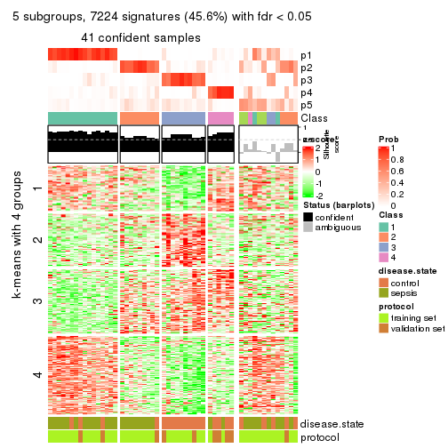
get_signatures(res, k = 6)
Signature heatmaps where rows are not scaled:
get_signatures(res, k = 2, scale_rows = FALSE)
get_signatures(res, k = 3, scale_rows = FALSE)
get_signatures(res, k = 4, scale_rows = FALSE)
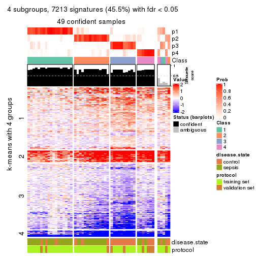
get_signatures(res, k = 5, scale_rows = FALSE)
get_signatures(res, k = 6, scale_rows = FALSE)
Compare the overlap of signatures from different k:
compare_signatures(res)
get_signature() returns a data frame invisibly. TO get the list of signatures, the function
call should be assigned to a variable explicitly. In following code, if plot argument is set
to FALSE, no heatmap is plotted while only the differential analysis is performed.
# code only for demonstration
tb = get_signature(res, k = ..., plot = FALSE)
An example of the output of tb is:
#> which_row fdr mean_1 mean_2 scaled_mean_1 scaled_mean_2 km
#> 1 38 0.042760348 8.373488 9.131774 -0.5533452 0.5164555 1
#> 2 40 0.018707592 7.106213 8.469186 -0.6173731 0.5762149 1
#> 3 55 0.019134737 10.221463 11.207825 -0.6159697 0.5749050 1
#> 4 59 0.006059896 5.921854 7.869574 -0.6899429 0.6439467 1
#> 5 60 0.018055526 8.928898 10.211722 -0.6204761 0.5791110 1
#> 6 98 0.009384629 15.714769 14.887706 0.6635654 -0.6193277 2
...
The columns in tb are:
which_row: row indices corresponding to the input matrix.fdr: FDR for the differential test. mean_x: The mean value in group x.scaled_mean_x: The mean value in group x after rows are scaled.km: Row groups if k-means clustering is applied to rows.UMAP plot which shows how samples are separated.
dimension_reduction(res, k = 2, method = "UMAP")
dimension_reduction(res, k = 3, method = "UMAP")
dimension_reduction(res, k = 4, method = "UMAP")
dimension_reduction(res, k = 5, method = "UMAP")
dimension_reduction(res, k = 6, method = "UMAP")
Following heatmap shows how subgroups are split when increasing k:
collect_classes(res)
Test correlation between subgroups and known annotations. If the known annotation is numeric, one-way ANOVA test is applied, and if the known annotation is discrete, chi-squared contingency table test is applied.
test_to_known_factors(res)
#> n disease.state(p) protocol(p) k
#> CV:NMF 51 1.25e-02 0.2016 2
#> CV:NMF 44 9.01e-03 0.0117 3
#> CV:NMF 49 7.19e-05 0.0314 4
#> CV:NMF 41 6.28e-05 0.0371 5
#> CV:NMF 34 6.76e-04 0.0152 6
If matrix rows can be associated to genes, consider to use GO_Enrichment(res,
...) to perform function enrichment for the signature genes.
The object with results only for a single top-value method and a single partition method can be extracted as:
res = res_list["MAD", "hclust"]
# you can also extract it by
# res = res_list["MAD:hclust"]
A summary of res and all the functions that can be applied to it:
res
#> A 'ConsensusPartition' object with k = 2, 3, 4, 5, 6.
#> On a matrix with 15837 rows and 54 columns.
#> Top rows (1000, 2000, 3000, 4000, 5000) are extracted by 'MAD' method.
#> Subgroups are detected by 'hclust' method.
#> Performed in total 1250 partitions by row resampling.
#> Best k for subgroups seems to be 2.
#>
#> Following methods can be applied to this 'ConsensusPartition' object:
#> [1] "cola_report" "collect_classes" "collect_plots"
#> [4] "collect_stats" "colnames" "compare_signatures"
#> [7] "consensus_heatmap" "dimension_reduction" "functional_enrichment"
#> [10] "get_anno_col" "get_anno" "get_classes"
#> [13] "get_consensus" "get_matrix" "get_membership"
#> [16] "get_param" "get_signatures" "get_stats"
#> [19] "is_best_k" "is_stable_k" "membership_heatmap"
#> [22] "ncol" "nrow" "plot_ecdf"
#> [25] "rownames" "select_partition_number" "show"
#> [28] "suggest_best_k" "test_to_known_factors"
collect_plots() function collects all the plots made from res for all k (number of partitions)
into one single page to provide an easy and fast comparison between different k.
collect_plots(res)
The plots are:
k and the heatmap of
predicted classes for each k.k.k.k.All the plots in panels can be made by individual functions and they are plotted later in this section.
select_partition_number() produces several plots showing different
statistics for choosing “optimized” k. There are following statistics:
k;k, the area increased is defined as \(A_k - A_{k-1}\).The detailed explanations of these statistics can be found in the cola vignette.
Generally speaking, lower PAC score, higher mean silhouette score or higher
concordance corresponds to better partition. Rand index and Jaccard index
measure how similar the current partition is compared to partition with k-1.
If they are too similar, we won't accept k is better than k-1.
select_partition_number(res)

The numeric values for all these statistics can be obtained by get_stats().
get_stats(res)
#> k 1-PAC mean_silhouette concordance area_increased Rand Jaccard
#> 2 2 0.748 0.906 0.949 0.4984 0.491 0.491
#> 3 3 0.608 0.793 0.865 0.2443 0.881 0.757
#> 4 4 0.627 0.713 0.782 0.1091 0.981 0.951
#> 5 5 0.692 0.642 0.780 0.0763 0.874 0.673
#> 6 6 0.678 0.608 0.760 0.0541 0.919 0.709
suggest_best_k() suggests the best \(k\) based on these statistics. The rules are as follows:
NA.suggest_best_k(res)
#> [1] 2
Following shows the table of the partitions (You need to click the show/hide
code output link to see it). The membership matrix (columns with name p*)
is inferred by
clue::cl_consensus()
function with the SE method. Basically the value in the membership matrix
represents the probability to belong to a certain group. The finall class
label for an item is determined with the group with highest probability it
belongs to.
In get_classes() function, the entropy is calculated from the membership
matrix and the silhouette score is calculated from the consensus matrix.
cbind(get_classes(res, k = 2), get_membership(res, k = 2))
#> class entropy silhouette p1 p2
#> GSM134895 1 0.2043 0.971 0.968 0.032
#> GSM134896 2 0.0000 0.915 0.000 1.000
#> GSM134897 2 0.0000 0.915 0.000 1.000
#> GSM134898 2 0.0000 0.915 0.000 1.000
#> GSM134905 2 0.0000 0.915 0.000 1.000
#> GSM135018 2 0.0000 0.915 0.000 1.000
#> GSM135674 1 0.3879 0.927 0.924 0.076
#> GSM135683 2 0.0000 0.915 0.000 1.000
#> GSM135685 2 0.0000 0.915 0.000 1.000
#> GSM135699 1 0.0000 0.976 1.000 0.000
#> GSM135019 2 0.0000 0.915 0.000 1.000
#> GSM135026 1 0.3114 0.949 0.944 0.056
#> GSM135033 2 0.0000 0.915 0.000 1.000
#> GSM135042 1 0.2043 0.971 0.968 0.032
#> GSM135057 2 0.6247 0.827 0.156 0.844
#> GSM135068 1 0.1414 0.977 0.980 0.020
#> GSM135071 2 0.0376 0.915 0.004 0.996
#> GSM135078 2 0.0000 0.915 0.000 1.000
#> GSM135163 2 0.6801 0.802 0.180 0.820
#> GSM135166 2 0.0000 0.915 0.000 1.000
#> GSM135223 2 0.6247 0.827 0.156 0.844
#> GSM135224 2 0.6247 0.827 0.156 0.844
#> GSM135228 1 0.1414 0.977 0.980 0.020
#> GSM135262 1 0.1414 0.977 0.980 0.020
#> GSM135263 2 0.0376 0.915 0.004 0.996
#> GSM135279 2 0.0376 0.915 0.004 0.996
#> GSM135661 1 0.1414 0.977 0.980 0.020
#> GSM135662 2 0.0376 0.915 0.004 0.996
#> GSM135663 2 0.0376 0.915 0.004 0.996
#> GSM135664 2 0.0376 0.915 0.004 0.996
#> GSM135665 1 0.0000 0.976 1.000 0.000
#> GSM135666 1 0.1843 0.973 0.972 0.028
#> GSM135668 1 0.5946 0.835 0.856 0.144
#> GSM135670 1 0.0000 0.976 1.000 0.000
#> GSM135671 1 0.0000 0.976 1.000 0.000
#> GSM135675 1 0.1184 0.977 0.984 0.016
#> GSM135676 1 0.0000 0.976 1.000 0.000
#> GSM135677 1 0.1414 0.977 0.980 0.020
#> GSM135679 1 0.0000 0.976 1.000 0.000
#> GSM135680 2 0.9087 0.605 0.324 0.676
#> GSM135681 2 0.9170 0.591 0.332 0.668
#> GSM135682 2 0.0376 0.915 0.004 0.996
#> GSM135687 1 0.1414 0.977 0.980 0.020
#> GSM135688 1 0.0000 0.976 1.000 0.000
#> GSM135689 1 0.1414 0.977 0.980 0.020
#> GSM135693 2 0.6247 0.827 0.156 0.844
#> GSM135694 1 0.0000 0.976 1.000 0.000
#> GSM135695 1 0.0000 0.976 1.000 0.000
#> GSM135696 1 0.0000 0.976 1.000 0.000
#> GSM135697 1 0.0000 0.976 1.000 0.000
#> GSM135698 2 0.9710 0.442 0.400 0.600
#> GSM135700 1 0.2236 0.967 0.964 0.036
#> GSM135702 2 0.8713 0.632 0.292 0.708
#> GSM135703 2 0.0376 0.915 0.004 0.996
cbind(get_classes(res, k = 3), get_membership(res, k = 3))
#> class entropy silhouette p1 p2 p3
#> GSM134895 1 0.2537 0.906 0.920 0.080 0.000
#> GSM134896 3 0.1289 0.778 0.000 0.032 0.968
#> GSM134897 3 0.2066 0.799 0.000 0.060 0.940
#> GSM134898 3 0.2066 0.799 0.000 0.060 0.940
#> GSM134905 3 0.1289 0.778 0.000 0.032 0.968
#> GSM135018 3 0.3267 0.793 0.000 0.116 0.884
#> GSM135674 1 0.3941 0.832 0.844 0.156 0.000
#> GSM135683 3 0.0424 0.787 0.000 0.008 0.992
#> GSM135685 3 0.0000 0.787 0.000 0.000 1.000
#> GSM135699 1 0.2537 0.907 0.920 0.080 0.000
#> GSM135019 3 0.0000 0.787 0.000 0.000 1.000
#> GSM135026 1 0.3412 0.869 0.876 0.124 0.000
#> GSM135033 3 0.2066 0.799 0.000 0.060 0.940
#> GSM135042 1 0.2537 0.906 0.920 0.080 0.000
#> GSM135057 2 0.3267 0.694 0.000 0.884 0.116
#> GSM135068 1 0.0892 0.931 0.980 0.020 0.000
#> GSM135071 3 0.5926 0.571 0.000 0.356 0.644
#> GSM135078 3 0.3267 0.793 0.000 0.116 0.884
#> GSM135163 2 0.7782 0.662 0.124 0.668 0.208
#> GSM135166 3 0.1289 0.778 0.000 0.032 0.968
#> GSM135223 2 0.3267 0.694 0.000 0.884 0.116
#> GSM135224 2 0.3267 0.694 0.000 0.884 0.116
#> GSM135228 1 0.0892 0.931 0.980 0.020 0.000
#> GSM135262 1 0.0892 0.931 0.980 0.020 0.000
#> GSM135263 3 0.5560 0.646 0.000 0.300 0.700
#> GSM135279 3 0.6045 0.528 0.000 0.380 0.620
#> GSM135661 1 0.0892 0.931 0.980 0.020 0.000
#> GSM135662 3 0.6252 0.382 0.000 0.444 0.556
#> GSM135663 3 0.6244 0.394 0.000 0.440 0.560
#> GSM135664 3 0.5706 0.625 0.000 0.320 0.680
#> GSM135665 1 0.2537 0.907 0.920 0.080 0.000
#> GSM135666 1 0.2165 0.915 0.936 0.064 0.000
#> GSM135668 1 0.4842 0.730 0.776 0.224 0.000
#> GSM135670 1 0.0747 0.930 0.984 0.016 0.000
#> GSM135671 1 0.2537 0.907 0.920 0.080 0.000
#> GSM135675 1 0.1643 0.924 0.956 0.044 0.000
#> GSM135676 1 0.1643 0.922 0.956 0.044 0.000
#> GSM135677 1 0.0892 0.931 0.980 0.020 0.000
#> GSM135679 1 0.1289 0.925 0.968 0.032 0.000
#> GSM135680 2 0.8048 0.680 0.264 0.628 0.108
#> GSM135681 2 0.7916 0.678 0.264 0.636 0.100
#> GSM135682 3 0.4002 0.769 0.000 0.160 0.840
#> GSM135687 1 0.0892 0.931 0.980 0.020 0.000
#> GSM135688 1 0.2537 0.907 0.920 0.080 0.000
#> GSM135689 1 0.0892 0.931 0.980 0.020 0.000
#> GSM135693 2 0.3267 0.694 0.000 0.884 0.116
#> GSM135694 1 0.2537 0.907 0.920 0.080 0.000
#> GSM135695 1 0.1643 0.922 0.956 0.044 0.000
#> GSM135696 1 0.2537 0.907 0.920 0.080 0.000
#> GSM135697 1 0.1643 0.922 0.956 0.044 0.000
#> GSM135698 2 0.8610 0.603 0.324 0.556 0.120
#> GSM135700 1 0.3116 0.885 0.892 0.108 0.000
#> GSM135702 2 0.9197 0.484 0.212 0.536 0.252
#> GSM135703 3 0.4002 0.769 0.000 0.160 0.840
cbind(get_classes(res, k = 4), get_membership(res, k = 4))
#> class entropy silhouette p1 p2 p3 p4
#> GSM134895 1 0.2589 0.822 0.884 0.000 NA 0.000
#> GSM134896 2 0.4948 0.576 0.000 0.560 NA 0.000
#> GSM134897 2 0.4356 0.660 0.000 0.708 NA 0.000
#> GSM134898 2 0.4356 0.660 0.000 0.708 NA 0.000
#> GSM134905 2 0.4948 0.576 0.000 0.560 NA 0.000
#> GSM135018 2 0.2179 0.711 0.000 0.924 NA 0.012
#> GSM135674 1 0.5458 0.642 0.704 0.000 NA 0.060
#> GSM135683 2 0.3105 0.704 0.000 0.856 NA 0.004
#> GSM135685 2 0.3208 0.703 0.000 0.848 NA 0.004
#> GSM135699 1 0.3400 0.831 0.820 0.000 NA 0.000
#> GSM135019 2 0.3208 0.703 0.000 0.848 NA 0.004
#> GSM135026 1 0.5123 0.669 0.724 0.000 NA 0.044
#> GSM135033 2 0.4356 0.660 0.000 0.708 NA 0.000
#> GSM135042 1 0.2589 0.822 0.884 0.000 NA 0.000
#> GSM135057 4 0.1302 0.767 0.000 0.044 NA 0.956
#> GSM135068 1 0.0000 0.870 1.000 0.000 NA 0.000
#> GSM135071 2 0.5208 0.573 0.000 0.748 NA 0.172
#> GSM135078 2 0.2179 0.711 0.000 0.924 NA 0.012
#> GSM135163 4 0.6472 0.687 0.052 0.136 NA 0.712
#> GSM135166 2 0.4948 0.576 0.000 0.560 NA 0.000
#> GSM135223 4 0.1302 0.767 0.000 0.044 NA 0.956
#> GSM135224 4 0.1302 0.767 0.000 0.044 NA 0.956
#> GSM135228 1 0.0188 0.869 0.996 0.000 NA 0.000
#> GSM135262 1 0.0188 0.869 0.996 0.000 NA 0.000
#> GSM135263 2 0.4307 0.621 0.000 0.808 NA 0.144
#> GSM135279 2 0.5705 0.523 0.000 0.704 NA 0.204
#> GSM135661 1 0.0188 0.869 0.996 0.000 NA 0.000
#> GSM135662 2 0.6313 0.463 0.004 0.644 NA 0.260
#> GSM135663 2 0.6138 0.468 0.000 0.648 NA 0.260
#> GSM135664 2 0.4685 0.604 0.000 0.784 NA 0.156
#> GSM135665 1 0.3400 0.831 0.820 0.000 NA 0.000
#> GSM135666 1 0.2345 0.831 0.900 0.000 NA 0.000
#> GSM135668 1 0.6100 0.513 0.624 0.000 NA 0.072
#> GSM135670 1 0.1716 0.869 0.936 0.000 NA 0.000
#> GSM135671 1 0.3400 0.831 0.820 0.000 NA 0.000
#> GSM135675 1 0.1474 0.860 0.948 0.000 NA 0.000
#> GSM135676 1 0.2647 0.855 0.880 0.000 NA 0.000
#> GSM135677 1 0.0000 0.870 1.000 0.000 NA 0.000
#> GSM135679 1 0.2469 0.859 0.892 0.000 NA 0.000
#> GSM135680 4 0.5808 0.707 0.140 0.004 NA 0.720
#> GSM135681 4 0.5902 0.703 0.140 0.004 NA 0.712
#> GSM135682 2 0.2089 0.699 0.000 0.932 NA 0.048
#> GSM135687 1 0.0000 0.870 1.000 0.000 NA 0.000
#> GSM135688 1 0.3400 0.831 0.820 0.000 NA 0.000
#> GSM135689 1 0.0000 0.870 1.000 0.000 NA 0.000
#> GSM135693 4 0.1302 0.767 0.000 0.044 NA 0.956
#> GSM135694 1 0.3400 0.831 0.820 0.000 NA 0.000
#> GSM135695 1 0.2589 0.857 0.884 0.000 NA 0.000
#> GSM135696 1 0.3400 0.831 0.820 0.000 NA 0.000
#> GSM135697 1 0.2589 0.857 0.884 0.000 NA 0.000
#> GSM135698 4 0.9817 0.356 0.224 0.172 NA 0.308
#> GSM135700 1 0.4849 0.726 0.772 0.000 NA 0.064
#> GSM135702 2 0.9541 -0.153 0.140 0.360 NA 0.192
#> GSM135703 2 0.2089 0.699 0.000 0.932 NA 0.048
cbind(get_classes(res, k = 5), get_membership(res, k = 5))
#> class entropy silhouette p1 p2 p3 p4 p5
#> GSM134895 1 0.3684 0.6341 0.720 0.000 0.000 0.000 0.280
#> GSM134896 3 0.1121 0.8437 0.000 0.044 0.956 0.000 0.000
#> GSM134897 3 0.3039 0.8163 0.000 0.192 0.808 0.000 0.000
#> GSM134898 3 0.3039 0.8163 0.000 0.192 0.808 0.000 0.000
#> GSM134905 3 0.1121 0.8437 0.000 0.044 0.956 0.000 0.000
#> GSM135018 2 0.4268 0.3572 0.000 0.556 0.444 0.000 0.000
#> GSM135674 5 0.4126 0.3397 0.380 0.000 0.000 0.000 0.620
#> GSM135683 2 0.6581 0.5158 0.000 0.580 0.264 0.056 0.100
#> GSM135685 2 0.6764 0.4624 0.000 0.536 0.308 0.056 0.100
#> GSM135699 1 0.2645 0.7426 0.888 0.000 0.044 0.000 0.068
#> GSM135019 2 0.6791 0.4515 0.000 0.528 0.316 0.056 0.100
#> GSM135026 5 0.4227 0.2568 0.420 0.000 0.000 0.000 0.580
#> GSM135033 3 0.3039 0.8163 0.000 0.192 0.808 0.000 0.000
#> GSM135042 1 0.3684 0.6341 0.720 0.000 0.000 0.000 0.280
#> GSM135057 4 0.1341 0.8161 0.000 0.056 0.000 0.944 0.000
#> GSM135068 1 0.2471 0.7915 0.864 0.000 0.000 0.000 0.136
#> GSM135071 2 0.1121 0.6512 0.000 0.956 0.044 0.000 0.000
#> GSM135078 2 0.4268 0.3572 0.000 0.556 0.444 0.000 0.000
#> GSM135163 4 0.5904 0.6507 0.000 0.204 0.000 0.600 0.196
#> GSM135166 3 0.1121 0.8437 0.000 0.044 0.956 0.000 0.000
#> GSM135223 4 0.1341 0.8161 0.000 0.056 0.000 0.944 0.000
#> GSM135224 4 0.1341 0.8161 0.000 0.056 0.000 0.944 0.000
#> GSM135228 1 0.2561 0.7872 0.856 0.000 0.000 0.000 0.144
#> GSM135262 1 0.2516 0.7897 0.860 0.000 0.000 0.000 0.140
#> GSM135263 2 0.2230 0.6593 0.000 0.884 0.116 0.000 0.000
#> GSM135279 2 0.0162 0.6299 0.000 0.996 0.000 0.000 0.004
#> GSM135661 1 0.2516 0.7897 0.860 0.000 0.000 0.000 0.140
#> GSM135662 2 0.2536 0.5617 0.000 0.868 0.004 0.000 0.128
#> GSM135663 2 0.2488 0.5648 0.000 0.872 0.004 0.000 0.124
#> GSM135664 2 0.1792 0.6602 0.000 0.916 0.084 0.000 0.000
#> GSM135665 1 0.2645 0.7426 0.888 0.000 0.044 0.000 0.068
#> GSM135666 1 0.3586 0.6588 0.736 0.000 0.000 0.000 0.264
#> GSM135668 5 0.4616 0.4693 0.288 0.036 0.000 0.000 0.676
#> GSM135670 1 0.1732 0.7961 0.920 0.000 0.000 0.000 0.080
#> GSM135671 1 0.2645 0.7426 0.888 0.000 0.044 0.000 0.068
#> GSM135675 1 0.3039 0.7442 0.808 0.000 0.000 0.000 0.192
#> GSM135676 1 0.0912 0.7843 0.972 0.000 0.012 0.000 0.016
#> GSM135677 1 0.2471 0.7915 0.864 0.000 0.000 0.000 0.136
#> GSM135679 1 0.0693 0.7905 0.980 0.000 0.008 0.000 0.012
#> GSM135680 4 0.5002 0.6488 0.000 0.044 0.000 0.612 0.344
#> GSM135681 4 0.5030 0.6404 0.000 0.044 0.000 0.604 0.352
#> GSM135682 2 0.4060 0.5179 0.000 0.640 0.360 0.000 0.000
#> GSM135687 1 0.2471 0.7915 0.864 0.000 0.000 0.000 0.136
#> GSM135688 1 0.2645 0.7426 0.888 0.000 0.044 0.000 0.068
#> GSM135689 1 0.2471 0.7915 0.864 0.000 0.000 0.000 0.136
#> GSM135693 4 0.1341 0.8161 0.000 0.056 0.000 0.944 0.000
#> GSM135694 1 0.2645 0.7426 0.888 0.000 0.044 0.000 0.068
#> GSM135695 1 0.0807 0.7860 0.976 0.000 0.012 0.000 0.012
#> GSM135696 1 0.2645 0.7426 0.888 0.000 0.044 0.000 0.068
#> GSM135697 1 0.0807 0.7860 0.976 0.000 0.012 0.000 0.012
#> GSM135698 5 0.4045 0.1422 0.000 0.356 0.000 0.000 0.644
#> GSM135700 1 0.4451 -0.1718 0.504 0.000 0.000 0.004 0.492
#> GSM135702 5 0.4650 -0.0584 0.012 0.468 0.000 0.000 0.520
#> GSM135703 2 0.4060 0.5179 0.000 0.640 0.360 0.000 0.000
cbind(get_classes(res, k = 6), get_membership(res, k = 6))
#> class entropy silhouette p1 p2 p3 p4 p5 p6
#> GSM134895 5 0.4336 -0.0681 0.476 0.000 0.000 0.000 0.504 0.020
#> GSM134896 3 0.0260 0.8334 0.000 0.000 0.992 0.000 0.008 0.000
#> GSM134897 3 0.2300 0.8317 0.000 0.144 0.856 0.000 0.000 0.000
#> GSM134898 3 0.2300 0.8317 0.000 0.144 0.856 0.000 0.000 0.000
#> GSM134905 3 0.0260 0.8334 0.000 0.000 0.992 0.000 0.008 0.000
#> GSM135018 2 0.3971 0.2548 0.000 0.548 0.448 0.000 0.000 0.004
#> GSM135674 5 0.3806 0.5674 0.152 0.000 0.000 0.000 0.772 0.076
#> GSM135683 6 0.5408 0.8236 0.000 0.304 0.144 0.000 0.000 0.552
#> GSM135685 6 0.5667 0.9018 0.000 0.228 0.240 0.000 0.000 0.532
#> GSM135699 1 0.1753 0.7347 0.912 0.000 0.000 0.000 0.004 0.084
#> GSM135019 6 0.5742 0.8840 0.000 0.220 0.268 0.000 0.000 0.512
#> GSM135026 5 0.3134 0.5803 0.168 0.000 0.000 0.000 0.808 0.024
#> GSM135033 3 0.2300 0.8317 0.000 0.144 0.856 0.000 0.000 0.000
#> GSM135042 5 0.4336 -0.0681 0.476 0.000 0.000 0.000 0.504 0.020
#> GSM135057 4 0.0000 0.7956 0.000 0.000 0.000 1.000 0.000 0.000
#> GSM135068 1 0.3078 0.7281 0.796 0.000 0.000 0.000 0.192 0.012
#> GSM135071 2 0.0458 0.5349 0.000 0.984 0.016 0.000 0.000 0.000
#> GSM135078 2 0.3971 0.2548 0.000 0.548 0.448 0.000 0.000 0.004
#> GSM135163 4 0.5900 0.6206 0.000 0.176 0.000 0.596 0.188 0.040
#> GSM135166 3 0.0260 0.8334 0.000 0.000 0.992 0.000 0.008 0.000
#> GSM135223 4 0.0000 0.7956 0.000 0.000 0.000 1.000 0.000 0.000
#> GSM135224 4 0.0000 0.7956 0.000 0.000 0.000 1.000 0.000 0.000
#> GSM135228 1 0.3141 0.7198 0.788 0.000 0.000 0.000 0.200 0.012
#> GSM135262 1 0.3110 0.7245 0.792 0.000 0.000 0.000 0.196 0.012
#> GSM135263 2 0.2191 0.5141 0.000 0.876 0.120 0.000 0.000 0.004
#> GSM135279 2 0.0858 0.5284 0.000 0.968 0.000 0.000 0.004 0.028
#> GSM135661 1 0.3110 0.7245 0.792 0.000 0.000 0.000 0.196 0.012
#> GSM135662 2 0.2877 0.4791 0.000 0.820 0.000 0.000 0.012 0.168
#> GSM135663 2 0.2841 0.4814 0.000 0.824 0.000 0.000 0.012 0.164
#> GSM135664 2 0.1327 0.5338 0.000 0.936 0.064 0.000 0.000 0.000
#> GSM135665 1 0.1753 0.7347 0.912 0.000 0.000 0.000 0.004 0.084
#> GSM135666 1 0.4336 -0.0307 0.504 0.000 0.000 0.000 0.476 0.020
#> GSM135668 5 0.3992 0.4682 0.088 0.012 0.000 0.000 0.780 0.120
#> GSM135670 1 0.2178 0.7529 0.868 0.000 0.000 0.000 0.132 0.000
#> GSM135671 1 0.1753 0.7347 0.912 0.000 0.000 0.000 0.004 0.084
#> GSM135675 1 0.3620 0.4218 0.648 0.000 0.000 0.000 0.352 0.000
#> GSM135676 1 0.0000 0.7663 1.000 0.000 0.000 0.000 0.000 0.000
#> GSM135677 1 0.3078 0.7281 0.796 0.000 0.000 0.000 0.192 0.012
#> GSM135679 1 0.0858 0.7705 0.968 0.000 0.000 0.000 0.028 0.004
#> GSM135680 4 0.4822 0.6642 0.000 0.016 0.000 0.608 0.336 0.040
#> GSM135681 4 0.4847 0.6592 0.000 0.016 0.000 0.600 0.344 0.040
#> GSM135682 2 0.4479 0.3834 0.000 0.608 0.356 0.000 0.032 0.004
#> GSM135687 1 0.3078 0.7281 0.796 0.000 0.000 0.000 0.192 0.012
#> GSM135688 1 0.1753 0.7347 0.912 0.000 0.000 0.000 0.004 0.084
#> GSM135689 1 0.3078 0.7281 0.796 0.000 0.000 0.000 0.192 0.012
#> GSM135693 4 0.0000 0.7956 0.000 0.000 0.000 1.000 0.000 0.000
#> GSM135694 1 0.1753 0.7347 0.912 0.000 0.000 0.000 0.004 0.084
#> GSM135695 1 0.0363 0.7693 0.988 0.000 0.000 0.000 0.012 0.000
#> GSM135696 1 0.1753 0.7347 0.912 0.000 0.000 0.000 0.004 0.084
#> GSM135697 1 0.0363 0.7693 0.988 0.000 0.000 0.000 0.012 0.000
#> GSM135698 5 0.5956 -0.0799 0.000 0.236 0.000 0.000 0.440 0.324
#> GSM135700 5 0.3766 0.4743 0.304 0.000 0.000 0.000 0.684 0.012
#> GSM135702 2 0.6124 0.1530 0.000 0.356 0.000 0.000 0.328 0.316
#> GSM135703 2 0.4479 0.3834 0.000 0.608 0.356 0.000 0.032 0.004
Heatmaps for the consensus matrix. It visualizes the probability of two samples to be in a same group.
consensus_heatmap(res, k = 2)
consensus_heatmap(res, k = 3)
consensus_heatmap(res, k = 4)
consensus_heatmap(res, k = 5)
consensus_heatmap(res, k = 6)
Heatmaps for the membership of samples in all partitions to see how consistent they are:
membership_heatmap(res, k = 2)
membership_heatmap(res, k = 3)
membership_heatmap(res, k = 4)
membership_heatmap(res, k = 5)
membership_heatmap(res, k = 6)
As soon as we have had the classes for columns, we can look for signatures which are significantly different between classes which can be candidate marks for certain classes. Following are the heatmaps for signatures.
Signature heatmaps where rows are scaled:
get_signatures(res, k = 2)

get_signatures(res, k = 3)
get_signatures(res, k = 4)
get_signatures(res, k = 5)
get_signatures(res, k = 6)
Signature heatmaps where rows are not scaled:
get_signatures(res, k = 2, scale_rows = FALSE)
get_signatures(res, k = 3, scale_rows = FALSE)
get_signatures(res, k = 4, scale_rows = FALSE)
get_signatures(res, k = 5, scale_rows = FALSE)
get_signatures(res, k = 6, scale_rows = FALSE)
Compare the overlap of signatures from different k:
compare_signatures(res)
get_signature() returns a data frame invisibly. TO get the list of signatures, the function
call should be assigned to a variable explicitly. In following code, if plot argument is set
to FALSE, no heatmap is plotted while only the differential analysis is performed.
# code only for demonstration
tb = get_signature(res, k = ..., plot = FALSE)
An example of the output of tb is:
#> which_row fdr mean_1 mean_2 scaled_mean_1 scaled_mean_2 km
#> 1 38 0.042760348 8.373488 9.131774 -0.5533452 0.5164555 1
#> 2 40 0.018707592 7.106213 8.469186 -0.6173731 0.5762149 1
#> 3 55 0.019134737 10.221463 11.207825 -0.6159697 0.5749050 1
#> 4 59 0.006059896 5.921854 7.869574 -0.6899429 0.6439467 1
#> 5 60 0.018055526 8.928898 10.211722 -0.6204761 0.5791110 1
#> 6 98 0.009384629 15.714769 14.887706 0.6635654 -0.6193277 2
...
The columns in tb are:
which_row: row indices corresponding to the input matrix.fdr: FDR for the differential test. mean_x: The mean value in group x.scaled_mean_x: The mean value in group x after rows are scaled.km: Row groups if k-means clustering is applied to rows.UMAP plot which shows how samples are separated.
dimension_reduction(res, k = 2, method = "UMAP")
dimension_reduction(res, k = 3, method = "UMAP")
dimension_reduction(res, k = 4, method = "UMAP")
dimension_reduction(res, k = 5, method = "UMAP")
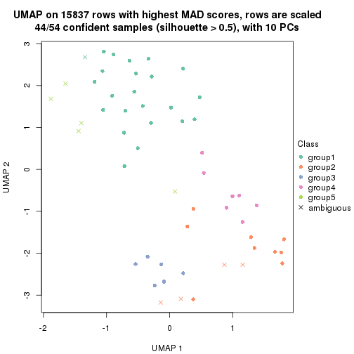
dimension_reduction(res, k = 6, method = "UMAP")
Following heatmap shows how subgroups are split when increasing k:
collect_classes(res)
Test correlation between subgroups and known annotations. If the known annotation is numeric, one-way ANOVA test is applied, and if the known annotation is discrete, chi-squared contingency table test is applied.
test_to_known_factors(res)
#> n disease.state(p) protocol(p) k
#> MAD:hclust 53 0.03597 0.3236 2
#> MAD:hclust 51 0.01825 0.0549 3
#> MAD:hclust 50 0.01579 0.0265 4
#> MAD:hclust 44 0.00303 0.0733 5
#> MAD:hclust 40 0.00120 0.1415 6
If matrix rows can be associated to genes, consider to use GO_Enrichment(res,
...) to perform function enrichment for the signature genes.
The object with results only for a single top-value method and a single partition method can be extracted as:
res = res_list["MAD", "kmeans"]
# you can also extract it by
# res = res_list["MAD:kmeans"]
A summary of res and all the functions that can be applied to it:
res
#> A 'ConsensusPartition' object with k = 2, 3, 4, 5, 6.
#> On a matrix with 15837 rows and 54 columns.
#> Top rows (1000, 2000, 3000, 4000, 5000) are extracted by 'MAD' method.
#> Subgroups are detected by 'kmeans' method.
#> Performed in total 1250 partitions by row resampling.
#> Best k for subgroups seems to be 2.
#>
#> Following methods can be applied to this 'ConsensusPartition' object:
#> [1] "cola_report" "collect_classes" "collect_plots"
#> [4] "collect_stats" "colnames" "compare_signatures"
#> [7] "consensus_heatmap" "dimension_reduction" "functional_enrichment"
#> [10] "get_anno_col" "get_anno" "get_classes"
#> [13] "get_consensus" "get_matrix" "get_membership"
#> [16] "get_param" "get_signatures" "get_stats"
#> [19] "is_best_k" "is_stable_k" "membership_heatmap"
#> [22] "ncol" "nrow" "plot_ecdf"
#> [25] "rownames" "select_partition_number" "show"
#> [28] "suggest_best_k" "test_to_known_factors"
collect_plots() function collects all the plots made from res for all k (number of partitions)
into one single page to provide an easy and fast comparison between different k.
collect_plots(res)
The plots are:
k and the heatmap of
predicted classes for each k.k.k.k.All the plots in panels can be made by individual functions and they are plotted later in this section.
select_partition_number() produces several plots showing different
statistics for choosing “optimized” k. There are following statistics:
k;k, the area increased is defined as \(A_k - A_{k-1}\).The detailed explanations of these statistics can be found in the cola vignette.
Generally speaking, lower PAC score, higher mean silhouette score or higher
concordance corresponds to better partition. Rand index and Jaccard index
measure how similar the current partition is compared to partition with k-1.
If they are too similar, we won't accept k is better than k-1.
select_partition_number(res)
The numeric values for all these statistics can be obtained by get_stats().
get_stats(res)
#> k 1-PAC mean_silhouette concordance area_increased Rand Jaccard
#> 2 2 1.000 0.961 0.986 0.5094 0.491 0.491
#> 3 3 0.650 0.868 0.872 0.2642 0.846 0.692
#> 4 4 0.684 0.671 0.788 0.1376 0.858 0.621
#> 5 5 0.674 0.665 0.755 0.0689 0.844 0.491
#> 6 6 0.690 0.721 0.777 0.0450 0.923 0.655
suggest_best_k() suggests the best \(k\) based on these statistics. The rules are as follows:
NA.suggest_best_k(res)
#> [1] 2
Following shows the table of the partitions (You need to click the show/hide
code output link to see it). The membership matrix (columns with name p*)
is inferred by
clue::cl_consensus()
function with the SE method. Basically the value in the membership matrix
represents the probability to belong to a certain group. The finall class
label for an item is determined with the group with highest probability it
belongs to.
In get_classes() function, the entropy is calculated from the membership
matrix and the silhouette score is calculated from the consensus matrix.
cbind(get_classes(res, k = 2), get_membership(res, k = 2))
#> class entropy silhouette p1 p2
#> GSM134895 1 0.000 0.9812 1.000 0.000
#> GSM134896 2 0.000 0.9892 0.000 1.000
#> GSM134897 2 0.000 0.9892 0.000 1.000
#> GSM134898 2 0.000 0.9892 0.000 1.000
#> GSM134905 2 0.000 0.9892 0.000 1.000
#> GSM135018 2 0.000 0.9892 0.000 1.000
#> GSM135674 1 0.000 0.9812 1.000 0.000
#> GSM135683 2 0.000 0.9892 0.000 1.000
#> GSM135685 2 0.000 0.9892 0.000 1.000
#> GSM135699 1 0.000 0.9812 1.000 0.000
#> GSM135019 2 0.000 0.9892 0.000 1.000
#> GSM135026 1 0.000 0.9812 1.000 0.000
#> GSM135033 2 0.000 0.9892 0.000 1.000
#> GSM135042 1 0.000 0.9812 1.000 0.000
#> GSM135057 2 0.000 0.9892 0.000 1.000
#> GSM135068 1 0.000 0.9812 1.000 0.000
#> GSM135071 2 0.000 0.9892 0.000 1.000
#> GSM135078 2 0.000 0.9892 0.000 1.000
#> GSM135163 2 0.000 0.9892 0.000 1.000
#> GSM135166 2 0.000 0.9892 0.000 1.000
#> GSM135223 2 0.000 0.9892 0.000 1.000
#> GSM135224 2 0.000 0.9892 0.000 1.000
#> GSM135228 1 0.000 0.9812 1.000 0.000
#> GSM135262 1 0.000 0.9812 1.000 0.000
#> GSM135263 2 0.000 0.9892 0.000 1.000
#> GSM135279 2 0.000 0.9892 0.000 1.000
#> GSM135661 1 0.000 0.9812 1.000 0.000
#> GSM135662 2 0.000 0.9892 0.000 1.000
#> GSM135663 2 0.000 0.9892 0.000 1.000
#> GSM135664 2 0.000 0.9892 0.000 1.000
#> GSM135665 1 0.000 0.9812 1.000 0.000
#> GSM135666 1 0.000 0.9812 1.000 0.000
#> GSM135668 1 0.000 0.9812 1.000 0.000
#> GSM135670 1 0.000 0.9812 1.000 0.000
#> GSM135671 1 0.000 0.9812 1.000 0.000
#> GSM135675 1 0.000 0.9812 1.000 0.000
#> GSM135676 1 0.000 0.9812 1.000 0.000
#> GSM135677 1 0.000 0.9812 1.000 0.000
#> GSM135679 1 0.000 0.9812 1.000 0.000
#> GSM135680 2 0.000 0.9892 0.000 1.000
#> GSM135681 1 0.998 0.0653 0.524 0.476
#> GSM135682 2 0.000 0.9892 0.000 1.000
#> GSM135687 1 0.000 0.9812 1.000 0.000
#> GSM135688 1 0.000 0.9812 1.000 0.000
#> GSM135689 1 0.000 0.9812 1.000 0.000
#> GSM135693 2 0.000 0.9892 0.000 1.000
#> GSM135694 1 0.000 0.9812 1.000 0.000
#> GSM135695 1 0.000 0.9812 1.000 0.000
#> GSM135696 1 0.000 0.9812 1.000 0.000
#> GSM135697 1 0.000 0.9812 1.000 0.000
#> GSM135698 2 0.000 0.9892 0.000 1.000
#> GSM135700 1 0.000 0.9812 1.000 0.000
#> GSM135702 2 0.844 0.6139 0.272 0.728
#> GSM135703 2 0.000 0.9892 0.000 1.000
cbind(get_classes(res, k = 3), get_membership(res, k = 3))
#> class entropy silhouette p1 p2 p3
#> GSM134895 1 0.2056 0.908 0.952 0.024 0.024
#> GSM134896 3 0.3941 0.961 0.000 0.156 0.844
#> GSM134897 3 0.3941 0.961 0.000 0.156 0.844
#> GSM134898 3 0.3941 0.961 0.000 0.156 0.844
#> GSM134905 3 0.3941 0.961 0.000 0.156 0.844
#> GSM135018 3 0.3941 0.961 0.000 0.156 0.844
#> GSM135674 1 0.4045 0.866 0.872 0.104 0.024
#> GSM135683 3 0.3941 0.961 0.000 0.156 0.844
#> GSM135685 3 0.3941 0.961 0.000 0.156 0.844
#> GSM135699 1 0.3551 0.901 0.868 0.000 0.132
#> GSM135019 3 0.3941 0.961 0.000 0.156 0.844
#> GSM135026 1 0.4045 0.866 0.872 0.104 0.024
#> GSM135033 3 0.3941 0.961 0.000 0.156 0.844
#> GSM135042 1 0.4045 0.866 0.872 0.104 0.024
#> GSM135057 2 0.3038 0.824 0.000 0.896 0.104
#> GSM135068 1 0.3482 0.902 0.872 0.000 0.128
#> GSM135071 2 0.2537 0.844 0.000 0.920 0.080
#> GSM135078 3 0.6280 0.295 0.000 0.460 0.540
#> GSM135163 2 0.0000 0.843 0.000 1.000 0.000
#> GSM135166 3 0.3941 0.961 0.000 0.156 0.844
#> GSM135223 2 0.2537 0.840 0.000 0.920 0.080
#> GSM135224 2 0.2537 0.840 0.000 0.920 0.080
#> GSM135228 1 0.3181 0.890 0.912 0.064 0.024
#> GSM135262 1 0.1453 0.913 0.968 0.008 0.024
#> GSM135263 2 0.5016 0.685 0.000 0.760 0.240
#> GSM135279 2 0.1753 0.848 0.000 0.952 0.048
#> GSM135661 1 0.1453 0.913 0.968 0.008 0.024
#> GSM135662 2 0.1163 0.846 0.000 0.972 0.028
#> GSM135663 2 0.3551 0.811 0.000 0.868 0.132
#> GSM135664 2 0.5016 0.685 0.000 0.760 0.240
#> GSM135665 1 0.3551 0.901 0.868 0.000 0.132
#> GSM135666 1 0.0000 0.920 1.000 0.000 0.000
#> GSM135668 1 0.4045 0.866 0.872 0.104 0.024
#> GSM135670 1 0.0237 0.919 0.996 0.000 0.004
#> GSM135671 1 0.3551 0.901 0.868 0.000 0.132
#> GSM135675 1 0.0237 0.919 0.996 0.000 0.004
#> GSM135676 1 0.3551 0.901 0.868 0.000 0.132
#> GSM135677 1 0.0000 0.920 1.000 0.000 0.000
#> GSM135679 1 0.0237 0.919 0.996 0.000 0.004
#> GSM135680 2 0.0000 0.843 0.000 1.000 0.000
#> GSM135681 2 0.4551 0.707 0.132 0.844 0.024
#> GSM135682 3 0.4002 0.956 0.000 0.160 0.840
#> GSM135687 1 0.0000 0.920 1.000 0.000 0.000
#> GSM135688 1 0.3551 0.901 0.868 0.000 0.132
#> GSM135689 1 0.0000 0.920 1.000 0.000 0.000
#> GSM135693 2 0.0000 0.843 0.000 1.000 0.000
#> GSM135694 1 0.3551 0.901 0.868 0.000 0.132
#> GSM135695 1 0.3482 0.902 0.872 0.000 0.128
#> GSM135696 1 0.3551 0.901 0.868 0.000 0.132
#> GSM135697 1 0.3551 0.901 0.868 0.000 0.132
#> GSM135698 2 0.4689 0.755 0.096 0.852 0.052
#> GSM135700 1 0.4045 0.866 0.872 0.104 0.024
#> GSM135702 2 0.5343 0.716 0.132 0.816 0.052
#> GSM135703 2 0.5016 0.685 0.000 0.760 0.240
cbind(get_classes(res, k = 4), get_membership(res, k = 4))
#> class entropy silhouette p1 p2 p3 p4
#> GSM134895 4 0.4477 0.773 0.312 0.000 0.000 0.688
#> GSM134896 3 0.0336 0.969 0.000 0.000 0.992 0.008
#> GSM134897 3 0.0000 0.970 0.000 0.000 1.000 0.000
#> GSM134898 3 0.0000 0.970 0.000 0.000 1.000 0.000
#> GSM134905 3 0.0188 0.969 0.000 0.000 0.996 0.004
#> GSM135018 3 0.0188 0.969 0.000 0.000 0.996 0.004
#> GSM135674 4 0.3975 0.796 0.240 0.000 0.000 0.760
#> GSM135683 3 0.1305 0.960 0.000 0.004 0.960 0.036
#> GSM135685 3 0.1118 0.961 0.000 0.000 0.964 0.036
#> GSM135699 1 0.0188 0.693 0.996 0.000 0.000 0.004
#> GSM135019 3 0.1118 0.961 0.000 0.000 0.964 0.036
#> GSM135026 4 0.3975 0.796 0.240 0.000 0.000 0.760
#> GSM135033 3 0.0592 0.967 0.000 0.000 0.984 0.016
#> GSM135042 4 0.4584 0.782 0.300 0.004 0.000 0.696
#> GSM135057 2 0.3893 0.748 0.000 0.796 0.008 0.196
#> GSM135068 1 0.3649 0.583 0.796 0.000 0.000 0.204
#> GSM135071 2 0.1724 0.749 0.000 0.948 0.032 0.020
#> GSM135078 2 0.4994 0.120 0.000 0.520 0.480 0.000
#> GSM135163 2 0.3626 0.755 0.000 0.812 0.004 0.184
#> GSM135166 3 0.0188 0.969 0.000 0.000 0.996 0.004
#> GSM135223 2 0.3893 0.748 0.000 0.796 0.008 0.196
#> GSM135224 2 0.3893 0.748 0.000 0.796 0.008 0.196
#> GSM135228 4 0.4585 0.748 0.332 0.000 0.000 0.668
#> GSM135262 4 0.4624 0.733 0.340 0.000 0.000 0.660
#> GSM135263 2 0.4643 0.475 0.000 0.656 0.344 0.000
#> GSM135279 2 0.1724 0.749 0.000 0.948 0.032 0.020
#> GSM135661 4 0.4877 0.540 0.408 0.000 0.000 0.592
#> GSM135662 2 0.1724 0.749 0.000 0.948 0.020 0.032
#> GSM135663 2 0.3160 0.715 0.000 0.872 0.108 0.020
#> GSM135664 2 0.4624 0.479 0.000 0.660 0.340 0.000
#> GSM135665 1 0.0000 0.693 1.000 0.000 0.000 0.000
#> GSM135666 1 0.4907 0.223 0.580 0.000 0.000 0.420
#> GSM135668 4 0.3975 0.796 0.240 0.000 0.000 0.760
#> GSM135670 1 0.4933 0.153 0.568 0.000 0.000 0.432
#> GSM135671 1 0.0000 0.693 1.000 0.000 0.000 0.000
#> GSM135675 1 0.4837 0.374 0.648 0.004 0.000 0.348
#> GSM135676 1 0.0188 0.692 0.996 0.004 0.000 0.000
#> GSM135677 1 0.4898 0.235 0.584 0.000 0.000 0.416
#> GSM135679 1 0.4632 0.445 0.688 0.004 0.000 0.308
#> GSM135680 2 0.3626 0.755 0.000 0.812 0.004 0.184
#> GSM135681 2 0.4961 0.551 0.000 0.552 0.000 0.448
#> GSM135682 3 0.3306 0.789 0.000 0.156 0.840 0.004
#> GSM135687 1 0.4907 0.223 0.580 0.000 0.000 0.420
#> GSM135688 1 0.0188 0.693 0.996 0.000 0.000 0.004
#> GSM135689 1 0.4907 0.223 0.580 0.000 0.000 0.420
#> GSM135693 2 0.3791 0.748 0.000 0.796 0.004 0.200
#> GSM135694 1 0.0000 0.693 1.000 0.000 0.000 0.000
#> GSM135695 1 0.2149 0.664 0.912 0.000 0.000 0.088
#> GSM135696 1 0.0188 0.692 0.996 0.004 0.000 0.000
#> GSM135697 1 0.0188 0.693 0.996 0.000 0.000 0.004
#> GSM135698 2 0.5110 0.488 0.000 0.636 0.012 0.352
#> GSM135700 4 0.4188 0.796 0.244 0.004 0.000 0.752
#> GSM135702 4 0.4564 0.300 0.000 0.328 0.000 0.672
#> GSM135703 2 0.4643 0.475 0.000 0.656 0.344 0.000
cbind(get_classes(res, k = 5), get_membership(res, k = 5))
#> class entropy silhouette p1 p2 p3 p4 p5
#> GSM134895 1 0.1522 0.690 0.944 0.000 0.000 0.044 0.012
#> GSM134896 3 0.0798 0.894 0.000 0.000 0.976 0.016 0.008
#> GSM134897 3 0.1029 0.895 0.004 0.008 0.972 0.008 0.008
#> GSM134898 3 0.1029 0.895 0.004 0.008 0.972 0.008 0.008
#> GSM134905 3 0.1299 0.892 0.000 0.012 0.960 0.020 0.008
#> GSM135018 3 0.3166 0.813 0.000 0.112 0.856 0.020 0.012
#> GSM135674 1 0.4564 0.519 0.612 0.016 0.000 0.372 0.000
#> GSM135683 3 0.2228 0.877 0.000 0.004 0.908 0.012 0.076
#> GSM135685 3 0.2069 0.878 0.000 0.000 0.912 0.012 0.076
#> GSM135699 5 0.2377 0.945 0.128 0.000 0.000 0.000 0.872
#> GSM135019 3 0.2069 0.878 0.000 0.000 0.912 0.012 0.076
#> GSM135026 1 0.4551 0.522 0.616 0.016 0.000 0.368 0.000
#> GSM135033 3 0.0955 0.892 0.000 0.000 0.968 0.004 0.028
#> GSM135042 1 0.1205 0.685 0.956 0.000 0.000 0.040 0.004
#> GSM135057 4 0.5234 0.812 0.000 0.436 0.004 0.524 0.036
#> GSM135068 1 0.3684 0.579 0.720 0.000 0.000 0.000 0.280
#> GSM135071 2 0.0807 0.520 0.000 0.976 0.012 0.012 0.000
#> GSM135078 2 0.3266 0.590 0.000 0.796 0.200 0.000 0.004
#> GSM135163 2 0.5479 -0.775 0.016 0.500 0.000 0.452 0.032
#> GSM135166 3 0.1299 0.892 0.000 0.012 0.960 0.020 0.008
#> GSM135223 4 0.5234 0.812 0.000 0.436 0.004 0.524 0.036
#> GSM135224 4 0.5234 0.812 0.000 0.436 0.004 0.524 0.036
#> GSM135228 1 0.1764 0.710 0.928 0.000 0.000 0.008 0.064
#> GSM135262 1 0.1704 0.710 0.928 0.000 0.000 0.004 0.068
#> GSM135263 2 0.3086 0.605 0.000 0.816 0.180 0.000 0.004
#> GSM135279 2 0.0898 0.520 0.000 0.972 0.008 0.020 0.000
#> GSM135661 1 0.1851 0.709 0.912 0.000 0.000 0.000 0.088
#> GSM135662 2 0.0898 0.506 0.008 0.972 0.000 0.020 0.000
#> GSM135663 2 0.2233 0.599 0.000 0.892 0.104 0.004 0.000
#> GSM135664 2 0.2813 0.610 0.000 0.832 0.168 0.000 0.000
#> GSM135665 5 0.2377 0.945 0.128 0.000 0.000 0.000 0.872
#> GSM135666 1 0.3283 0.683 0.832 0.000 0.000 0.028 0.140
#> GSM135668 1 0.4538 0.523 0.620 0.016 0.000 0.364 0.000
#> GSM135670 1 0.3508 0.630 0.748 0.000 0.000 0.000 0.252
#> GSM135671 5 0.2377 0.945 0.128 0.000 0.000 0.000 0.872
#> GSM135675 1 0.4973 0.482 0.632 0.000 0.000 0.048 0.320
#> GSM135676 5 0.3573 0.919 0.152 0.000 0.000 0.036 0.812
#> GSM135677 1 0.3274 0.654 0.780 0.000 0.000 0.000 0.220
#> GSM135679 1 0.5002 0.397 0.596 0.000 0.000 0.040 0.364
#> GSM135680 4 0.4980 0.687 0.028 0.484 0.000 0.488 0.000
#> GSM135681 4 0.5045 0.360 0.108 0.196 0.000 0.696 0.000
#> GSM135682 3 0.5069 0.111 0.000 0.452 0.520 0.020 0.008
#> GSM135687 1 0.3242 0.658 0.784 0.000 0.000 0.000 0.216
#> GSM135688 5 0.2377 0.945 0.128 0.000 0.000 0.000 0.872
#> GSM135689 1 0.3242 0.658 0.784 0.000 0.000 0.000 0.216
#> GSM135693 4 0.5229 0.807 0.004 0.432 0.000 0.528 0.036
#> GSM135694 5 0.2536 0.943 0.128 0.000 0.000 0.004 0.868
#> GSM135695 5 0.4127 0.667 0.312 0.000 0.000 0.008 0.680
#> GSM135696 5 0.3309 0.926 0.128 0.000 0.000 0.036 0.836
#> GSM135697 5 0.2891 0.911 0.176 0.000 0.000 0.000 0.824
#> GSM135698 2 0.6400 0.213 0.148 0.456 0.000 0.392 0.004
#> GSM135700 1 0.4444 0.536 0.624 0.012 0.000 0.364 0.000
#> GSM135702 2 0.6680 0.211 0.200 0.428 0.000 0.368 0.004
#> GSM135703 2 0.3328 0.604 0.000 0.812 0.176 0.004 0.008
cbind(get_classes(res, k = 6), get_membership(res, k = 6))
#> class entropy silhouette p1 p2 p3 p4 p5 p6
#> GSM134895 1 0.4552 0.618 0.752 0.088 0.000 0.000 0.116 0.044
#> GSM134896 3 0.1515 0.881 0.000 0.008 0.944 0.000 0.028 0.020
#> GSM134897 3 0.1210 0.882 0.000 0.020 0.960 0.008 0.004 0.008
#> GSM134898 3 0.1210 0.882 0.000 0.020 0.960 0.008 0.004 0.008
#> GSM134905 3 0.1715 0.877 0.000 0.016 0.940 0.008 0.016 0.020
#> GSM135018 3 0.4468 0.511 0.000 0.276 0.680 0.008 0.016 0.020
#> GSM135674 5 0.3151 0.693 0.252 0.000 0.000 0.000 0.748 0.000
#> GSM135683 3 0.3434 0.850 0.000 0.028 0.836 0.000 0.072 0.064
#> GSM135685 3 0.3376 0.850 0.000 0.028 0.840 0.000 0.072 0.060
#> GSM135699 6 0.2562 0.889 0.172 0.000 0.000 0.000 0.000 0.828
#> GSM135019 3 0.3376 0.850 0.000 0.028 0.840 0.000 0.072 0.060
#> GSM135026 5 0.3221 0.692 0.264 0.000 0.000 0.000 0.736 0.000
#> GSM135033 3 0.1536 0.880 0.000 0.016 0.940 0.000 0.040 0.004
#> GSM135042 1 0.4529 0.623 0.756 0.088 0.000 0.000 0.108 0.048
#> GSM135057 4 0.0000 0.806 0.000 0.000 0.000 1.000 0.000 0.000
#> GSM135068 1 0.1007 0.788 0.956 0.000 0.000 0.000 0.000 0.044
#> GSM135071 2 0.4016 0.724 0.000 0.684 0.004 0.292 0.020 0.000
#> GSM135078 2 0.4915 0.793 0.000 0.656 0.156 0.188 0.000 0.000
#> GSM135163 4 0.3974 0.686 0.000 0.124 0.000 0.788 0.064 0.024
#> GSM135166 3 0.1715 0.877 0.000 0.016 0.940 0.008 0.016 0.020
#> GSM135223 4 0.0000 0.806 0.000 0.000 0.000 1.000 0.000 0.000
#> GSM135224 4 0.0000 0.806 0.000 0.000 0.000 1.000 0.000 0.000
#> GSM135228 1 0.1788 0.750 0.916 0.004 0.000 0.000 0.076 0.004
#> GSM135262 1 0.1075 0.771 0.952 0.000 0.000 0.000 0.048 0.000
#> GSM135263 2 0.5332 0.793 0.000 0.648 0.148 0.188 0.008 0.008
#> GSM135279 2 0.4332 0.706 0.000 0.664 0.000 0.288 0.048 0.000
#> GSM135661 1 0.0865 0.779 0.964 0.000 0.000 0.000 0.036 0.000
#> GSM135662 2 0.4449 0.701 0.000 0.664 0.000 0.284 0.048 0.004
#> GSM135663 2 0.4473 0.793 0.000 0.708 0.072 0.212 0.008 0.000
#> GSM135664 2 0.4461 0.804 0.000 0.704 0.104 0.192 0.000 0.000
#> GSM135665 6 0.2527 0.889 0.168 0.000 0.000 0.000 0.000 0.832
#> GSM135666 1 0.2895 0.754 0.868 0.064 0.000 0.000 0.016 0.052
#> GSM135668 5 0.3221 0.692 0.264 0.000 0.000 0.000 0.736 0.000
#> GSM135670 1 0.3626 0.691 0.820 0.024 0.000 0.000 0.072 0.084
#> GSM135671 6 0.2491 0.889 0.164 0.000 0.000 0.000 0.000 0.836
#> GSM135675 1 0.6712 0.253 0.520 0.112 0.000 0.000 0.152 0.216
#> GSM135676 6 0.5278 0.804 0.212 0.088 0.000 0.000 0.040 0.660
#> GSM135677 1 0.0865 0.793 0.964 0.000 0.000 0.000 0.000 0.036
#> GSM135679 1 0.6318 0.193 0.544 0.088 0.000 0.000 0.104 0.264
#> GSM135680 4 0.5202 0.669 0.000 0.120 0.000 0.676 0.172 0.032
#> GSM135681 4 0.6323 0.237 0.004 0.136 0.000 0.432 0.396 0.032
#> GSM135682 2 0.4854 0.232 0.000 0.528 0.432 0.008 0.020 0.012
#> GSM135687 1 0.0865 0.793 0.964 0.000 0.000 0.000 0.000 0.036
#> GSM135688 6 0.2562 0.889 0.172 0.000 0.000 0.000 0.000 0.828
#> GSM135689 1 0.0865 0.793 0.964 0.000 0.000 0.000 0.000 0.036
#> GSM135693 4 0.0405 0.804 0.000 0.008 0.000 0.988 0.004 0.000
#> GSM135694 6 0.2491 0.889 0.164 0.000 0.000 0.000 0.000 0.836
#> GSM135695 6 0.4524 0.491 0.452 0.024 0.000 0.000 0.004 0.520
#> GSM135696 6 0.4584 0.836 0.160 0.068 0.000 0.000 0.036 0.736
#> GSM135697 6 0.4053 0.782 0.300 0.020 0.000 0.000 0.004 0.676
#> GSM135698 5 0.4015 0.469 0.008 0.296 0.000 0.008 0.684 0.004
#> GSM135700 5 0.6077 0.475 0.252 0.152 0.000 0.000 0.556 0.040
#> GSM135702 5 0.4177 0.469 0.020 0.304 0.000 0.000 0.668 0.008
#> GSM135703 2 0.5736 0.788 0.000 0.624 0.148 0.196 0.020 0.012
Heatmaps for the consensus matrix. It visualizes the probability of two samples to be in a same group.
consensus_heatmap(res, k = 2)

consensus_heatmap(res, k = 3)
consensus_heatmap(res, k = 4)
consensus_heatmap(res, k = 5)
consensus_heatmap(res, k = 6)
Heatmaps for the membership of samples in all partitions to see how consistent they are:
membership_heatmap(res, k = 2)
membership_heatmap(res, k = 3)
membership_heatmap(res, k = 4)
membership_heatmap(res, k = 5)
membership_heatmap(res, k = 6)
As soon as we have had the classes for columns, we can look for signatures which are significantly different between classes which can be candidate marks for certain classes. Following are the heatmaps for signatures.
Signature heatmaps where rows are scaled:
get_signatures(res, k = 2)
get_signatures(res, k = 3)
get_signatures(res, k = 4)
get_signatures(res, k = 5)

get_signatures(res, k = 6)
Signature heatmaps where rows are not scaled:
get_signatures(res, k = 2, scale_rows = FALSE)
get_signatures(res, k = 3, scale_rows = FALSE)
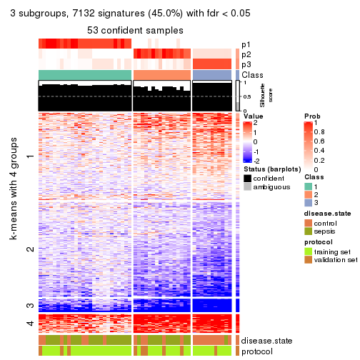
get_signatures(res, k = 4, scale_rows = FALSE)
get_signatures(res, k = 5, scale_rows = FALSE)
get_signatures(res, k = 6, scale_rows = FALSE)
Compare the overlap of signatures from different k:
compare_signatures(res)
get_signature() returns a data frame invisibly. TO get the list of signatures, the function
call should be assigned to a variable explicitly. In following code, if plot argument is set
to FALSE, no heatmap is plotted while only the differential analysis is performed.
# code only for demonstration
tb = get_signature(res, k = ..., plot = FALSE)
An example of the output of tb is:
#> which_row fdr mean_1 mean_2 scaled_mean_1 scaled_mean_2 km
#> 1 38 0.042760348 8.373488 9.131774 -0.5533452 0.5164555 1
#> 2 40 0.018707592 7.106213 8.469186 -0.6173731 0.5762149 1
#> 3 55 0.019134737 10.221463 11.207825 -0.6159697 0.5749050 1
#> 4 59 0.006059896 5.921854 7.869574 -0.6899429 0.6439467 1
#> 5 60 0.018055526 8.928898 10.211722 -0.6204761 0.5791110 1
#> 6 98 0.009384629 15.714769 14.887706 0.6635654 -0.6193277 2
...
The columns in tb are:
which_row: row indices corresponding to the input matrix.fdr: FDR for the differential test. mean_x: The mean value in group x.scaled_mean_x: The mean value in group x after rows are scaled.km: Row groups if k-means clustering is applied to rows.UMAP plot which shows how samples are separated.
dimension_reduction(res, k = 2, method = "UMAP")

dimension_reduction(res, k = 3, method = "UMAP")
dimension_reduction(res, k = 4, method = "UMAP")
dimension_reduction(res, k = 5, method = "UMAP")
dimension_reduction(res, k = 6, method = "UMAP")
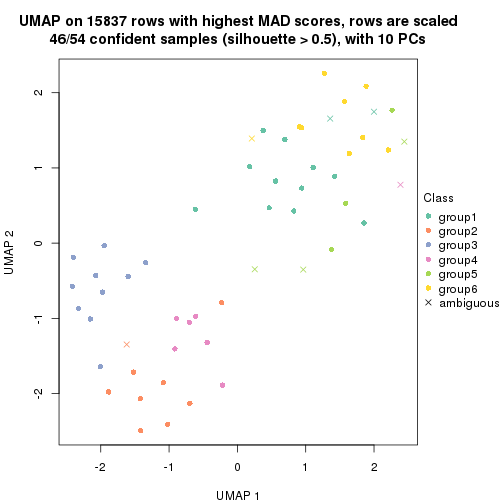
Following heatmap shows how subgroups are split when increasing k:
collect_classes(res)
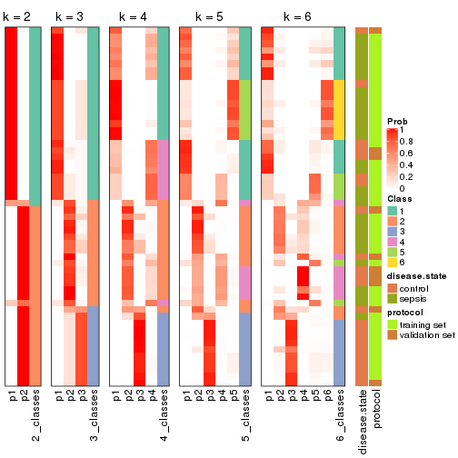
Test correlation between subgroups and known annotations. If the known annotation is numeric, one-way ANOVA test is applied, and if the known annotation is discrete, chi-squared contingency table test is applied.
test_to_known_factors(res)
#> n disease.state(p) protocol(p) k
#> MAD:kmeans 53 0.035968 0.324 2
#> MAD:kmeans 53 0.000899 0.188 3
#> MAD:kmeans 41 0.011699 0.142 4
#> MAD:kmeans 47 0.001166 0.083 5
#> MAD:kmeans 46 0.002573 0.047 6
If matrix rows can be associated to genes, consider to use GO_Enrichment(res,
...) to perform function enrichment for the signature genes.
The object with results only for a single top-value method and a single partition method can be extracted as:
res = res_list["MAD", "skmeans"]
# you can also extract it by
# res = res_list["MAD:skmeans"]
A summary of res and all the functions that can be applied to it:
res
#> A 'ConsensusPartition' object with k = 2, 3, 4, 5, 6.
#> On a matrix with 15837 rows and 54 columns.
#> Top rows (1000, 2000, 3000, 4000, 5000) are extracted by 'MAD' method.
#> Subgroups are detected by 'skmeans' method.
#> Performed in total 1250 partitions by row resampling.
#> Best k for subgroups seems to be 3.
#>
#> Following methods can be applied to this 'ConsensusPartition' object:
#> [1] "cola_report" "collect_classes" "collect_plots"
#> [4] "collect_stats" "colnames" "compare_signatures"
#> [7] "consensus_heatmap" "dimension_reduction" "functional_enrichment"
#> [10] "get_anno_col" "get_anno" "get_classes"
#> [13] "get_consensus" "get_matrix" "get_membership"
#> [16] "get_param" "get_signatures" "get_stats"
#> [19] "is_best_k" "is_stable_k" "membership_heatmap"
#> [22] "ncol" "nrow" "plot_ecdf"
#> [25] "rownames" "select_partition_number" "show"
#> [28] "suggest_best_k" "test_to_known_factors"
collect_plots() function collects all the plots made from res for all k (number of partitions)
into one single page to provide an easy and fast comparison between different k.
collect_plots(res)
The plots are:
k and the heatmap of
predicted classes for each k.k.k.k.All the plots in panels can be made by individual functions and they are plotted later in this section.
select_partition_number() produces several plots showing different
statistics for choosing “optimized” k. There are following statistics:
k;k, the area increased is defined as \(A_k - A_{k-1}\).The detailed explanations of these statistics can be found in the cola vignette.
Generally speaking, lower PAC score, higher mean silhouette score or higher
concordance corresponds to better partition. Rand index and Jaccard index
measure how similar the current partition is compared to partition with k-1.
If they are too similar, we won't accept k is better than k-1.
select_partition_number(res)
The numeric values for all these statistics can be obtained by get_stats().
get_stats(res)
#> k 1-PAC mean_silhouette concordance area_increased Rand Jaccard
#> 2 2 1.000 0.976 0.991 0.510 0.491 0.491
#> 3 3 1.000 0.993 0.994 0.201 0.890 0.777
#> 4 4 0.889 0.818 0.916 0.112 0.955 0.884
#> 5 5 0.739 0.744 0.858 0.079 0.909 0.744
#> 6 6 0.714 0.632 0.828 0.050 0.973 0.904
suggest_best_k() suggests the best \(k\) based on these statistics. The rules are as follows:
NA.suggest_best_k(res)
#> [1] 3
#> attr(,"optional")
#> [1] 2
There is also optional best \(k\) = 2 that is worth to check.
Following shows the table of the partitions (You need to click the show/hide
code output link to see it). The membership matrix (columns with name p*)
is inferred by
clue::cl_consensus()
function with the SE method. Basically the value in the membership matrix
represents the probability to belong to a certain group. The finall class
label for an item is determined with the group with highest probability it
belongs to.
In get_classes() function, the entropy is calculated from the membership
matrix and the silhouette score is calculated from the consensus matrix.
cbind(get_classes(res, k = 2), get_membership(res, k = 2))
#> class entropy silhouette p1 p2
#> GSM134895 1 0.000 0.983 1.000 0.000
#> GSM134896 2 0.000 0.998 0.000 1.000
#> GSM134897 2 0.000 0.998 0.000 1.000
#> GSM134898 2 0.000 0.998 0.000 1.000
#> GSM134905 2 0.000 0.998 0.000 1.000
#> GSM135018 2 0.000 0.998 0.000 1.000
#> GSM135674 1 0.000 0.983 1.000 0.000
#> GSM135683 2 0.000 0.998 0.000 1.000
#> GSM135685 2 0.000 0.998 0.000 1.000
#> GSM135699 1 0.000 0.983 1.000 0.000
#> GSM135019 2 0.000 0.998 0.000 1.000
#> GSM135026 1 0.000 0.983 1.000 0.000
#> GSM135033 2 0.000 0.998 0.000 1.000
#> GSM135042 1 0.000 0.983 1.000 0.000
#> GSM135057 2 0.000 0.998 0.000 1.000
#> GSM135068 1 0.000 0.983 1.000 0.000
#> GSM135071 2 0.000 0.998 0.000 1.000
#> GSM135078 2 0.000 0.998 0.000 1.000
#> GSM135163 2 0.000 0.998 0.000 1.000
#> GSM135166 2 0.000 0.998 0.000 1.000
#> GSM135223 2 0.000 0.998 0.000 1.000
#> GSM135224 2 0.000 0.998 0.000 1.000
#> GSM135228 1 0.000 0.983 1.000 0.000
#> GSM135262 1 0.000 0.983 1.000 0.000
#> GSM135263 2 0.000 0.998 0.000 1.000
#> GSM135279 2 0.000 0.998 0.000 1.000
#> GSM135661 1 0.000 0.983 1.000 0.000
#> GSM135662 2 0.000 0.998 0.000 1.000
#> GSM135663 2 0.000 0.998 0.000 1.000
#> GSM135664 2 0.000 0.998 0.000 1.000
#> GSM135665 1 0.000 0.983 1.000 0.000
#> GSM135666 1 0.000 0.983 1.000 0.000
#> GSM135668 1 0.000 0.983 1.000 0.000
#> GSM135670 1 0.000 0.983 1.000 0.000
#> GSM135671 1 0.000 0.983 1.000 0.000
#> GSM135675 1 0.000 0.983 1.000 0.000
#> GSM135676 1 0.000 0.983 1.000 0.000
#> GSM135677 1 0.000 0.983 1.000 0.000
#> GSM135679 1 0.000 0.983 1.000 0.000
#> GSM135680 2 0.000 0.998 0.000 1.000
#> GSM135681 1 0.988 0.223 0.564 0.436
#> GSM135682 2 0.000 0.998 0.000 1.000
#> GSM135687 1 0.000 0.983 1.000 0.000
#> GSM135688 1 0.000 0.983 1.000 0.000
#> GSM135689 1 0.000 0.983 1.000 0.000
#> GSM135693 2 0.000 0.998 0.000 1.000
#> GSM135694 1 0.000 0.983 1.000 0.000
#> GSM135695 1 0.000 0.983 1.000 0.000
#> GSM135696 1 0.000 0.983 1.000 0.000
#> GSM135697 1 0.000 0.983 1.000 0.000
#> GSM135698 2 0.000 0.998 0.000 1.000
#> GSM135700 1 0.000 0.983 1.000 0.000
#> GSM135702 2 0.278 0.949 0.048 0.952
#> GSM135703 2 0.000 0.998 0.000 1.000
cbind(get_classes(res, k = 3), get_membership(res, k = 3))
#> class entropy silhouette p1 p2 p3
#> GSM134895 1 0.0000 0.998 1.000 0.000 0.000
#> GSM134896 3 0.0000 0.994 0.000 0.000 1.000
#> GSM134897 3 0.0000 0.994 0.000 0.000 1.000
#> GSM134898 3 0.0000 0.994 0.000 0.000 1.000
#> GSM134905 3 0.0000 0.994 0.000 0.000 1.000
#> GSM135018 3 0.0000 0.994 0.000 0.000 1.000
#> GSM135674 1 0.0747 0.987 0.984 0.016 0.000
#> GSM135683 3 0.0000 0.994 0.000 0.000 1.000
#> GSM135685 3 0.0000 0.994 0.000 0.000 1.000
#> GSM135699 1 0.0000 0.998 1.000 0.000 0.000
#> GSM135019 3 0.0000 0.994 0.000 0.000 1.000
#> GSM135026 1 0.0592 0.990 0.988 0.012 0.000
#> GSM135033 3 0.0000 0.994 0.000 0.000 1.000
#> GSM135042 1 0.0000 0.998 1.000 0.000 0.000
#> GSM135057 2 0.1031 0.994 0.000 0.976 0.024
#> GSM135068 1 0.0000 0.998 1.000 0.000 0.000
#> GSM135071 3 0.0892 0.983 0.000 0.020 0.980
#> GSM135078 3 0.0000 0.994 0.000 0.000 1.000
#> GSM135163 2 0.1031 0.992 0.000 0.976 0.024
#> GSM135166 3 0.0000 0.994 0.000 0.000 1.000
#> GSM135223 2 0.1031 0.994 0.000 0.976 0.024
#> GSM135224 2 0.1031 0.994 0.000 0.976 0.024
#> GSM135228 1 0.0000 0.998 1.000 0.000 0.000
#> GSM135262 1 0.0000 0.998 1.000 0.000 0.000
#> GSM135263 3 0.0000 0.994 0.000 0.000 1.000
#> GSM135279 3 0.0747 0.986 0.000 0.016 0.984
#> GSM135661 1 0.0000 0.998 1.000 0.000 0.000
#> GSM135662 3 0.1411 0.970 0.000 0.036 0.964
#> GSM135663 3 0.0424 0.990 0.000 0.008 0.992
#> GSM135664 3 0.0237 0.992 0.000 0.004 0.996
#> GSM135665 1 0.0000 0.998 1.000 0.000 0.000
#> GSM135666 1 0.0000 0.998 1.000 0.000 0.000
#> GSM135668 1 0.0592 0.990 0.988 0.012 0.000
#> GSM135670 1 0.0000 0.998 1.000 0.000 0.000
#> GSM135671 1 0.0000 0.998 1.000 0.000 0.000
#> GSM135675 1 0.0000 0.998 1.000 0.000 0.000
#> GSM135676 1 0.0000 0.998 1.000 0.000 0.000
#> GSM135677 1 0.0000 0.998 1.000 0.000 0.000
#> GSM135679 1 0.0000 0.998 1.000 0.000 0.000
#> GSM135680 2 0.0592 0.989 0.000 0.988 0.012
#> GSM135681 2 0.0237 0.983 0.000 0.996 0.004
#> GSM135682 3 0.0000 0.994 0.000 0.000 1.000
#> GSM135687 1 0.0000 0.998 1.000 0.000 0.000
#> GSM135688 1 0.0000 0.998 1.000 0.000 0.000
#> GSM135689 1 0.0000 0.998 1.000 0.000 0.000
#> GSM135693 2 0.1031 0.994 0.000 0.976 0.024
#> GSM135694 1 0.0000 0.998 1.000 0.000 0.000
#> GSM135695 1 0.0000 0.998 1.000 0.000 0.000
#> GSM135696 1 0.0000 0.998 1.000 0.000 0.000
#> GSM135697 1 0.0000 0.998 1.000 0.000 0.000
#> GSM135698 3 0.1289 0.975 0.000 0.032 0.968
#> GSM135700 1 0.0592 0.990 0.988 0.012 0.000
#> GSM135702 3 0.1267 0.976 0.004 0.024 0.972
#> GSM135703 3 0.0000 0.994 0.000 0.000 1.000
cbind(get_classes(res, k = 4), get_membership(res, k = 4))
#> class entropy silhouette p1 p2 p3 p4
#> GSM134895 1 0.1398 0.91274 0.956 0.040 0.000 0.004
#> GSM134896 3 0.0000 0.85196 0.000 0.000 1.000 0.000
#> GSM134897 3 0.0000 0.85196 0.000 0.000 1.000 0.000
#> GSM134898 3 0.0000 0.85196 0.000 0.000 1.000 0.000
#> GSM134905 3 0.0000 0.85196 0.000 0.000 1.000 0.000
#> GSM135018 3 0.2589 0.84018 0.000 0.116 0.884 0.000
#> GSM135674 1 0.4981 -0.06605 0.536 0.464 0.000 0.000
#> GSM135683 3 0.0000 0.85196 0.000 0.000 1.000 0.000
#> GSM135685 3 0.0000 0.85196 0.000 0.000 1.000 0.000
#> GSM135699 1 0.0000 0.94015 1.000 0.000 0.000 0.000
#> GSM135019 3 0.0000 0.85196 0.000 0.000 1.000 0.000
#> GSM135026 1 0.4996 -0.15526 0.516 0.484 0.000 0.000
#> GSM135033 3 0.0000 0.85196 0.000 0.000 1.000 0.000
#> GSM135042 1 0.2161 0.88969 0.932 0.048 0.016 0.004
#> GSM135057 4 0.0188 0.99324 0.000 0.000 0.004 0.996
#> GSM135068 1 0.0188 0.93913 0.996 0.004 0.000 0.000
#> GSM135071 3 0.5882 0.64456 0.000 0.344 0.608 0.048
#> GSM135078 3 0.2704 0.83775 0.000 0.124 0.876 0.000
#> GSM135163 4 0.0188 0.99324 0.000 0.000 0.004 0.996
#> GSM135166 3 0.0000 0.85196 0.000 0.000 1.000 0.000
#> GSM135223 4 0.0188 0.99324 0.000 0.000 0.004 0.996
#> GSM135224 4 0.0188 0.99324 0.000 0.000 0.004 0.996
#> GSM135228 1 0.0817 0.92793 0.976 0.024 0.000 0.000
#> GSM135262 1 0.0336 0.93745 0.992 0.008 0.000 0.000
#> GSM135263 3 0.3157 0.82838 0.000 0.144 0.852 0.004
#> GSM135279 3 0.5495 0.65999 0.000 0.348 0.624 0.028
#> GSM135661 1 0.0592 0.93315 0.984 0.016 0.000 0.000
#> GSM135662 3 0.6507 0.40711 0.000 0.464 0.464 0.072
#> GSM135663 3 0.5172 0.61161 0.000 0.404 0.588 0.008
#> GSM135664 3 0.4800 0.68765 0.000 0.340 0.656 0.004
#> GSM135665 1 0.0188 0.93982 0.996 0.004 0.000 0.000
#> GSM135666 1 0.0592 0.93386 0.984 0.016 0.000 0.000
#> GSM135668 2 0.4977 -0.00804 0.460 0.540 0.000 0.000
#> GSM135670 1 0.0336 0.93817 0.992 0.008 0.000 0.000
#> GSM135671 1 0.0188 0.93982 0.996 0.004 0.000 0.000
#> GSM135675 1 0.0188 0.93982 0.996 0.004 0.000 0.000
#> GSM135676 1 0.0188 0.93982 0.996 0.004 0.000 0.000
#> GSM135677 1 0.0188 0.93913 0.996 0.004 0.000 0.000
#> GSM135679 1 0.0188 0.93982 0.996 0.004 0.000 0.000
#> GSM135680 4 0.0592 0.98346 0.000 0.016 0.000 0.984
#> GSM135681 4 0.0895 0.97484 0.004 0.020 0.000 0.976
#> GSM135682 3 0.2589 0.84018 0.000 0.116 0.884 0.000
#> GSM135687 1 0.0000 0.94015 1.000 0.000 0.000 0.000
#> GSM135688 1 0.0000 0.94015 1.000 0.000 0.000 0.000
#> GSM135689 1 0.0000 0.94015 1.000 0.000 0.000 0.000
#> GSM135693 4 0.0188 0.99324 0.000 0.000 0.004 0.996
#> GSM135694 1 0.0188 0.93982 0.996 0.004 0.000 0.000
#> GSM135695 1 0.0000 0.94015 1.000 0.000 0.000 0.000
#> GSM135696 1 0.0188 0.93982 0.996 0.004 0.000 0.000
#> GSM135697 1 0.0000 0.94015 1.000 0.000 0.000 0.000
#> GSM135698 2 0.1902 0.57348 0.000 0.932 0.064 0.004
#> GSM135700 1 0.1474 0.89917 0.948 0.052 0.000 0.000
#> GSM135702 2 0.1109 0.57845 0.004 0.968 0.028 0.000
#> GSM135703 3 0.2589 0.84018 0.000 0.116 0.884 0.000
cbind(get_classes(res, k = 5), get_membership(res, k = 5))
#> class entropy silhouette p1 p2 p3 p4 p5
#> GSM134895 1 0.4850 0.561 0.700 0.076 0.000 0.000 0.224
#> GSM134896 3 0.0000 0.830 0.000 0.000 1.000 0.000 0.000
#> GSM134897 3 0.0000 0.830 0.000 0.000 1.000 0.000 0.000
#> GSM134898 3 0.0000 0.830 0.000 0.000 1.000 0.000 0.000
#> GSM134905 3 0.0000 0.830 0.000 0.000 1.000 0.000 0.000
#> GSM135018 3 0.3684 0.584 0.000 0.280 0.720 0.000 0.000
#> GSM135674 5 0.5221 0.783 0.400 0.048 0.000 0.000 0.552
#> GSM135683 3 0.0404 0.828 0.000 0.000 0.988 0.000 0.012
#> GSM135685 3 0.0404 0.828 0.000 0.000 0.988 0.000 0.012
#> GSM135699 1 0.0000 0.856 1.000 0.000 0.000 0.000 0.000
#> GSM135019 3 0.0404 0.828 0.000 0.000 0.988 0.000 0.012
#> GSM135026 5 0.4327 0.826 0.360 0.008 0.000 0.000 0.632
#> GSM135033 3 0.0404 0.828 0.000 0.000 0.988 0.000 0.012
#> GSM135042 1 0.6059 0.347 0.608 0.100 0.024 0.000 0.268
#> GSM135057 4 0.0000 0.966 0.000 0.000 0.000 1.000 0.000
#> GSM135068 1 0.1484 0.849 0.944 0.008 0.000 0.000 0.048
#> GSM135071 2 0.4603 0.547 0.000 0.668 0.300 0.032 0.000
#> GSM135078 3 0.4118 0.464 0.000 0.336 0.660 0.004 0.000
#> GSM135163 4 0.1043 0.949 0.000 0.040 0.000 0.960 0.000
#> GSM135166 3 0.0000 0.830 0.000 0.000 1.000 0.000 0.000
#> GSM135223 4 0.0000 0.966 0.000 0.000 0.000 1.000 0.000
#> GSM135224 4 0.0000 0.966 0.000 0.000 0.000 1.000 0.000
#> GSM135228 1 0.3888 0.724 0.796 0.056 0.000 0.000 0.148
#> GSM135262 1 0.2685 0.819 0.880 0.028 0.000 0.000 0.092
#> GSM135263 3 0.4196 0.417 0.000 0.356 0.640 0.004 0.000
#> GSM135279 2 0.4341 0.456 0.000 0.628 0.364 0.008 0.000
#> GSM135661 1 0.3141 0.792 0.852 0.040 0.000 0.000 0.108
#> GSM135662 2 0.3511 0.623 0.000 0.836 0.124 0.020 0.020
#> GSM135663 2 0.3751 0.617 0.000 0.772 0.212 0.004 0.012
#> GSM135664 2 0.4517 0.444 0.000 0.616 0.372 0.004 0.008
#> GSM135665 1 0.0290 0.854 0.992 0.000 0.000 0.000 0.008
#> GSM135666 1 0.2824 0.810 0.872 0.032 0.000 0.000 0.096
#> GSM135668 5 0.5052 0.818 0.340 0.048 0.000 0.000 0.612
#> GSM135670 1 0.1792 0.795 0.916 0.000 0.000 0.000 0.084
#> GSM135671 1 0.0290 0.854 0.992 0.000 0.000 0.000 0.008
#> GSM135675 1 0.1942 0.807 0.920 0.012 0.000 0.000 0.068
#> GSM135676 1 0.0609 0.850 0.980 0.000 0.000 0.000 0.020
#> GSM135677 1 0.2482 0.822 0.892 0.024 0.000 0.000 0.084
#> GSM135679 1 0.1121 0.836 0.956 0.000 0.000 0.000 0.044
#> GSM135680 4 0.2228 0.933 0.000 0.048 0.000 0.912 0.040
#> GSM135681 4 0.2959 0.897 0.000 0.036 0.000 0.864 0.100
#> GSM135682 3 0.3835 0.622 0.000 0.244 0.744 0.000 0.012
#> GSM135687 1 0.1981 0.839 0.920 0.016 0.000 0.000 0.064
#> GSM135688 1 0.0000 0.856 1.000 0.000 0.000 0.000 0.000
#> GSM135689 1 0.1670 0.848 0.936 0.012 0.000 0.000 0.052
#> GSM135693 4 0.0000 0.966 0.000 0.000 0.000 1.000 0.000
#> GSM135694 1 0.0290 0.854 0.992 0.000 0.000 0.000 0.008
#> GSM135695 1 0.0794 0.854 0.972 0.000 0.000 0.000 0.028
#> GSM135696 1 0.0992 0.848 0.968 0.008 0.000 0.000 0.024
#> GSM135697 1 0.0609 0.856 0.980 0.000 0.000 0.000 0.020
#> GSM135698 2 0.4727 0.271 0.000 0.532 0.016 0.000 0.452
#> GSM135700 1 0.4725 0.230 0.680 0.036 0.000 0.004 0.280
#> GSM135702 2 0.4297 0.239 0.000 0.528 0.000 0.000 0.472
#> GSM135703 3 0.4044 0.608 0.000 0.252 0.732 0.004 0.012
cbind(get_classes(res, k = 6), get_membership(res, k = 6))
#> class entropy silhouette p1 p2 p3 p4 p5 p6
#> GSM134895 1 0.4821 -0.5194 0.484 0.008 0.000 0.000 0.036 0.472
#> GSM134896 3 0.0146 0.7984 0.000 0.000 0.996 0.000 0.000 0.004
#> GSM134897 3 0.0000 0.7988 0.000 0.000 1.000 0.000 0.000 0.000
#> GSM134898 3 0.0000 0.7988 0.000 0.000 1.000 0.000 0.000 0.000
#> GSM134905 3 0.0000 0.7988 0.000 0.000 1.000 0.000 0.000 0.000
#> GSM135018 3 0.3684 0.4714 0.000 0.332 0.664 0.000 0.000 0.004
#> GSM135674 5 0.5475 0.2265 0.296 0.012 0.000 0.000 0.576 0.116
#> GSM135683 3 0.0858 0.7904 0.000 0.000 0.968 0.000 0.004 0.028
#> GSM135685 3 0.0858 0.7904 0.000 0.000 0.968 0.000 0.004 0.028
#> GSM135699 1 0.0146 0.7695 0.996 0.000 0.000 0.000 0.000 0.004
#> GSM135019 3 0.0858 0.7904 0.000 0.000 0.968 0.000 0.004 0.028
#> GSM135026 5 0.4896 0.4003 0.196 0.008 0.000 0.000 0.676 0.120
#> GSM135033 3 0.0458 0.7956 0.000 0.000 0.984 0.000 0.000 0.016
#> GSM135042 6 0.4225 0.0000 0.320 0.008 0.008 0.000 0.008 0.656
#> GSM135057 4 0.0146 0.9290 0.000 0.000 0.000 0.996 0.000 0.004
#> GSM135068 1 0.1531 0.7517 0.928 0.000 0.000 0.000 0.004 0.068
#> GSM135071 2 0.4187 0.8478 0.000 0.768 0.164 0.036 0.012 0.020
#> GSM135078 3 0.4080 0.1018 0.000 0.456 0.536 0.000 0.000 0.008
#> GSM135163 4 0.1138 0.9158 0.000 0.012 0.000 0.960 0.004 0.024
#> GSM135166 3 0.0000 0.7988 0.000 0.000 1.000 0.000 0.000 0.000
#> GSM135223 4 0.0000 0.9298 0.000 0.000 0.000 1.000 0.000 0.000
#> GSM135224 4 0.0000 0.9298 0.000 0.000 0.000 1.000 0.000 0.000
#> GSM135228 1 0.4602 0.2373 0.628 0.004 0.000 0.000 0.048 0.320
#> GSM135262 1 0.3976 0.5756 0.748 0.004 0.000 0.000 0.052 0.196
#> GSM135263 3 0.4315 0.3665 0.000 0.364 0.612 0.000 0.008 0.016
#> GSM135279 2 0.3928 0.8373 0.000 0.764 0.192 0.012 0.008 0.024
#> GSM135661 1 0.3596 0.5442 0.748 0.004 0.000 0.000 0.016 0.232
#> GSM135662 2 0.4329 0.6874 0.000 0.800 0.060 0.040 0.048 0.052
#> GSM135663 2 0.3626 0.8305 0.000 0.800 0.148 0.000 0.032 0.020
#> GSM135664 2 0.3076 0.7891 0.000 0.760 0.240 0.000 0.000 0.000
#> GSM135665 1 0.1297 0.7660 0.948 0.000 0.000 0.000 0.012 0.040
#> GSM135666 1 0.3780 0.5150 0.732 0.008 0.000 0.000 0.016 0.244
#> GSM135668 5 0.4494 0.4330 0.172 0.020 0.000 0.000 0.732 0.076
#> GSM135670 1 0.3394 0.6193 0.804 0.000 0.000 0.000 0.144 0.052
#> GSM135671 1 0.0972 0.7673 0.964 0.000 0.000 0.000 0.008 0.028
#> GSM135675 1 0.3368 0.6701 0.824 0.004 0.000 0.000 0.084 0.088
#> GSM135676 1 0.1434 0.7646 0.940 0.000 0.000 0.000 0.012 0.048
#> GSM135677 1 0.2845 0.6569 0.820 0.004 0.000 0.000 0.004 0.172
#> GSM135679 1 0.1930 0.7569 0.916 0.000 0.000 0.000 0.036 0.048
#> GSM135680 4 0.3217 0.8607 0.000 0.044 0.000 0.852 0.036 0.068
#> GSM135681 4 0.5192 0.7145 0.000 0.060 0.000 0.696 0.100 0.144
#> GSM135682 3 0.3707 0.5034 0.000 0.312 0.680 0.000 0.000 0.008
#> GSM135687 1 0.2333 0.7149 0.872 0.004 0.000 0.000 0.004 0.120
#> GSM135688 1 0.0146 0.7695 0.996 0.000 0.000 0.000 0.000 0.004
#> GSM135689 1 0.1806 0.7486 0.908 0.004 0.000 0.000 0.000 0.088
#> GSM135693 4 0.0000 0.9298 0.000 0.000 0.000 1.000 0.000 0.000
#> GSM135694 1 0.1265 0.7635 0.948 0.000 0.000 0.000 0.008 0.044
#> GSM135695 1 0.1418 0.7648 0.944 0.000 0.000 0.000 0.024 0.032
#> GSM135696 1 0.1578 0.7611 0.936 0.004 0.000 0.000 0.012 0.048
#> GSM135697 1 0.1010 0.7649 0.960 0.000 0.000 0.000 0.004 0.036
#> GSM135698 5 0.5705 0.2771 0.000 0.368 0.020 0.004 0.520 0.088
#> GSM135700 1 0.6122 0.0973 0.560 0.040 0.000 0.000 0.192 0.208
#> GSM135702 5 0.5288 0.2562 0.000 0.404 0.004 0.000 0.504 0.088
#> GSM135703 3 0.3988 0.4725 0.000 0.324 0.660 0.000 0.004 0.012
Heatmaps for the consensus matrix. It visualizes the probability of two samples to be in a same group.
consensus_heatmap(res, k = 2)
consensus_heatmap(res, k = 3)
consensus_heatmap(res, k = 4)
consensus_heatmap(res, k = 5)
consensus_heatmap(res, k = 6)
Heatmaps for the membership of samples in all partitions to see how consistent they are:
membership_heatmap(res, k = 2)
membership_heatmap(res, k = 3)
membership_heatmap(res, k = 4)
membership_heatmap(res, k = 5)

membership_heatmap(res, k = 6)
As soon as we have had the classes for columns, we can look for signatures which are significantly different between classes which can be candidate marks for certain classes. Following are the heatmaps for signatures.
Signature heatmaps where rows are scaled:
get_signatures(res, k = 2)
get_signatures(res, k = 3)
get_signatures(res, k = 4)
get_signatures(res, k = 5)
get_signatures(res, k = 6)
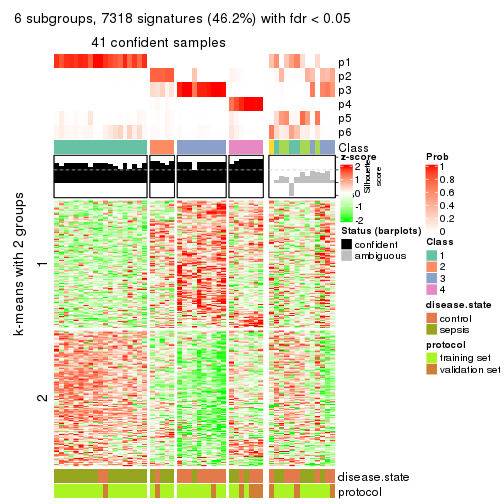
Signature heatmaps where rows are not scaled:
get_signatures(res, k = 2, scale_rows = FALSE)
get_signatures(res, k = 3, scale_rows = FALSE)
get_signatures(res, k = 4, scale_rows = FALSE)
get_signatures(res, k = 5, scale_rows = FALSE)
get_signatures(res, k = 6, scale_rows = FALSE)
Compare the overlap of signatures from different k:
compare_signatures(res)
get_signature() returns a data frame invisibly. TO get the list of signatures, the function
call should be assigned to a variable explicitly. In following code, if plot argument is set
to FALSE, no heatmap is plotted while only the differential analysis is performed.
# code only for demonstration
tb = get_signature(res, k = ..., plot = FALSE)
An example of the output of tb is:
#> which_row fdr mean_1 mean_2 scaled_mean_1 scaled_mean_2 km
#> 1 38 0.042760348 8.373488 9.131774 -0.5533452 0.5164555 1
#> 2 40 0.018707592 7.106213 8.469186 -0.6173731 0.5762149 1
#> 3 55 0.019134737 10.221463 11.207825 -0.6159697 0.5749050 1
#> 4 59 0.006059896 5.921854 7.869574 -0.6899429 0.6439467 1
#> 5 60 0.018055526 8.928898 10.211722 -0.6204761 0.5791110 1
#> 6 98 0.009384629 15.714769 14.887706 0.6635654 -0.6193277 2
...
The columns in tb are:
which_row: row indices corresponding to the input matrix.fdr: FDR for the differential test. mean_x: The mean value in group x.scaled_mean_x: The mean value in group x after rows are scaled.km: Row groups if k-means clustering is applied to rows.UMAP plot which shows how samples are separated.
dimension_reduction(res, k = 2, method = "UMAP")
dimension_reduction(res, k = 3, method = "UMAP")
dimension_reduction(res, k = 4, method = "UMAP")
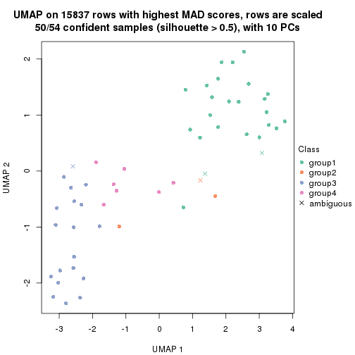
dimension_reduction(res, k = 5, method = "UMAP")
dimension_reduction(res, k = 6, method = "UMAP")
Following heatmap shows how subgroups are split when increasing k:
collect_classes(res)
Test correlation between subgroups and known annotations. If the known annotation is numeric, one-way ANOVA test is applied, and if the known annotation is discrete, chi-squared contingency table test is applied.
test_to_known_factors(res)
#> n disease.state(p) protocol(p) k
#> MAD:skmeans 53 0.035968 0.3236 2
#> MAD:skmeans 54 0.080652 0.0182 3
#> MAD:skmeans 50 0.014904 0.0614 4
#> MAD:skmeans 46 0.007462 0.0335 5
#> MAD:skmeans 41 0.000257 0.0170 6
If matrix rows can be associated to genes, consider to use GO_Enrichment(res,
...) to perform function enrichment for the signature genes.
The object with results only for a single top-value method and a single partition method can be extracted as:
res = res_list["MAD", "pam"]
# you can also extract it by
# res = res_list["MAD:pam"]
A summary of res and all the functions that can be applied to it:
res
#> A 'ConsensusPartition' object with k = 2, 3, 4, 5, 6.
#> On a matrix with 15837 rows and 54 columns.
#> Top rows (1000, 2000, 3000, 4000, 5000) are extracted by 'MAD' method.
#> Subgroups are detected by 'pam' method.
#> Performed in total 1250 partitions by row resampling.
#> Best k for subgroups seems to be 3.
#>
#> Following methods can be applied to this 'ConsensusPartition' object:
#> [1] "cola_report" "collect_classes" "collect_plots"
#> [4] "collect_stats" "colnames" "compare_signatures"
#> [7] "consensus_heatmap" "dimension_reduction" "functional_enrichment"
#> [10] "get_anno_col" "get_anno" "get_classes"
#> [13] "get_consensus" "get_matrix" "get_membership"
#> [16] "get_param" "get_signatures" "get_stats"
#> [19] "is_best_k" "is_stable_k" "membership_heatmap"
#> [22] "ncol" "nrow" "plot_ecdf"
#> [25] "rownames" "select_partition_number" "show"
#> [28] "suggest_best_k" "test_to_known_factors"
collect_plots() function collects all the plots made from res for all k (number of partitions)
into one single page to provide an easy and fast comparison between different k.
collect_plots(res)
The plots are:
k and the heatmap of
predicted classes for each k.k.k.k.All the plots in panels can be made by individual functions and they are plotted later in this section.
select_partition_number() produces several plots showing different
statistics for choosing “optimized” k. There are following statistics:
k;k, the area increased is defined as \(A_k - A_{k-1}\).The detailed explanations of these statistics can be found in the cola vignette.
Generally speaking, lower PAC score, higher mean silhouette score or higher
concordance corresponds to better partition. Rand index and Jaccard index
measure how similar the current partition is compared to partition with k-1.
If they are too similar, we won't accept k is better than k-1.
select_partition_number(res)
The numeric values for all these statistics can be obtained by get_stats().
get_stats(res)
#> k 1-PAC mean_silhouette concordance area_increased Rand Jaccard
#> 2 2 1.000 0.981 0.992 0.5096 0.491 0.491
#> 3 3 1.000 0.953 0.968 0.2087 0.890 0.777
#> 4 4 0.797 0.874 0.923 0.1006 0.937 0.838
#> 5 5 0.795 0.756 0.885 0.0961 0.927 0.775
#> 6 6 0.878 0.793 0.901 0.0559 0.934 0.756
suggest_best_k() suggests the best \(k\) based on these statistics. The rules are as follows:
NA.suggest_best_k(res)
#> [1] 3
#> attr(,"optional")
#> [1] 2
There is also optional best \(k\) = 2 that is worth to check.
Following shows the table of the partitions (You need to click the show/hide
code output link to see it). The membership matrix (columns with name p*)
is inferred by
clue::cl_consensus()
function with the SE method. Basically the value in the membership matrix
represents the probability to belong to a certain group. The finall class
label for an item is determined with the group with highest probability it
belongs to.
In get_classes() function, the entropy is calculated from the membership
matrix and the silhouette score is calculated from the consensus matrix.
cbind(get_classes(res, k = 2), get_membership(res, k = 2))
#> class entropy silhouette p1 p2
#> GSM134895 1 0.000 0.987 1.000 0.000
#> GSM134896 2 0.000 0.997 0.000 1.000
#> GSM134897 2 0.000 0.997 0.000 1.000
#> GSM134898 2 0.000 0.997 0.000 1.000
#> GSM134905 2 0.000 0.997 0.000 1.000
#> GSM135018 2 0.000 0.997 0.000 1.000
#> GSM135674 1 0.000 0.987 1.000 0.000
#> GSM135683 2 0.000 0.997 0.000 1.000
#> GSM135685 2 0.000 0.997 0.000 1.000
#> GSM135699 1 0.000 0.987 1.000 0.000
#> GSM135019 2 0.000 0.997 0.000 1.000
#> GSM135026 1 0.000 0.987 1.000 0.000
#> GSM135033 2 0.000 0.997 0.000 1.000
#> GSM135042 1 0.000 0.987 1.000 0.000
#> GSM135057 2 0.000 0.997 0.000 1.000
#> GSM135068 1 0.000 0.987 1.000 0.000
#> GSM135071 2 0.000 0.997 0.000 1.000
#> GSM135078 2 0.000 0.997 0.000 1.000
#> GSM135163 2 0.000 0.997 0.000 1.000
#> GSM135166 2 0.000 0.997 0.000 1.000
#> GSM135223 2 0.000 0.997 0.000 1.000
#> GSM135224 2 0.000 0.997 0.000 1.000
#> GSM135228 1 0.000 0.987 1.000 0.000
#> GSM135262 1 0.000 0.987 1.000 0.000
#> GSM135263 2 0.000 0.997 0.000 1.000
#> GSM135279 2 0.000 0.997 0.000 1.000
#> GSM135661 1 0.000 0.987 1.000 0.000
#> GSM135662 2 0.000 0.997 0.000 1.000
#> GSM135663 2 0.000 0.997 0.000 1.000
#> GSM135664 2 0.000 0.997 0.000 1.000
#> GSM135665 1 0.000 0.987 1.000 0.000
#> GSM135666 1 0.000 0.987 1.000 0.000
#> GSM135668 1 0.000 0.987 1.000 0.000
#> GSM135670 1 0.000 0.987 1.000 0.000
#> GSM135671 1 0.000 0.987 1.000 0.000
#> GSM135675 1 0.000 0.987 1.000 0.000
#> GSM135676 1 0.000 0.987 1.000 0.000
#> GSM135677 1 0.000 0.987 1.000 0.000
#> GSM135679 1 0.000 0.987 1.000 0.000
#> GSM135680 2 0.000 0.997 0.000 1.000
#> GSM135681 1 0.925 0.481 0.660 0.340
#> GSM135682 2 0.000 0.997 0.000 1.000
#> GSM135687 1 0.000 0.987 1.000 0.000
#> GSM135688 1 0.000 0.987 1.000 0.000
#> GSM135689 1 0.000 0.987 1.000 0.000
#> GSM135693 2 0.000 0.997 0.000 1.000
#> GSM135694 1 0.000 0.987 1.000 0.000
#> GSM135695 1 0.000 0.987 1.000 0.000
#> GSM135696 1 0.000 0.987 1.000 0.000
#> GSM135697 1 0.000 0.987 1.000 0.000
#> GSM135698 2 0.000 0.997 0.000 1.000
#> GSM135700 1 0.000 0.987 1.000 0.000
#> GSM135702 2 0.358 0.925 0.068 0.932
#> GSM135703 2 0.000 0.997 0.000 1.000
cbind(get_classes(res, k = 3), get_membership(res, k = 3))
#> class entropy silhouette p1 p2 p3
#> GSM134895 1 0.0000 0.969 1.000 0.000 0.000
#> GSM134896 3 0.0424 0.970 0.000 0.008 0.992
#> GSM134897 3 0.0000 0.972 0.000 0.000 1.000
#> GSM134898 3 0.0000 0.972 0.000 0.000 1.000
#> GSM134905 3 0.1163 0.957 0.000 0.028 0.972
#> GSM135018 3 0.0424 0.970 0.000 0.008 0.992
#> GSM135674 1 0.0000 0.969 1.000 0.000 0.000
#> GSM135683 3 0.0000 0.972 0.000 0.000 1.000
#> GSM135685 3 0.0424 0.970 0.000 0.008 0.992
#> GSM135699 1 0.2066 0.956 0.940 0.060 0.000
#> GSM135019 3 0.1163 0.957 0.000 0.028 0.972
#> GSM135026 1 0.0000 0.969 1.000 0.000 0.000
#> GSM135033 3 0.0237 0.971 0.000 0.004 0.996
#> GSM135042 1 0.0000 0.969 1.000 0.000 0.000
#> GSM135057 2 0.2165 0.968 0.000 0.936 0.064
#> GSM135068 1 0.2066 0.956 0.940 0.060 0.000
#> GSM135071 3 0.0000 0.972 0.000 0.000 1.000
#> GSM135078 3 0.0000 0.972 0.000 0.000 1.000
#> GSM135163 2 0.2261 0.968 0.000 0.932 0.068
#> GSM135166 3 0.1163 0.957 0.000 0.028 0.972
#> GSM135223 2 0.2165 0.968 0.000 0.936 0.064
#> GSM135224 2 0.2165 0.968 0.000 0.936 0.064
#> GSM135228 1 0.0000 0.969 1.000 0.000 0.000
#> GSM135262 1 0.0000 0.969 1.000 0.000 0.000
#> GSM135263 3 0.0000 0.972 0.000 0.000 1.000
#> GSM135279 3 0.0000 0.972 0.000 0.000 1.000
#> GSM135661 1 0.0000 0.969 1.000 0.000 0.000
#> GSM135662 3 0.0000 0.972 0.000 0.000 1.000
#> GSM135663 3 0.0000 0.972 0.000 0.000 1.000
#> GSM135664 3 0.0000 0.972 0.000 0.000 1.000
#> GSM135665 1 0.2066 0.956 0.940 0.060 0.000
#> GSM135666 1 0.0000 0.969 1.000 0.000 0.000
#> GSM135668 1 0.0000 0.969 1.000 0.000 0.000
#> GSM135670 1 0.0000 0.969 1.000 0.000 0.000
#> GSM135671 1 0.2066 0.956 0.940 0.060 0.000
#> GSM135675 1 0.0000 0.969 1.000 0.000 0.000
#> GSM135676 1 0.2066 0.956 0.940 0.060 0.000
#> GSM135677 1 0.0000 0.969 1.000 0.000 0.000
#> GSM135679 1 0.0000 0.969 1.000 0.000 0.000
#> GSM135680 2 0.2625 0.958 0.000 0.916 0.084
#> GSM135681 2 0.3213 0.930 0.060 0.912 0.028
#> GSM135682 3 0.0000 0.972 0.000 0.000 1.000
#> GSM135687 1 0.0000 0.969 1.000 0.000 0.000
#> GSM135688 1 0.2066 0.956 0.940 0.060 0.000
#> GSM135689 1 0.0000 0.969 1.000 0.000 0.000
#> GSM135693 2 0.2486 0.929 0.060 0.932 0.008
#> GSM135694 1 0.2066 0.956 0.940 0.060 0.000
#> GSM135695 1 0.1529 0.961 0.960 0.040 0.000
#> GSM135696 1 0.2066 0.956 0.940 0.060 0.000
#> GSM135697 1 0.2066 0.956 0.940 0.060 0.000
#> GSM135698 3 0.4179 0.853 0.052 0.072 0.876
#> GSM135700 1 0.4346 0.760 0.816 0.184 0.000
#> GSM135702 3 0.5016 0.643 0.240 0.000 0.760
#> GSM135703 3 0.0000 0.972 0.000 0.000 1.000
cbind(get_classes(res, k = 4), get_membership(res, k = 4))
#> class entropy silhouette p1 p2 p3 p4
#> GSM134895 1 0.0000 0.953 1.000 0.000 0.000 0.000
#> GSM134896 3 0.3123 0.766 0.000 0.156 0.844 0.000
#> GSM134897 3 0.4643 0.792 0.000 0.344 0.656 0.000
#> GSM134898 3 0.4643 0.792 0.000 0.344 0.656 0.000
#> GSM134905 3 0.4194 0.811 0.000 0.228 0.764 0.008
#> GSM135018 2 0.1302 0.848 0.000 0.956 0.044 0.000
#> GSM135674 1 0.0000 0.953 1.000 0.000 0.000 0.000
#> GSM135683 2 0.2589 0.782 0.000 0.884 0.116 0.000
#> GSM135685 3 0.4985 0.296 0.000 0.468 0.532 0.000
#> GSM135699 1 0.3123 0.882 0.844 0.000 0.156 0.000
#> GSM135019 2 0.4482 0.558 0.000 0.728 0.264 0.008
#> GSM135026 1 0.0000 0.953 1.000 0.000 0.000 0.000
#> GSM135033 3 0.4193 0.820 0.000 0.268 0.732 0.000
#> GSM135042 1 0.0000 0.953 1.000 0.000 0.000 0.000
#> GSM135057 4 0.0000 0.997 0.000 0.000 0.000 1.000
#> GSM135068 1 0.0000 0.953 1.000 0.000 0.000 0.000
#> GSM135071 2 0.0188 0.877 0.000 0.996 0.000 0.004
#> GSM135078 2 0.0000 0.879 0.000 1.000 0.000 0.000
#> GSM135163 4 0.0000 0.997 0.000 0.000 0.000 1.000
#> GSM135166 2 0.3725 0.672 0.000 0.812 0.180 0.008
#> GSM135223 4 0.0000 0.997 0.000 0.000 0.000 1.000
#> GSM135224 4 0.0000 0.997 0.000 0.000 0.000 1.000
#> GSM135228 1 0.0000 0.953 1.000 0.000 0.000 0.000
#> GSM135262 1 0.0000 0.953 1.000 0.000 0.000 0.000
#> GSM135263 2 0.0000 0.879 0.000 1.000 0.000 0.000
#> GSM135279 2 0.0000 0.879 0.000 1.000 0.000 0.000
#> GSM135661 1 0.0000 0.953 1.000 0.000 0.000 0.000
#> GSM135662 2 0.0000 0.879 0.000 1.000 0.000 0.000
#> GSM135663 2 0.0000 0.879 0.000 1.000 0.000 0.000
#> GSM135664 2 0.0000 0.879 0.000 1.000 0.000 0.000
#> GSM135665 1 0.2647 0.902 0.880 0.000 0.120 0.000
#> GSM135666 1 0.0000 0.953 1.000 0.000 0.000 0.000
#> GSM135668 1 0.0000 0.953 1.000 0.000 0.000 0.000
#> GSM135670 1 0.0000 0.953 1.000 0.000 0.000 0.000
#> GSM135671 1 0.3123 0.882 0.844 0.000 0.156 0.000
#> GSM135675 1 0.0000 0.953 1.000 0.000 0.000 0.000
#> GSM135676 1 0.1211 0.938 0.960 0.000 0.040 0.000
#> GSM135677 1 0.0000 0.953 1.000 0.000 0.000 0.000
#> GSM135679 1 0.0000 0.953 1.000 0.000 0.000 0.000
#> GSM135680 4 0.0188 0.994 0.000 0.004 0.000 0.996
#> GSM135681 4 0.0336 0.989 0.000 0.008 0.000 0.992
#> GSM135682 2 0.0188 0.876 0.000 0.996 0.004 0.000
#> GSM135687 1 0.0000 0.953 1.000 0.000 0.000 0.000
#> GSM135688 1 0.3123 0.882 0.844 0.000 0.156 0.000
#> GSM135689 1 0.0000 0.953 1.000 0.000 0.000 0.000
#> GSM135693 4 0.0000 0.997 0.000 0.000 0.000 1.000
#> GSM135694 1 0.3123 0.882 0.844 0.000 0.156 0.000
#> GSM135695 1 0.0000 0.953 1.000 0.000 0.000 0.000
#> GSM135696 1 0.2760 0.898 0.872 0.000 0.128 0.000
#> GSM135697 1 0.2647 0.902 0.880 0.000 0.120 0.000
#> GSM135698 2 0.3301 0.751 0.048 0.876 0.000 0.076
#> GSM135700 1 0.3837 0.716 0.776 0.000 0.000 0.224
#> GSM135702 2 0.4431 0.373 0.304 0.696 0.000 0.000
#> GSM135703 2 0.0000 0.879 0.000 1.000 0.000 0.000
cbind(get_classes(res, k = 5), get_membership(res, k = 5))
#> class entropy silhouette p1 p2 p3 p4 p5
#> GSM134895 1 0.0000 0.8922 1.000 0.000 0.000 0.000 0.000
#> GSM134896 3 0.3480 0.6714 0.000 0.000 0.752 0.000 0.248
#> GSM134897 3 0.3074 0.7604 0.000 0.196 0.804 0.000 0.000
#> GSM134898 3 0.3143 0.7548 0.000 0.204 0.796 0.000 0.000
#> GSM134905 3 0.1478 0.7716 0.000 0.064 0.936 0.000 0.000
#> GSM135018 2 0.1197 0.7944 0.000 0.952 0.048 0.000 0.000
#> GSM135674 1 0.0000 0.8922 1.000 0.000 0.000 0.000 0.000
#> GSM135683 2 0.5336 0.4215 0.000 0.648 0.100 0.000 0.252
#> GSM135685 3 0.6323 0.4559 0.000 0.220 0.528 0.000 0.252
#> GSM135699 5 0.3508 0.9346 0.252 0.000 0.000 0.000 0.748
#> GSM135019 2 0.6694 -0.0646 0.000 0.420 0.328 0.000 0.252
#> GSM135026 1 0.0000 0.8922 1.000 0.000 0.000 0.000 0.000
#> GSM135033 3 0.2516 0.7822 0.000 0.140 0.860 0.000 0.000
#> GSM135042 1 0.0000 0.8922 1.000 0.000 0.000 0.000 0.000
#> GSM135057 4 0.0000 1.0000 0.000 0.000 0.000 1.000 0.000
#> GSM135068 1 0.1608 0.8086 0.928 0.000 0.000 0.000 0.072
#> GSM135071 2 0.0162 0.8228 0.000 0.996 0.000 0.004 0.000
#> GSM135078 2 0.0000 0.8245 0.000 1.000 0.000 0.000 0.000
#> GSM135163 4 0.0000 1.0000 0.000 0.000 0.000 1.000 0.000
#> GSM135166 2 0.3480 0.5824 0.000 0.752 0.248 0.000 0.000
#> GSM135223 4 0.0000 1.0000 0.000 0.000 0.000 1.000 0.000
#> GSM135224 4 0.0000 1.0000 0.000 0.000 0.000 1.000 0.000
#> GSM135228 1 0.0000 0.8922 1.000 0.000 0.000 0.000 0.000
#> GSM135262 1 0.0000 0.8922 1.000 0.000 0.000 0.000 0.000
#> GSM135263 2 0.0000 0.8245 0.000 1.000 0.000 0.000 0.000
#> GSM135279 2 0.0000 0.8245 0.000 1.000 0.000 0.000 0.000
#> GSM135661 1 0.0000 0.8922 1.000 0.000 0.000 0.000 0.000
#> GSM135662 2 0.0000 0.8245 0.000 1.000 0.000 0.000 0.000
#> GSM135663 2 0.0000 0.8245 0.000 1.000 0.000 0.000 0.000
#> GSM135664 2 0.0000 0.8245 0.000 1.000 0.000 0.000 0.000
#> GSM135665 1 0.4278 -0.3734 0.548 0.000 0.000 0.000 0.452
#> GSM135666 1 0.0000 0.8922 1.000 0.000 0.000 0.000 0.000
#> GSM135668 1 0.0000 0.8922 1.000 0.000 0.000 0.000 0.000
#> GSM135670 1 0.0000 0.8922 1.000 0.000 0.000 0.000 0.000
#> GSM135671 5 0.3508 0.9346 0.252 0.000 0.000 0.000 0.748
#> GSM135675 1 0.0000 0.8922 1.000 0.000 0.000 0.000 0.000
#> GSM135676 1 0.1544 0.8121 0.932 0.000 0.000 0.000 0.068
#> GSM135677 1 0.0000 0.8922 1.000 0.000 0.000 0.000 0.000
#> GSM135679 1 0.0000 0.8922 1.000 0.000 0.000 0.000 0.000
#> GSM135680 4 0.0000 1.0000 0.000 0.000 0.000 1.000 0.000
#> GSM135681 4 0.0000 1.0000 0.000 0.000 0.000 1.000 0.000
#> GSM135682 2 0.0290 0.8201 0.000 0.992 0.008 0.000 0.000
#> GSM135687 1 0.0000 0.8922 1.000 0.000 0.000 0.000 0.000
#> GSM135688 5 0.3508 0.9346 0.252 0.000 0.000 0.000 0.748
#> GSM135689 1 0.0000 0.8922 1.000 0.000 0.000 0.000 0.000
#> GSM135693 4 0.0000 1.0000 0.000 0.000 0.000 1.000 0.000
#> GSM135694 5 0.3508 0.9346 0.252 0.000 0.000 0.000 0.748
#> GSM135695 1 0.0000 0.8922 1.000 0.000 0.000 0.000 0.000
#> GSM135696 1 0.4300 -0.4493 0.524 0.000 0.000 0.000 0.476
#> GSM135697 5 0.4235 0.6608 0.424 0.000 0.000 0.000 0.576
#> GSM135698 2 0.3180 0.7066 0.068 0.856 0.000 0.076 0.000
#> GSM135700 1 0.4138 0.2248 0.616 0.000 0.000 0.384 0.000
#> GSM135702 2 0.4307 0.0782 0.500 0.500 0.000 0.000 0.000
#> GSM135703 2 0.0000 0.8245 0.000 1.000 0.000 0.000 0.000
cbind(get_classes(res, k = 6), get_membership(res, k = 6))
#> class entropy silhouette p1 p2 p3 p4 p5 p6
#> GSM134895 1 0.0000 0.868 1.000 0.000 0.000 0.000 0.000 0.000
#> GSM134896 3 0.3499 0.580 0.000 0.000 0.680 0.000 0.320 0.000
#> GSM134897 5 0.0713 0.944 0.000 0.028 0.000 0.000 0.972 0.000
#> GSM134898 5 0.1007 0.947 0.000 0.044 0.000 0.000 0.956 0.000
#> GSM134905 5 0.1204 0.885 0.000 0.000 0.056 0.000 0.944 0.000
#> GSM135018 2 0.1196 0.896 0.000 0.952 0.040 0.000 0.008 0.000
#> GSM135674 1 0.3371 0.596 0.708 0.000 0.292 0.000 0.000 0.000
#> GSM135683 3 0.4166 0.646 0.000 0.324 0.648 0.000 0.028 0.000
#> GSM135685 3 0.4587 0.751 0.000 0.108 0.688 0.000 0.204 0.000
#> GSM135699 6 0.0260 0.756 0.008 0.000 0.000 0.000 0.000 0.992
#> GSM135019 3 0.4669 0.763 0.000 0.164 0.688 0.000 0.148 0.000
#> GSM135026 1 0.0458 0.860 0.984 0.000 0.016 0.000 0.000 0.000
#> GSM135033 5 0.1141 0.941 0.000 0.052 0.000 0.000 0.948 0.000
#> GSM135042 1 0.0146 0.867 0.996 0.000 0.004 0.000 0.000 0.000
#> GSM135057 4 0.0000 1.000 0.000 0.000 0.000 1.000 0.000 0.000
#> GSM135068 1 0.1663 0.787 0.912 0.000 0.000 0.000 0.000 0.088
#> GSM135071 2 0.0146 0.923 0.000 0.996 0.000 0.004 0.000 0.000
#> GSM135078 2 0.0458 0.920 0.000 0.984 0.016 0.000 0.000 0.000
#> GSM135163 4 0.0000 1.000 0.000 0.000 0.000 1.000 0.000 0.000
#> GSM135166 2 0.3211 0.756 0.000 0.824 0.056 0.000 0.120 0.000
#> GSM135223 4 0.0000 1.000 0.000 0.000 0.000 1.000 0.000 0.000
#> GSM135224 4 0.0000 1.000 0.000 0.000 0.000 1.000 0.000 0.000
#> GSM135228 1 0.0146 0.867 0.996 0.000 0.004 0.000 0.000 0.000
#> GSM135262 1 0.0000 0.868 1.000 0.000 0.000 0.000 0.000 0.000
#> GSM135263 2 0.0665 0.920 0.000 0.980 0.004 0.000 0.008 0.008
#> GSM135279 2 0.0000 0.923 0.000 1.000 0.000 0.000 0.000 0.000
#> GSM135661 1 0.0146 0.867 0.996 0.000 0.004 0.000 0.000 0.000
#> GSM135662 2 0.0260 0.923 0.000 0.992 0.008 0.000 0.000 0.000
#> GSM135663 2 0.0000 0.923 0.000 1.000 0.000 0.000 0.000 0.000
#> GSM135664 2 0.0458 0.920 0.000 0.984 0.016 0.000 0.000 0.000
#> GSM135665 1 0.3860 -0.165 0.528 0.000 0.000 0.000 0.000 0.472
#> GSM135666 1 0.0000 0.868 1.000 0.000 0.000 0.000 0.000 0.000
#> GSM135668 1 0.3371 0.596 0.708 0.000 0.292 0.000 0.000 0.000
#> GSM135670 1 0.0000 0.868 1.000 0.000 0.000 0.000 0.000 0.000
#> GSM135671 6 0.0260 0.756 0.008 0.000 0.000 0.000 0.000 0.992
#> GSM135675 1 0.0000 0.868 1.000 0.000 0.000 0.000 0.000 0.000
#> GSM135676 1 0.0632 0.851 0.976 0.000 0.000 0.000 0.000 0.024
#> GSM135677 1 0.0000 0.868 1.000 0.000 0.000 0.000 0.000 0.000
#> GSM135679 1 0.0000 0.868 1.000 0.000 0.000 0.000 0.000 0.000
#> GSM135680 4 0.0000 1.000 0.000 0.000 0.000 1.000 0.000 0.000
#> GSM135681 4 0.0000 1.000 0.000 0.000 0.000 1.000 0.000 0.000
#> GSM135682 2 0.0951 0.915 0.000 0.968 0.004 0.000 0.020 0.008
#> GSM135687 1 0.0000 0.868 1.000 0.000 0.000 0.000 0.000 0.000
#> GSM135688 6 0.0260 0.756 0.008 0.000 0.000 0.000 0.000 0.992
#> GSM135689 1 0.0000 0.868 1.000 0.000 0.000 0.000 0.000 0.000
#> GSM135693 4 0.0000 1.000 0.000 0.000 0.000 1.000 0.000 0.000
#> GSM135694 6 0.0260 0.756 0.008 0.000 0.000 0.000 0.000 0.992
#> GSM135695 1 0.0000 0.868 1.000 0.000 0.000 0.000 0.000 0.000
#> GSM135696 6 0.3864 0.129 0.480 0.000 0.000 0.000 0.000 0.520
#> GSM135697 6 0.3309 0.581 0.280 0.000 0.000 0.000 0.000 0.720
#> GSM135698 2 0.5387 0.468 0.008 0.612 0.292 0.072 0.008 0.008
#> GSM135700 1 0.3955 0.240 0.560 0.000 0.004 0.436 0.000 0.000
#> GSM135702 1 0.6338 0.180 0.456 0.236 0.292 0.000 0.008 0.008
#> GSM135703 2 0.0665 0.920 0.000 0.980 0.004 0.000 0.008 0.008
Heatmaps for the consensus matrix. It visualizes the probability of two samples to be in a same group.
consensus_heatmap(res, k = 2)
consensus_heatmap(res, k = 3)
consensus_heatmap(res, k = 4)
consensus_heatmap(res, k = 5)
consensus_heatmap(res, k = 6)
Heatmaps for the membership of samples in all partitions to see how consistent they are:
membership_heatmap(res, k = 2)
membership_heatmap(res, k = 3)
membership_heatmap(res, k = 4)
membership_heatmap(res, k = 5)
membership_heatmap(res, k = 6)

As soon as we have had the classes for columns, we can look for signatures which are significantly different between classes which can be candidate marks for certain classes. Following are the heatmaps for signatures.
Signature heatmaps where rows are scaled:
get_signatures(res, k = 2)
get_signatures(res, k = 3)
get_signatures(res, k = 4)
get_signatures(res, k = 5)
get_signatures(res, k = 6)
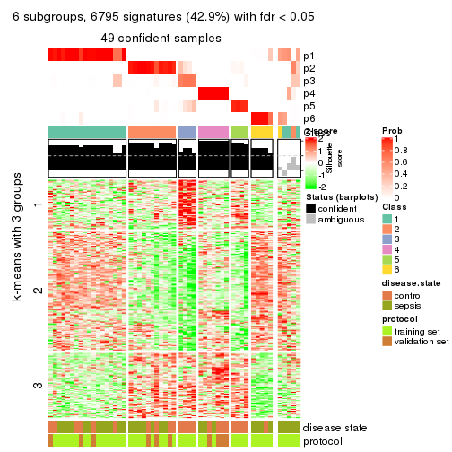
Signature heatmaps where rows are not scaled:
get_signatures(res, k = 2, scale_rows = FALSE)
get_signatures(res, k = 3, scale_rows = FALSE)
get_signatures(res, k = 4, scale_rows = FALSE)
get_signatures(res, k = 5, scale_rows = FALSE)
get_signatures(res, k = 6, scale_rows = FALSE)
Compare the overlap of signatures from different k:
compare_signatures(res)
get_signature() returns a data frame invisibly. TO get the list of signatures, the function
call should be assigned to a variable explicitly. In following code, if plot argument is set
to FALSE, no heatmap is plotted while only the differential analysis is performed.
# code only for demonstration
tb = get_signature(res, k = ..., plot = FALSE)
An example of the output of tb is:
#> which_row fdr mean_1 mean_2 scaled_mean_1 scaled_mean_2 km
#> 1 38 0.042760348 8.373488 9.131774 -0.5533452 0.5164555 1
#> 2 40 0.018707592 7.106213 8.469186 -0.6173731 0.5762149 1
#> 3 55 0.019134737 10.221463 11.207825 -0.6159697 0.5749050 1
#> 4 59 0.006059896 5.921854 7.869574 -0.6899429 0.6439467 1
#> 5 60 0.018055526 8.928898 10.211722 -0.6204761 0.5791110 1
#> 6 98 0.009384629 15.714769 14.887706 0.6635654 -0.6193277 2
...
The columns in tb are:
which_row: row indices corresponding to the input matrix.fdr: FDR for the differential test. mean_x: The mean value in group x.scaled_mean_x: The mean value in group x after rows are scaled.km: Row groups if k-means clustering is applied to rows.UMAP plot which shows how samples are separated.
dimension_reduction(res, k = 2, method = "UMAP")

dimension_reduction(res, k = 3, method = "UMAP")
dimension_reduction(res, k = 4, method = "UMAP")
dimension_reduction(res, k = 5, method = "UMAP")
dimension_reduction(res, k = 6, method = "UMAP")
Following heatmap shows how subgroups are split when increasing k:
collect_classes(res)
Test correlation between subgroups and known annotations. If the known annotation is numeric, one-way ANOVA test is applied, and if the known annotation is discrete, chi-squared contingency table test is applied.
test_to_known_factors(res)
#> n disease.state(p) protocol(p) k
#> MAD:pam 53 0.0360 0.3236 2
#> MAD:pam 54 0.0807 0.0182 3
#> MAD:pam 52 0.0188 0.0335 4
#> MAD:pam 47 0.0509 0.0778 5
#> MAD:pam 49 0.0272 0.0867 6
If matrix rows can be associated to genes, consider to use GO_Enrichment(res,
...) to perform function enrichment for the signature genes.
The object with results only for a single top-value method and a single partition method can be extracted as:
res = res_list["MAD", "mclust"]
# you can also extract it by
# res = res_list["MAD:mclust"]
A summary of res and all the functions that can be applied to it:
res
#> A 'ConsensusPartition' object with k = 2, 3, 4, 5, 6.
#> On a matrix with 15837 rows and 54 columns.
#> Top rows (1000, 2000, 3000, 4000, 5000) are extracted by 'MAD' method.
#> Subgroups are detected by 'mclust' method.
#> Performed in total 1250 partitions by row resampling.
#> Best k for subgroups seems to be 6.
#>
#> Following methods can be applied to this 'ConsensusPartition' object:
#> [1] "cola_report" "collect_classes" "collect_plots"
#> [4] "collect_stats" "colnames" "compare_signatures"
#> [7] "consensus_heatmap" "dimension_reduction" "functional_enrichment"
#> [10] "get_anno_col" "get_anno" "get_classes"
#> [13] "get_consensus" "get_matrix" "get_membership"
#> [16] "get_param" "get_signatures" "get_stats"
#> [19] "is_best_k" "is_stable_k" "membership_heatmap"
#> [22] "ncol" "nrow" "plot_ecdf"
#> [25] "rownames" "select_partition_number" "show"
#> [28] "suggest_best_k" "test_to_known_factors"
collect_plots() function collects all the plots made from res for all k (number of partitions)
into one single page to provide an easy and fast comparison between different k.
collect_plots(res)
The plots are:
k and the heatmap of
predicted classes for each k.k.k.k.All the plots in panels can be made by individual functions and they are plotted later in this section.
select_partition_number() produces several plots showing different
statistics for choosing “optimized” k. There are following statistics:
k;k, the area increased is defined as \(A_k - A_{k-1}\).The detailed explanations of these statistics can be found in the cola vignette.
Generally speaking, lower PAC score, higher mean silhouette score or higher
concordance corresponds to better partition. Rand index and Jaccard index
measure how similar the current partition is compared to partition with k-1.
If they are too similar, we won't accept k is better than k-1.
select_partition_number(res)
The numeric values for all these statistics can be obtained by get_stats().
get_stats(res)
#> k 1-PAC mean_silhouette concordance area_increased Rand Jaccard
#> 2 2 0.545 0.737 0.842 0.4477 0.525 0.525
#> 3 3 0.521 0.666 0.849 0.4423 0.751 0.549
#> 4 4 0.751 0.842 0.930 0.1060 0.924 0.774
#> 5 5 0.805 0.759 0.869 0.1115 0.891 0.620
#> 6 6 0.834 0.819 0.880 0.0258 0.935 0.708
suggest_best_k() suggests the best \(k\) based on these statistics. The rules are as follows:
NA.suggest_best_k(res)
#> [1] 6
Following shows the table of the partitions (You need to click the show/hide
code output link to see it). The membership matrix (columns with name p*)
is inferred by
clue::cl_consensus()
function with the SE method. Basically the value in the membership matrix
represents the probability to belong to a certain group. The finall class
label for an item is determined with the group with highest probability it
belongs to.
In get_classes() function, the entropy is calculated from the membership
matrix and the silhouette score is calculated from the consensus matrix.
cbind(get_classes(res, k = 2), get_membership(res, k = 2))
#> class entropy silhouette p1 p2
#> GSM134895 2 0.9209 0.6409 0.336 0.664
#> GSM134896 2 0.0000 0.7013 0.000 1.000
#> GSM134897 2 0.0000 0.7013 0.000 1.000
#> GSM134898 2 0.0000 0.7013 0.000 1.000
#> GSM134905 2 0.0000 0.7013 0.000 1.000
#> GSM135018 2 0.9850 0.6199 0.428 0.572
#> GSM135674 2 0.9988 0.5105 0.480 0.520
#> GSM135683 2 0.0000 0.7013 0.000 1.000
#> GSM135685 2 0.0000 0.7013 0.000 1.000
#> GSM135699 1 0.0000 0.9496 1.000 0.000
#> GSM135019 2 0.0000 0.7013 0.000 1.000
#> GSM135026 2 0.9850 0.6199 0.428 0.572
#> GSM135033 2 0.0000 0.7013 0.000 1.000
#> GSM135042 2 0.9209 0.6409 0.336 0.664
#> GSM135057 2 0.0000 0.7013 0.000 1.000
#> GSM135068 1 0.0000 0.9496 1.000 0.000
#> GSM135071 2 0.9850 0.6199 0.428 0.572
#> GSM135078 2 0.9850 0.6199 0.428 0.572
#> GSM135163 2 0.3431 0.6983 0.064 0.936
#> GSM135166 2 0.0000 0.7013 0.000 1.000
#> GSM135223 2 0.0000 0.7013 0.000 1.000
#> GSM135224 2 0.0000 0.7013 0.000 1.000
#> GSM135228 1 0.0000 0.9496 1.000 0.000
#> GSM135262 1 0.0000 0.9496 1.000 0.000
#> GSM135263 2 0.9850 0.6199 0.428 0.572
#> GSM135279 2 0.9850 0.6199 0.428 0.572
#> GSM135661 1 0.0000 0.9496 1.000 0.000
#> GSM135662 2 0.9850 0.6199 0.428 0.572
#> GSM135663 2 0.9850 0.6199 0.428 0.572
#> GSM135664 2 0.9850 0.6199 0.428 0.572
#> GSM135665 1 0.0000 0.9496 1.000 0.000
#> GSM135666 1 0.9580 0.0953 0.620 0.380
#> GSM135668 2 0.9850 0.6199 0.428 0.572
#> GSM135670 1 0.8763 0.3024 0.704 0.296
#> GSM135671 1 0.0000 0.9496 1.000 0.000
#> GSM135675 1 0.0000 0.9496 1.000 0.000
#> GSM135676 1 0.0000 0.9496 1.000 0.000
#> GSM135677 1 0.0000 0.9496 1.000 0.000
#> GSM135679 1 0.0000 0.9496 1.000 0.000
#> GSM135680 2 0.4431 0.6954 0.092 0.908
#> GSM135681 2 0.4431 0.6954 0.092 0.908
#> GSM135682 2 0.9850 0.6199 0.428 0.572
#> GSM135687 1 0.0000 0.9496 1.000 0.000
#> GSM135688 1 0.0000 0.9496 1.000 0.000
#> GSM135689 1 0.0000 0.9496 1.000 0.000
#> GSM135693 2 0.0376 0.7014 0.004 0.996
#> GSM135694 1 0.0000 0.9496 1.000 0.000
#> GSM135695 1 0.0000 0.9496 1.000 0.000
#> GSM135696 1 0.0000 0.9496 1.000 0.000
#> GSM135697 1 0.0000 0.9496 1.000 0.000
#> GSM135698 2 0.9850 0.6199 0.428 0.572
#> GSM135700 2 0.9881 0.6055 0.436 0.564
#> GSM135702 2 0.9850 0.6199 0.428 0.572
#> GSM135703 2 0.9850 0.6199 0.428 0.572
cbind(get_classes(res, k = 3), get_membership(res, k = 3))
#> class entropy silhouette p1 p2 p3
#> GSM134895 3 0.5070 0.6255 0.224 0.004 0.772
#> GSM134896 3 0.1411 0.8263 0.000 0.036 0.964
#> GSM134897 3 0.1411 0.8263 0.000 0.036 0.964
#> GSM134898 3 0.1411 0.8263 0.000 0.036 0.964
#> GSM134905 3 0.1411 0.8263 0.000 0.036 0.964
#> GSM135018 2 0.0592 0.7910 0.000 0.988 0.012
#> GSM135674 2 0.4002 0.7157 0.160 0.840 0.000
#> GSM135683 3 0.1411 0.8263 0.000 0.036 0.964
#> GSM135685 3 0.1411 0.8263 0.000 0.036 0.964
#> GSM135699 1 0.1411 0.8285 0.964 0.000 0.036
#> GSM135019 3 0.1411 0.8263 0.000 0.036 0.964
#> GSM135026 2 0.4654 0.6721 0.208 0.792 0.000
#> GSM135033 3 0.1411 0.8263 0.000 0.036 0.964
#> GSM135042 3 0.5435 0.6681 0.192 0.024 0.784
#> GSM135057 3 0.9621 0.1392 0.208 0.360 0.432
#> GSM135068 1 0.0000 0.8358 1.000 0.000 0.000
#> GSM135071 2 0.0592 0.7984 0.012 0.988 0.000
#> GSM135078 2 0.0000 0.7953 0.000 1.000 0.000
#> GSM135163 2 0.9573 0.1526 0.328 0.460 0.212
#> GSM135166 3 0.1411 0.8263 0.000 0.036 0.964
#> GSM135223 3 0.9531 0.2334 0.208 0.324 0.468
#> GSM135224 3 0.9531 0.2334 0.208 0.324 0.468
#> GSM135228 1 0.0237 0.8368 0.996 0.004 0.000
#> GSM135262 1 0.0237 0.8368 0.996 0.004 0.000
#> GSM135263 2 0.0000 0.7953 0.000 1.000 0.000
#> GSM135279 2 0.0747 0.7993 0.016 0.984 0.000
#> GSM135661 1 0.0237 0.8368 0.996 0.004 0.000
#> GSM135662 2 0.0892 0.7989 0.020 0.980 0.000
#> GSM135663 2 0.0747 0.7993 0.016 0.984 0.000
#> GSM135664 2 0.0424 0.7982 0.008 0.992 0.000
#> GSM135665 1 0.1753 0.8198 0.952 0.048 0.000
#> GSM135666 1 0.6509 -0.0561 0.524 0.004 0.472
#> GSM135668 2 0.4963 0.6795 0.200 0.792 0.008
#> GSM135670 2 0.5098 0.6241 0.248 0.752 0.000
#> GSM135671 1 0.1411 0.8285 0.964 0.000 0.036
#> GSM135675 1 0.3686 0.7618 0.860 0.140 0.000
#> GSM135676 1 0.3412 0.7743 0.876 0.124 0.000
#> GSM135677 1 0.0237 0.8368 0.996 0.004 0.000
#> GSM135679 1 0.5678 0.5084 0.684 0.316 0.000
#> GSM135680 2 0.9465 0.1597 0.332 0.472 0.196
#> GSM135681 2 0.9510 0.1239 0.348 0.456 0.196
#> GSM135682 2 0.0000 0.7953 0.000 1.000 0.000
#> GSM135687 1 0.0237 0.8368 0.996 0.004 0.000
#> GSM135688 1 0.1411 0.8285 0.964 0.000 0.036
#> GSM135689 1 0.0237 0.8368 0.996 0.004 0.000
#> GSM135693 2 0.9680 0.0884 0.244 0.456 0.300
#> GSM135694 1 0.1647 0.8289 0.960 0.004 0.036
#> GSM135695 1 0.6008 0.3703 0.628 0.372 0.000
#> GSM135696 1 0.4750 0.6718 0.784 0.216 0.000
#> GSM135697 1 0.4796 0.6455 0.780 0.220 0.000
#> GSM135698 2 0.1964 0.7889 0.056 0.944 0.000
#> GSM135700 1 0.8215 0.2410 0.540 0.380 0.080
#> GSM135702 2 0.2711 0.7720 0.088 0.912 0.000
#> GSM135703 2 0.0000 0.7953 0.000 1.000 0.000
cbind(get_classes(res, k = 4), get_membership(res, k = 4))
#> class entropy silhouette p1 p2 p3 p4
#> GSM134895 3 0.2345 0.869 0.100 0.000 0.900 0.000
#> GSM134896 3 0.0000 0.966 0.000 0.000 1.000 0.000
#> GSM134897 3 0.0000 0.966 0.000 0.000 1.000 0.000
#> GSM134898 3 0.0000 0.966 0.000 0.000 1.000 0.000
#> GSM134905 3 0.0921 0.950 0.000 0.000 0.972 0.028
#> GSM135018 2 0.0000 0.937 0.000 1.000 0.000 0.000
#> GSM135674 2 0.3172 0.763 0.160 0.840 0.000 0.000
#> GSM135683 3 0.0000 0.966 0.000 0.000 1.000 0.000
#> GSM135685 3 0.0000 0.966 0.000 0.000 1.000 0.000
#> GSM135699 1 0.0000 0.890 1.000 0.000 0.000 0.000
#> GSM135019 3 0.0000 0.966 0.000 0.000 1.000 0.000
#> GSM135026 2 0.2760 0.805 0.128 0.872 0.000 0.000
#> GSM135033 3 0.0000 0.966 0.000 0.000 1.000 0.000
#> GSM135042 3 0.2281 0.874 0.096 0.000 0.904 0.000
#> GSM135057 4 0.0000 0.760 0.000 0.000 0.000 1.000
#> GSM135068 1 0.0000 0.890 1.000 0.000 0.000 0.000
#> GSM135071 2 0.0000 0.937 0.000 1.000 0.000 0.000
#> GSM135078 2 0.0000 0.937 0.000 1.000 0.000 0.000
#> GSM135163 4 0.6120 0.595 0.296 0.076 0.000 0.628
#> GSM135166 3 0.1022 0.947 0.000 0.000 0.968 0.032
#> GSM135223 4 0.0000 0.760 0.000 0.000 0.000 1.000
#> GSM135224 4 0.0000 0.760 0.000 0.000 0.000 1.000
#> GSM135228 1 0.0000 0.890 1.000 0.000 0.000 0.000
#> GSM135262 1 0.0000 0.890 1.000 0.000 0.000 0.000
#> GSM135263 2 0.0000 0.937 0.000 1.000 0.000 0.000
#> GSM135279 2 0.0000 0.937 0.000 1.000 0.000 0.000
#> GSM135661 1 0.0000 0.890 1.000 0.000 0.000 0.000
#> GSM135662 2 0.0000 0.937 0.000 1.000 0.000 0.000
#> GSM135663 2 0.0000 0.937 0.000 1.000 0.000 0.000
#> GSM135664 2 0.0000 0.937 0.000 1.000 0.000 0.000
#> GSM135665 1 0.0188 0.888 0.996 0.004 0.000 0.000
#> GSM135666 1 0.4804 0.381 0.616 0.000 0.384 0.000
#> GSM135668 2 0.0188 0.935 0.004 0.996 0.000 0.000
#> GSM135670 2 0.4817 0.316 0.388 0.612 0.000 0.000
#> GSM135671 1 0.0000 0.890 1.000 0.000 0.000 0.000
#> GSM135675 1 0.2999 0.799 0.864 0.132 0.000 0.004
#> GSM135676 1 0.3052 0.795 0.860 0.136 0.000 0.004
#> GSM135677 1 0.0000 0.890 1.000 0.000 0.000 0.000
#> GSM135679 1 0.3626 0.742 0.812 0.184 0.000 0.004
#> GSM135680 4 0.7423 0.485 0.292 0.204 0.000 0.504
#> GSM135681 4 0.6528 0.572 0.300 0.104 0.000 0.596
#> GSM135682 2 0.0000 0.937 0.000 1.000 0.000 0.000
#> GSM135687 1 0.0000 0.890 1.000 0.000 0.000 0.000
#> GSM135688 1 0.0000 0.890 1.000 0.000 0.000 0.000
#> GSM135689 1 0.0000 0.890 1.000 0.000 0.000 0.000
#> GSM135693 4 0.0000 0.760 0.000 0.000 0.000 1.000
#> GSM135694 1 0.0000 0.890 1.000 0.000 0.000 0.000
#> GSM135695 1 0.3907 0.688 0.768 0.232 0.000 0.000
#> GSM135696 1 0.0000 0.890 1.000 0.000 0.000 0.000
#> GSM135697 1 0.2530 0.818 0.888 0.112 0.000 0.000
#> GSM135698 2 0.0188 0.935 0.004 0.996 0.000 0.000
#> GSM135700 1 0.6004 0.500 0.648 0.276 0.000 0.076
#> GSM135702 2 0.0188 0.935 0.004 0.996 0.000 0.000
#> GSM135703 2 0.0000 0.937 0.000 1.000 0.000 0.000
cbind(get_classes(res, k = 5), get_membership(res, k = 5))
#> class entropy silhouette p1 p2 p3 p4 p5
#> GSM134895 3 0.2270 0.88345 0.076 0.000 0.904 0.000 0.020
#> GSM134896 3 0.0000 0.94790 0.000 0.000 1.000 0.000 0.000
#> GSM134897 3 0.0000 0.94790 0.000 0.000 1.000 0.000 0.000
#> GSM134898 3 0.0000 0.94790 0.000 0.000 1.000 0.000 0.000
#> GSM134905 3 0.2813 0.82351 0.000 0.000 0.832 0.168 0.000
#> GSM135018 2 0.0162 0.91410 0.000 0.996 0.000 0.000 0.004
#> GSM135674 5 0.1106 0.68108 0.012 0.024 0.000 0.000 0.964
#> GSM135683 3 0.0000 0.94790 0.000 0.000 1.000 0.000 0.000
#> GSM135685 3 0.0000 0.94790 0.000 0.000 1.000 0.000 0.000
#> GSM135699 1 0.2377 0.78038 0.872 0.000 0.000 0.000 0.128
#> GSM135019 3 0.0000 0.94790 0.000 0.000 1.000 0.000 0.000
#> GSM135026 5 0.1168 0.67732 0.008 0.032 0.000 0.000 0.960
#> GSM135033 3 0.0000 0.94790 0.000 0.000 1.000 0.000 0.000
#> GSM135042 3 0.1800 0.90879 0.048 0.000 0.932 0.000 0.020
#> GSM135057 4 0.1121 0.88816 0.044 0.000 0.000 0.956 0.000
#> GSM135068 1 0.0290 0.82420 0.992 0.000 0.000 0.000 0.008
#> GSM135071 2 0.0000 0.91285 0.000 1.000 0.000 0.000 0.000
#> GSM135078 2 0.0162 0.91410 0.000 0.996 0.000 0.000 0.004
#> GSM135163 4 0.4694 0.84234 0.088 0.072 0.000 0.784 0.056
#> GSM135166 3 0.2929 0.81105 0.000 0.000 0.820 0.180 0.000
#> GSM135223 4 0.0000 0.88986 0.000 0.000 0.000 1.000 0.000
#> GSM135224 4 0.0000 0.88986 0.000 0.000 0.000 1.000 0.000
#> GSM135228 1 0.0162 0.82656 0.996 0.000 0.000 0.000 0.004
#> GSM135262 1 0.0162 0.82656 0.996 0.000 0.000 0.000 0.004
#> GSM135263 2 0.0162 0.91410 0.000 0.996 0.000 0.000 0.004
#> GSM135279 2 0.0162 0.91309 0.000 0.996 0.000 0.000 0.004
#> GSM135661 1 0.0162 0.82656 0.996 0.000 0.000 0.000 0.004
#> GSM135662 2 0.0404 0.90985 0.000 0.988 0.000 0.000 0.012
#> GSM135663 2 0.0290 0.91194 0.000 0.992 0.000 0.000 0.008
#> GSM135664 2 0.0000 0.91285 0.000 1.000 0.000 0.000 0.000
#> GSM135665 1 0.3837 0.46520 0.692 0.000 0.000 0.000 0.308
#> GSM135666 1 0.4663 0.26941 0.604 0.000 0.376 0.000 0.020
#> GSM135668 5 0.1732 0.64791 0.000 0.080 0.000 0.000 0.920
#> GSM135670 5 0.1106 0.68108 0.012 0.024 0.000 0.000 0.964
#> GSM135671 1 0.2773 0.74836 0.836 0.000 0.000 0.000 0.164
#> GSM135675 5 0.4552 0.21270 0.468 0.000 0.000 0.008 0.524
#> GSM135676 5 0.4528 0.28514 0.444 0.000 0.000 0.008 0.548
#> GSM135677 1 0.0162 0.82656 0.996 0.000 0.000 0.000 0.004
#> GSM135679 5 0.3305 0.62195 0.224 0.000 0.000 0.000 0.776
#> GSM135680 4 0.5517 0.77848 0.092 0.128 0.000 0.720 0.060
#> GSM135681 4 0.4288 0.83948 0.092 0.020 0.000 0.800 0.088
#> GSM135682 2 0.0162 0.91410 0.000 0.996 0.000 0.000 0.004
#> GSM135687 1 0.0162 0.82656 0.996 0.000 0.000 0.000 0.004
#> GSM135688 1 0.2377 0.78038 0.872 0.000 0.000 0.000 0.128
#> GSM135689 1 0.0162 0.82656 0.996 0.000 0.000 0.000 0.004
#> GSM135693 4 0.0000 0.88986 0.000 0.000 0.000 1.000 0.000
#> GSM135694 1 0.2929 0.73004 0.820 0.000 0.000 0.000 0.180
#> GSM135695 5 0.2439 0.68085 0.120 0.004 0.000 0.000 0.876
#> GSM135696 1 0.2852 0.73984 0.828 0.000 0.000 0.000 0.172
#> GSM135697 5 0.4302 0.17114 0.480 0.000 0.000 0.000 0.520
#> GSM135698 2 0.4045 0.45217 0.000 0.644 0.000 0.000 0.356
#> GSM135700 5 0.7004 -0.00444 0.216 0.016 0.000 0.340 0.428
#> GSM135702 2 0.4192 0.36132 0.000 0.596 0.000 0.000 0.404
#> GSM135703 2 0.0609 0.90318 0.000 0.980 0.000 0.000 0.020
cbind(get_classes(res, k = 6), get_membership(res, k = 6))
#> class entropy silhouette p1 p2 p3 p4 p5 p6
#> GSM134895 6 0.3885 0.890 0.044 0.000 0.220 0.000 0.000 0.736
#> GSM134896 3 0.0000 0.967 0.000 0.000 1.000 0.000 0.000 0.000
#> GSM134897 3 0.0000 0.967 0.000 0.000 1.000 0.000 0.000 0.000
#> GSM134898 3 0.0146 0.967 0.000 0.000 0.996 0.000 0.000 0.004
#> GSM134905 3 0.2000 0.913 0.000 0.000 0.916 0.048 0.004 0.032
#> GSM135018 2 0.0363 0.916 0.000 0.988 0.000 0.000 0.000 0.012
#> GSM135674 5 0.0291 0.766 0.004 0.000 0.000 0.000 0.992 0.004
#> GSM135683 3 0.0000 0.967 0.000 0.000 1.000 0.000 0.000 0.000
#> GSM135685 3 0.0000 0.967 0.000 0.000 1.000 0.000 0.000 0.000
#> GSM135699 1 0.1934 0.824 0.916 0.000 0.000 0.000 0.040 0.044
#> GSM135019 3 0.1082 0.945 0.000 0.000 0.956 0.000 0.004 0.040
#> GSM135026 5 0.0146 0.767 0.004 0.000 0.000 0.000 0.996 0.000
#> GSM135033 3 0.0146 0.967 0.000 0.000 0.996 0.000 0.000 0.004
#> GSM135042 6 0.3848 0.887 0.040 0.000 0.224 0.000 0.000 0.736
#> GSM135057 4 0.0000 0.846 0.000 0.000 0.000 1.000 0.000 0.000
#> GSM135068 1 0.0547 0.835 0.980 0.000 0.000 0.000 0.000 0.020
#> GSM135071 2 0.1267 0.920 0.000 0.940 0.000 0.000 0.060 0.000
#> GSM135078 2 0.0363 0.916 0.000 0.988 0.000 0.000 0.000 0.012
#> GSM135163 4 0.3559 0.789 0.012 0.004 0.000 0.744 0.000 0.240
#> GSM135166 3 0.2000 0.913 0.000 0.000 0.916 0.048 0.004 0.032
#> GSM135223 4 0.0000 0.846 0.000 0.000 0.000 1.000 0.000 0.000
#> GSM135224 4 0.0000 0.846 0.000 0.000 0.000 1.000 0.000 0.000
#> GSM135228 1 0.1814 0.829 0.900 0.000 0.000 0.000 0.000 0.100
#> GSM135262 1 0.1814 0.829 0.900 0.000 0.000 0.000 0.000 0.100
#> GSM135263 2 0.0363 0.916 0.000 0.988 0.000 0.000 0.000 0.012
#> GSM135279 2 0.1204 0.921 0.000 0.944 0.000 0.000 0.056 0.000
#> GSM135661 1 0.1814 0.829 0.900 0.000 0.000 0.000 0.000 0.100
#> GSM135662 2 0.1327 0.918 0.000 0.936 0.000 0.000 0.064 0.000
#> GSM135663 2 0.1204 0.921 0.000 0.944 0.000 0.000 0.056 0.000
#> GSM135664 2 0.1141 0.921 0.000 0.948 0.000 0.000 0.052 0.000
#> GSM135665 1 0.2404 0.801 0.872 0.000 0.000 0.000 0.112 0.016
#> GSM135666 6 0.5039 0.798 0.176 0.000 0.184 0.000 0.000 0.640
#> GSM135668 5 0.0363 0.758 0.000 0.012 0.000 0.000 0.988 0.000
#> GSM135670 5 0.0146 0.767 0.004 0.000 0.000 0.000 0.996 0.000
#> GSM135671 1 0.2258 0.818 0.896 0.000 0.000 0.000 0.060 0.044
#> GSM135675 1 0.4663 0.544 0.660 0.000 0.000 0.000 0.252 0.088
#> GSM135676 1 0.5000 0.354 0.580 0.000 0.000 0.000 0.332 0.088
#> GSM135677 1 0.1814 0.829 0.900 0.000 0.000 0.000 0.000 0.100
#> GSM135679 5 0.4515 0.541 0.304 0.000 0.000 0.000 0.640 0.056
#> GSM135680 4 0.5903 0.707 0.024 0.044 0.000 0.612 0.068 0.252
#> GSM135681 4 0.5131 0.742 0.036 0.004 0.000 0.656 0.052 0.252
#> GSM135682 2 0.0363 0.916 0.000 0.988 0.000 0.000 0.000 0.012
#> GSM135687 1 0.1814 0.829 0.900 0.000 0.000 0.000 0.000 0.100
#> GSM135688 1 0.2003 0.823 0.912 0.000 0.000 0.000 0.044 0.044
#> GSM135689 1 0.1814 0.829 0.900 0.000 0.000 0.000 0.000 0.100
#> GSM135693 4 0.0260 0.844 0.008 0.000 0.000 0.992 0.000 0.000
#> GSM135694 1 0.2258 0.818 0.896 0.000 0.000 0.000 0.060 0.044
#> GSM135695 5 0.4406 0.623 0.224 0.000 0.000 0.000 0.696 0.080
#> GSM135696 1 0.1265 0.826 0.948 0.000 0.000 0.000 0.008 0.044
#> GSM135697 1 0.4700 0.593 0.648 0.000 0.000 0.000 0.268 0.084
#> GSM135698 2 0.3023 0.753 0.000 0.768 0.000 0.000 0.232 0.000
#> GSM135700 5 0.6971 0.448 0.156 0.008 0.000 0.100 0.496 0.240
#> GSM135702 2 0.3531 0.626 0.000 0.672 0.000 0.000 0.328 0.000
#> GSM135703 2 0.0363 0.916 0.000 0.988 0.000 0.000 0.000 0.012
Heatmaps for the consensus matrix. It visualizes the probability of two samples to be in a same group.
consensus_heatmap(res, k = 2)
consensus_heatmap(res, k = 3)
consensus_heatmap(res, k = 4)
consensus_heatmap(res, k = 5)
consensus_heatmap(res, k = 6)
Heatmaps for the membership of samples in all partitions to see how consistent they are:
membership_heatmap(res, k = 2)
membership_heatmap(res, k = 3)
membership_heatmap(res, k = 4)
membership_heatmap(res, k = 5)
membership_heatmap(res, k = 6)
As soon as we have had the classes for columns, we can look for signatures which are significantly different between classes which can be candidate marks for certain classes. Following are the heatmaps for signatures.
Signature heatmaps where rows are scaled:
get_signatures(res, k = 2)
get_signatures(res, k = 3)
get_signatures(res, k = 4)
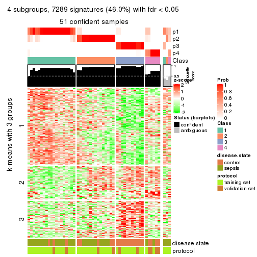
get_signatures(res, k = 5)
get_signatures(res, k = 6)

Signature heatmaps where rows are not scaled:
get_signatures(res, k = 2, scale_rows = FALSE)
get_signatures(res, k = 3, scale_rows = FALSE)
get_signatures(res, k = 4, scale_rows = FALSE)
get_signatures(res, k = 5, scale_rows = FALSE)
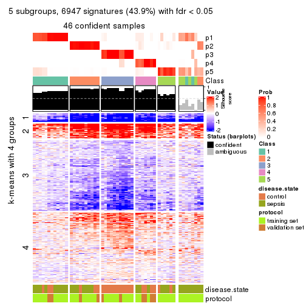
get_signatures(res, k = 6, scale_rows = FALSE)
Compare the overlap of signatures from different k:
compare_signatures(res)
get_signature() returns a data frame invisibly. TO get the list of signatures, the function
call should be assigned to a variable explicitly. In following code, if plot argument is set
to FALSE, no heatmap is plotted while only the differential analysis is performed.
# code only for demonstration
tb = get_signature(res, k = ..., plot = FALSE)
An example of the output of tb is:
#> which_row fdr mean_1 mean_2 scaled_mean_1 scaled_mean_2 km
#> 1 38 0.042760348 8.373488 9.131774 -0.5533452 0.5164555 1
#> 2 40 0.018707592 7.106213 8.469186 -0.6173731 0.5762149 1
#> 3 55 0.019134737 10.221463 11.207825 -0.6159697 0.5749050 1
#> 4 59 0.006059896 5.921854 7.869574 -0.6899429 0.6439467 1
#> 5 60 0.018055526 8.928898 10.211722 -0.6204761 0.5791110 1
#> 6 98 0.009384629 15.714769 14.887706 0.6635654 -0.6193277 2
...
The columns in tb are:
which_row: row indices corresponding to the input matrix.fdr: FDR for the differential test. mean_x: The mean value in group x.scaled_mean_x: The mean value in group x after rows are scaled.km: Row groups if k-means clustering is applied to rows.UMAP plot which shows how samples are separated.
dimension_reduction(res, k = 2, method = "UMAP")
dimension_reduction(res, k = 3, method = "UMAP")
dimension_reduction(res, k = 4, method = "UMAP")
dimension_reduction(res, k = 5, method = "UMAP")
dimension_reduction(res, k = 6, method = "UMAP")
Following heatmap shows how subgroups are split when increasing k:
collect_classes(res)
Test correlation between subgroups and known annotations. If the known annotation is numeric, one-way ANOVA test is applied, and if the known annotation is discrete, chi-squared contingency table test is applied.
test_to_known_factors(res)
#> n disease.state(p) protocol(p) k
#> MAD:mclust 52 8.83e-03 0.4770 2
#> MAD:mclust 44 4.73e-05 0.8776 3
#> MAD:mclust 51 6.68e-05 0.0202 4
#> MAD:mclust 46 2.52e-03 0.1304 5
#> MAD:mclust 52 2.83e-03 0.1067 6
If matrix rows can be associated to genes, consider to use GO_Enrichment(res,
...) to perform function enrichment for the signature genes.
The object with results only for a single top-value method and a single partition method can be extracted as:
res = res_list["MAD", "NMF"]
# you can also extract it by
# res = res_list["MAD:NMF"]
A summary of res and all the functions that can be applied to it:
res
#> A 'ConsensusPartition' object with k = 2, 3, 4, 5, 6.
#> On a matrix with 15837 rows and 54 columns.
#> Top rows (1000, 2000, 3000, 4000, 5000) are extracted by 'MAD' method.
#> Subgroups are detected by 'NMF' method.
#> Performed in total 1250 partitions by row resampling.
#> Best k for subgroups seems to be 2.
#>
#> Following methods can be applied to this 'ConsensusPartition' object:
#> [1] "cola_report" "collect_classes" "collect_plots"
#> [4] "collect_stats" "colnames" "compare_signatures"
#> [7] "consensus_heatmap" "dimension_reduction" "functional_enrichment"
#> [10] "get_anno_col" "get_anno" "get_classes"
#> [13] "get_consensus" "get_matrix" "get_membership"
#> [16] "get_param" "get_signatures" "get_stats"
#> [19] "is_best_k" "is_stable_k" "membership_heatmap"
#> [22] "ncol" "nrow" "plot_ecdf"
#> [25] "rownames" "select_partition_number" "show"
#> [28] "suggest_best_k" "test_to_known_factors"
collect_plots() function collects all the plots made from res for all k (number of partitions)
into one single page to provide an easy and fast comparison between different k.
collect_plots(res)
The plots are:
k and the heatmap of
predicted classes for each k.k.k.k.All the plots in panels can be made by individual functions and they are plotted later in this section.
select_partition_number() produces several plots showing different
statistics for choosing “optimized” k. There are following statistics:
k;k, the area increased is defined as \(A_k - A_{k-1}\).The detailed explanations of these statistics can be found in the cola vignette.
Generally speaking, lower PAC score, higher mean silhouette score or higher
concordance corresponds to better partition. Rand index and Jaccard index
measure how similar the current partition is compared to partition with k-1.
If they are too similar, we won't accept k is better than k-1.
select_partition_number(res)
The numeric values for all these statistics can be obtained by get_stats().
get_stats(res)
#> k 1-PAC mean_silhouette concordance area_increased Rand Jaccard
#> 2 2 1.000 0.952 0.980 0.5082 0.491 0.491
#> 3 3 0.796 0.838 0.921 0.2481 0.858 0.718
#> 4 4 0.838 0.869 0.930 0.1352 0.811 0.550
#> 5 5 0.738 0.719 0.824 0.0571 0.962 0.868
#> 6 6 0.684 0.646 0.783 0.0495 0.941 0.780
suggest_best_k() suggests the best \(k\) based on these statistics. The rules are as follows:
NA.suggest_best_k(res)
#> [1] 2
Following shows the table of the partitions (You need to click the show/hide
code output link to see it). The membership matrix (columns with name p*)
is inferred by
clue::cl_consensus()
function with the SE method. Basically the value in the membership matrix
represents the probability to belong to a certain group. The finall class
label for an item is determined with the group with highest probability it
belongs to.
In get_classes() function, the entropy is calculated from the membership
matrix and the silhouette score is calculated from the consensus matrix.
cbind(get_classes(res, k = 2), get_membership(res, k = 2))
#> class entropy silhouette p1 p2
#> GSM134895 1 0.000 0.970 1.000 0.000
#> GSM134896 2 0.000 0.989 0.000 1.000
#> GSM134897 2 0.000 0.989 0.000 1.000
#> GSM134898 2 0.000 0.989 0.000 1.000
#> GSM134905 2 0.000 0.989 0.000 1.000
#> GSM135018 2 0.000 0.989 0.000 1.000
#> GSM135674 1 0.000 0.970 1.000 0.000
#> GSM135683 2 0.000 0.989 0.000 1.000
#> GSM135685 2 0.000 0.989 0.000 1.000
#> GSM135699 1 0.000 0.970 1.000 0.000
#> GSM135019 2 0.000 0.989 0.000 1.000
#> GSM135026 1 0.000 0.970 1.000 0.000
#> GSM135033 2 0.000 0.989 0.000 1.000
#> GSM135042 1 0.224 0.937 0.964 0.036
#> GSM135057 2 0.000 0.989 0.000 1.000
#> GSM135068 1 0.000 0.970 1.000 0.000
#> GSM135071 2 0.000 0.989 0.000 1.000
#> GSM135078 2 0.000 0.989 0.000 1.000
#> GSM135163 2 0.163 0.971 0.024 0.976
#> GSM135166 2 0.000 0.989 0.000 1.000
#> GSM135223 2 0.000 0.989 0.000 1.000
#> GSM135224 2 0.000 0.989 0.000 1.000
#> GSM135228 1 0.000 0.970 1.000 0.000
#> GSM135262 1 0.000 0.970 1.000 0.000
#> GSM135263 2 0.000 0.989 0.000 1.000
#> GSM135279 2 0.000 0.989 0.000 1.000
#> GSM135661 1 0.000 0.970 1.000 0.000
#> GSM135662 2 0.118 0.977 0.016 0.984
#> GSM135663 2 0.000 0.989 0.000 1.000
#> GSM135664 2 0.000 0.989 0.000 1.000
#> GSM135665 1 0.000 0.970 1.000 0.000
#> GSM135666 1 0.000 0.970 1.000 0.000
#> GSM135668 1 0.000 0.970 1.000 0.000
#> GSM135670 1 0.000 0.970 1.000 0.000
#> GSM135671 1 0.000 0.970 1.000 0.000
#> GSM135675 1 0.000 0.970 1.000 0.000
#> GSM135676 1 0.000 0.970 1.000 0.000
#> GSM135677 1 0.000 0.970 1.000 0.000
#> GSM135679 1 0.000 0.970 1.000 0.000
#> GSM135680 2 0.552 0.856 0.128 0.872
#> GSM135681 1 0.966 0.364 0.608 0.392
#> GSM135682 2 0.000 0.989 0.000 1.000
#> GSM135687 1 0.000 0.970 1.000 0.000
#> GSM135688 1 0.000 0.970 1.000 0.000
#> GSM135689 1 0.000 0.970 1.000 0.000
#> GSM135693 2 0.311 0.942 0.056 0.944
#> GSM135694 1 0.000 0.970 1.000 0.000
#> GSM135695 1 0.000 0.970 1.000 0.000
#> GSM135696 1 0.000 0.970 1.000 0.000
#> GSM135697 1 0.000 0.970 1.000 0.000
#> GSM135698 2 0.295 0.946 0.052 0.948
#> GSM135700 1 0.000 0.970 1.000 0.000
#> GSM135702 1 0.949 0.425 0.632 0.368
#> GSM135703 2 0.000 0.989 0.000 1.000
cbind(get_classes(res, k = 3), get_membership(res, k = 3))
#> class entropy silhouette p1 p2 p3
#> GSM134895 1 0.4002 0.806 0.840 0.000 0.160
#> GSM134896 3 0.0000 0.909 0.000 0.000 1.000
#> GSM134897 3 0.0000 0.909 0.000 0.000 1.000
#> GSM134898 3 0.0000 0.909 0.000 0.000 1.000
#> GSM134905 3 0.2066 0.865 0.000 0.060 0.940
#> GSM135018 2 0.6299 0.205 0.000 0.524 0.476
#> GSM135674 1 0.2261 0.907 0.932 0.068 0.000
#> GSM135683 3 0.0237 0.906 0.000 0.004 0.996
#> GSM135685 3 0.0000 0.909 0.000 0.000 1.000
#> GSM135699 1 0.0000 0.949 1.000 0.000 0.000
#> GSM135019 3 0.0000 0.909 0.000 0.000 1.000
#> GSM135026 1 0.1964 0.915 0.944 0.056 0.000
#> GSM135033 3 0.0000 0.909 0.000 0.000 1.000
#> GSM135042 1 0.5926 0.503 0.644 0.000 0.356
#> GSM135057 2 0.2066 0.844 0.000 0.940 0.060
#> GSM135068 1 0.0000 0.949 1.000 0.000 0.000
#> GSM135071 2 0.1031 0.846 0.000 0.976 0.024
#> GSM135078 2 0.3412 0.817 0.000 0.876 0.124
#> GSM135163 2 0.2200 0.844 0.004 0.940 0.056
#> GSM135166 3 0.5363 0.549 0.000 0.276 0.724
#> GSM135223 2 0.2165 0.843 0.000 0.936 0.064
#> GSM135224 2 0.2261 0.841 0.000 0.932 0.068
#> GSM135228 1 0.0000 0.949 1.000 0.000 0.000
#> GSM135262 1 0.0000 0.949 1.000 0.000 0.000
#> GSM135263 2 0.4178 0.797 0.000 0.828 0.172
#> GSM135279 2 0.5098 0.668 0.000 0.752 0.248
#> GSM135661 1 0.0000 0.949 1.000 0.000 0.000
#> GSM135662 2 0.1031 0.846 0.000 0.976 0.024
#> GSM135663 2 0.2356 0.841 0.000 0.928 0.072
#> GSM135664 2 0.3038 0.826 0.000 0.896 0.104
#> GSM135665 1 0.0000 0.949 1.000 0.000 0.000
#> GSM135666 1 0.0592 0.942 0.988 0.000 0.012
#> GSM135668 1 0.2261 0.907 0.932 0.068 0.000
#> GSM135670 1 0.0237 0.947 0.996 0.004 0.000
#> GSM135671 1 0.0000 0.949 1.000 0.000 0.000
#> GSM135675 1 0.0000 0.949 1.000 0.000 0.000
#> GSM135676 1 0.0000 0.949 1.000 0.000 0.000
#> GSM135677 1 0.0000 0.949 1.000 0.000 0.000
#> GSM135679 1 0.0237 0.947 0.996 0.004 0.000
#> GSM135680 2 0.0592 0.843 0.000 0.988 0.012
#> GSM135681 2 0.2550 0.819 0.056 0.932 0.012
#> GSM135682 3 0.5859 0.443 0.000 0.344 0.656
#> GSM135687 1 0.0000 0.949 1.000 0.000 0.000
#> GSM135688 1 0.0000 0.949 1.000 0.000 0.000
#> GSM135689 1 0.0000 0.949 1.000 0.000 0.000
#> GSM135693 2 0.2096 0.845 0.004 0.944 0.052
#> GSM135694 1 0.0000 0.949 1.000 0.000 0.000
#> GSM135695 1 0.0000 0.949 1.000 0.000 0.000
#> GSM135696 1 0.0000 0.949 1.000 0.000 0.000
#> GSM135697 1 0.0000 0.949 1.000 0.000 0.000
#> GSM135698 2 0.9475 0.198 0.360 0.452 0.188
#> GSM135700 1 0.5363 0.642 0.724 0.276 0.000
#> GSM135702 1 0.6735 0.605 0.696 0.260 0.044
#> GSM135703 2 0.2356 0.843 0.000 0.928 0.072
cbind(get_classes(res, k = 4), get_membership(res, k = 4))
#> class entropy silhouette p1 p2 p3 p4
#> GSM134895 1 0.4991 0.350 0.608 0.000 0.388 0.004
#> GSM134896 3 0.0336 0.891 0.000 0.008 0.992 0.000
#> GSM134897 3 0.0336 0.891 0.000 0.008 0.992 0.000
#> GSM134898 3 0.0336 0.891 0.000 0.008 0.992 0.000
#> GSM134905 3 0.2214 0.863 0.000 0.028 0.928 0.044
#> GSM135018 3 0.7136 0.154 0.000 0.376 0.488 0.136
#> GSM135674 2 0.3907 0.672 0.232 0.768 0.000 0.000
#> GSM135683 3 0.0817 0.883 0.000 0.024 0.976 0.000
#> GSM135685 3 0.0592 0.890 0.000 0.016 0.984 0.000
#> GSM135699 1 0.0921 0.952 0.972 0.000 0.000 0.028
#> GSM135019 3 0.0336 0.889 0.000 0.000 0.992 0.008
#> GSM135026 2 0.3942 0.665 0.236 0.764 0.000 0.000
#> GSM135033 3 0.0000 0.889 0.000 0.000 1.000 0.000
#> GSM135042 3 0.3448 0.713 0.168 0.000 0.828 0.004
#> GSM135057 4 0.1792 0.961 0.000 0.068 0.000 0.932
#> GSM135068 1 0.0817 0.954 0.976 0.000 0.000 0.024
#> GSM135071 2 0.3266 0.780 0.000 0.832 0.000 0.168
#> GSM135078 2 0.3547 0.796 0.000 0.840 0.016 0.144
#> GSM135163 4 0.1637 0.964 0.000 0.060 0.000 0.940
#> GSM135166 3 0.3591 0.755 0.000 0.008 0.824 0.168
#> GSM135223 4 0.0921 0.961 0.000 0.028 0.000 0.972
#> GSM135224 4 0.0707 0.955 0.000 0.020 0.000 0.980
#> GSM135228 1 0.0000 0.962 1.000 0.000 0.000 0.000
#> GSM135262 1 0.0000 0.962 1.000 0.000 0.000 0.000
#> GSM135263 2 0.4514 0.767 0.000 0.800 0.064 0.136
#> GSM135279 2 0.0895 0.858 0.000 0.976 0.004 0.020
#> GSM135661 1 0.0188 0.962 0.996 0.000 0.000 0.004
#> GSM135662 2 0.0817 0.857 0.000 0.976 0.000 0.024
#> GSM135663 2 0.1209 0.857 0.000 0.964 0.004 0.032
#> GSM135664 2 0.1610 0.855 0.000 0.952 0.016 0.032
#> GSM135665 1 0.0469 0.960 0.988 0.012 0.000 0.000
#> GSM135666 1 0.0817 0.951 0.976 0.000 0.024 0.000
#> GSM135668 2 0.3486 0.717 0.188 0.812 0.000 0.000
#> GSM135670 1 0.2408 0.883 0.896 0.104 0.000 0.000
#> GSM135671 1 0.0376 0.962 0.992 0.004 0.000 0.004
#> GSM135675 1 0.0592 0.958 0.984 0.016 0.000 0.000
#> GSM135676 1 0.0336 0.961 0.992 0.008 0.000 0.000
#> GSM135677 1 0.0000 0.962 1.000 0.000 0.000 0.000
#> GSM135679 1 0.1118 0.947 0.964 0.036 0.000 0.000
#> GSM135680 4 0.2647 0.914 0.000 0.120 0.000 0.880
#> GSM135681 4 0.2300 0.956 0.016 0.064 0.000 0.920
#> GSM135682 2 0.1888 0.849 0.000 0.940 0.044 0.016
#> GSM135687 1 0.0000 0.962 1.000 0.000 0.000 0.000
#> GSM135688 1 0.0469 0.960 0.988 0.000 0.000 0.012
#> GSM135689 1 0.0000 0.962 1.000 0.000 0.000 0.000
#> GSM135693 4 0.1022 0.962 0.000 0.032 0.000 0.968
#> GSM135694 1 0.0524 0.962 0.988 0.004 0.000 0.008
#> GSM135695 1 0.0592 0.958 0.984 0.016 0.000 0.000
#> GSM135696 1 0.0336 0.961 0.992 0.000 0.000 0.008
#> GSM135697 1 0.0376 0.962 0.992 0.004 0.000 0.004
#> GSM135698 2 0.0336 0.851 0.008 0.992 0.000 0.000
#> GSM135700 1 0.2830 0.896 0.900 0.040 0.000 0.060
#> GSM135702 2 0.0921 0.844 0.028 0.972 0.000 0.000
#> GSM135703 2 0.3105 0.805 0.000 0.856 0.004 0.140
cbind(get_classes(res, k = 5), get_membership(res, k = 5))
#> class entropy silhouette p1 p2 p3 p4 p5
#> GSM134895 1 0.5918 0.357 0.592 0.000 0.240 0.000 0.168
#> GSM134896 3 0.0693 0.811 0.000 0.008 0.980 0.000 0.012
#> GSM134897 3 0.1792 0.797 0.000 0.000 0.916 0.000 0.084
#> GSM134898 3 0.1908 0.792 0.000 0.000 0.908 0.000 0.092
#> GSM134905 3 0.1617 0.803 0.000 0.020 0.948 0.020 0.012
#> GSM135018 2 0.5069 0.426 0.000 0.648 0.304 0.036 0.012
#> GSM135674 5 0.6486 0.664 0.204 0.324 0.000 0.000 0.472
#> GSM135683 3 0.4127 0.736 0.000 0.008 0.680 0.000 0.312
#> GSM135685 3 0.3861 0.752 0.000 0.004 0.712 0.000 0.284
#> GSM135699 1 0.0162 0.874 0.996 0.000 0.000 0.004 0.000
#> GSM135019 3 0.4111 0.750 0.000 0.004 0.708 0.008 0.280
#> GSM135026 5 0.6552 0.619 0.240 0.248 0.004 0.000 0.508
#> GSM135033 3 0.1043 0.814 0.000 0.000 0.960 0.000 0.040
#> GSM135042 3 0.5341 0.425 0.300 0.000 0.620 0.000 0.080
#> GSM135057 4 0.1525 0.929 0.000 0.036 0.012 0.948 0.004
#> GSM135068 1 0.0771 0.875 0.976 0.000 0.000 0.004 0.020
#> GSM135071 2 0.1877 0.703 0.000 0.924 0.000 0.064 0.012
#> GSM135078 2 0.2506 0.702 0.000 0.904 0.036 0.052 0.008
#> GSM135163 4 0.2722 0.868 0.008 0.120 0.000 0.868 0.004
#> GSM135166 3 0.3088 0.711 0.000 0.004 0.828 0.164 0.004
#> GSM135223 4 0.0324 0.929 0.000 0.004 0.004 0.992 0.000
#> GSM135224 4 0.0324 0.929 0.000 0.004 0.004 0.992 0.000
#> GSM135228 1 0.1942 0.853 0.920 0.012 0.000 0.000 0.068
#> GSM135262 1 0.1197 0.872 0.952 0.000 0.000 0.000 0.048
#> GSM135263 2 0.2829 0.705 0.000 0.892 0.032 0.052 0.024
#> GSM135279 2 0.3328 0.592 0.000 0.812 0.008 0.004 0.176
#> GSM135661 1 0.1410 0.865 0.940 0.000 0.000 0.000 0.060
#> GSM135662 2 0.1386 0.705 0.000 0.952 0.000 0.016 0.032
#> GSM135663 2 0.1386 0.706 0.000 0.952 0.000 0.016 0.032
#> GSM135664 2 0.0833 0.710 0.000 0.976 0.004 0.016 0.004
#> GSM135665 1 0.1197 0.861 0.952 0.000 0.000 0.000 0.048
#> GSM135666 1 0.3883 0.622 0.744 0.004 0.008 0.000 0.244
#> GSM135668 5 0.5734 0.432 0.084 0.444 0.000 0.000 0.472
#> GSM135670 1 0.4141 0.595 0.728 0.024 0.000 0.000 0.248
#> GSM135671 1 0.0566 0.873 0.984 0.000 0.000 0.004 0.012
#> GSM135675 1 0.4413 0.599 0.724 0.000 0.000 0.044 0.232
#> GSM135676 1 0.1443 0.871 0.948 0.004 0.000 0.004 0.044
#> GSM135677 1 0.0880 0.873 0.968 0.000 0.000 0.000 0.032
#> GSM135679 1 0.2006 0.840 0.916 0.012 0.000 0.000 0.072
#> GSM135680 4 0.2304 0.887 0.000 0.100 0.000 0.892 0.008
#> GSM135681 4 0.3171 0.870 0.028 0.016 0.008 0.876 0.072
#> GSM135682 2 0.4700 0.588 0.000 0.748 0.116 0.004 0.132
#> GSM135687 1 0.0703 0.874 0.976 0.000 0.000 0.000 0.024
#> GSM135688 1 0.0324 0.874 0.992 0.000 0.000 0.004 0.004
#> GSM135689 1 0.0609 0.875 0.980 0.000 0.000 0.000 0.020
#> GSM135693 4 0.0955 0.931 0.000 0.028 0.000 0.968 0.004
#> GSM135694 1 0.0865 0.870 0.972 0.000 0.000 0.004 0.024
#> GSM135695 1 0.1605 0.868 0.944 0.012 0.000 0.004 0.040
#> GSM135696 1 0.1557 0.860 0.940 0.000 0.000 0.008 0.052
#> GSM135697 1 0.0671 0.875 0.980 0.000 0.000 0.004 0.016
#> GSM135698 2 0.4425 -0.159 0.000 0.544 0.004 0.000 0.452
#> GSM135700 1 0.7113 0.127 0.516 0.044 0.000 0.212 0.228
#> GSM135702 2 0.4225 0.162 0.004 0.632 0.000 0.000 0.364
#> GSM135703 2 0.5335 0.459 0.000 0.668 0.040 0.032 0.260
cbind(get_classes(res, k = 6), get_membership(res, k = 6))
#> class entropy silhouette p1 p2 p3 p4 p5 p6
#> GSM134895 1 0.6868 0.35909 0.524 0.004 0.180 0.000 0.136 0.156
#> GSM134896 3 0.1644 0.54733 0.000 0.000 0.932 0.000 0.040 0.028
#> GSM134897 3 0.3028 0.58714 0.000 0.008 0.848 0.000 0.040 0.104
#> GSM134898 3 0.3752 0.56338 0.000 0.016 0.800 0.000 0.060 0.124
#> GSM134905 3 0.2632 0.56412 0.000 0.028 0.896 0.020 0.040 0.016
#> GSM135018 2 0.4851 0.66857 0.000 0.728 0.172 0.036 0.044 0.020
#> GSM135674 5 0.4502 0.62150 0.136 0.084 0.000 0.000 0.748 0.032
#> GSM135683 6 0.4037 0.87059 0.000 0.012 0.380 0.000 0.000 0.608
#> GSM135685 6 0.4076 0.91775 0.000 0.008 0.452 0.000 0.000 0.540
#> GSM135699 1 0.0363 0.80961 0.988 0.000 0.000 0.000 0.000 0.012
#> GSM135019 6 0.3975 0.91958 0.000 0.000 0.452 0.004 0.000 0.544
#> GSM135026 5 0.6260 0.54151 0.184 0.076 0.000 0.000 0.576 0.164
#> GSM135033 3 0.2380 0.48178 0.000 0.004 0.892 0.004 0.020 0.080
#> GSM135042 3 0.6519 0.10167 0.352 0.004 0.468 0.000 0.068 0.108
#> GSM135057 4 0.0858 0.87952 0.000 0.028 0.000 0.968 0.000 0.004
#> GSM135068 1 0.0951 0.80994 0.968 0.000 0.004 0.000 0.008 0.020
#> GSM135071 2 0.1534 0.78261 0.000 0.944 0.004 0.032 0.004 0.016
#> GSM135078 2 0.2727 0.77689 0.000 0.888 0.040 0.044 0.008 0.020
#> GSM135163 4 0.4201 0.59992 0.004 0.280 0.000 0.688 0.008 0.020
#> GSM135166 3 0.3624 0.50073 0.000 0.024 0.820 0.120 0.024 0.012
#> GSM135223 4 0.0260 0.87819 0.000 0.008 0.000 0.992 0.000 0.000
#> GSM135224 4 0.0291 0.87737 0.000 0.004 0.000 0.992 0.000 0.004
#> GSM135228 1 0.4693 0.70838 0.748 0.000 0.032 0.008 0.096 0.116
#> GSM135262 1 0.2507 0.79901 0.892 0.000 0.016 0.000 0.036 0.056
#> GSM135263 2 0.4209 0.72697 0.000 0.788 0.048 0.016 0.120 0.028
#> GSM135279 2 0.4303 0.64713 0.000 0.748 0.012 0.004 0.064 0.172
#> GSM135661 1 0.3666 0.75035 0.820 0.000 0.032 0.000 0.064 0.084
#> GSM135662 2 0.2201 0.77251 0.000 0.904 0.000 0.004 0.056 0.036
#> GSM135663 2 0.1895 0.77031 0.000 0.912 0.000 0.000 0.072 0.016
#> GSM135664 2 0.1338 0.78531 0.000 0.952 0.004 0.004 0.032 0.008
#> GSM135665 1 0.1858 0.78597 0.912 0.000 0.000 0.000 0.076 0.012
#> GSM135666 1 0.4413 0.16589 0.492 0.000 0.012 0.000 0.008 0.488
#> GSM135668 5 0.4227 0.61962 0.108 0.112 0.000 0.000 0.764 0.016
#> GSM135670 1 0.5177 0.33455 0.580 0.004 0.000 0.000 0.320 0.096
#> GSM135671 1 0.0914 0.80757 0.968 0.000 0.000 0.000 0.016 0.016
#> GSM135675 1 0.4866 -0.02085 0.484 0.000 0.000 0.028 0.472 0.016
#> GSM135676 1 0.2384 0.78564 0.884 0.000 0.000 0.000 0.084 0.032
#> GSM135677 1 0.2961 0.77898 0.872 0.004 0.024 0.000 0.052 0.048
#> GSM135679 1 0.3518 0.61282 0.732 0.000 0.000 0.000 0.256 0.012
#> GSM135680 4 0.2796 0.83883 0.000 0.100 0.000 0.864 0.020 0.016
#> GSM135681 4 0.3957 0.75714 0.036 0.016 0.004 0.816 0.096 0.032
#> GSM135682 2 0.6870 0.17370 0.000 0.428 0.248 0.004 0.272 0.048
#> GSM135687 1 0.1528 0.80541 0.944 0.000 0.012 0.000 0.016 0.028
#> GSM135688 1 0.0146 0.80887 0.996 0.000 0.000 0.000 0.000 0.004
#> GSM135689 1 0.0508 0.80978 0.984 0.000 0.000 0.000 0.004 0.012
#> GSM135693 4 0.1124 0.87680 0.000 0.036 0.000 0.956 0.000 0.008
#> GSM135694 1 0.1225 0.80221 0.952 0.000 0.000 0.000 0.036 0.012
#> GSM135695 1 0.3288 0.76571 0.836 0.012 0.000 0.000 0.096 0.056
#> GSM135696 1 0.2361 0.77327 0.884 0.000 0.000 0.000 0.088 0.028
#> GSM135697 1 0.1498 0.80653 0.940 0.000 0.000 0.000 0.032 0.028
#> GSM135698 5 0.3523 0.54689 0.004 0.180 0.008 0.008 0.792 0.008
#> GSM135700 5 0.7672 0.21467 0.304 0.016 0.000 0.268 0.312 0.100
#> GSM135702 5 0.4443 0.41267 0.008 0.300 0.000 0.000 0.656 0.036
#> GSM135703 5 0.6963 -0.00144 0.000 0.368 0.088 0.040 0.440 0.064
Heatmaps for the consensus matrix. It visualizes the probability of two samples to be in a same group.
consensus_heatmap(res, k = 2)
consensus_heatmap(res, k = 3)

consensus_heatmap(res, k = 4)
consensus_heatmap(res, k = 5)
consensus_heatmap(res, k = 6)
Heatmaps for the membership of samples in all partitions to see how consistent they are:
membership_heatmap(res, k = 2)

membership_heatmap(res, k = 3)
membership_heatmap(res, k = 4)
membership_heatmap(res, k = 5)
membership_heatmap(res, k = 6)
As soon as we have had the classes for columns, we can look for signatures which are significantly different between classes which can be candidate marks for certain classes. Following are the heatmaps for signatures.
Signature heatmaps where rows are scaled:
get_signatures(res, k = 2)
get_signatures(res, k = 3)
get_signatures(res, k = 4)
get_signatures(res, k = 5)
get_signatures(res, k = 6)
Signature heatmaps where rows are not scaled:
get_signatures(res, k = 2, scale_rows = FALSE)
get_signatures(res, k = 3, scale_rows = FALSE)

get_signatures(res, k = 4, scale_rows = FALSE)
get_signatures(res, k = 5, scale_rows = FALSE)
get_signatures(res, k = 6, scale_rows = FALSE)
Compare the overlap of signatures from different k:
compare_signatures(res)
get_signature() returns a data frame invisibly. TO get the list of signatures, the function
call should be assigned to a variable explicitly. In following code, if plot argument is set
to FALSE, no heatmap is plotted while only the differential analysis is performed.
# code only for demonstration
tb = get_signature(res, k = ..., plot = FALSE)
An example of the output of tb is:
#> which_row fdr mean_1 mean_2 scaled_mean_1 scaled_mean_2 km
#> 1 38 0.042760348 8.373488 9.131774 -0.5533452 0.5164555 1
#> 2 40 0.018707592 7.106213 8.469186 -0.6173731 0.5762149 1
#> 3 55 0.019134737 10.221463 11.207825 -0.6159697 0.5749050 1
#> 4 59 0.006059896 5.921854 7.869574 -0.6899429 0.6439467 1
#> 5 60 0.018055526 8.928898 10.211722 -0.6204761 0.5791110 1
#> 6 98 0.009384629 15.714769 14.887706 0.6635654 -0.6193277 2
...
The columns in tb are:
which_row: row indices corresponding to the input matrix.fdr: FDR for the differential test. mean_x: The mean value in group x.scaled_mean_x: The mean value in group x after rows are scaled.km: Row groups if k-means clustering is applied to rows.UMAP plot which shows how samples are separated.
dimension_reduction(res, k = 2, method = "UMAP")
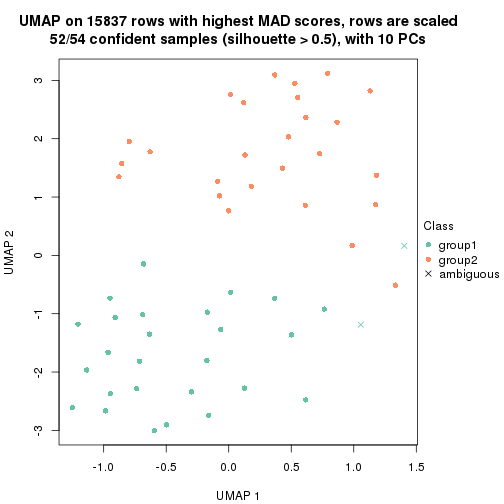
dimension_reduction(res, k = 3, method = "UMAP")
dimension_reduction(res, k = 4, method = "UMAP")
dimension_reduction(res, k = 5, method = "UMAP")
dimension_reduction(res, k = 6, method = "UMAP")
Following heatmap shows how subgroups are split when increasing k:
collect_classes(res)
Test correlation between subgroups and known annotations. If the known annotation is numeric, one-way ANOVA test is applied, and if the known annotation is discrete, chi-squared contingency table test is applied.
test_to_known_factors(res)
#> n disease.state(p) protocol(p) k
#> MAD:NMF 52 2.55e-02 0.2912 2
#> MAD:NMF 51 5.04e-04 0.0606 3
#> MAD:NMF 52 5.57e-05 0.0465 4
#> MAD:NMF 46 1.56e-04 0.0752 5
#> MAD:NMF 44 8.34e-03 0.1316 6
If matrix rows can be associated to genes, consider to use GO_Enrichment(res,
...) to perform function enrichment for the signature genes.
The object with results only for a single top-value method and a single partition method can be extracted as:
res = res_list["ATC", "hclust"]
# you can also extract it by
# res = res_list["ATC:hclust"]
A summary of res and all the functions that can be applied to it:
res
#> A 'ConsensusPartition' object with k = 2, 3, 4, 5, 6.
#> On a matrix with 15837 rows and 54 columns.
#> Top rows (1000, 2000, 3000, 4000, 5000) are extracted by 'ATC' method.
#> Subgroups are detected by 'hclust' method.
#> Performed in total 1250 partitions by row resampling.
#> Best k for subgroups seems to be 2.
#>
#> Following methods can be applied to this 'ConsensusPartition' object:
#> [1] "cola_report" "collect_classes" "collect_plots"
#> [4] "collect_stats" "colnames" "compare_signatures"
#> [7] "consensus_heatmap" "dimension_reduction" "functional_enrichment"
#> [10] "get_anno_col" "get_anno" "get_classes"
#> [13] "get_consensus" "get_matrix" "get_membership"
#> [16] "get_param" "get_signatures" "get_stats"
#> [19] "is_best_k" "is_stable_k" "membership_heatmap"
#> [22] "ncol" "nrow" "plot_ecdf"
#> [25] "rownames" "select_partition_number" "show"
#> [28] "suggest_best_k" "test_to_known_factors"
collect_plots() function collects all the plots made from res for all k (number of partitions)
into one single page to provide an easy and fast comparison between different k.
collect_plots(res)
The plots are:
k and the heatmap of
predicted classes for each k.k.k.k.All the plots in panels can be made by individual functions and they are plotted later in this section.
select_partition_number() produces several plots showing different
statistics for choosing “optimized” k. There are following statistics:
k;k, the area increased is defined as \(A_k - A_{k-1}\).The detailed explanations of these statistics can be found in the cola vignette.
Generally speaking, lower PAC score, higher mean silhouette score or higher
concordance corresponds to better partition. Rand index and Jaccard index
measure how similar the current partition is compared to partition with k-1.
If they are too similar, we won't accept k is better than k-1.
select_partition_number(res)
The numeric values for all these statistics can be obtained by get_stats().
get_stats(res)
#> k 1-PAC mean_silhouette concordance area_increased Rand Jaccard
#> 2 2 0.609 0.896 0.946 0.4747 0.508 0.508
#> 3 3 0.681 0.730 0.892 0.2103 0.927 0.856
#> 4 4 0.614 0.597 0.770 0.1488 0.814 0.601
#> 5 5 0.740 0.743 0.847 0.1038 0.919 0.755
#> 6 6 0.751 0.706 0.801 0.0339 0.971 0.896
suggest_best_k() suggests the best \(k\) based on these statistics. The rules are as follows:
NA.suggest_best_k(res)
#> [1] 2
Following shows the table of the partitions (You need to click the show/hide
code output link to see it). The membership matrix (columns with name p*)
is inferred by
clue::cl_consensus()
function with the SE method. Basically the value in the membership matrix
represents the probability to belong to a certain group. The finall class
label for an item is determined with the group with highest probability it
belongs to.
In get_classes() function, the entropy is calculated from the membership
matrix and the silhouette score is calculated from the consensus matrix.
cbind(get_classes(res, k = 2), get_membership(res, k = 2))
#> class entropy silhouette p1 p2
#> GSM134895 1 0.0000 0.958 1.000 0.000
#> GSM134896 2 0.0000 0.909 0.000 1.000
#> GSM134897 2 0.0672 0.910 0.008 0.992
#> GSM134898 2 0.0672 0.910 0.008 0.992
#> GSM134905 2 0.0000 0.909 0.000 1.000
#> GSM135018 2 0.0000 0.909 0.000 1.000
#> GSM135674 1 0.0000 0.958 1.000 0.000
#> GSM135683 2 0.0000 0.909 0.000 1.000
#> GSM135685 2 0.0000 0.909 0.000 1.000
#> GSM135699 1 0.0000 0.958 1.000 0.000
#> GSM135019 2 0.0000 0.909 0.000 1.000
#> GSM135026 1 0.0000 0.958 1.000 0.000
#> GSM135033 2 0.0000 0.909 0.000 1.000
#> GSM135042 1 0.6247 0.822 0.844 0.156
#> GSM135057 2 0.6048 0.857 0.148 0.852
#> GSM135068 1 0.0000 0.958 1.000 0.000
#> GSM135071 2 0.8144 0.724 0.252 0.748
#> GSM135078 2 0.0000 0.909 0.000 1.000
#> GSM135163 1 0.6712 0.797 0.824 0.176
#> GSM135166 2 0.0000 0.909 0.000 1.000
#> GSM135223 2 0.6048 0.857 0.148 0.852
#> GSM135224 2 0.6048 0.857 0.148 0.852
#> GSM135228 1 0.0000 0.958 1.000 0.000
#> GSM135262 1 0.0000 0.958 1.000 0.000
#> GSM135263 2 0.6048 0.857 0.148 0.852
#> GSM135279 2 0.6247 0.849 0.156 0.844
#> GSM135661 1 0.0000 0.958 1.000 0.000
#> GSM135662 2 0.9944 0.221 0.456 0.544
#> GSM135663 2 0.6343 0.845 0.160 0.840
#> GSM135664 2 0.4815 0.878 0.104 0.896
#> GSM135665 1 0.0000 0.958 1.000 0.000
#> GSM135666 1 0.0000 0.958 1.000 0.000
#> GSM135668 1 0.0000 0.958 1.000 0.000
#> GSM135670 1 0.0000 0.958 1.000 0.000
#> GSM135671 1 0.0000 0.958 1.000 0.000
#> GSM135675 1 0.0000 0.958 1.000 0.000
#> GSM135676 1 0.0000 0.958 1.000 0.000
#> GSM135677 1 0.0000 0.958 1.000 0.000
#> GSM135679 1 0.0000 0.958 1.000 0.000
#> GSM135680 1 0.6148 0.826 0.848 0.152
#> GSM135681 1 0.4431 0.885 0.908 0.092
#> GSM135682 2 0.0672 0.910 0.008 0.992
#> GSM135687 1 0.0000 0.958 1.000 0.000
#> GSM135688 1 0.0000 0.958 1.000 0.000
#> GSM135689 1 0.0000 0.958 1.000 0.000
#> GSM135693 1 0.6712 0.797 0.824 0.176
#> GSM135694 1 0.0000 0.958 1.000 0.000
#> GSM135695 1 0.0000 0.958 1.000 0.000
#> GSM135696 1 0.0000 0.958 1.000 0.000
#> GSM135697 1 0.0000 0.958 1.000 0.000
#> GSM135698 1 0.7376 0.750 0.792 0.208
#> GSM135700 1 0.0000 0.958 1.000 0.000
#> GSM135702 1 0.6801 0.792 0.820 0.180
#> GSM135703 2 0.0672 0.910 0.008 0.992
cbind(get_classes(res, k = 3), get_membership(res, k = 3))
#> class entropy silhouette p1 p2 p3
#> GSM134895 1 0.0000 0.934 1.000 0.000 0.000
#> GSM134896 3 0.0000 0.706 0.000 0.000 1.000
#> GSM134897 2 0.5859 0.383 0.000 0.656 0.344
#> GSM134898 2 0.5859 0.383 0.000 0.656 0.344
#> GSM134905 3 0.0000 0.706 0.000 0.000 1.000
#> GSM135018 2 0.6308 -0.112 0.000 0.508 0.492
#> GSM135674 1 0.0237 0.933 0.996 0.004 0.000
#> GSM135683 3 0.5905 0.398 0.000 0.352 0.648
#> GSM135685 3 0.0000 0.706 0.000 0.000 1.000
#> GSM135699 1 0.0000 0.934 1.000 0.000 0.000
#> GSM135019 3 0.6267 0.183 0.000 0.452 0.548
#> GSM135026 1 0.0747 0.926 0.984 0.016 0.000
#> GSM135033 3 0.6280 0.156 0.000 0.460 0.540
#> GSM135042 1 0.5254 0.707 0.736 0.264 0.000
#> GSM135057 2 0.0000 0.709 0.000 1.000 0.000
#> GSM135068 1 0.0000 0.934 1.000 0.000 0.000
#> GSM135071 2 0.3038 0.612 0.104 0.896 0.000
#> GSM135078 2 0.6235 0.084 0.000 0.564 0.436
#> GSM135163 1 0.5465 0.674 0.712 0.288 0.000
#> GSM135166 3 0.0000 0.706 0.000 0.000 1.000
#> GSM135223 2 0.0000 0.709 0.000 1.000 0.000
#> GSM135224 2 0.0000 0.709 0.000 1.000 0.000
#> GSM135228 1 0.0000 0.934 1.000 0.000 0.000
#> GSM135262 1 0.0000 0.934 1.000 0.000 0.000
#> GSM135263 2 0.0000 0.709 0.000 1.000 0.000
#> GSM135279 2 0.0829 0.707 0.012 0.984 0.004
#> GSM135661 1 0.0000 0.934 1.000 0.000 0.000
#> GSM135662 2 0.5621 0.336 0.308 0.692 0.000
#> GSM135663 2 0.0592 0.705 0.012 0.988 0.000
#> GSM135664 2 0.2261 0.686 0.000 0.932 0.068
#> GSM135665 1 0.0000 0.934 1.000 0.000 0.000
#> GSM135666 1 0.0000 0.934 1.000 0.000 0.000
#> GSM135668 1 0.0424 0.931 0.992 0.008 0.000
#> GSM135670 1 0.0000 0.934 1.000 0.000 0.000
#> GSM135671 1 0.0000 0.934 1.000 0.000 0.000
#> GSM135675 1 0.0000 0.934 1.000 0.000 0.000
#> GSM135676 1 0.0000 0.934 1.000 0.000 0.000
#> GSM135677 1 0.0000 0.934 1.000 0.000 0.000
#> GSM135679 1 0.0000 0.934 1.000 0.000 0.000
#> GSM135680 1 0.5254 0.707 0.736 0.264 0.000
#> GSM135681 1 0.4346 0.791 0.816 0.184 0.000
#> GSM135682 2 0.5138 0.540 0.000 0.748 0.252
#> GSM135687 1 0.0000 0.934 1.000 0.000 0.000
#> GSM135688 1 0.0000 0.934 1.000 0.000 0.000
#> GSM135689 1 0.0000 0.934 1.000 0.000 0.000
#> GSM135693 1 0.5465 0.674 0.712 0.288 0.000
#> GSM135694 1 0.0000 0.934 1.000 0.000 0.000
#> GSM135695 1 0.0000 0.934 1.000 0.000 0.000
#> GSM135696 1 0.0000 0.934 1.000 0.000 0.000
#> GSM135697 1 0.0000 0.934 1.000 0.000 0.000
#> GSM135698 1 0.5926 0.566 0.644 0.356 0.000
#> GSM135700 1 0.0424 0.931 0.992 0.008 0.000
#> GSM135702 1 0.5216 0.710 0.740 0.260 0.000
#> GSM135703 2 0.5138 0.540 0.000 0.748 0.252
cbind(get_classes(res, k = 4), get_membership(res, k = 4))
#> class entropy silhouette p1 p2 p3 p4
#> GSM134895 1 0.3610 0.7105 0.800 0.000 0.000 0.200
#> GSM134896 3 0.0000 0.8387 0.000 0.000 1.000 0.000
#> GSM134897 2 0.4008 0.4547 0.000 0.756 0.244 0.000
#> GSM134898 2 0.4008 0.4547 0.000 0.756 0.244 0.000
#> GSM134905 3 0.0000 0.8387 0.000 0.000 1.000 0.000
#> GSM135018 2 0.4830 0.1823 0.000 0.608 0.392 0.000
#> GSM135674 1 0.4008 0.6386 0.756 0.000 0.000 0.244
#> GSM135683 3 0.6559 -0.0547 0.000 0.456 0.468 0.076
#> GSM135685 3 0.0000 0.8387 0.000 0.000 1.000 0.000
#> GSM135699 1 0.0000 0.8842 1.000 0.000 0.000 0.000
#> GSM135019 2 0.4961 0.0785 0.000 0.552 0.448 0.000
#> GSM135026 1 0.4304 0.5343 0.716 0.000 0.000 0.284
#> GSM135033 2 0.4948 0.1026 0.000 0.560 0.440 0.000
#> GSM135042 4 0.4888 0.5232 0.412 0.000 0.000 0.588
#> GSM135057 2 0.4804 0.5047 0.000 0.616 0.000 0.384
#> GSM135068 1 0.0469 0.8807 0.988 0.000 0.000 0.012
#> GSM135071 4 0.6396 -0.2966 0.072 0.380 0.000 0.548
#> GSM135078 2 0.4605 0.2863 0.000 0.664 0.336 0.000
#> GSM135163 4 0.4991 0.5599 0.388 0.004 0.000 0.608
#> GSM135166 3 0.0000 0.8387 0.000 0.000 1.000 0.000
#> GSM135223 2 0.4804 0.5047 0.000 0.616 0.000 0.384
#> GSM135224 2 0.4804 0.5047 0.000 0.616 0.000 0.384
#> GSM135228 1 0.3356 0.7443 0.824 0.000 0.000 0.176
#> GSM135262 1 0.3356 0.7443 0.824 0.000 0.000 0.176
#> GSM135263 2 0.4713 0.5049 0.000 0.640 0.000 0.360
#> GSM135279 2 0.3975 0.4866 0.000 0.760 0.000 0.240
#> GSM135661 1 0.3172 0.7611 0.840 0.000 0.000 0.160
#> GSM135662 4 0.7037 0.2245 0.168 0.268 0.000 0.564
#> GSM135663 4 0.4994 -0.4701 0.000 0.480 0.000 0.520
#> GSM135664 2 0.5713 0.5124 0.000 0.604 0.036 0.360
#> GSM135665 1 0.0000 0.8842 1.000 0.000 0.000 0.000
#> GSM135666 1 0.1022 0.8716 0.968 0.000 0.000 0.032
#> GSM135668 1 0.4103 0.6140 0.744 0.000 0.000 0.256
#> GSM135670 1 0.0000 0.8842 1.000 0.000 0.000 0.000
#> GSM135671 1 0.0000 0.8842 1.000 0.000 0.000 0.000
#> GSM135675 1 0.0000 0.8842 1.000 0.000 0.000 0.000
#> GSM135676 1 0.0000 0.8842 1.000 0.000 0.000 0.000
#> GSM135677 1 0.0336 0.8819 0.992 0.000 0.000 0.008
#> GSM135679 1 0.0000 0.8842 1.000 0.000 0.000 0.000
#> GSM135680 4 0.4888 0.5301 0.412 0.000 0.000 0.588
#> GSM135681 4 0.4999 0.2928 0.492 0.000 0.000 0.508
#> GSM135682 2 0.3257 0.5081 0.000 0.844 0.152 0.004
#> GSM135687 1 0.0000 0.8842 1.000 0.000 0.000 0.000
#> GSM135688 1 0.0000 0.8842 1.000 0.000 0.000 0.000
#> GSM135689 1 0.0817 0.8754 0.976 0.000 0.000 0.024
#> GSM135693 4 0.4991 0.5599 0.388 0.004 0.000 0.608
#> GSM135694 1 0.0000 0.8842 1.000 0.000 0.000 0.000
#> GSM135695 1 0.0469 0.8813 0.988 0.000 0.000 0.012
#> GSM135696 1 0.0000 0.8842 1.000 0.000 0.000 0.000
#> GSM135697 1 0.0000 0.8842 1.000 0.000 0.000 0.000
#> GSM135698 4 0.5018 0.5662 0.332 0.012 0.000 0.656
#> GSM135700 1 0.4072 0.6200 0.748 0.000 0.000 0.252
#> GSM135702 4 0.5337 0.5044 0.424 0.012 0.000 0.564
#> GSM135703 2 0.3257 0.5081 0.000 0.844 0.152 0.004
cbind(get_classes(res, k = 5), get_membership(res, k = 5))
#> class entropy silhouette p1 p2 p3 p4 p5
#> GSM134895 1 0.3636 0.6460 0.728 0.000 0.000 0.272 0.000
#> GSM134896 5 0.3774 1.0000 0.000 0.000 0.296 0.000 0.704
#> GSM134897 3 0.3816 0.7025 0.000 0.304 0.696 0.000 0.000
#> GSM134898 3 0.3816 0.7025 0.000 0.304 0.696 0.000 0.000
#> GSM134905 5 0.3774 1.0000 0.000 0.000 0.296 0.000 0.704
#> GSM135018 3 0.3919 0.7134 0.000 0.188 0.776 0.000 0.036
#> GSM135674 1 0.4045 0.5003 0.644 0.000 0.000 0.356 0.000
#> GSM135683 3 0.1908 0.5851 0.000 0.000 0.908 0.000 0.092
#> GSM135685 5 0.3774 1.0000 0.000 0.000 0.296 0.000 0.704
#> GSM135699 1 0.0000 0.8860 1.000 0.000 0.000 0.000 0.000
#> GSM135019 3 0.2020 0.6899 0.000 0.100 0.900 0.000 0.000
#> GSM135026 4 0.4278 0.0724 0.452 0.000 0.000 0.548 0.000
#> GSM135033 3 0.2127 0.6981 0.000 0.108 0.892 0.000 0.000
#> GSM135042 4 0.1608 0.8047 0.072 0.000 0.000 0.928 0.000
#> GSM135057 2 0.0703 0.8288 0.000 0.976 0.000 0.024 0.000
#> GSM135068 1 0.0510 0.8812 0.984 0.000 0.000 0.016 0.000
#> GSM135071 2 0.5101 0.5940 0.000 0.612 0.012 0.348 0.028
#> GSM135078 3 0.3210 0.7441 0.000 0.212 0.788 0.000 0.000
#> GSM135163 4 0.1357 0.8021 0.048 0.004 0.000 0.948 0.000
#> GSM135166 5 0.3774 1.0000 0.000 0.000 0.296 0.000 0.704
#> GSM135223 2 0.0703 0.8288 0.000 0.976 0.000 0.024 0.000
#> GSM135224 2 0.0703 0.8288 0.000 0.976 0.000 0.024 0.000
#> GSM135228 1 0.3274 0.7200 0.780 0.000 0.000 0.220 0.000
#> GSM135262 1 0.3274 0.7200 0.780 0.000 0.000 0.220 0.000
#> GSM135263 2 0.0162 0.8179 0.000 0.996 0.000 0.004 0.000
#> GSM135279 3 0.8437 0.1774 0.000 0.212 0.356 0.228 0.204
#> GSM135661 1 0.3003 0.7517 0.812 0.000 0.000 0.188 0.000
#> GSM135662 4 0.4251 0.0235 0.000 0.372 0.000 0.624 0.004
#> GSM135663 2 0.3607 0.7131 0.000 0.752 0.000 0.244 0.004
#> GSM135664 2 0.4184 0.7217 0.000 0.812 0.080 0.080 0.028
#> GSM135665 1 0.0000 0.8860 1.000 0.000 0.000 0.000 0.000
#> GSM135666 1 0.1121 0.8681 0.956 0.000 0.000 0.044 0.000
#> GSM135668 1 0.4150 0.4278 0.612 0.000 0.000 0.388 0.000
#> GSM135670 1 0.0000 0.8860 1.000 0.000 0.000 0.000 0.000
#> GSM135671 1 0.0000 0.8860 1.000 0.000 0.000 0.000 0.000
#> GSM135675 1 0.0000 0.8860 1.000 0.000 0.000 0.000 0.000
#> GSM135676 1 0.0000 0.8860 1.000 0.000 0.000 0.000 0.000
#> GSM135677 1 0.0404 0.8824 0.988 0.000 0.000 0.012 0.000
#> GSM135679 1 0.0000 0.8860 1.000 0.000 0.000 0.000 0.000
#> GSM135680 4 0.1768 0.8070 0.072 0.004 0.000 0.924 0.000
#> GSM135681 4 0.2605 0.7504 0.148 0.000 0.000 0.852 0.000
#> GSM135682 3 0.4171 0.6453 0.000 0.396 0.604 0.000 0.000
#> GSM135687 1 0.0000 0.8860 1.000 0.000 0.000 0.000 0.000
#> GSM135688 1 0.0000 0.8860 1.000 0.000 0.000 0.000 0.000
#> GSM135689 1 0.0794 0.8759 0.972 0.000 0.000 0.028 0.000
#> GSM135693 4 0.1357 0.8021 0.048 0.004 0.000 0.948 0.000
#> GSM135694 1 0.0000 0.8860 1.000 0.000 0.000 0.000 0.000
#> GSM135695 1 0.0404 0.8831 0.988 0.000 0.000 0.012 0.000
#> GSM135696 1 0.0000 0.8860 1.000 0.000 0.000 0.000 0.000
#> GSM135697 1 0.0000 0.8860 1.000 0.000 0.000 0.000 0.000
#> GSM135698 4 0.1026 0.7352 0.004 0.024 0.000 0.968 0.004
#> GSM135700 1 0.4302 0.1190 0.520 0.000 0.000 0.480 0.000
#> GSM135702 4 0.2189 0.7999 0.084 0.012 0.000 0.904 0.000
#> GSM135703 3 0.4171 0.6453 0.000 0.396 0.604 0.000 0.000
cbind(get_classes(res, k = 6), get_membership(res, k = 6))
#> class entropy silhouette p1 p2 p3 p4 p5 p6
#> GSM134895 1 0.4628 0.6118 0.688 0.000 0.008 0.240 0.004 0.060
#> GSM134896 6 0.1501 1.0000 0.000 0.000 0.076 0.000 0.000 0.924
#> GSM134897 3 0.4012 0.7741 0.000 0.164 0.752 0.000 0.000 0.084
#> GSM134898 3 0.4012 0.7741 0.000 0.164 0.752 0.000 0.000 0.084
#> GSM134905 6 0.1501 1.0000 0.000 0.000 0.076 0.000 0.000 0.924
#> GSM135018 3 0.3354 0.7379 0.000 0.036 0.796 0.000 0.000 0.168
#> GSM135674 1 0.5116 0.3787 0.572 0.000 0.008 0.356 0.004 0.060
#> GSM135683 3 0.3924 0.6068 0.000 0.000 0.740 0.000 0.208 0.052
#> GSM135685 6 0.1501 1.0000 0.000 0.000 0.076 0.000 0.000 0.924
#> GSM135699 1 0.0000 0.8944 1.000 0.000 0.000 0.000 0.000 0.000
#> GSM135019 3 0.2178 0.7689 0.000 0.000 0.868 0.000 0.000 0.132
#> GSM135026 4 0.6070 0.3087 0.344 0.000 0.008 0.524 0.052 0.072
#> GSM135033 3 0.2346 0.7758 0.000 0.008 0.868 0.000 0.000 0.124
#> GSM135042 4 0.2317 0.6614 0.016 0.000 0.004 0.908 0.036 0.036
#> GSM135057 2 0.1765 0.7126 0.000 0.904 0.096 0.000 0.000 0.000
#> GSM135068 1 0.0547 0.8886 0.980 0.000 0.000 0.020 0.000 0.000
#> GSM135071 2 0.6038 0.2804 0.000 0.516 0.020 0.292 0.172 0.000
#> GSM135078 3 0.2190 0.7968 0.000 0.060 0.900 0.000 0.000 0.040
#> GSM135163 4 0.0146 0.6685 0.000 0.004 0.000 0.996 0.000 0.000
#> GSM135166 6 0.1501 1.0000 0.000 0.000 0.076 0.000 0.000 0.924
#> GSM135223 2 0.1765 0.7126 0.000 0.904 0.096 0.000 0.000 0.000
#> GSM135224 2 0.1765 0.7126 0.000 0.904 0.096 0.000 0.000 0.000
#> GSM135228 1 0.4000 0.7085 0.752 0.000 0.004 0.184 0.000 0.060
#> GSM135262 1 0.4000 0.7085 0.752 0.000 0.004 0.184 0.000 0.060
#> GSM135263 2 0.2134 0.6469 0.000 0.904 0.052 0.000 0.044 0.000
#> GSM135279 5 0.4602 0.0000 0.000 0.072 0.036 0.156 0.736 0.000
#> GSM135661 1 0.3691 0.7471 0.788 0.000 0.004 0.148 0.000 0.060
#> GSM135662 4 0.5381 -0.1856 0.000 0.296 0.000 0.560 0.144 0.000
#> GSM135663 2 0.5164 0.3981 0.000 0.648 0.008 0.172 0.172 0.000
#> GSM135664 2 0.5972 0.5494 0.000 0.560 0.240 0.028 0.172 0.000
#> GSM135665 1 0.0000 0.8944 1.000 0.000 0.000 0.000 0.000 0.000
#> GSM135666 1 0.1844 0.8628 0.924 0.000 0.000 0.048 0.004 0.024
#> GSM135668 1 0.5188 0.2903 0.540 0.000 0.008 0.388 0.004 0.060
#> GSM135670 1 0.0146 0.8938 0.996 0.000 0.000 0.000 0.000 0.004
#> GSM135671 1 0.0000 0.8944 1.000 0.000 0.000 0.000 0.000 0.000
#> GSM135675 1 0.0000 0.8944 1.000 0.000 0.000 0.000 0.000 0.000
#> GSM135676 1 0.0000 0.8944 1.000 0.000 0.000 0.000 0.000 0.000
#> GSM135677 1 0.0458 0.8897 0.984 0.000 0.000 0.016 0.000 0.000
#> GSM135679 1 0.0000 0.8944 1.000 0.000 0.000 0.000 0.000 0.000
#> GSM135680 4 0.0547 0.6788 0.020 0.000 0.000 0.980 0.000 0.000
#> GSM135681 4 0.2556 0.6472 0.048 0.000 0.000 0.888 0.052 0.012
#> GSM135682 3 0.2823 0.7328 0.000 0.204 0.796 0.000 0.000 0.000
#> GSM135687 1 0.0000 0.8944 1.000 0.000 0.000 0.000 0.000 0.000
#> GSM135688 1 0.0000 0.8944 1.000 0.000 0.000 0.000 0.000 0.000
#> GSM135689 1 0.1296 0.8781 0.952 0.000 0.004 0.012 0.000 0.032
#> GSM135693 4 0.0146 0.6685 0.000 0.004 0.000 0.996 0.000 0.000
#> GSM135694 1 0.0000 0.8944 1.000 0.000 0.000 0.000 0.000 0.000
#> GSM135695 1 0.0964 0.8862 0.968 0.000 0.000 0.016 0.004 0.012
#> GSM135696 1 0.0000 0.8944 1.000 0.000 0.000 0.000 0.000 0.000
#> GSM135697 1 0.0260 0.8929 0.992 0.000 0.000 0.000 0.000 0.008
#> GSM135698 4 0.1501 0.6063 0.000 0.000 0.000 0.924 0.076 0.000
#> GSM135700 4 0.5867 0.0855 0.408 0.000 0.008 0.484 0.036 0.064
#> GSM135702 4 0.1464 0.6738 0.036 0.004 0.000 0.944 0.016 0.000
#> GSM135703 3 0.2823 0.7328 0.000 0.204 0.796 0.000 0.000 0.000
Heatmaps for the consensus matrix. It visualizes the probability of two samples to be in a same group.
consensus_heatmap(res, k = 2)
consensus_heatmap(res, k = 3)
consensus_heatmap(res, k = 4)
consensus_heatmap(res, k = 5)
consensus_heatmap(res, k = 6)
Heatmaps for the membership of samples in all partitions to see how consistent they are:
membership_heatmap(res, k = 2)
membership_heatmap(res, k = 3)
membership_heatmap(res, k = 4)
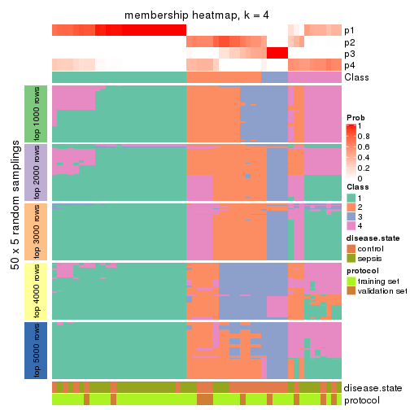
membership_heatmap(res, k = 5)
membership_heatmap(res, k = 6)
As soon as we have had the classes for columns, we can look for signatures which are significantly different between classes which can be candidate marks for certain classes. Following are the heatmaps for signatures.
Signature heatmaps where rows are scaled:
get_signatures(res, k = 2)
get_signatures(res, k = 3)
get_signatures(res, k = 4)
get_signatures(res, k = 5)
get_signatures(res, k = 6)
Signature heatmaps where rows are not scaled:
get_signatures(res, k = 2, scale_rows = FALSE)
get_signatures(res, k = 3, scale_rows = FALSE)
get_signatures(res, k = 4, scale_rows = FALSE)
get_signatures(res, k = 5, scale_rows = FALSE)
get_signatures(res, k = 6, scale_rows = FALSE)
Compare the overlap of signatures from different k:
compare_signatures(res)
get_signature() returns a data frame invisibly. TO get the list of signatures, the function
call should be assigned to a variable explicitly. In following code, if plot argument is set
to FALSE, no heatmap is plotted while only the differential analysis is performed.
# code only for demonstration
tb = get_signature(res, k = ..., plot = FALSE)
An example of the output of tb is:
#> which_row fdr mean_1 mean_2 scaled_mean_1 scaled_mean_2 km
#> 1 38 0.042760348 8.373488 9.131774 -0.5533452 0.5164555 1
#> 2 40 0.018707592 7.106213 8.469186 -0.6173731 0.5762149 1
#> 3 55 0.019134737 10.221463 11.207825 -0.6159697 0.5749050 1
#> 4 59 0.006059896 5.921854 7.869574 -0.6899429 0.6439467 1
#> 5 60 0.018055526 8.928898 10.211722 -0.6204761 0.5791110 1
#> 6 98 0.009384629 15.714769 14.887706 0.6635654 -0.6193277 2
...
The columns in tb are:
which_row: row indices corresponding to the input matrix.fdr: FDR for the differential test. mean_x: The mean value in group x.scaled_mean_x: The mean value in group x after rows are scaled.km: Row groups if k-means clustering is applied to rows.UMAP plot which shows how samples are separated.
dimension_reduction(res, k = 2, method = "UMAP")
dimension_reduction(res, k = 3, method = "UMAP")
dimension_reduction(res, k = 4, method = "UMAP")
dimension_reduction(res, k = 5, method = "UMAP")
dimension_reduction(res, k = 6, method = "UMAP")
Following heatmap shows how subgroups are split when increasing k:
collect_classes(res)
Test correlation between subgroups and known annotations. If the known annotation is numeric, one-way ANOVA test is applied, and if the known annotation is discrete, chi-squared contingency table test is applied.
test_to_known_factors(res)
#> n disease.state(p) protocol(p) k
#> ATC:hclust 53 0.00227 0.270 2
#> ATC:hclust 46 0.01128 0.154 3
#> ATC:hclust 42 0.03115 0.142 4
#> ATC:hclust 49 0.00615 0.079 5
#> ATC:hclust 46 0.00330 0.117 6
If matrix rows can be associated to genes, consider to use GO_Enrichment(res,
...) to perform function enrichment for the signature genes.
The object with results only for a single top-value method and a single partition method can be extracted as:
res = res_list["ATC", "kmeans"]
# you can also extract it by
# res = res_list["ATC:kmeans"]
A summary of res and all the functions that can be applied to it:
res
#> A 'ConsensusPartition' object with k = 2, 3, 4, 5, 6.
#> On a matrix with 15837 rows and 54 columns.
#> Top rows (1000, 2000, 3000, 4000, 5000) are extracted by 'ATC' method.
#> Subgroups are detected by 'kmeans' method.
#> Performed in total 1250 partitions by row resampling.
#> Best k for subgroups seems to be 3.
#>
#> Following methods can be applied to this 'ConsensusPartition' object:
#> [1] "cola_report" "collect_classes" "collect_plots"
#> [4] "collect_stats" "colnames" "compare_signatures"
#> [7] "consensus_heatmap" "dimension_reduction" "functional_enrichment"
#> [10] "get_anno_col" "get_anno" "get_classes"
#> [13] "get_consensus" "get_matrix" "get_membership"
#> [16] "get_param" "get_signatures" "get_stats"
#> [19] "is_best_k" "is_stable_k" "membership_heatmap"
#> [22] "ncol" "nrow" "plot_ecdf"
#> [25] "rownames" "select_partition_number" "show"
#> [28] "suggest_best_k" "test_to_known_factors"
collect_plots() function collects all the plots made from res for all k (number of partitions)
into one single page to provide an easy and fast comparison between different k.
collect_plots(res)
The plots are:
k and the heatmap of
predicted classes for each k.k.k.k.All the plots in panels can be made by individual functions and they are plotted later in this section.
select_partition_number() produces several plots showing different
statistics for choosing “optimized” k. There are following statistics:
k;k, the area increased is defined as \(A_k - A_{k-1}\).The detailed explanations of these statistics can be found in the cola vignette.
Generally speaking, lower PAC score, higher mean silhouette score or higher
concordance corresponds to better partition. Rand index and Jaccard index
measure how similar the current partition is compared to partition with k-1.
If they are too similar, we won't accept k is better than k-1.
select_partition_number(res)
The numeric values for all these statistics can be obtained by get_stats().
get_stats(res)
#> k 1-PAC mean_silhouette concordance area_increased Rand Jaccard
#> 2 2 1.000 0.981 0.992 0.4947 0.508 0.508
#> 3 3 1.000 0.927 0.966 0.3041 0.745 0.542
#> 4 4 0.736 0.809 0.877 0.1380 0.804 0.505
#> 5 5 0.709 0.623 0.783 0.0753 0.910 0.661
#> 6 6 0.718 0.577 0.752 0.0399 0.915 0.648
suggest_best_k() suggests the best \(k\) based on these statistics. The rules are as follows:
NA.suggest_best_k(res)
#> [1] 3
#> attr(,"optional")
#> [1] 2
There is also optional best \(k\) = 2 that is worth to check.
Following shows the table of the partitions (You need to click the show/hide
code output link to see it). The membership matrix (columns with name p*)
is inferred by
clue::cl_consensus()
function with the SE method. Basically the value in the membership matrix
represents the probability to belong to a certain group. The finall class
label for an item is determined with the group with highest probability it
belongs to.
In get_classes() function, the entropy is calculated from the membership
matrix and the silhouette score is calculated from the consensus matrix.
cbind(get_classes(res, k = 2), get_membership(res, k = 2))
#> class entropy silhouette p1 p2
#> GSM134895 1 0.0000 0.987 1.000 0.000
#> GSM134896 2 0.0000 0.999 0.000 1.000
#> GSM134897 2 0.0000 0.999 0.000 1.000
#> GSM134898 2 0.0000 0.999 0.000 1.000
#> GSM134905 2 0.0000 0.999 0.000 1.000
#> GSM135018 2 0.0000 0.999 0.000 1.000
#> GSM135674 1 0.0000 0.987 1.000 0.000
#> GSM135683 2 0.0000 0.999 0.000 1.000
#> GSM135685 2 0.0000 0.999 0.000 1.000
#> GSM135699 1 0.0000 0.987 1.000 0.000
#> GSM135019 2 0.0000 0.999 0.000 1.000
#> GSM135026 1 0.0000 0.987 1.000 0.000
#> GSM135033 2 0.0000 0.999 0.000 1.000
#> GSM135042 1 0.0000 0.987 1.000 0.000
#> GSM135057 2 0.0000 0.999 0.000 1.000
#> GSM135068 1 0.0000 0.987 1.000 0.000
#> GSM135071 2 0.0000 0.999 0.000 1.000
#> GSM135078 2 0.0000 0.999 0.000 1.000
#> GSM135163 2 0.1414 0.979 0.020 0.980
#> GSM135166 2 0.0000 0.999 0.000 1.000
#> GSM135223 2 0.0000 0.999 0.000 1.000
#> GSM135224 2 0.0000 0.999 0.000 1.000
#> GSM135228 1 0.0000 0.987 1.000 0.000
#> GSM135262 1 0.0000 0.987 1.000 0.000
#> GSM135263 2 0.0000 0.999 0.000 1.000
#> GSM135279 2 0.0000 0.999 0.000 1.000
#> GSM135661 1 0.0000 0.987 1.000 0.000
#> GSM135662 1 0.2236 0.953 0.964 0.036
#> GSM135663 2 0.0000 0.999 0.000 1.000
#> GSM135664 2 0.0000 0.999 0.000 1.000
#> GSM135665 1 0.0000 0.987 1.000 0.000
#> GSM135666 1 0.0000 0.987 1.000 0.000
#> GSM135668 1 0.0000 0.987 1.000 0.000
#> GSM135670 1 0.0000 0.987 1.000 0.000
#> GSM135671 1 0.0000 0.987 1.000 0.000
#> GSM135675 1 0.0000 0.987 1.000 0.000
#> GSM135676 1 0.0000 0.987 1.000 0.000
#> GSM135677 1 0.0000 0.987 1.000 0.000
#> GSM135679 1 0.0000 0.987 1.000 0.000
#> GSM135680 1 0.0376 0.984 0.996 0.004
#> GSM135681 1 0.0000 0.987 1.000 0.000
#> GSM135682 2 0.0000 0.999 0.000 1.000
#> GSM135687 1 0.0000 0.987 1.000 0.000
#> GSM135688 1 0.0000 0.987 1.000 0.000
#> GSM135689 1 0.0000 0.987 1.000 0.000
#> GSM135693 1 0.9323 0.469 0.652 0.348
#> GSM135694 1 0.0000 0.987 1.000 0.000
#> GSM135695 1 0.0000 0.987 1.000 0.000
#> GSM135696 1 0.0000 0.987 1.000 0.000
#> GSM135697 1 0.0000 0.987 1.000 0.000
#> GSM135698 1 0.0000 0.987 1.000 0.000
#> GSM135700 1 0.0000 0.987 1.000 0.000
#> GSM135702 1 0.0000 0.987 1.000 0.000
#> GSM135703 2 0.0000 0.999 0.000 1.000
cbind(get_classes(res, k = 3), get_membership(res, k = 3))
#> class entropy silhouette p1 p2 p3
#> GSM134895 1 0.1643 0.969 0.956 0.044 0.000
#> GSM134896 3 0.0000 0.912 0.000 0.000 1.000
#> GSM134897 3 0.1163 0.898 0.000 0.028 0.972
#> GSM134898 3 0.1163 0.898 0.000 0.028 0.972
#> GSM134905 3 0.0000 0.912 0.000 0.000 1.000
#> GSM135018 3 0.0000 0.912 0.000 0.000 1.000
#> GSM135674 1 0.1529 0.970 0.960 0.040 0.000
#> GSM135683 3 0.0000 0.912 0.000 0.000 1.000
#> GSM135685 3 0.0000 0.912 0.000 0.000 1.000
#> GSM135699 1 0.0000 0.986 1.000 0.000 0.000
#> GSM135019 3 0.0000 0.912 0.000 0.000 1.000
#> GSM135026 1 0.1643 0.969 0.956 0.044 0.000
#> GSM135033 3 0.0000 0.912 0.000 0.000 1.000
#> GSM135042 2 0.4702 0.665 0.212 0.788 0.000
#> GSM135057 2 0.1643 0.950 0.000 0.956 0.044
#> GSM135068 1 0.0000 0.986 1.000 0.000 0.000
#> GSM135071 2 0.0000 0.951 0.000 1.000 0.000
#> GSM135078 3 0.6168 0.330 0.000 0.412 0.588
#> GSM135163 2 0.0000 0.951 0.000 1.000 0.000
#> GSM135166 3 0.0000 0.912 0.000 0.000 1.000
#> GSM135223 2 0.1643 0.950 0.000 0.956 0.044
#> GSM135224 2 0.1643 0.950 0.000 0.956 0.044
#> GSM135228 1 0.1643 0.969 0.956 0.044 0.000
#> GSM135262 1 0.1643 0.969 0.956 0.044 0.000
#> GSM135263 2 0.1643 0.950 0.000 0.956 0.044
#> GSM135279 2 0.1643 0.950 0.000 0.956 0.044
#> GSM135661 1 0.1643 0.969 0.956 0.044 0.000
#> GSM135662 2 0.0000 0.951 0.000 1.000 0.000
#> GSM135663 2 0.1643 0.950 0.000 0.956 0.044
#> GSM135664 2 0.1643 0.950 0.000 0.956 0.044
#> GSM135665 1 0.0000 0.986 1.000 0.000 0.000
#> GSM135666 1 0.0000 0.986 1.000 0.000 0.000
#> GSM135668 1 0.1643 0.969 0.956 0.044 0.000
#> GSM135670 1 0.0000 0.986 1.000 0.000 0.000
#> GSM135671 1 0.0000 0.986 1.000 0.000 0.000
#> GSM135675 1 0.0000 0.986 1.000 0.000 0.000
#> GSM135676 1 0.0000 0.986 1.000 0.000 0.000
#> GSM135677 1 0.0000 0.986 1.000 0.000 0.000
#> GSM135679 1 0.0000 0.986 1.000 0.000 0.000
#> GSM135680 2 0.0000 0.951 0.000 1.000 0.000
#> GSM135681 2 0.0592 0.942 0.012 0.988 0.000
#> GSM135682 3 0.6244 0.262 0.000 0.440 0.560
#> GSM135687 1 0.0000 0.986 1.000 0.000 0.000
#> GSM135688 1 0.0000 0.986 1.000 0.000 0.000
#> GSM135689 1 0.0000 0.986 1.000 0.000 0.000
#> GSM135693 2 0.0000 0.951 0.000 1.000 0.000
#> GSM135694 1 0.0000 0.986 1.000 0.000 0.000
#> GSM135695 1 0.0000 0.986 1.000 0.000 0.000
#> GSM135696 1 0.0000 0.986 1.000 0.000 0.000
#> GSM135697 1 0.0000 0.986 1.000 0.000 0.000
#> GSM135698 2 0.0000 0.951 0.000 1.000 0.000
#> GSM135700 1 0.1643 0.969 0.956 0.044 0.000
#> GSM135702 2 0.0000 0.951 0.000 1.000 0.000
#> GSM135703 2 0.1643 0.950 0.000 0.956 0.044
cbind(get_classes(res, k = 4), get_membership(res, k = 4))
#> class entropy silhouette p1 p2 p3 p4
#> GSM134895 4 0.4331 0.701 0.288 0.000 0.000 0.712
#> GSM134896 3 0.0000 0.911 0.000 0.000 1.000 0.000
#> GSM134897 3 0.5632 0.779 0.000 0.196 0.712 0.092
#> GSM134898 3 0.5632 0.779 0.000 0.196 0.712 0.092
#> GSM134905 3 0.0000 0.911 0.000 0.000 1.000 0.000
#> GSM135018 3 0.0336 0.910 0.000 0.008 0.992 0.000
#> GSM135674 4 0.4331 0.701 0.288 0.000 0.000 0.712
#> GSM135683 3 0.2773 0.896 0.000 0.004 0.880 0.116
#> GSM135685 3 0.0000 0.911 0.000 0.000 1.000 0.000
#> GSM135699 1 0.0000 0.946 1.000 0.000 0.000 0.000
#> GSM135019 3 0.2081 0.902 0.000 0.000 0.916 0.084
#> GSM135026 4 0.4040 0.720 0.248 0.000 0.000 0.752
#> GSM135033 3 0.4610 0.856 0.000 0.100 0.800 0.100
#> GSM135042 4 0.2737 0.639 0.008 0.104 0.000 0.888
#> GSM135057 2 0.0921 0.888 0.000 0.972 0.000 0.028
#> GSM135068 1 0.1637 0.930 0.940 0.000 0.000 0.060
#> GSM135071 2 0.2530 0.866 0.000 0.888 0.000 0.112
#> GSM135078 2 0.5788 0.488 0.000 0.688 0.228 0.084
#> GSM135163 2 0.3444 0.821 0.000 0.816 0.000 0.184
#> GSM135166 3 0.0000 0.911 0.000 0.000 1.000 0.000
#> GSM135223 2 0.0921 0.888 0.000 0.972 0.000 0.028
#> GSM135224 2 0.0921 0.888 0.000 0.972 0.000 0.028
#> GSM135228 4 0.4866 0.548 0.404 0.000 0.000 0.596
#> GSM135262 4 0.4933 0.490 0.432 0.000 0.000 0.568
#> GSM135263 2 0.0336 0.880 0.000 0.992 0.000 0.008
#> GSM135279 2 0.2589 0.865 0.000 0.884 0.000 0.116
#> GSM135661 4 0.4925 0.500 0.428 0.000 0.000 0.572
#> GSM135662 2 0.3801 0.788 0.000 0.780 0.000 0.220
#> GSM135663 2 0.1022 0.888 0.000 0.968 0.000 0.032
#> GSM135664 2 0.0336 0.882 0.000 0.992 0.000 0.008
#> GSM135665 1 0.0000 0.946 1.000 0.000 0.000 0.000
#> GSM135666 1 0.1637 0.930 0.940 0.000 0.000 0.060
#> GSM135668 4 0.4040 0.720 0.248 0.000 0.000 0.752
#> GSM135670 1 0.1637 0.930 0.940 0.000 0.000 0.060
#> GSM135671 1 0.0000 0.946 1.000 0.000 0.000 0.000
#> GSM135675 1 0.0000 0.946 1.000 0.000 0.000 0.000
#> GSM135676 1 0.0000 0.946 1.000 0.000 0.000 0.000
#> GSM135677 1 0.1637 0.930 0.940 0.000 0.000 0.060
#> GSM135679 1 0.0000 0.946 1.000 0.000 0.000 0.000
#> GSM135680 4 0.4585 0.274 0.000 0.332 0.000 0.668
#> GSM135681 4 0.2760 0.625 0.000 0.128 0.000 0.872
#> GSM135682 2 0.4955 0.640 0.000 0.772 0.144 0.084
#> GSM135687 1 0.1637 0.930 0.940 0.000 0.000 0.060
#> GSM135688 1 0.0000 0.946 1.000 0.000 0.000 0.000
#> GSM135689 1 0.3528 0.741 0.808 0.000 0.000 0.192
#> GSM135693 2 0.3528 0.818 0.000 0.808 0.000 0.192
#> GSM135694 1 0.0000 0.946 1.000 0.000 0.000 0.000
#> GSM135695 1 0.2973 0.825 0.856 0.000 0.000 0.144
#> GSM135696 1 0.0000 0.946 1.000 0.000 0.000 0.000
#> GSM135697 1 0.0921 0.941 0.972 0.000 0.000 0.028
#> GSM135698 4 0.3444 0.549 0.000 0.184 0.000 0.816
#> GSM135700 4 0.4250 0.709 0.276 0.000 0.000 0.724
#> GSM135702 4 0.2973 0.605 0.000 0.144 0.000 0.856
#> GSM135703 2 0.0188 0.883 0.000 0.996 0.000 0.004
cbind(get_classes(res, k = 5), get_membership(res, k = 5))
#> class entropy silhouette p1 p2 p3 p4 p5
#> GSM134895 5 0.2006 0.7361 0.072 0.000 0.000 0.012 0.916
#> GSM134896 3 0.0000 0.8133 0.000 0.000 1.000 0.000 0.000
#> GSM134897 3 0.6690 0.4949 0.000 0.360 0.492 0.116 0.032
#> GSM134898 3 0.6690 0.4949 0.000 0.360 0.492 0.116 0.032
#> GSM134905 3 0.0000 0.8133 0.000 0.000 1.000 0.000 0.000
#> GSM135018 3 0.0613 0.8111 0.000 0.008 0.984 0.004 0.004
#> GSM135674 5 0.4054 0.7069 0.072 0.000 0.000 0.140 0.788
#> GSM135683 3 0.3669 0.7900 0.000 0.008 0.828 0.116 0.048
#> GSM135685 3 0.0000 0.8133 0.000 0.000 1.000 0.000 0.000
#> GSM135699 1 0.0000 0.8058 1.000 0.000 0.000 0.000 0.000
#> GSM135019 3 0.3035 0.7956 0.000 0.000 0.856 0.112 0.032
#> GSM135026 5 0.4199 0.6769 0.056 0.000 0.000 0.180 0.764
#> GSM135033 3 0.6432 0.5872 0.000 0.288 0.568 0.112 0.032
#> GSM135042 5 0.3774 0.2322 0.000 0.000 0.000 0.296 0.704
#> GSM135057 2 0.2920 0.7640 0.000 0.852 0.000 0.132 0.016
#> GSM135068 1 0.4066 0.5438 0.672 0.000 0.000 0.004 0.324
#> GSM135071 2 0.4126 0.2616 0.000 0.620 0.000 0.380 0.000
#> GSM135078 2 0.3419 0.7066 0.000 0.856 0.036 0.084 0.024
#> GSM135163 4 0.4262 0.0893 0.000 0.440 0.000 0.560 0.000
#> GSM135166 3 0.0000 0.8133 0.000 0.000 1.000 0.000 0.000
#> GSM135223 2 0.2920 0.7640 0.000 0.852 0.000 0.132 0.016
#> GSM135224 2 0.2920 0.7640 0.000 0.852 0.000 0.132 0.016
#> GSM135228 5 0.2583 0.7316 0.132 0.000 0.000 0.004 0.864
#> GSM135262 5 0.2561 0.7235 0.144 0.000 0.000 0.000 0.856
#> GSM135263 2 0.0510 0.7845 0.000 0.984 0.000 0.016 0.000
#> GSM135279 2 0.4150 0.2364 0.000 0.612 0.000 0.388 0.000
#> GSM135661 5 0.2674 0.7264 0.140 0.000 0.000 0.004 0.856
#> GSM135662 4 0.4482 0.3518 0.000 0.348 0.000 0.636 0.016
#> GSM135663 2 0.2471 0.7420 0.000 0.864 0.000 0.136 0.000
#> GSM135664 2 0.0880 0.7855 0.000 0.968 0.000 0.032 0.000
#> GSM135665 1 0.0000 0.8058 1.000 0.000 0.000 0.000 0.000
#> GSM135666 5 0.4443 -0.1403 0.472 0.000 0.000 0.004 0.524
#> GSM135668 5 0.4162 0.6760 0.056 0.000 0.000 0.176 0.768
#> GSM135670 1 0.4166 0.5071 0.648 0.000 0.000 0.004 0.348
#> GSM135671 1 0.0000 0.8058 1.000 0.000 0.000 0.000 0.000
#> GSM135675 1 0.0162 0.8050 0.996 0.000 0.000 0.004 0.000
#> GSM135676 1 0.0000 0.8058 1.000 0.000 0.000 0.000 0.000
#> GSM135677 1 0.4367 0.3915 0.580 0.000 0.000 0.004 0.416
#> GSM135679 1 0.0162 0.8050 0.996 0.000 0.000 0.004 0.000
#> GSM135680 4 0.3779 0.6285 0.000 0.052 0.000 0.804 0.144
#> GSM135681 4 0.3876 0.5116 0.000 0.000 0.000 0.684 0.316
#> GSM135682 2 0.3197 0.7140 0.000 0.868 0.028 0.080 0.024
#> GSM135687 1 0.4367 0.3915 0.580 0.000 0.000 0.004 0.416
#> GSM135688 1 0.0000 0.8058 1.000 0.000 0.000 0.000 0.000
#> GSM135689 5 0.4084 0.3706 0.328 0.000 0.000 0.004 0.668
#> GSM135693 4 0.4235 0.1040 0.000 0.424 0.000 0.576 0.000
#> GSM135694 1 0.0000 0.8058 1.000 0.000 0.000 0.000 0.000
#> GSM135695 1 0.4359 0.3659 0.584 0.000 0.000 0.004 0.412
#> GSM135696 1 0.0000 0.8058 1.000 0.000 0.000 0.000 0.000
#> GSM135697 1 0.2930 0.7049 0.832 0.000 0.000 0.004 0.164
#> GSM135698 4 0.3934 0.5743 0.000 0.008 0.000 0.716 0.276
#> GSM135700 5 0.4372 0.6924 0.072 0.000 0.000 0.172 0.756
#> GSM135702 4 0.3910 0.5754 0.000 0.008 0.000 0.720 0.272
#> GSM135703 2 0.0880 0.7877 0.000 0.968 0.000 0.032 0.000
cbind(get_classes(res, k = 6), get_membership(res, k = 6))
#> class entropy silhouette p1 p2 p3 p4 p5 p6
#> GSM134895 5 0.3203 0.527 0.024 0.000 0.000 0.004 0.812 NA
#> GSM134896 3 0.0000 0.745 0.000 0.000 1.000 0.000 0.000 NA
#> GSM134897 3 0.6283 0.379 0.000 0.356 0.372 0.000 0.008 NA
#> GSM134898 3 0.6283 0.379 0.000 0.356 0.372 0.000 0.008 NA
#> GSM134905 3 0.0000 0.745 0.000 0.000 1.000 0.000 0.000 NA
#> GSM135018 3 0.0405 0.742 0.000 0.008 0.988 0.000 0.000 NA
#> GSM135674 5 0.4833 0.465 0.024 0.000 0.000 0.164 0.708 NA
#> GSM135683 3 0.4121 0.688 0.000 0.012 0.668 0.012 0.000 NA
#> GSM135685 3 0.0000 0.745 0.000 0.000 1.000 0.000 0.000 NA
#> GSM135699 1 0.0000 0.918 1.000 0.000 0.000 0.000 0.000 NA
#> GSM135019 3 0.3265 0.710 0.000 0.000 0.748 0.004 0.000 NA
#> GSM135026 5 0.6167 0.248 0.024 0.000 0.000 0.176 0.496 NA
#> GSM135033 3 0.6088 0.497 0.000 0.264 0.448 0.004 0.000 NA
#> GSM135042 5 0.5238 0.203 0.000 0.000 0.000 0.236 0.604 NA
#> GSM135057 2 0.3442 0.674 0.000 0.824 0.000 0.060 0.012 NA
#> GSM135068 5 0.5260 0.204 0.440 0.000 0.000 0.000 0.464 NA
#> GSM135071 2 0.4881 0.400 0.000 0.588 0.000 0.336 0.000 NA
#> GSM135078 2 0.3245 0.617 0.000 0.796 0.016 0.004 0.000 NA
#> GSM135163 2 0.5262 0.146 0.000 0.456 0.000 0.448 0.000 NA
#> GSM135166 3 0.0000 0.745 0.000 0.000 1.000 0.000 0.000 NA
#> GSM135223 2 0.3442 0.674 0.000 0.824 0.000 0.060 0.012 NA
#> GSM135224 2 0.3442 0.674 0.000 0.824 0.000 0.060 0.012 NA
#> GSM135228 5 0.1471 0.620 0.064 0.000 0.000 0.000 0.932 NA
#> GSM135262 5 0.1444 0.625 0.072 0.000 0.000 0.000 0.928 NA
#> GSM135263 2 0.1951 0.696 0.000 0.916 0.000 0.020 0.004 NA
#> GSM135279 2 0.4881 0.400 0.000 0.588 0.000 0.336 0.000 NA
#> GSM135661 5 0.1444 0.625 0.072 0.000 0.000 0.000 0.928 NA
#> GSM135662 4 0.3918 0.408 0.000 0.208 0.000 0.748 0.008 NA
#> GSM135663 2 0.4282 0.503 0.000 0.656 0.000 0.304 0.000 NA
#> GSM135664 2 0.2390 0.692 0.000 0.888 0.000 0.056 0.000 NA
#> GSM135665 1 0.0000 0.918 1.000 0.000 0.000 0.000 0.000 NA
#> GSM135666 5 0.4681 0.525 0.232 0.000 0.000 0.000 0.668 NA
#> GSM135668 5 0.5866 0.341 0.024 0.000 0.000 0.200 0.576 NA
#> GSM135670 5 0.5339 0.284 0.404 0.000 0.000 0.000 0.488 NA
#> GSM135671 1 0.0000 0.918 1.000 0.000 0.000 0.000 0.000 NA
#> GSM135675 1 0.2147 0.850 0.896 0.000 0.000 0.000 0.020 NA
#> GSM135676 1 0.0146 0.917 0.996 0.000 0.000 0.000 0.000 NA
#> GSM135677 5 0.5016 0.424 0.324 0.000 0.000 0.000 0.584 NA
#> GSM135679 1 0.2199 0.846 0.892 0.000 0.000 0.000 0.020 NA
#> GSM135680 4 0.2485 0.678 0.000 0.012 0.000 0.892 0.056 NA
#> GSM135681 4 0.4941 0.554 0.000 0.000 0.000 0.640 0.124 NA
#> GSM135682 2 0.3056 0.623 0.000 0.804 0.008 0.000 0.004 NA
#> GSM135687 5 0.5003 0.430 0.320 0.000 0.000 0.000 0.588 NA
#> GSM135688 1 0.0000 0.918 1.000 0.000 0.000 0.000 0.000 NA
#> GSM135689 5 0.3740 0.603 0.120 0.000 0.000 0.000 0.784 NA
#> GSM135693 4 0.5478 -0.297 0.000 0.424 0.000 0.452 0.000 NA
#> GSM135694 1 0.0000 0.918 1.000 0.000 0.000 0.000 0.000 NA
#> GSM135695 5 0.5257 0.344 0.372 0.000 0.000 0.000 0.524 NA
#> GSM135696 1 0.0000 0.918 1.000 0.000 0.000 0.000 0.000 NA
#> GSM135697 1 0.4914 0.340 0.628 0.000 0.000 0.000 0.268 NA
#> GSM135698 4 0.2854 0.698 0.000 0.004 0.000 0.860 0.088 NA
#> GSM135700 5 0.6069 0.299 0.024 0.000 0.000 0.196 0.536 NA
#> GSM135702 4 0.3002 0.695 0.000 0.004 0.000 0.848 0.100 NA
#> GSM135703 2 0.1297 0.698 0.000 0.948 0.000 0.012 0.000 NA
Heatmaps for the consensus matrix. It visualizes the probability of two samples to be in a same group.
consensus_heatmap(res, k = 2)
consensus_heatmap(res, k = 3)
consensus_heatmap(res, k = 4)

consensus_heatmap(res, k = 5)
consensus_heatmap(res, k = 6)
Heatmaps for the membership of samples in all partitions to see how consistent they are:
membership_heatmap(res, k = 2)
membership_heatmap(res, k = 3)
membership_heatmap(res, k = 4)
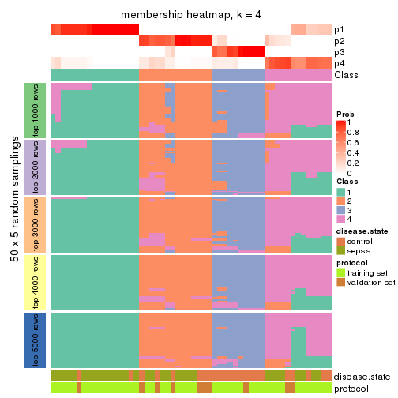
membership_heatmap(res, k = 5)
membership_heatmap(res, k = 6)
As soon as we have had the classes for columns, we can look for signatures which are significantly different between classes which can be candidate marks for certain classes. Following are the heatmaps for signatures.
Signature heatmaps where rows are scaled:
get_signatures(res, k = 2)

get_signatures(res, k = 3)
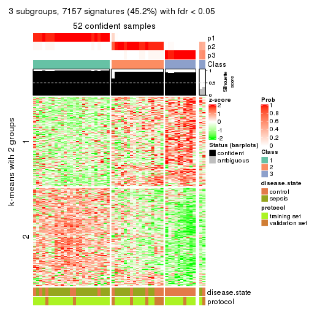
get_signatures(res, k = 4)
get_signatures(res, k = 5)
get_signatures(res, k = 6)
Signature heatmaps where rows are not scaled:
get_signatures(res, k = 2, scale_rows = FALSE)
get_signatures(res, k = 3, scale_rows = FALSE)
get_signatures(res, k = 4, scale_rows = FALSE)

get_signatures(res, k = 5, scale_rows = FALSE)
get_signatures(res, k = 6, scale_rows = FALSE)
Compare the overlap of signatures from different k:
compare_signatures(res)
get_signature() returns a data frame invisibly. TO get the list of signatures, the function
call should be assigned to a variable explicitly. In following code, if plot argument is set
to FALSE, no heatmap is plotted while only the differential analysis is performed.
# code only for demonstration
tb = get_signature(res, k = ..., plot = FALSE)
An example of the output of tb is:
#> which_row fdr mean_1 mean_2 scaled_mean_1 scaled_mean_2 km
#> 1 38 0.042760348 8.373488 9.131774 -0.5533452 0.5164555 1
#> 2 40 0.018707592 7.106213 8.469186 -0.6173731 0.5762149 1
#> 3 55 0.019134737 10.221463 11.207825 -0.6159697 0.5749050 1
#> 4 59 0.006059896 5.921854 7.869574 -0.6899429 0.6439467 1
#> 5 60 0.018055526 8.928898 10.211722 -0.6204761 0.5791110 1
#> 6 98 0.009384629 15.714769 14.887706 0.6635654 -0.6193277 2
...
The columns in tb are:
which_row: row indices corresponding to the input matrix.fdr: FDR for the differential test. mean_x: The mean value in group x.scaled_mean_x: The mean value in group x after rows are scaled.km: Row groups if k-means clustering is applied to rows.UMAP plot which shows how samples are separated.
dimension_reduction(res, k = 2, method = "UMAP")
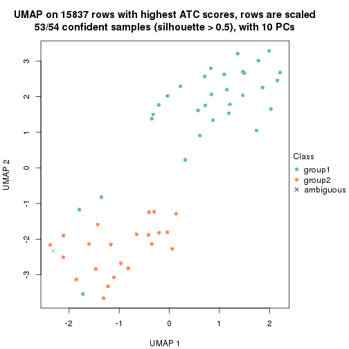
dimension_reduction(res, k = 3, method = "UMAP")
dimension_reduction(res, k = 4, method = "UMAP")
dimension_reduction(res, k = 5, method = "UMAP")
dimension_reduction(res, k = 6, method = "UMAP")
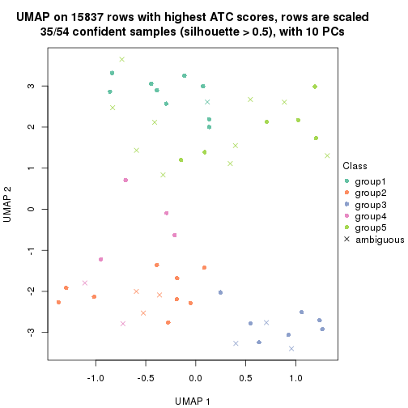
Following heatmap shows how subgroups are split when increasing k:
collect_classes(res)
Test correlation between subgroups and known annotations. If the known annotation is numeric, one-way ANOVA test is applied, and if the known annotation is discrete, chi-squared contingency table test is applied.
test_to_known_factors(res)
#> n disease.state(p) protocol(p) k
#> ATC:kmeans 53 0.000813 0.0942 2
#> ATC:kmeans 52 0.000166 0.0570 3
#> ATC:kmeans 51 0.000159 0.1166 4
#> ATC:kmeans 41 0.001858 0.1667 5
#> ATC:kmeans 35 0.002437 0.1138 6
If matrix rows can be associated to genes, consider to use GO_Enrichment(res,
...) to perform function enrichment for the signature genes.
The object with results only for a single top-value method and a single partition method can be extracted as:
res = res_list["ATC", "skmeans"]
# you can also extract it by
# res = res_list["ATC:skmeans"]
A summary of res and all the functions that can be applied to it:
res
#> A 'ConsensusPartition' object with k = 2, 3, 4, 5, 6.
#> On a matrix with 15837 rows and 54 columns.
#> Top rows (1000, 2000, 3000, 4000, 5000) are extracted by 'ATC' method.
#> Subgroups are detected by 'skmeans' method.
#> Performed in total 1250 partitions by row resampling.
#> Best k for subgroups seems to be 2.
#>
#> Following methods can be applied to this 'ConsensusPartition' object:
#> [1] "cola_report" "collect_classes" "collect_plots"
#> [4] "collect_stats" "colnames" "compare_signatures"
#> [7] "consensus_heatmap" "dimension_reduction" "functional_enrichment"
#> [10] "get_anno_col" "get_anno" "get_classes"
#> [13] "get_consensus" "get_matrix" "get_membership"
#> [16] "get_param" "get_signatures" "get_stats"
#> [19] "is_best_k" "is_stable_k" "membership_heatmap"
#> [22] "ncol" "nrow" "plot_ecdf"
#> [25] "rownames" "select_partition_number" "show"
#> [28] "suggest_best_k" "test_to_known_factors"
collect_plots() function collects all the plots made from res for all k (number of partitions)
into one single page to provide an easy and fast comparison between different k.
collect_plots(res)
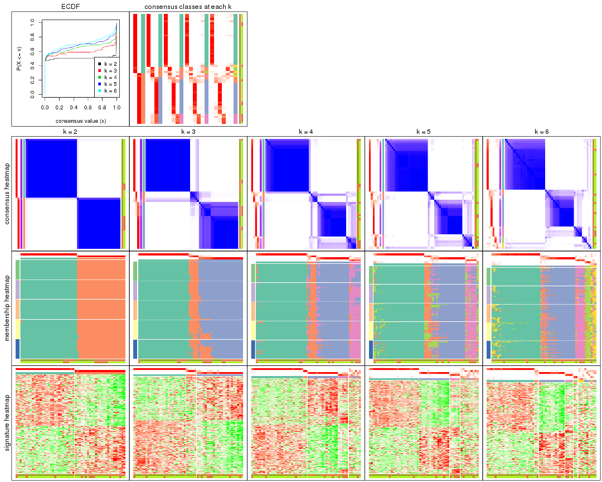
The plots are:
k and the heatmap of
predicted classes for each k.k.k.k.All the plots in panels can be made by individual functions and they are plotted later in this section.
select_partition_number() produces several plots showing different
statistics for choosing “optimized” k. There are following statistics:
k;k, the area increased is defined as \(A_k - A_{k-1}\).The detailed explanations of these statistics can be found in the cola vignette.
Generally speaking, lower PAC score, higher mean silhouette score or higher
concordance corresponds to better partition. Rand index and Jaccard index
measure how similar the current partition is compared to partition with k-1.
If they are too similar, we won't accept k is better than k-1.
select_partition_number(res)
The numeric values for all these statistics can be obtained by get_stats().
get_stats(res)
#> k 1-PAC mean_silhouette concordance area_increased Rand Jaccard
#> 2 2 1.000 0.993 0.997 0.5068 0.493 0.493
#> 3 3 0.900 0.928 0.960 0.1785 0.909 0.817
#> 4 4 0.889 0.825 0.923 0.0911 0.916 0.799
#> 5 5 0.819 0.741 0.881 0.0506 0.997 0.992
#> 6 6 0.776 0.751 0.859 0.0401 0.952 0.860
suggest_best_k() suggests the best \(k\) based on these statistics. The rules are as follows:
NA.suggest_best_k(res)
#> [1] 2
Following shows the table of the partitions (You need to click the show/hide
code output link to see it). The membership matrix (columns with name p*)
is inferred by
clue::cl_consensus()
function with the SE method. Basically the value in the membership matrix
represents the probability to belong to a certain group. The finall class
label for an item is determined with the group with highest probability it
belongs to.
In get_classes() function, the entropy is calculated from the membership
matrix and the silhouette score is calculated from the consensus matrix.
cbind(get_classes(res, k = 2), get_membership(res, k = 2))
#> class entropy silhouette p1 p2
#> GSM134895 1 0.000 0.998 1.000 0.000
#> GSM134896 2 0.000 0.995 0.000 1.000
#> GSM134897 2 0.000 0.995 0.000 1.000
#> GSM134898 2 0.000 0.995 0.000 1.000
#> GSM134905 2 0.000 0.995 0.000 1.000
#> GSM135018 2 0.000 0.995 0.000 1.000
#> GSM135674 1 0.000 0.998 1.000 0.000
#> GSM135683 2 0.000 0.995 0.000 1.000
#> GSM135685 2 0.000 0.995 0.000 1.000
#> GSM135699 1 0.000 0.998 1.000 0.000
#> GSM135019 2 0.000 0.995 0.000 1.000
#> GSM135026 1 0.000 0.998 1.000 0.000
#> GSM135033 2 0.000 0.995 0.000 1.000
#> GSM135042 1 0.000 0.998 1.000 0.000
#> GSM135057 2 0.000 0.995 0.000 1.000
#> GSM135068 1 0.000 0.998 1.000 0.000
#> GSM135071 2 0.000 0.995 0.000 1.000
#> GSM135078 2 0.000 0.995 0.000 1.000
#> GSM135163 2 0.000 0.995 0.000 1.000
#> GSM135166 2 0.000 0.995 0.000 1.000
#> GSM135223 2 0.000 0.995 0.000 1.000
#> GSM135224 2 0.000 0.995 0.000 1.000
#> GSM135228 1 0.000 0.998 1.000 0.000
#> GSM135262 1 0.000 0.998 1.000 0.000
#> GSM135263 2 0.000 0.995 0.000 1.000
#> GSM135279 2 0.000 0.995 0.000 1.000
#> GSM135661 1 0.000 0.998 1.000 0.000
#> GSM135662 2 0.000 0.995 0.000 1.000
#> GSM135663 2 0.000 0.995 0.000 1.000
#> GSM135664 2 0.000 0.995 0.000 1.000
#> GSM135665 1 0.000 0.998 1.000 0.000
#> GSM135666 1 0.000 0.998 1.000 0.000
#> GSM135668 1 0.000 0.998 1.000 0.000
#> GSM135670 1 0.000 0.998 1.000 0.000
#> GSM135671 1 0.000 0.998 1.000 0.000
#> GSM135675 1 0.000 0.998 1.000 0.000
#> GSM135676 1 0.000 0.998 1.000 0.000
#> GSM135677 1 0.000 0.998 1.000 0.000
#> GSM135679 1 0.000 0.998 1.000 0.000
#> GSM135680 2 0.552 0.853 0.128 0.872
#> GSM135681 1 0.000 0.998 1.000 0.000
#> GSM135682 2 0.000 0.995 0.000 1.000
#> GSM135687 1 0.000 0.998 1.000 0.000
#> GSM135688 1 0.000 0.998 1.000 0.000
#> GSM135689 1 0.000 0.998 1.000 0.000
#> GSM135693 2 0.000 0.995 0.000 1.000
#> GSM135694 1 0.000 0.998 1.000 0.000
#> GSM135695 1 0.000 0.998 1.000 0.000
#> GSM135696 1 0.000 0.998 1.000 0.000
#> GSM135697 1 0.000 0.998 1.000 0.000
#> GSM135698 1 0.311 0.940 0.944 0.056
#> GSM135700 1 0.000 0.998 1.000 0.000
#> GSM135702 1 0.000 0.998 1.000 0.000
#> GSM135703 2 0.000 0.995 0.000 1.000
cbind(get_classes(res, k = 3), get_membership(res, k = 3))
#> class entropy silhouette p1 p2 p3
#> GSM134895 1 0.0000 0.999 1.000 0.000 0.000
#> GSM134896 3 0.0000 0.929 0.000 0.000 1.000
#> GSM134897 3 0.0000 0.929 0.000 0.000 1.000
#> GSM134898 3 0.0000 0.929 0.000 0.000 1.000
#> GSM134905 3 0.0000 0.929 0.000 0.000 1.000
#> GSM135018 3 0.0000 0.929 0.000 0.000 1.000
#> GSM135674 1 0.0000 0.999 1.000 0.000 0.000
#> GSM135683 3 0.0000 0.929 0.000 0.000 1.000
#> GSM135685 3 0.0000 0.929 0.000 0.000 1.000
#> GSM135699 1 0.0000 0.999 1.000 0.000 0.000
#> GSM135019 3 0.0000 0.929 0.000 0.000 1.000
#> GSM135026 1 0.0000 0.999 1.000 0.000 0.000
#> GSM135033 3 0.0000 0.929 0.000 0.000 1.000
#> GSM135042 1 0.1337 0.968 0.972 0.016 0.012
#> GSM135057 3 0.4504 0.818 0.000 0.196 0.804
#> GSM135068 1 0.0000 0.999 1.000 0.000 0.000
#> GSM135071 3 0.3619 0.862 0.000 0.136 0.864
#> GSM135078 3 0.0000 0.929 0.000 0.000 1.000
#> GSM135163 3 0.4796 0.797 0.000 0.220 0.780
#> GSM135166 3 0.0000 0.929 0.000 0.000 1.000
#> GSM135223 3 0.4504 0.818 0.000 0.196 0.804
#> GSM135224 3 0.4504 0.818 0.000 0.196 0.804
#> GSM135228 1 0.0000 0.999 1.000 0.000 0.000
#> GSM135262 1 0.0000 0.999 1.000 0.000 0.000
#> GSM135263 3 0.0000 0.929 0.000 0.000 1.000
#> GSM135279 3 0.1289 0.917 0.000 0.032 0.968
#> GSM135661 1 0.0000 0.999 1.000 0.000 0.000
#> GSM135662 2 0.1031 0.829 0.000 0.976 0.024
#> GSM135663 3 0.5591 0.625 0.000 0.304 0.696
#> GSM135664 3 0.0747 0.923 0.000 0.016 0.984
#> GSM135665 1 0.0000 0.999 1.000 0.000 0.000
#> GSM135666 1 0.0000 0.999 1.000 0.000 0.000
#> GSM135668 1 0.0000 0.999 1.000 0.000 0.000
#> GSM135670 1 0.0000 0.999 1.000 0.000 0.000
#> GSM135671 1 0.0000 0.999 1.000 0.000 0.000
#> GSM135675 1 0.0000 0.999 1.000 0.000 0.000
#> GSM135676 1 0.0000 0.999 1.000 0.000 0.000
#> GSM135677 1 0.0000 0.999 1.000 0.000 0.000
#> GSM135679 1 0.0000 0.999 1.000 0.000 0.000
#> GSM135680 2 0.0592 0.826 0.000 0.988 0.012
#> GSM135681 2 0.5621 0.615 0.308 0.692 0.000
#> GSM135682 3 0.0000 0.929 0.000 0.000 1.000
#> GSM135687 1 0.0000 0.999 1.000 0.000 0.000
#> GSM135688 1 0.0000 0.999 1.000 0.000 0.000
#> GSM135689 1 0.0000 0.999 1.000 0.000 0.000
#> GSM135693 3 0.5497 0.708 0.000 0.292 0.708
#> GSM135694 1 0.0000 0.999 1.000 0.000 0.000
#> GSM135695 1 0.0000 0.999 1.000 0.000 0.000
#> GSM135696 1 0.0000 0.999 1.000 0.000 0.000
#> GSM135697 1 0.0000 0.999 1.000 0.000 0.000
#> GSM135698 2 0.1636 0.840 0.020 0.964 0.016
#> GSM135700 1 0.0000 0.999 1.000 0.000 0.000
#> GSM135702 2 0.4235 0.789 0.176 0.824 0.000
#> GSM135703 3 0.0000 0.929 0.000 0.000 1.000
cbind(get_classes(res, k = 4), get_membership(res, k = 4))
#> class entropy silhouette p1 p2 p3 p4
#> GSM134895 1 0.0000 0.9837 1.000 0.000 0.000 0.000
#> GSM134896 3 0.0000 0.9250 0.000 0.000 1.000 0.000
#> GSM134897 3 0.0000 0.9250 0.000 0.000 1.000 0.000
#> GSM134898 3 0.0000 0.9250 0.000 0.000 1.000 0.000
#> GSM134905 3 0.0000 0.9250 0.000 0.000 1.000 0.000
#> GSM135018 3 0.0376 0.9225 0.000 0.004 0.992 0.004
#> GSM135674 1 0.0469 0.9754 0.988 0.012 0.000 0.000
#> GSM135683 3 0.0000 0.9250 0.000 0.000 1.000 0.000
#> GSM135685 3 0.0000 0.9250 0.000 0.000 1.000 0.000
#> GSM135699 1 0.0000 0.9837 1.000 0.000 0.000 0.000
#> GSM135019 3 0.0000 0.9250 0.000 0.000 1.000 0.000
#> GSM135026 1 0.1970 0.9240 0.932 0.060 0.000 0.008
#> GSM135033 3 0.0000 0.9250 0.000 0.000 1.000 0.000
#> GSM135042 1 0.5202 0.7271 0.788 0.124 0.048 0.040
#> GSM135057 4 0.4605 0.6742 0.000 0.000 0.336 0.664
#> GSM135068 1 0.0000 0.9837 1.000 0.000 0.000 0.000
#> GSM135071 3 0.6725 0.0669 0.000 0.104 0.548 0.348
#> GSM135078 3 0.0524 0.9211 0.000 0.004 0.988 0.008
#> GSM135163 4 0.3335 0.6789 0.000 0.020 0.120 0.860
#> GSM135166 3 0.0000 0.9250 0.000 0.000 1.000 0.000
#> GSM135223 4 0.4277 0.7269 0.000 0.000 0.280 0.720
#> GSM135224 4 0.4304 0.7254 0.000 0.000 0.284 0.716
#> GSM135228 1 0.0000 0.9837 1.000 0.000 0.000 0.000
#> GSM135262 1 0.0000 0.9837 1.000 0.000 0.000 0.000
#> GSM135263 3 0.1610 0.8968 0.000 0.016 0.952 0.032
#> GSM135279 3 0.6158 0.3898 0.000 0.080 0.628 0.292
#> GSM135661 1 0.0000 0.9837 1.000 0.000 0.000 0.000
#> GSM135662 2 0.3047 0.4745 0.000 0.872 0.012 0.116
#> GSM135663 2 0.6214 -0.1346 0.000 0.476 0.472 0.052
#> GSM135664 3 0.2996 0.8323 0.000 0.064 0.892 0.044
#> GSM135665 1 0.0000 0.9837 1.000 0.000 0.000 0.000
#> GSM135666 1 0.0000 0.9837 1.000 0.000 0.000 0.000
#> GSM135668 1 0.2053 0.9154 0.924 0.072 0.000 0.004
#> GSM135670 1 0.0000 0.9837 1.000 0.000 0.000 0.000
#> GSM135671 1 0.0000 0.9837 1.000 0.000 0.000 0.000
#> GSM135675 1 0.0000 0.9837 1.000 0.000 0.000 0.000
#> GSM135676 1 0.0000 0.9837 1.000 0.000 0.000 0.000
#> GSM135677 1 0.0000 0.9837 1.000 0.000 0.000 0.000
#> GSM135679 1 0.0000 0.9837 1.000 0.000 0.000 0.000
#> GSM135680 4 0.4643 0.1770 0.000 0.344 0.000 0.656
#> GSM135681 2 0.7732 0.1346 0.384 0.388 0.000 0.228
#> GSM135682 3 0.0524 0.9211 0.000 0.004 0.988 0.008
#> GSM135687 1 0.0000 0.9837 1.000 0.000 0.000 0.000
#> GSM135688 1 0.0000 0.9837 1.000 0.000 0.000 0.000
#> GSM135689 1 0.0000 0.9837 1.000 0.000 0.000 0.000
#> GSM135693 4 0.2216 0.6739 0.000 0.000 0.092 0.908
#> GSM135694 1 0.0000 0.9837 1.000 0.000 0.000 0.000
#> GSM135695 1 0.0000 0.9837 1.000 0.000 0.000 0.000
#> GSM135696 1 0.0000 0.9837 1.000 0.000 0.000 0.000
#> GSM135697 1 0.0000 0.9837 1.000 0.000 0.000 0.000
#> GSM135698 2 0.0336 0.5225 0.000 0.992 0.000 0.008
#> GSM135700 1 0.0779 0.9689 0.980 0.016 0.000 0.004
#> GSM135702 2 0.0657 0.5278 0.012 0.984 0.000 0.004
#> GSM135703 3 0.0657 0.9189 0.000 0.004 0.984 0.012
cbind(get_classes(res, k = 5), get_membership(res, k = 5))
#> class entropy silhouette p1 p2 p3 p4 p5
#> GSM134895 1 0.2286 0.8267 0.888 0.004 0.000 0.000 0.108
#> GSM134896 3 0.0000 0.8807 0.000 0.000 1.000 0.000 0.000
#> GSM134897 3 0.0000 0.8807 0.000 0.000 1.000 0.000 0.000
#> GSM134898 3 0.0000 0.8807 0.000 0.000 1.000 0.000 0.000
#> GSM134905 3 0.0000 0.8807 0.000 0.000 1.000 0.000 0.000
#> GSM135018 3 0.1200 0.8709 0.000 0.008 0.964 0.012 0.016
#> GSM135674 1 0.2299 0.8550 0.912 0.032 0.000 0.004 0.052
#> GSM135683 3 0.0000 0.8807 0.000 0.000 1.000 0.000 0.000
#> GSM135685 3 0.0000 0.8807 0.000 0.000 1.000 0.000 0.000
#> GSM135699 1 0.0000 0.9341 1.000 0.000 0.000 0.000 0.000
#> GSM135019 3 0.0000 0.8807 0.000 0.000 1.000 0.000 0.000
#> GSM135026 1 0.4141 0.5481 0.736 0.028 0.000 0.000 0.236
#> GSM135033 3 0.0000 0.8807 0.000 0.000 1.000 0.000 0.000
#> GSM135042 1 0.6567 -0.3123 0.480 0.068 0.020 0.020 0.412
#> GSM135057 4 0.3916 0.6287 0.000 0.000 0.256 0.732 0.012
#> GSM135068 1 0.0162 0.9333 0.996 0.000 0.000 0.000 0.004
#> GSM135071 3 0.8027 0.0641 0.000 0.240 0.420 0.224 0.116
#> GSM135078 3 0.1405 0.8681 0.000 0.008 0.956 0.020 0.016
#> GSM135163 4 0.4880 0.5888 0.000 0.044 0.052 0.756 0.148
#> GSM135166 3 0.0000 0.8807 0.000 0.000 1.000 0.000 0.000
#> GSM135223 4 0.2813 0.7220 0.000 0.000 0.168 0.832 0.000
#> GSM135224 4 0.2852 0.7196 0.000 0.000 0.172 0.828 0.000
#> GSM135228 1 0.0162 0.9333 0.996 0.000 0.000 0.000 0.004
#> GSM135262 1 0.0404 0.9297 0.988 0.000 0.000 0.000 0.012
#> GSM135263 3 0.3907 0.7657 0.000 0.108 0.824 0.040 0.028
#> GSM135279 3 0.8203 0.0148 0.000 0.180 0.404 0.248 0.168
#> GSM135661 1 0.0290 0.9320 0.992 0.000 0.000 0.000 0.008
#> GSM135662 2 0.2544 0.4648 0.000 0.900 0.008 0.064 0.028
#> GSM135663 2 0.6371 0.1308 0.000 0.536 0.344 0.088 0.032
#> GSM135664 3 0.5491 0.6276 0.000 0.172 0.708 0.068 0.052
#> GSM135665 1 0.0000 0.9341 1.000 0.000 0.000 0.000 0.000
#> GSM135666 1 0.0703 0.9198 0.976 0.000 0.000 0.000 0.024
#> GSM135668 1 0.3002 0.7796 0.856 0.028 0.000 0.000 0.116
#> GSM135670 1 0.0000 0.9341 1.000 0.000 0.000 0.000 0.000
#> GSM135671 1 0.0000 0.9341 1.000 0.000 0.000 0.000 0.000
#> GSM135675 1 0.0000 0.9341 1.000 0.000 0.000 0.000 0.000
#> GSM135676 1 0.0000 0.9341 1.000 0.000 0.000 0.000 0.000
#> GSM135677 1 0.0162 0.9333 0.996 0.000 0.000 0.000 0.004
#> GSM135679 1 0.0000 0.9341 1.000 0.000 0.000 0.000 0.000
#> GSM135680 4 0.6701 0.1245 0.000 0.184 0.008 0.444 0.364
#> GSM135681 5 0.6994 0.0000 0.220 0.128 0.000 0.084 0.568
#> GSM135682 3 0.1405 0.8686 0.000 0.008 0.956 0.016 0.020
#> GSM135687 1 0.0000 0.9341 1.000 0.000 0.000 0.000 0.000
#> GSM135688 1 0.0000 0.9341 1.000 0.000 0.000 0.000 0.000
#> GSM135689 1 0.0162 0.9333 0.996 0.000 0.000 0.000 0.004
#> GSM135693 4 0.2067 0.6688 0.000 0.000 0.048 0.920 0.032
#> GSM135694 1 0.0000 0.9341 1.000 0.000 0.000 0.000 0.000
#> GSM135695 1 0.0162 0.9328 0.996 0.000 0.000 0.000 0.004
#> GSM135696 1 0.0000 0.9341 1.000 0.000 0.000 0.000 0.000
#> GSM135697 1 0.0162 0.9333 0.996 0.000 0.000 0.000 0.004
#> GSM135698 2 0.3835 0.4487 0.000 0.732 0.000 0.008 0.260
#> GSM135700 1 0.2339 0.8315 0.892 0.004 0.000 0.004 0.100
#> GSM135702 2 0.3910 0.4582 0.008 0.740 0.000 0.004 0.248
#> GSM135703 3 0.1710 0.8629 0.000 0.012 0.944 0.024 0.020
cbind(get_classes(res, k = 6), get_membership(res, k = 6))
#> class entropy silhouette p1 p2 p3 p4 p5 p6
#> GSM134895 1 0.3808 0.74359 0.784 0.080 0.000 0.000 0.004 0.132
#> GSM134896 3 0.0000 0.88475 0.000 0.000 1.000 0.000 0.000 0.000
#> GSM134897 3 0.0146 0.88382 0.000 0.004 0.996 0.000 0.000 0.000
#> GSM134898 3 0.0146 0.88382 0.000 0.004 0.996 0.000 0.000 0.000
#> GSM134905 3 0.0000 0.88475 0.000 0.000 1.000 0.000 0.000 0.000
#> GSM135018 3 0.1745 0.84073 0.000 0.068 0.920 0.012 0.000 0.000
#> GSM135674 1 0.3097 0.81968 0.852 0.012 0.000 0.000 0.064 0.072
#> GSM135683 3 0.0000 0.88475 0.000 0.000 1.000 0.000 0.000 0.000
#> GSM135685 3 0.0000 0.88475 0.000 0.000 1.000 0.000 0.000 0.000
#> GSM135699 1 0.0291 0.93245 0.992 0.004 0.000 0.000 0.000 0.004
#> GSM135019 3 0.0000 0.88475 0.000 0.000 1.000 0.000 0.000 0.000
#> GSM135026 1 0.5469 0.40174 0.616 0.048 0.000 0.000 0.068 0.268
#> GSM135033 3 0.0000 0.88475 0.000 0.000 1.000 0.000 0.000 0.000
#> GSM135042 6 0.8263 0.17708 0.236 0.256 0.020 0.028 0.112 0.348
#> GSM135057 4 0.3345 0.66683 0.000 0.028 0.184 0.788 0.000 0.000
#> GSM135068 1 0.0291 0.93245 0.992 0.004 0.000 0.000 0.000 0.004
#> GSM135071 2 0.6525 0.60175 0.000 0.484 0.276 0.192 0.048 0.000
#> GSM135078 3 0.2163 0.81819 0.000 0.092 0.892 0.016 0.000 0.000
#> GSM135163 4 0.5519 0.36051 0.000 0.356 0.048 0.548 0.000 0.048
#> GSM135166 3 0.0000 0.88475 0.000 0.000 1.000 0.000 0.000 0.000
#> GSM135223 4 0.2191 0.76586 0.000 0.004 0.120 0.876 0.000 0.000
#> GSM135224 4 0.2446 0.76203 0.000 0.012 0.124 0.864 0.000 0.000
#> GSM135228 1 0.1666 0.91207 0.936 0.036 0.000 0.000 0.008 0.020
#> GSM135262 1 0.1426 0.91877 0.948 0.028 0.000 0.000 0.008 0.016
#> GSM135263 3 0.4525 0.45445 0.000 0.232 0.700 0.056 0.004 0.008
#> GSM135279 2 0.5865 0.55865 0.000 0.528 0.316 0.136 0.000 0.020
#> GSM135661 1 0.1148 0.92530 0.960 0.016 0.000 0.000 0.004 0.020
#> GSM135662 5 0.5187 0.48562 0.000 0.340 0.000 0.040 0.584 0.036
#> GSM135663 2 0.7216 0.43465 0.000 0.392 0.272 0.068 0.260 0.008
#> GSM135664 3 0.5177 -0.03851 0.000 0.336 0.584 0.060 0.020 0.000
#> GSM135665 1 0.0000 0.93256 1.000 0.000 0.000 0.000 0.000 0.000
#> GSM135666 1 0.1148 0.92280 0.960 0.016 0.000 0.000 0.004 0.020
#> GSM135668 1 0.5012 0.62351 0.708 0.048 0.000 0.000 0.096 0.148
#> GSM135670 1 0.0405 0.93003 0.988 0.000 0.000 0.000 0.004 0.008
#> GSM135671 1 0.0000 0.93256 1.000 0.000 0.000 0.000 0.000 0.000
#> GSM135675 1 0.0000 0.93256 1.000 0.000 0.000 0.000 0.000 0.000
#> GSM135676 1 0.0291 0.93241 0.992 0.004 0.000 0.000 0.000 0.004
#> GSM135677 1 0.0665 0.93030 0.980 0.008 0.000 0.000 0.004 0.008
#> GSM135679 1 0.0000 0.93256 1.000 0.000 0.000 0.000 0.000 0.000
#> GSM135680 6 0.7208 -0.00706 0.000 0.112 0.000 0.344 0.184 0.360
#> GSM135681 6 0.4934 0.18238 0.100 0.020 0.000 0.028 0.116 0.736
#> GSM135682 3 0.2182 0.83047 0.000 0.072 0.904 0.016 0.004 0.004
#> GSM135687 1 0.0508 0.93128 0.984 0.012 0.000 0.000 0.004 0.000
#> GSM135688 1 0.0146 0.93236 0.996 0.000 0.000 0.000 0.000 0.004
#> GSM135689 1 0.1059 0.92603 0.964 0.016 0.000 0.000 0.004 0.016
#> GSM135693 4 0.1967 0.66556 0.000 0.020 0.028 0.928 0.008 0.016
#> GSM135694 1 0.0000 0.93256 1.000 0.000 0.000 0.000 0.000 0.000
#> GSM135695 1 0.0622 0.93050 0.980 0.012 0.000 0.000 0.000 0.008
#> GSM135696 1 0.0000 0.93256 1.000 0.000 0.000 0.000 0.000 0.000
#> GSM135697 1 0.0260 0.93235 0.992 0.008 0.000 0.000 0.000 0.000
#> GSM135698 5 0.2500 0.63447 0.000 0.012 0.000 0.004 0.868 0.116
#> GSM135700 1 0.3552 0.76528 0.804 0.028 0.000 0.000 0.020 0.148
#> GSM135702 5 0.1624 0.65312 0.004 0.020 0.000 0.000 0.936 0.040
#> GSM135703 3 0.2975 0.78804 0.000 0.088 0.860 0.040 0.008 0.004
Heatmaps for the consensus matrix. It visualizes the probability of two samples to be in a same group.
consensus_heatmap(res, k = 2)
consensus_heatmap(res, k = 3)
consensus_heatmap(res, k = 4)
consensus_heatmap(res, k = 5)
consensus_heatmap(res, k = 6)
Heatmaps for the membership of samples in all partitions to see how consistent they are:
membership_heatmap(res, k = 2)
membership_heatmap(res, k = 3)
membership_heatmap(res, k = 4)
membership_heatmap(res, k = 5)
membership_heatmap(res, k = 6)
As soon as we have had the classes for columns, we can look for signatures which are significantly different between classes which can be candidate marks for certain classes. Following are the heatmaps for signatures.
Signature heatmaps where rows are scaled:
get_signatures(res, k = 2)
get_signatures(res, k = 3)
get_signatures(res, k = 4)
get_signatures(res, k = 5)
get_signatures(res, k = 6)
Signature heatmaps where rows are not scaled:
get_signatures(res, k = 2, scale_rows = FALSE)
get_signatures(res, k = 3, scale_rows = FALSE)
get_signatures(res, k = 4, scale_rows = FALSE)
get_signatures(res, k = 5, scale_rows = FALSE)
get_signatures(res, k = 6, scale_rows = FALSE)
Compare the overlap of signatures from different k:
compare_signatures(res)
get_signature() returns a data frame invisibly. TO get the list of signatures, the function
call should be assigned to a variable explicitly. In following code, if plot argument is set
to FALSE, no heatmap is plotted while only the differential analysis is performed.
# code only for demonstration
tb = get_signature(res, k = ..., plot = FALSE)
An example of the output of tb is:
#> which_row fdr mean_1 mean_2 scaled_mean_1 scaled_mean_2 km
#> 1 38 0.042760348 8.373488 9.131774 -0.5533452 0.5164555 1
#> 2 40 0.018707592 7.106213 8.469186 -0.6173731 0.5762149 1
#> 3 55 0.019134737 10.221463 11.207825 -0.6159697 0.5749050 1
#> 4 59 0.006059896 5.921854 7.869574 -0.6899429 0.6439467 1
#> 5 60 0.018055526 8.928898 10.211722 -0.6204761 0.5791110 1
#> 6 98 0.009384629 15.714769 14.887706 0.6635654 -0.6193277 2
...
The columns in tb are:
which_row: row indices corresponding to the input matrix.fdr: FDR for the differential test. mean_x: The mean value in group x.scaled_mean_x: The mean value in group x after rows are scaled.km: Row groups if k-means clustering is applied to rows.UMAP plot which shows how samples are separated.
dimension_reduction(res, k = 2, method = "UMAP")
dimension_reduction(res, k = 3, method = "UMAP")
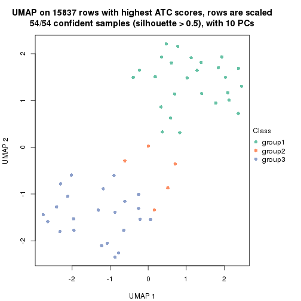
dimension_reduction(res, k = 4, method = "UMAP")
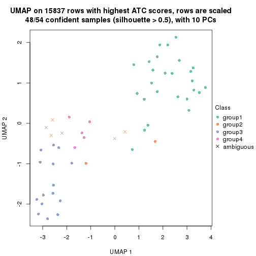
dimension_reduction(res, k = 5, method = "UMAP")
dimension_reduction(res, k = 6, method = "UMAP")
Following heatmap shows how subgroups are split when increasing k:
collect_classes(res)
Test correlation between subgroups and known annotations. If the known annotation is numeric, one-way ANOVA test is applied, and if the known annotation is discrete, chi-squared contingency table test is applied.
test_to_known_factors(res)
#> n disease.state(p) protocol(p) k
#> ATC:skmeans 54 0.00741 0.188818 2
#> ATC:skmeans 54 0.00139 0.126167 3
#> ATC:skmeans 48 0.00625 0.002973 4
#> ATC:skmeans 45 0.00291 0.000531 5
#> ATC:skmeans 45 0.00189 0.015067 6
If matrix rows can be associated to genes, consider to use GO_Enrichment(res,
...) to perform function enrichment for the signature genes.
The object with results only for a single top-value method and a single partition method can be extracted as:
res = res_list["ATC", "pam"]
# you can also extract it by
# res = res_list["ATC:pam"]
A summary of res and all the functions that can be applied to it:
res
#> A 'ConsensusPartition' object with k = 2, 3, 4, 5, 6.
#> On a matrix with 15837 rows and 54 columns.
#> Top rows (1000, 2000, 3000, 4000, 5000) are extracted by 'ATC' method.
#> Subgroups are detected by 'pam' method.
#> Performed in total 1250 partitions by row resampling.
#> Best k for subgroups seems to be 3.
#>
#> Following methods can be applied to this 'ConsensusPartition' object:
#> [1] "cola_report" "collect_classes" "collect_plots"
#> [4] "collect_stats" "colnames" "compare_signatures"
#> [7] "consensus_heatmap" "dimension_reduction" "functional_enrichment"
#> [10] "get_anno_col" "get_anno" "get_classes"
#> [13] "get_consensus" "get_matrix" "get_membership"
#> [16] "get_param" "get_signatures" "get_stats"
#> [19] "is_best_k" "is_stable_k" "membership_heatmap"
#> [22] "ncol" "nrow" "plot_ecdf"
#> [25] "rownames" "select_partition_number" "show"
#> [28] "suggest_best_k" "test_to_known_factors"
collect_plots() function collects all the plots made from res for all k (number of partitions)
into one single page to provide an easy and fast comparison between different k.
collect_plots(res)
The plots are:
k and the heatmap of
predicted classes for each k.k.k.k.All the plots in panels can be made by individual functions and they are plotted later in this section.
select_partition_number() produces several plots showing different
statistics for choosing “optimized” k. There are following statistics:
k;k, the area increased is defined as \(A_k - A_{k-1}\).The detailed explanations of these statistics can be found in the cola vignette.
Generally speaking, lower PAC score, higher mean silhouette score or higher
concordance corresponds to better partition. Rand index and Jaccard index
measure how similar the current partition is compared to partition with k-1.
If they are too similar, we won't accept k is better than k-1.
select_partition_number(res)
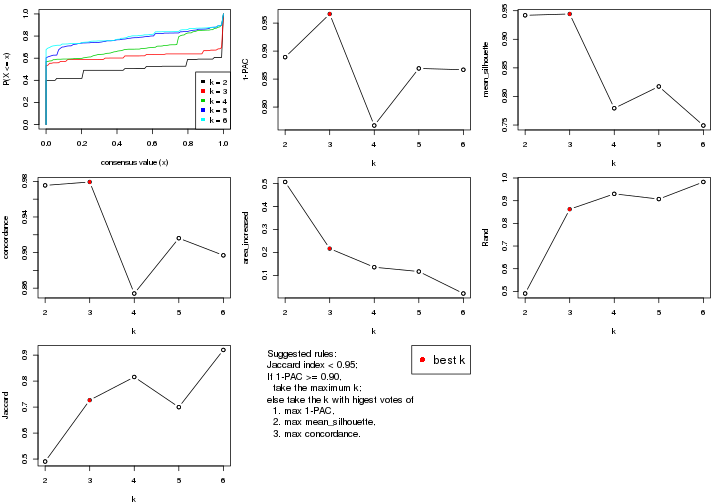
The numeric values for all these statistics can be obtained by get_stats().
get_stats(res)
#> k 1-PAC mean_silhouette concordance area_increased Rand Jaccard
#> 2 2 0.889 0.942 0.975 0.5070 0.491 0.491
#> 3 3 0.966 0.944 0.979 0.2167 0.862 0.727
#> 4 4 0.767 0.779 0.854 0.1357 0.930 0.816
#> 5 5 0.869 0.817 0.916 0.1170 0.907 0.700
#> 6 6 0.867 0.749 0.897 0.0211 0.983 0.920
suggest_best_k() suggests the best \(k\) based on these statistics. The rules are as follows:
NA.suggest_best_k(res)
#> [1] 3
Following shows the table of the partitions (You need to click the show/hide
code output link to see it). The membership matrix (columns with name p*)
is inferred by
clue::cl_consensus()
function with the SE method. Basically the value in the membership matrix
represents the probability to belong to a certain group. The finall class
label for an item is determined with the group with highest probability it
belongs to.
In get_classes() function, the entropy is calculated from the membership
matrix and the silhouette score is calculated from the consensus matrix.
cbind(get_classes(res, k = 2), get_membership(res, k = 2))
#> class entropy silhouette p1 p2
#> GSM134895 1 0.000 0.982 1.000 0.000
#> GSM134896 2 0.000 0.965 0.000 1.000
#> GSM134897 2 0.000 0.965 0.000 1.000
#> GSM134898 2 0.000 0.965 0.000 1.000
#> GSM134905 2 0.000 0.965 0.000 1.000
#> GSM135018 2 0.000 0.965 0.000 1.000
#> GSM135674 1 0.000 0.982 1.000 0.000
#> GSM135683 2 0.000 0.965 0.000 1.000
#> GSM135685 2 0.000 0.965 0.000 1.000
#> GSM135699 1 0.000 0.982 1.000 0.000
#> GSM135019 2 0.000 0.965 0.000 1.000
#> GSM135026 1 0.000 0.982 1.000 0.000
#> GSM135033 2 0.000 0.965 0.000 1.000
#> GSM135042 1 0.000 0.982 1.000 0.000
#> GSM135057 2 0.000 0.965 0.000 1.000
#> GSM135068 1 0.000 0.982 1.000 0.000
#> GSM135071 2 0.000 0.965 0.000 1.000
#> GSM135078 2 0.000 0.965 0.000 1.000
#> GSM135163 2 0.000 0.965 0.000 1.000
#> GSM135166 2 0.000 0.965 0.000 1.000
#> GSM135223 2 0.000 0.965 0.000 1.000
#> GSM135224 2 0.000 0.965 0.000 1.000
#> GSM135228 1 0.000 0.982 1.000 0.000
#> GSM135262 1 0.000 0.982 1.000 0.000
#> GSM135263 2 0.000 0.965 0.000 1.000
#> GSM135279 2 0.000 0.965 0.000 1.000
#> GSM135661 1 0.000 0.982 1.000 0.000
#> GSM135662 2 0.730 0.771 0.204 0.796
#> GSM135663 2 0.000 0.965 0.000 1.000
#> GSM135664 2 0.000 0.965 0.000 1.000
#> GSM135665 1 0.000 0.982 1.000 0.000
#> GSM135666 1 0.000 0.982 1.000 0.000
#> GSM135668 1 0.000 0.982 1.000 0.000
#> GSM135670 1 0.000 0.982 1.000 0.000
#> GSM135671 1 0.000 0.982 1.000 0.000
#> GSM135675 1 0.000 0.982 1.000 0.000
#> GSM135676 1 0.000 0.982 1.000 0.000
#> GSM135677 1 0.000 0.982 1.000 0.000
#> GSM135679 1 0.000 0.982 1.000 0.000
#> GSM135680 2 0.730 0.771 0.204 0.796
#> GSM135681 1 0.991 0.121 0.556 0.444
#> GSM135682 2 0.000 0.965 0.000 1.000
#> GSM135687 1 0.000 0.982 1.000 0.000
#> GSM135688 1 0.000 0.982 1.000 0.000
#> GSM135689 1 0.000 0.982 1.000 0.000
#> GSM135693 2 0.327 0.919 0.060 0.940
#> GSM135694 1 0.000 0.982 1.000 0.000
#> GSM135695 1 0.000 0.982 1.000 0.000
#> GSM135696 1 0.000 0.982 1.000 0.000
#> GSM135697 1 0.000 0.982 1.000 0.000
#> GSM135698 2 0.730 0.771 0.204 0.796
#> GSM135700 1 0.000 0.982 1.000 0.000
#> GSM135702 2 0.738 0.765 0.208 0.792
#> GSM135703 2 0.000 0.965 0.000 1.000
cbind(get_classes(res, k = 3), get_membership(res, k = 3))
#> class entropy silhouette p1 p2 p3
#> GSM134895 1 0.0000 0.995 1.000 0.000 0.000
#> GSM134896 3 0.0000 0.940 0.000 0.000 1.000
#> GSM134897 2 0.0237 0.955 0.000 0.996 0.004
#> GSM134898 2 0.1289 0.929 0.000 0.968 0.032
#> GSM134905 3 0.0000 0.940 0.000 0.000 1.000
#> GSM135018 3 0.0000 0.940 0.000 0.000 1.000
#> GSM135674 1 0.0000 0.995 1.000 0.000 0.000
#> GSM135683 3 0.5733 0.509 0.000 0.324 0.676
#> GSM135685 3 0.0000 0.940 0.000 0.000 1.000
#> GSM135699 1 0.0000 0.995 1.000 0.000 0.000
#> GSM135019 3 0.0000 0.940 0.000 0.000 1.000
#> GSM135026 1 0.0000 0.995 1.000 0.000 0.000
#> GSM135033 3 0.2356 0.888 0.000 0.072 0.928
#> GSM135042 1 0.3267 0.854 0.884 0.116 0.000
#> GSM135057 2 0.0000 0.958 0.000 1.000 0.000
#> GSM135068 1 0.0000 0.995 1.000 0.000 0.000
#> GSM135071 2 0.0000 0.958 0.000 1.000 0.000
#> GSM135078 2 0.3267 0.831 0.000 0.884 0.116
#> GSM135163 2 0.0000 0.958 0.000 1.000 0.000
#> GSM135166 3 0.0000 0.940 0.000 0.000 1.000
#> GSM135223 2 0.0000 0.958 0.000 1.000 0.000
#> GSM135224 2 0.0000 0.958 0.000 1.000 0.000
#> GSM135228 1 0.0000 0.995 1.000 0.000 0.000
#> GSM135262 1 0.0000 0.995 1.000 0.000 0.000
#> GSM135263 2 0.0000 0.958 0.000 1.000 0.000
#> GSM135279 2 0.0000 0.958 0.000 1.000 0.000
#> GSM135661 1 0.0000 0.995 1.000 0.000 0.000
#> GSM135662 2 0.0000 0.958 0.000 1.000 0.000
#> GSM135663 2 0.0000 0.958 0.000 1.000 0.000
#> GSM135664 2 0.0000 0.958 0.000 1.000 0.000
#> GSM135665 1 0.0000 0.995 1.000 0.000 0.000
#> GSM135666 1 0.0000 0.995 1.000 0.000 0.000
#> GSM135668 1 0.0000 0.995 1.000 0.000 0.000
#> GSM135670 1 0.0000 0.995 1.000 0.000 0.000
#> GSM135671 1 0.0000 0.995 1.000 0.000 0.000
#> GSM135675 1 0.0000 0.995 1.000 0.000 0.000
#> GSM135676 1 0.0000 0.995 1.000 0.000 0.000
#> GSM135677 1 0.0000 0.995 1.000 0.000 0.000
#> GSM135679 1 0.0000 0.995 1.000 0.000 0.000
#> GSM135680 2 0.0000 0.958 0.000 1.000 0.000
#> GSM135681 2 0.6244 0.206 0.440 0.560 0.000
#> GSM135682 2 0.0000 0.958 0.000 1.000 0.000
#> GSM135687 1 0.0000 0.995 1.000 0.000 0.000
#> GSM135688 1 0.0000 0.995 1.000 0.000 0.000
#> GSM135689 1 0.0000 0.995 1.000 0.000 0.000
#> GSM135693 2 0.0000 0.958 0.000 1.000 0.000
#> GSM135694 1 0.0000 0.995 1.000 0.000 0.000
#> GSM135695 1 0.0000 0.995 1.000 0.000 0.000
#> GSM135696 1 0.0000 0.995 1.000 0.000 0.000
#> GSM135697 1 0.0000 0.995 1.000 0.000 0.000
#> GSM135698 2 0.0000 0.958 0.000 1.000 0.000
#> GSM135700 1 0.0000 0.995 1.000 0.000 0.000
#> GSM135702 2 0.0592 0.945 0.012 0.988 0.000
#> GSM135703 2 0.0000 0.958 0.000 1.000 0.000
cbind(get_classes(res, k = 4), get_membership(res, k = 4))
#> class entropy silhouette p1 p2 p3 p4
#> GSM134895 1 0.0000 0.895 1.000 0.000 0.000 0.000
#> GSM134896 3 0.0000 0.922 0.000 0.000 1.000 0.000
#> GSM134897 2 0.0000 0.796 0.000 1.000 0.000 0.000
#> GSM134898 2 0.0000 0.796 0.000 1.000 0.000 0.000
#> GSM134905 3 0.0000 0.922 0.000 0.000 1.000 0.000
#> GSM135018 3 0.0000 0.922 0.000 0.000 1.000 0.000
#> GSM135674 1 0.0000 0.895 1.000 0.000 0.000 0.000
#> GSM135683 3 0.4605 0.409 0.000 0.336 0.664 0.000
#> GSM135685 3 0.0000 0.922 0.000 0.000 1.000 0.000
#> GSM135699 1 0.4134 0.816 0.740 0.000 0.000 0.260
#> GSM135019 3 0.0000 0.922 0.000 0.000 1.000 0.000
#> GSM135026 1 0.0000 0.895 1.000 0.000 0.000 0.000
#> GSM135033 3 0.3123 0.803 0.000 0.156 0.844 0.000
#> GSM135042 1 0.4776 0.340 0.624 0.000 0.000 0.376
#> GSM135057 4 0.4933 0.697 0.000 0.432 0.000 0.568
#> GSM135068 1 0.3801 0.832 0.780 0.000 0.000 0.220
#> GSM135071 4 0.4585 0.791 0.000 0.332 0.000 0.668
#> GSM135078 2 0.1557 0.759 0.000 0.944 0.056 0.000
#> GSM135163 4 0.4134 0.844 0.000 0.260 0.000 0.740
#> GSM135166 3 0.0000 0.922 0.000 0.000 1.000 0.000
#> GSM135223 4 0.4866 0.743 0.000 0.404 0.000 0.596
#> GSM135224 4 0.4866 0.743 0.000 0.404 0.000 0.596
#> GSM135228 1 0.0000 0.895 1.000 0.000 0.000 0.000
#> GSM135262 1 0.0000 0.895 1.000 0.000 0.000 0.000
#> GSM135263 2 0.0592 0.794 0.000 0.984 0.000 0.016
#> GSM135279 2 0.4933 -0.176 0.000 0.568 0.000 0.432
#> GSM135661 1 0.0000 0.895 1.000 0.000 0.000 0.000
#> GSM135662 4 0.4164 0.842 0.000 0.264 0.000 0.736
#> GSM135663 2 0.0921 0.786 0.000 0.972 0.000 0.028
#> GSM135664 2 0.0336 0.796 0.000 0.992 0.000 0.008
#> GSM135665 1 0.4134 0.816 0.740 0.000 0.000 0.260
#> GSM135666 1 0.0000 0.895 1.000 0.000 0.000 0.000
#> GSM135668 1 0.0000 0.895 1.000 0.000 0.000 0.000
#> GSM135670 1 0.0188 0.894 0.996 0.000 0.000 0.004
#> GSM135671 1 0.4134 0.816 0.740 0.000 0.000 0.260
#> GSM135675 1 0.1474 0.884 0.948 0.000 0.000 0.052
#> GSM135676 1 0.4134 0.816 0.740 0.000 0.000 0.260
#> GSM135677 1 0.0000 0.895 1.000 0.000 0.000 0.000
#> GSM135679 1 0.0707 0.891 0.980 0.000 0.000 0.020
#> GSM135680 4 0.4134 0.844 0.000 0.260 0.000 0.740
#> GSM135681 4 0.4888 0.803 0.036 0.224 0.000 0.740
#> GSM135682 2 0.0000 0.796 0.000 1.000 0.000 0.000
#> GSM135687 1 0.0000 0.895 1.000 0.000 0.000 0.000
#> GSM135688 1 0.4134 0.816 0.740 0.000 0.000 0.260
#> GSM135689 1 0.0000 0.895 1.000 0.000 0.000 0.000
#> GSM135693 4 0.4134 0.844 0.000 0.260 0.000 0.740
#> GSM135694 1 0.4134 0.816 0.740 0.000 0.000 0.260
#> GSM135695 1 0.0000 0.895 1.000 0.000 0.000 0.000
#> GSM135696 1 0.4134 0.816 0.740 0.000 0.000 0.260
#> GSM135697 1 0.4008 0.823 0.756 0.000 0.000 0.244
#> GSM135698 2 0.4989 -0.338 0.000 0.528 0.000 0.472
#> GSM135700 1 0.0000 0.895 1.000 0.000 0.000 0.000
#> GSM135702 4 0.4941 0.550 0.000 0.436 0.000 0.564
#> GSM135703 2 0.3311 0.618 0.000 0.828 0.000 0.172
cbind(get_classes(res, k = 5), get_membership(res, k = 5))
#> class entropy silhouette p1 p2 p3 p4 p5
#> GSM134895 1 0.0000 0.9309 1.000 0.000 0.000 0.000 0.000
#> GSM134896 3 0.0000 0.9197 0.000 0.000 1.000 0.000 0.000
#> GSM134897 2 0.1544 0.8292 0.000 0.932 0.000 0.000 0.068
#> GSM134898 2 0.1544 0.8292 0.000 0.932 0.000 0.000 0.068
#> GSM134905 3 0.0000 0.9197 0.000 0.000 1.000 0.000 0.000
#> GSM135018 3 0.0000 0.9197 0.000 0.000 1.000 0.000 0.000
#> GSM135674 1 0.0000 0.9309 1.000 0.000 0.000 0.000 0.000
#> GSM135683 3 0.3966 0.4490 0.000 0.336 0.664 0.000 0.000
#> GSM135685 3 0.0000 0.9197 0.000 0.000 1.000 0.000 0.000
#> GSM135699 5 0.1544 0.9787 0.068 0.000 0.000 0.000 0.932
#> GSM135019 3 0.0000 0.9197 0.000 0.000 1.000 0.000 0.000
#> GSM135026 1 0.0000 0.9309 1.000 0.000 0.000 0.000 0.000
#> GSM135033 3 0.3861 0.7709 0.000 0.128 0.804 0.000 0.068
#> GSM135042 1 0.4150 0.3311 0.612 0.000 0.000 0.388 0.000
#> GSM135057 4 0.2966 0.7662 0.000 0.184 0.000 0.816 0.000
#> GSM135068 1 0.3480 0.6217 0.752 0.000 0.000 0.000 0.248
#> GSM135071 4 0.1732 0.8179 0.000 0.080 0.000 0.920 0.000
#> GSM135078 2 0.2209 0.8225 0.000 0.912 0.032 0.000 0.056
#> GSM135163 4 0.0000 0.8602 0.000 0.000 0.000 1.000 0.000
#> GSM135166 3 0.0000 0.9197 0.000 0.000 1.000 0.000 0.000
#> GSM135223 4 0.2605 0.7989 0.000 0.148 0.000 0.852 0.000
#> GSM135224 4 0.2605 0.7989 0.000 0.148 0.000 0.852 0.000
#> GSM135228 1 0.0000 0.9309 1.000 0.000 0.000 0.000 0.000
#> GSM135262 1 0.0000 0.9309 1.000 0.000 0.000 0.000 0.000
#> GSM135263 2 0.0404 0.8353 0.000 0.988 0.000 0.012 0.000
#> GSM135279 2 0.4273 0.3125 0.000 0.552 0.000 0.448 0.000
#> GSM135661 1 0.0000 0.9309 1.000 0.000 0.000 0.000 0.000
#> GSM135662 4 0.0290 0.8575 0.000 0.008 0.000 0.992 0.000
#> GSM135663 2 0.0703 0.8311 0.000 0.976 0.000 0.024 0.000
#> GSM135664 2 0.0162 0.8358 0.000 0.996 0.000 0.004 0.000
#> GSM135665 5 0.1792 0.9677 0.084 0.000 0.000 0.000 0.916
#> GSM135666 1 0.0000 0.9309 1.000 0.000 0.000 0.000 0.000
#> GSM135668 1 0.0000 0.9309 1.000 0.000 0.000 0.000 0.000
#> GSM135670 1 0.0162 0.9286 0.996 0.000 0.000 0.000 0.004
#> GSM135671 5 0.1544 0.9787 0.068 0.000 0.000 0.000 0.932
#> GSM135675 1 0.0963 0.9016 0.964 0.000 0.000 0.000 0.036
#> GSM135676 5 0.2605 0.8950 0.148 0.000 0.000 0.000 0.852
#> GSM135677 1 0.0000 0.9309 1.000 0.000 0.000 0.000 0.000
#> GSM135679 1 0.0162 0.9286 0.996 0.000 0.000 0.000 0.004
#> GSM135680 4 0.0000 0.8602 0.000 0.000 0.000 1.000 0.000
#> GSM135681 4 0.0000 0.8602 0.000 0.000 0.000 1.000 0.000
#> GSM135682 2 0.0000 0.8351 0.000 1.000 0.000 0.000 0.000
#> GSM135687 1 0.0000 0.9309 1.000 0.000 0.000 0.000 0.000
#> GSM135688 5 0.1544 0.9787 0.068 0.000 0.000 0.000 0.932
#> GSM135689 1 0.0000 0.9309 1.000 0.000 0.000 0.000 0.000
#> GSM135693 4 0.0000 0.8602 0.000 0.000 0.000 1.000 0.000
#> GSM135694 5 0.1544 0.9787 0.068 0.000 0.000 0.000 0.932
#> GSM135695 1 0.0000 0.9309 1.000 0.000 0.000 0.000 0.000
#> GSM135696 5 0.1544 0.9787 0.068 0.000 0.000 0.000 0.932
#> GSM135697 1 0.4150 0.2939 0.612 0.000 0.000 0.000 0.388
#> GSM135698 2 0.4304 0.2063 0.000 0.516 0.000 0.484 0.000
#> GSM135700 1 0.0000 0.9309 1.000 0.000 0.000 0.000 0.000
#> GSM135702 4 0.4227 -0.0189 0.000 0.420 0.000 0.580 0.000
#> GSM135703 2 0.2852 0.7411 0.000 0.828 0.000 0.172 0.000
cbind(get_classes(res, k = 6), get_membership(res, k = 6))
#> class entropy silhouette p1 p2 p3 p4 p5 p6
#> GSM134895 1 0.0000 0.934 1.000 0.000 0.000 0.000 0.000 0.000
#> GSM134896 3 0.3851 0.900 0.000 0.000 0.540 0.000 0.000 0.460
#> GSM134897 6 0.3851 0.378 0.000 0.460 0.000 0.000 0.000 0.540
#> GSM134898 6 0.3851 0.378 0.000 0.460 0.000 0.000 0.000 0.540
#> GSM134905 3 0.3851 0.900 0.000 0.000 0.540 0.000 0.000 0.460
#> GSM135018 3 0.3851 0.900 0.000 0.000 0.540 0.000 0.000 0.460
#> GSM135674 1 0.0000 0.934 1.000 0.000 0.000 0.000 0.000 0.000
#> GSM135683 3 0.2092 0.213 0.000 0.000 0.876 0.000 0.000 0.124
#> GSM135685 3 0.3851 0.900 0.000 0.000 0.540 0.000 0.000 0.460
#> GSM135699 5 0.0000 0.973 0.000 0.000 0.000 0.000 1.000 0.000
#> GSM135019 3 0.3851 0.900 0.000 0.000 0.540 0.000 0.000 0.460
#> GSM135026 1 0.0000 0.934 1.000 0.000 0.000 0.000 0.000 0.000
#> GSM135033 6 0.0000 -0.165 0.000 0.000 0.000 0.000 0.000 1.000
#> GSM135042 1 0.3727 0.342 0.612 0.000 0.000 0.388 0.000 0.000
#> GSM135057 4 0.3050 0.696 0.000 0.236 0.000 0.764 0.000 0.000
#> GSM135068 1 0.3126 0.657 0.752 0.000 0.000 0.000 0.248 0.000
#> GSM135071 4 0.1267 0.801 0.000 0.060 0.000 0.940 0.000 0.000
#> GSM135078 2 0.2664 0.490 0.000 0.848 0.016 0.000 0.000 0.136
#> GSM135163 4 0.0000 0.832 0.000 0.000 0.000 1.000 0.000 0.000
#> GSM135166 3 0.3851 0.900 0.000 0.000 0.540 0.000 0.000 0.460
#> GSM135223 4 0.2793 0.732 0.000 0.200 0.000 0.800 0.000 0.000
#> GSM135224 4 0.2793 0.732 0.000 0.200 0.000 0.800 0.000 0.000
#> GSM135228 1 0.0000 0.934 1.000 0.000 0.000 0.000 0.000 0.000
#> GSM135262 1 0.0000 0.934 1.000 0.000 0.000 0.000 0.000 0.000
#> GSM135263 2 0.0000 0.655 0.000 1.000 0.000 0.000 0.000 0.000
#> GSM135279 2 0.3838 0.374 0.000 0.552 0.000 0.448 0.000 0.000
#> GSM135661 1 0.0000 0.934 1.000 0.000 0.000 0.000 0.000 0.000
#> GSM135662 4 0.0260 0.829 0.000 0.008 0.000 0.992 0.000 0.000
#> GSM135663 2 0.0000 0.655 0.000 1.000 0.000 0.000 0.000 0.000
#> GSM135664 2 0.0000 0.655 0.000 1.000 0.000 0.000 0.000 0.000
#> GSM135665 5 0.0632 0.954 0.024 0.000 0.000 0.000 0.976 0.000
#> GSM135666 1 0.0000 0.934 1.000 0.000 0.000 0.000 0.000 0.000
#> GSM135668 1 0.0000 0.934 1.000 0.000 0.000 0.000 0.000 0.000
#> GSM135670 1 0.0146 0.932 0.996 0.000 0.000 0.000 0.004 0.000
#> GSM135671 5 0.0000 0.973 0.000 0.000 0.000 0.000 1.000 0.000
#> GSM135675 1 0.0865 0.907 0.964 0.000 0.000 0.000 0.036 0.000
#> GSM135676 5 0.1610 0.875 0.084 0.000 0.000 0.000 0.916 0.000
#> GSM135677 1 0.0000 0.934 1.000 0.000 0.000 0.000 0.000 0.000
#> GSM135679 1 0.0146 0.932 0.996 0.000 0.000 0.000 0.004 0.000
#> GSM135680 4 0.0000 0.832 0.000 0.000 0.000 1.000 0.000 0.000
#> GSM135681 4 0.0000 0.832 0.000 0.000 0.000 1.000 0.000 0.000
#> GSM135682 2 0.0547 0.645 0.000 0.980 0.000 0.000 0.000 0.020
#> GSM135687 1 0.0000 0.934 1.000 0.000 0.000 0.000 0.000 0.000
#> GSM135688 5 0.0000 0.973 0.000 0.000 0.000 0.000 1.000 0.000
#> GSM135689 1 0.0000 0.934 1.000 0.000 0.000 0.000 0.000 0.000
#> GSM135693 4 0.0000 0.832 0.000 0.000 0.000 1.000 0.000 0.000
#> GSM135694 5 0.0000 0.973 0.000 0.000 0.000 0.000 1.000 0.000
#> GSM135695 1 0.0000 0.934 1.000 0.000 0.000 0.000 0.000 0.000
#> GSM135696 5 0.0000 0.973 0.000 0.000 0.000 0.000 1.000 0.000
#> GSM135697 1 0.3727 0.374 0.612 0.000 0.000 0.000 0.388 0.000
#> GSM135698 2 0.3866 0.285 0.000 0.516 0.000 0.484 0.000 0.000
#> GSM135700 1 0.0000 0.934 1.000 0.000 0.000 0.000 0.000 0.000
#> GSM135702 4 0.3797 -0.143 0.000 0.420 0.000 0.580 0.000 0.000
#> GSM135703 2 0.2793 0.538 0.000 0.800 0.000 0.200 0.000 0.000
Heatmaps for the consensus matrix. It visualizes the probability of two samples to be in a same group.
consensus_heatmap(res, k = 2)
consensus_heatmap(res, k = 3)
consensus_heatmap(res, k = 4)
consensus_heatmap(res, k = 5)
consensus_heatmap(res, k = 6)
Heatmaps for the membership of samples in all partitions to see how consistent they are:
membership_heatmap(res, k = 2)
membership_heatmap(res, k = 3)
membership_heatmap(res, k = 4)
membership_heatmap(res, k = 5)
membership_heatmap(res, k = 6)
As soon as we have had the classes for columns, we can look for signatures which are significantly different between classes which can be candidate marks for certain classes. Following are the heatmaps for signatures.
Signature heatmaps where rows are scaled:
get_signatures(res, k = 2)
get_signatures(res, k = 3)
get_signatures(res, k = 4)
get_signatures(res, k = 5)
get_signatures(res, k = 6)

Signature heatmaps where rows are not scaled:
get_signatures(res, k = 2, scale_rows = FALSE)
get_signatures(res, k = 3, scale_rows = FALSE)
get_signatures(res, k = 4, scale_rows = FALSE)
get_signatures(res, k = 5, scale_rows = FALSE)
get_signatures(res, k = 6, scale_rows = FALSE)
Compare the overlap of signatures from different k:
compare_signatures(res)
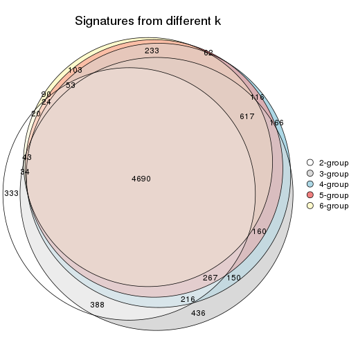
get_signature() returns a data frame invisibly. TO get the list of signatures, the function
call should be assigned to a variable explicitly. In following code, if plot argument is set
to FALSE, no heatmap is plotted while only the differential analysis is performed.
# code only for demonstration
tb = get_signature(res, k = ..., plot = FALSE)
An example of the output of tb is:
#> which_row fdr mean_1 mean_2 scaled_mean_1 scaled_mean_2 km
#> 1 38 0.042760348 8.373488 9.131774 -0.5533452 0.5164555 1
#> 2 40 0.018707592 7.106213 8.469186 -0.6173731 0.5762149 1
#> 3 55 0.019134737 10.221463 11.207825 -0.6159697 0.5749050 1
#> 4 59 0.006059896 5.921854 7.869574 -0.6899429 0.6439467 1
#> 5 60 0.018055526 8.928898 10.211722 -0.6204761 0.5791110 1
#> 6 98 0.009384629 15.714769 14.887706 0.6635654 -0.6193277 2
...
The columns in tb are:
which_row: row indices corresponding to the input matrix.fdr: FDR for the differential test. mean_x: The mean value in group x.scaled_mean_x: The mean value in group x after rows are scaled.km: Row groups if k-means clustering is applied to rows.UMAP plot which shows how samples are separated.
dimension_reduction(res, k = 2, method = "UMAP")
dimension_reduction(res, k = 3, method = "UMAP")
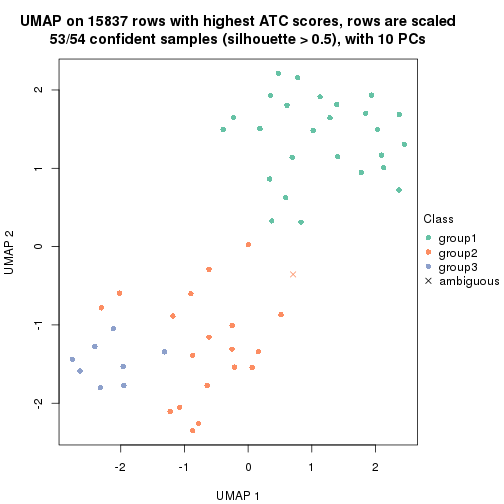
dimension_reduction(res, k = 4, method = "UMAP")
dimension_reduction(res, k = 5, method = "UMAP")
dimension_reduction(res, k = 6, method = "UMAP")
Following heatmap shows how subgroups are split when increasing k:
collect_classes(res)
Test correlation between subgroups and known annotations. If the known annotation is numeric, one-way ANOVA test is applied, and if the known annotation is discrete, chi-squared contingency table test is applied.
test_to_known_factors(res)
#> n disease.state(p) protocol(p) k
#> ATC:pam 53 0.03597 0.3236 2
#> ATC:pam 53 0.00128 0.2091 3
#> ATC:pam 50 0.00399 0.0312 4
#> ATC:pam 48 0.00897 0.0334 5
#> ATC:pam 44 0.00286 0.0206 6
If matrix rows can be associated to genes, consider to use GO_Enrichment(res,
...) to perform function enrichment for the signature genes.
The object with results only for a single top-value method and a single partition method can be extracted as:
res = res_list["ATC", "mclust"]
# you can also extract it by
# res = res_list["ATC:mclust"]
A summary of res and all the functions that can be applied to it:
res
#> A 'ConsensusPartition' object with k = 2, 3, 4, 5, 6.
#> On a matrix with 15837 rows and 54 columns.
#> Top rows (1000, 2000, 3000, 4000, 5000) are extracted by 'ATC' method.
#> Subgroups are detected by 'mclust' method.
#> Performed in total 1250 partitions by row resampling.
#> Best k for subgroups seems to be 2.
#>
#> Following methods can be applied to this 'ConsensusPartition' object:
#> [1] "cola_report" "collect_classes" "collect_plots"
#> [4] "collect_stats" "colnames" "compare_signatures"
#> [7] "consensus_heatmap" "dimension_reduction" "functional_enrichment"
#> [10] "get_anno_col" "get_anno" "get_classes"
#> [13] "get_consensus" "get_matrix" "get_membership"
#> [16] "get_param" "get_signatures" "get_stats"
#> [19] "is_best_k" "is_stable_k" "membership_heatmap"
#> [22] "ncol" "nrow" "plot_ecdf"
#> [25] "rownames" "select_partition_number" "show"
#> [28] "suggest_best_k" "test_to_known_factors"
collect_plots() function collects all the plots made from res for all k (number of partitions)
into one single page to provide an easy and fast comparison between different k.
collect_plots(res)
The plots are:
k and the heatmap of
predicted classes for each k.k.k.k.All the plots in panels can be made by individual functions and they are plotted later in this section.
select_partition_number() produces several plots showing different
statistics for choosing “optimized” k. There are following statistics:
k;k, the area increased is defined as \(A_k - A_{k-1}\).The detailed explanations of these statistics can be found in the cola vignette.
Generally speaking, lower PAC score, higher mean silhouette score or higher
concordance corresponds to better partition. Rand index and Jaccard index
measure how similar the current partition is compared to partition with k-1.
If they are too similar, we won't accept k is better than k-1.
select_partition_number(res)
The numeric values for all these statistics can be obtained by get_stats().
get_stats(res)
#> k 1-PAC mean_silhouette concordance area_increased Rand Jaccard
#> 2 2 0.885 0.920 0.966 0.4728 0.535 0.535
#> 3 3 0.666 0.841 0.899 0.3932 0.762 0.566
#> 4 4 0.730 0.889 0.908 0.1112 0.857 0.600
#> 5 5 0.733 0.796 0.850 0.0380 0.978 0.911
#> 6 6 0.759 0.788 0.864 0.0264 0.992 0.963
suggest_best_k() suggests the best \(k\) based on these statistics. The rules are as follows:
NA.suggest_best_k(res)
#> [1] 2
Following shows the table of the partitions (You need to click the show/hide
code output link to see it). The membership matrix (columns with name p*)
is inferred by
clue::cl_consensus()
function with the SE method. Basically the value in the membership matrix
represents the probability to belong to a certain group. The finall class
label for an item is determined with the group with highest probability it
belongs to.
In get_classes() function, the entropy is calculated from the membership
matrix and the silhouette score is calculated from the consensus matrix.
cbind(get_classes(res, k = 2), get_membership(res, k = 2))
#> class entropy silhouette p1 p2
#> GSM134895 2 0.0000 0.956 0.000 1.000
#> GSM134896 2 0.0000 0.956 0.000 1.000
#> GSM134897 2 0.0000 0.956 0.000 1.000
#> GSM134898 2 0.0000 0.956 0.000 1.000
#> GSM134905 2 0.0000 0.956 0.000 1.000
#> GSM135018 2 0.0376 0.957 0.004 0.996
#> GSM135674 2 0.6343 0.802 0.160 0.840
#> GSM135683 2 0.0000 0.956 0.000 1.000
#> GSM135685 2 0.0000 0.956 0.000 1.000
#> GSM135699 1 0.0000 0.977 1.000 0.000
#> GSM135019 2 0.0000 0.956 0.000 1.000
#> GSM135026 2 0.7219 0.753 0.200 0.800
#> GSM135033 2 0.0000 0.956 0.000 1.000
#> GSM135042 2 0.0000 0.956 0.000 1.000
#> GSM135057 2 0.0000 0.956 0.000 1.000
#> GSM135068 1 0.0000 0.977 1.000 0.000
#> GSM135071 2 0.0376 0.957 0.004 0.996
#> GSM135078 2 0.0376 0.957 0.004 0.996
#> GSM135163 2 0.0376 0.957 0.004 0.996
#> GSM135166 2 0.0000 0.956 0.000 1.000
#> GSM135223 2 0.0000 0.956 0.000 1.000
#> GSM135224 2 0.0000 0.956 0.000 1.000
#> GSM135228 1 0.0000 0.977 1.000 0.000
#> GSM135262 1 0.1414 0.960 0.980 0.020
#> GSM135263 2 0.0376 0.957 0.004 0.996
#> GSM135279 2 0.0376 0.957 0.004 0.996
#> GSM135661 1 0.0000 0.977 1.000 0.000
#> GSM135662 2 0.0376 0.957 0.004 0.996
#> GSM135663 2 0.0376 0.957 0.004 0.996
#> GSM135664 2 0.0376 0.957 0.004 0.996
#> GSM135665 1 0.0000 0.977 1.000 0.000
#> GSM135666 1 0.9323 0.416 0.652 0.348
#> GSM135668 2 0.7299 0.748 0.204 0.796
#> GSM135670 2 0.9775 0.342 0.412 0.588
#> GSM135671 1 0.0000 0.977 1.000 0.000
#> GSM135675 1 0.0000 0.977 1.000 0.000
#> GSM135676 1 0.0000 0.977 1.000 0.000
#> GSM135677 1 0.0000 0.977 1.000 0.000
#> GSM135679 1 0.0000 0.977 1.000 0.000
#> GSM135680 2 0.0376 0.957 0.004 0.996
#> GSM135681 2 0.0376 0.957 0.004 0.996
#> GSM135682 2 0.0376 0.957 0.004 0.996
#> GSM135687 1 0.0000 0.977 1.000 0.000
#> GSM135688 1 0.0000 0.977 1.000 0.000
#> GSM135689 1 0.0000 0.977 1.000 0.000
#> GSM135693 2 0.0000 0.956 0.000 1.000
#> GSM135694 1 0.0000 0.977 1.000 0.000
#> GSM135695 1 0.0000 0.977 1.000 0.000
#> GSM135696 1 0.0000 0.977 1.000 0.000
#> GSM135697 1 0.0938 0.967 0.988 0.012
#> GSM135698 2 0.0376 0.957 0.004 0.996
#> GSM135700 2 0.9686 0.387 0.396 0.604
#> GSM135702 2 0.0376 0.957 0.004 0.996
#> GSM135703 2 0.0376 0.957 0.004 0.996
cbind(get_classes(res, k = 3), get_membership(res, k = 3))
#> class entropy silhouette p1 p2 p3
#> GSM134895 3 0.3310 0.851 0.064 0.028 0.908
#> GSM134896 3 0.0000 0.864 0.000 0.000 1.000
#> GSM134897 3 0.1031 0.870 0.000 0.024 0.976
#> GSM134898 3 0.1031 0.870 0.000 0.024 0.976
#> GSM134905 3 0.0000 0.864 0.000 0.000 1.000
#> GSM135018 2 0.4842 0.782 0.000 0.776 0.224
#> GSM135674 2 0.8022 0.719 0.184 0.656 0.160
#> GSM135683 3 0.1031 0.870 0.000 0.024 0.976
#> GSM135685 3 0.0000 0.864 0.000 0.000 1.000
#> GSM135699 1 0.0000 0.974 1.000 0.000 0.000
#> GSM135019 3 0.1031 0.870 0.000 0.024 0.976
#> GSM135026 2 0.6027 0.655 0.272 0.712 0.016
#> GSM135033 3 0.1031 0.870 0.000 0.024 0.976
#> GSM135042 3 0.3337 0.853 0.060 0.032 0.908
#> GSM135057 3 0.5815 0.715 0.004 0.304 0.692
#> GSM135068 1 0.0000 0.974 1.000 0.000 0.000
#> GSM135071 2 0.3816 0.830 0.000 0.852 0.148
#> GSM135078 2 0.4346 0.818 0.000 0.816 0.184
#> GSM135163 3 0.4164 0.826 0.008 0.144 0.848
#> GSM135166 3 0.0000 0.864 0.000 0.000 1.000
#> GSM135223 3 0.3644 0.842 0.004 0.124 0.872
#> GSM135224 3 0.5480 0.746 0.004 0.264 0.732
#> GSM135228 1 0.0000 0.974 1.000 0.000 0.000
#> GSM135262 1 0.0000 0.974 1.000 0.000 0.000
#> GSM135263 2 0.0424 0.825 0.000 0.992 0.008
#> GSM135279 2 0.4235 0.822 0.000 0.824 0.176
#> GSM135661 1 0.1163 0.948 0.972 0.000 0.028
#> GSM135662 2 0.0424 0.825 0.000 0.992 0.008
#> GSM135663 2 0.0424 0.825 0.000 0.992 0.008
#> GSM135664 2 0.0424 0.825 0.000 0.992 0.008
#> GSM135665 1 0.0000 0.974 1.000 0.000 0.000
#> GSM135666 1 0.5733 0.468 0.676 0.000 0.324
#> GSM135668 2 0.6053 0.674 0.260 0.720 0.020
#> GSM135670 2 0.7637 0.607 0.284 0.640 0.076
#> GSM135671 1 0.0000 0.974 1.000 0.000 0.000
#> GSM135675 1 0.0237 0.971 0.996 0.000 0.004
#> GSM135676 3 0.7526 0.292 0.424 0.040 0.536
#> GSM135677 1 0.0000 0.974 1.000 0.000 0.000
#> GSM135679 1 0.0592 0.965 0.988 0.000 0.012
#> GSM135680 3 0.4531 0.813 0.008 0.168 0.824
#> GSM135681 3 0.4937 0.822 0.028 0.148 0.824
#> GSM135682 2 0.4121 0.825 0.000 0.832 0.168
#> GSM135687 1 0.0000 0.974 1.000 0.000 0.000
#> GSM135688 1 0.0000 0.974 1.000 0.000 0.000
#> GSM135689 1 0.0000 0.974 1.000 0.000 0.000
#> GSM135693 3 0.4293 0.817 0.004 0.164 0.832
#> GSM135694 1 0.0000 0.974 1.000 0.000 0.000
#> GSM135695 1 0.0000 0.974 1.000 0.000 0.000
#> GSM135696 1 0.0000 0.974 1.000 0.000 0.000
#> GSM135697 1 0.0424 0.969 0.992 0.008 0.000
#> GSM135698 2 0.0424 0.825 0.000 0.992 0.008
#> GSM135700 3 0.7039 0.550 0.312 0.040 0.648
#> GSM135702 2 0.3752 0.831 0.000 0.856 0.144
#> GSM135703 2 0.3816 0.830 0.000 0.852 0.148
cbind(get_classes(res, k = 4), get_membership(res, k = 4))
#> class entropy silhouette p1 p2 p3 p4
#> GSM134895 3 0.3763 0.851 0.104 0.012 0.856 0.028
#> GSM134896 3 0.0188 0.942 0.000 0.000 0.996 0.004
#> GSM134897 3 0.1388 0.943 0.000 0.012 0.960 0.028
#> GSM134898 3 0.1256 0.945 0.000 0.008 0.964 0.028
#> GSM134905 3 0.0188 0.942 0.000 0.000 0.996 0.004
#> GSM135018 2 0.4274 0.848 0.000 0.808 0.148 0.044
#> GSM135674 4 0.5163 0.812 0.072 0.080 0.048 0.800
#> GSM135683 3 0.1452 0.945 0.000 0.008 0.956 0.036
#> GSM135685 3 0.0188 0.942 0.000 0.000 0.996 0.004
#> GSM135699 1 0.0000 0.976 1.000 0.000 0.000 0.000
#> GSM135019 3 0.1151 0.946 0.000 0.008 0.968 0.024
#> GSM135026 4 0.5493 0.783 0.176 0.084 0.004 0.736
#> GSM135033 3 0.1256 0.945 0.000 0.008 0.964 0.028
#> GSM135042 3 0.5118 0.791 0.104 0.012 0.784 0.100
#> GSM135057 4 0.5298 0.755 0.000 0.244 0.048 0.708
#> GSM135068 1 0.0000 0.976 1.000 0.000 0.000 0.000
#> GSM135071 2 0.4655 0.794 0.000 0.760 0.032 0.208
#> GSM135078 2 0.4257 0.852 0.000 0.812 0.140 0.048
#> GSM135163 4 0.4804 0.805 0.016 0.084 0.092 0.808
#> GSM135166 3 0.0188 0.942 0.000 0.000 0.996 0.004
#> GSM135223 4 0.2214 0.807 0.000 0.028 0.044 0.928
#> GSM135224 4 0.4136 0.744 0.000 0.196 0.016 0.788
#> GSM135228 1 0.0188 0.975 0.996 0.000 0.000 0.004
#> GSM135262 1 0.0707 0.966 0.980 0.000 0.000 0.020
#> GSM135263 2 0.0000 0.864 0.000 1.000 0.000 0.000
#> GSM135279 2 0.4534 0.851 0.000 0.800 0.132 0.068
#> GSM135661 1 0.0000 0.976 1.000 0.000 0.000 0.000
#> GSM135662 2 0.0000 0.864 0.000 1.000 0.000 0.000
#> GSM135663 2 0.0000 0.864 0.000 1.000 0.000 0.000
#> GSM135664 2 0.0000 0.864 0.000 1.000 0.000 0.000
#> GSM135665 1 0.0000 0.976 1.000 0.000 0.000 0.000
#> GSM135666 1 0.3074 0.810 0.848 0.000 0.152 0.000
#> GSM135668 4 0.5610 0.777 0.176 0.104 0.000 0.720
#> GSM135670 4 0.5382 0.783 0.176 0.040 0.028 0.756
#> GSM135671 1 0.0000 0.976 1.000 0.000 0.000 0.000
#> GSM135675 1 0.0895 0.964 0.976 0.004 0.000 0.020
#> GSM135676 1 0.2585 0.910 0.916 0.032 0.004 0.048
#> GSM135677 1 0.0000 0.976 1.000 0.000 0.000 0.000
#> GSM135679 1 0.1452 0.950 0.956 0.008 0.000 0.036
#> GSM135680 4 0.4147 0.819 0.012 0.076 0.068 0.844
#> GSM135681 4 0.4117 0.826 0.024 0.060 0.064 0.852
#> GSM135682 2 0.4362 0.860 0.000 0.816 0.096 0.088
#> GSM135687 1 0.0000 0.976 1.000 0.000 0.000 0.000
#> GSM135688 1 0.0000 0.976 1.000 0.000 0.000 0.000
#> GSM135689 1 0.0188 0.975 0.996 0.000 0.000 0.004
#> GSM135693 4 0.3761 0.812 0.000 0.068 0.080 0.852
#> GSM135694 1 0.0000 0.976 1.000 0.000 0.000 0.000
#> GSM135695 1 0.0000 0.976 1.000 0.000 0.000 0.000
#> GSM135696 1 0.0000 0.976 1.000 0.000 0.000 0.000
#> GSM135697 1 0.1902 0.933 0.932 0.004 0.000 0.064
#> GSM135698 2 0.0336 0.864 0.000 0.992 0.000 0.008
#> GSM135700 4 0.5569 0.704 0.280 0.040 0.004 0.676
#> GSM135702 2 0.4149 0.848 0.000 0.812 0.036 0.152
#> GSM135703 2 0.3863 0.852 0.000 0.828 0.028 0.144
cbind(get_classes(res, k = 5), get_membership(res, k = 5))
#> class entropy silhouette p1 p2 p3 p4 p5
#> GSM134895 3 0.5929 0.7159 0.096 0.008 0.680 0.036 0.180
#> GSM134896 3 0.0955 0.8973 0.000 0.000 0.968 0.004 0.028
#> GSM134897 3 0.2838 0.8769 0.000 0.008 0.884 0.036 0.072
#> GSM134898 3 0.2506 0.8849 0.000 0.008 0.904 0.036 0.052
#> GSM134905 3 0.0955 0.8973 0.000 0.000 0.968 0.004 0.028
#> GSM135018 2 0.4063 0.7832 0.000 0.800 0.112 0.084 0.004
#> GSM135674 5 0.6944 0.7175 0.164 0.068 0.012 0.148 0.608
#> GSM135683 3 0.1741 0.8897 0.000 0.000 0.936 0.024 0.040
#> GSM135685 3 0.0955 0.8973 0.000 0.000 0.968 0.004 0.028
#> GSM135699 1 0.0703 0.9216 0.976 0.000 0.000 0.000 0.024
#> GSM135019 3 0.0693 0.8992 0.000 0.000 0.980 0.012 0.008
#> GSM135026 5 0.6261 0.8919 0.248 0.080 0.000 0.056 0.616
#> GSM135033 3 0.1651 0.8915 0.000 0.008 0.944 0.036 0.012
#> GSM135042 3 0.6475 0.6677 0.116 0.008 0.648 0.064 0.164
#> GSM135057 4 0.4665 0.6745 0.000 0.260 0.000 0.692 0.048
#> GSM135068 1 0.0162 0.9217 0.996 0.000 0.000 0.000 0.004
#> GSM135071 2 0.3203 0.7729 0.000 0.820 0.000 0.168 0.012
#> GSM135078 2 0.3906 0.7838 0.000 0.804 0.112 0.084 0.000
#> GSM135163 4 0.4196 0.7326 0.008 0.144 0.008 0.796 0.044
#> GSM135166 3 0.0955 0.8973 0.000 0.000 0.968 0.004 0.028
#> GSM135223 4 0.2927 0.6977 0.000 0.040 0.000 0.868 0.092
#> GSM135224 4 0.4800 0.6328 0.000 0.196 0.000 0.716 0.088
#> GSM135228 1 0.0693 0.9205 0.980 0.000 0.000 0.008 0.012
#> GSM135262 1 0.1461 0.8983 0.952 0.004 0.000 0.016 0.028
#> GSM135263 2 0.0290 0.7956 0.000 0.992 0.000 0.008 0.000
#> GSM135279 2 0.4816 0.7690 0.000 0.776 0.092 0.064 0.068
#> GSM135661 1 0.0566 0.9196 0.984 0.000 0.000 0.004 0.012
#> GSM135662 2 0.0290 0.7954 0.000 0.992 0.000 0.000 0.008
#> GSM135663 2 0.0162 0.7962 0.000 0.996 0.000 0.000 0.004
#> GSM135664 2 0.0162 0.7954 0.000 0.996 0.000 0.004 0.000
#> GSM135665 1 0.0609 0.9219 0.980 0.000 0.000 0.000 0.020
#> GSM135666 1 0.4138 0.4552 0.708 0.000 0.276 0.000 0.016
#> GSM135668 5 0.6191 0.8885 0.240 0.088 0.000 0.048 0.624
#> GSM135670 5 0.6379 0.8729 0.268 0.072 0.000 0.064 0.596
#> GSM135671 1 0.0703 0.9216 0.976 0.000 0.000 0.000 0.024
#> GSM135675 1 0.2903 0.8422 0.872 0.000 0.000 0.048 0.080
#> GSM135676 1 0.4083 0.7150 0.788 0.000 0.000 0.132 0.080
#> GSM135677 1 0.0404 0.9196 0.988 0.000 0.000 0.000 0.012
#> GSM135679 1 0.2659 0.8440 0.888 0.000 0.000 0.060 0.052
#> GSM135680 4 0.3853 0.7368 0.008 0.152 0.000 0.804 0.036
#> GSM135681 4 0.4090 0.7231 0.036 0.116 0.000 0.812 0.036
#> GSM135682 2 0.4015 0.7874 0.000 0.812 0.040 0.124 0.024
#> GSM135687 1 0.0404 0.9196 0.988 0.000 0.000 0.000 0.012
#> GSM135688 1 0.0703 0.9216 0.976 0.000 0.000 0.000 0.024
#> GSM135689 1 0.0566 0.9200 0.984 0.000 0.000 0.004 0.012
#> GSM135693 4 0.3863 0.7341 0.000 0.152 0.000 0.796 0.052
#> GSM135694 1 0.0703 0.9216 0.976 0.000 0.000 0.000 0.024
#> GSM135695 1 0.0404 0.9234 0.988 0.000 0.000 0.000 0.012
#> GSM135696 1 0.1168 0.9156 0.960 0.000 0.000 0.008 0.032
#> GSM135697 1 0.1809 0.8961 0.928 0.000 0.000 0.012 0.060
#> GSM135698 2 0.3932 0.4356 0.000 0.672 0.000 0.000 0.328
#> GSM135700 4 0.5313 0.0573 0.376 0.004 0.000 0.572 0.048
#> GSM135702 2 0.6230 0.3245 0.000 0.480 0.008 0.112 0.400
#> GSM135703 2 0.3203 0.7728 0.000 0.820 0.000 0.168 0.012
cbind(get_classes(res, k = 6), get_membership(res, k = 6))
#> class entropy silhouette p1 p2 p3 p4 p5 p6
#> GSM134895 3 0.5152 0.760 0.056 0.000 0.672 0.044 0.224 0.004
#> GSM134896 3 0.0000 0.870 0.000 0.000 1.000 0.000 0.000 0.000
#> GSM134897 3 0.3695 0.834 0.000 0.000 0.776 0.044 0.176 0.004
#> GSM134898 3 0.3656 0.838 0.000 0.000 0.784 0.048 0.164 0.004
#> GSM134905 3 0.0000 0.870 0.000 0.000 1.000 0.000 0.000 0.000
#> GSM135018 2 0.4251 0.803 0.000 0.764 0.056 0.156 0.008 0.016
#> GSM135674 5 0.3683 0.781 0.184 0.000 0.000 0.048 0.768 0.000
#> GSM135683 3 0.3152 0.835 0.000 0.000 0.832 0.020 0.016 0.132
#> GSM135685 3 0.0000 0.870 0.000 0.000 1.000 0.000 0.000 0.000
#> GSM135699 1 0.1313 0.885 0.952 0.000 0.000 0.004 0.028 0.016
#> GSM135019 3 0.0951 0.867 0.000 0.000 0.968 0.004 0.008 0.020
#> GSM135026 5 0.3739 0.912 0.220 0.004 0.000 0.020 0.752 0.004
#> GSM135033 3 0.2914 0.859 0.000 0.004 0.860 0.040 0.092 0.004
#> GSM135042 3 0.5519 0.717 0.104 0.000 0.664 0.052 0.176 0.004
#> GSM135057 4 0.5273 0.385 0.000 0.208 0.004 0.620 0.000 0.168
#> GSM135068 1 0.0260 0.891 0.992 0.000 0.000 0.000 0.008 0.000
#> GSM135071 2 0.2964 0.802 0.000 0.792 0.000 0.204 0.000 0.004
#> GSM135078 2 0.4038 0.809 0.000 0.776 0.040 0.160 0.008 0.016
#> GSM135163 4 0.1262 0.719 0.008 0.020 0.000 0.956 0.016 0.000
#> GSM135166 3 0.0000 0.870 0.000 0.000 1.000 0.000 0.000 0.000
#> GSM135223 6 0.3333 0.709 0.000 0.024 0.000 0.192 0.000 0.784
#> GSM135224 6 0.3555 0.734 0.000 0.176 0.000 0.044 0.000 0.780
#> GSM135228 1 0.0820 0.888 0.972 0.000 0.000 0.012 0.016 0.000
#> GSM135262 1 0.1003 0.878 0.964 0.000 0.000 0.016 0.020 0.000
#> GSM135263 2 0.0291 0.819 0.000 0.992 0.000 0.004 0.004 0.000
#> GSM135279 2 0.3520 0.777 0.000 0.776 0.000 0.036 0.000 0.188
#> GSM135661 1 0.0291 0.891 0.992 0.000 0.000 0.004 0.004 0.000
#> GSM135662 2 0.0146 0.817 0.000 0.996 0.000 0.000 0.004 0.000
#> GSM135663 2 0.0000 0.818 0.000 1.000 0.000 0.000 0.000 0.000
#> GSM135664 2 0.0000 0.818 0.000 1.000 0.000 0.000 0.000 0.000
#> GSM135665 1 0.0837 0.891 0.972 0.000 0.000 0.004 0.020 0.004
#> GSM135666 1 0.4338 0.110 0.560 0.000 0.420 0.000 0.016 0.004
#> GSM135668 5 0.3763 0.901 0.240 0.012 0.000 0.012 0.736 0.000
#> GSM135670 5 0.3991 0.909 0.224 0.004 0.000 0.032 0.736 0.004
#> GSM135671 1 0.1313 0.885 0.952 0.000 0.000 0.004 0.028 0.016
#> GSM135675 1 0.3260 0.751 0.824 0.000 0.000 0.136 0.028 0.012
#> GSM135676 1 0.4239 0.555 0.696 0.000 0.000 0.264 0.024 0.016
#> GSM135677 1 0.0146 0.891 0.996 0.000 0.000 0.000 0.004 0.000
#> GSM135679 1 0.2845 0.750 0.836 0.000 0.000 0.148 0.008 0.008
#> GSM135680 4 0.1082 0.708 0.000 0.040 0.000 0.956 0.000 0.004
#> GSM135681 4 0.1871 0.712 0.024 0.016 0.000 0.928 0.032 0.000
#> GSM135682 2 0.3962 0.799 0.000 0.772 0.000 0.128 0.096 0.004
#> GSM135687 1 0.0146 0.891 0.996 0.000 0.000 0.000 0.004 0.000
#> GSM135688 1 0.1313 0.885 0.952 0.000 0.000 0.004 0.028 0.016
#> GSM135689 1 0.0146 0.891 0.996 0.000 0.000 0.000 0.004 0.000
#> GSM135693 4 0.2726 0.645 0.000 0.032 0.000 0.856 0.000 0.112
#> GSM135694 1 0.1232 0.886 0.956 0.000 0.000 0.004 0.024 0.016
#> GSM135695 1 0.0291 0.892 0.992 0.000 0.000 0.004 0.004 0.000
#> GSM135696 1 0.1605 0.880 0.940 0.000 0.000 0.012 0.032 0.016
#> GSM135697 1 0.1672 0.858 0.932 0.000 0.000 0.016 0.048 0.004
#> GSM135698 2 0.2178 0.726 0.000 0.868 0.000 0.000 0.132 0.000
#> GSM135700 4 0.3508 0.316 0.292 0.000 0.000 0.704 0.004 0.000
#> GSM135702 2 0.4857 0.682 0.008 0.668 0.000 0.096 0.228 0.000
#> GSM135703 2 0.3134 0.798 0.000 0.784 0.000 0.208 0.004 0.004
Heatmaps for the consensus matrix. It visualizes the probability of two samples to be in a same group.
consensus_heatmap(res, k = 2)
consensus_heatmap(res, k = 3)
consensus_heatmap(res, k = 4)
consensus_heatmap(res, k = 5)
consensus_heatmap(res, k = 6)
Heatmaps for the membership of samples in all partitions to see how consistent they are:
membership_heatmap(res, k = 2)
membership_heatmap(res, k = 3)
membership_heatmap(res, k = 4)
membership_heatmap(res, k = 5)
membership_heatmap(res, k = 6)
As soon as we have had the classes for columns, we can look for signatures which are significantly different between classes which can be candidate marks for certain classes. Following are the heatmaps for signatures.
Signature heatmaps where rows are scaled:
get_signatures(res, k = 2)
get_signatures(res, k = 3)
get_signatures(res, k = 4)
get_signatures(res, k = 5)
get_signatures(res, k = 6)
Signature heatmaps where rows are not scaled:
get_signatures(res, k = 2, scale_rows = FALSE)

get_signatures(res, k = 3, scale_rows = FALSE)
get_signatures(res, k = 4, scale_rows = FALSE)

get_signatures(res, k = 5, scale_rows = FALSE)
get_signatures(res, k = 6, scale_rows = FALSE)
Compare the overlap of signatures from different k:
compare_signatures(res)
get_signature() returns a data frame invisibly. TO get the list of signatures, the function
call should be assigned to a variable explicitly. In following code, if plot argument is set
to FALSE, no heatmap is plotted while only the differential analysis is performed.
# code only for demonstration
tb = get_signature(res, k = ..., plot = FALSE)
An example of the output of tb is:
#> which_row fdr mean_1 mean_2 scaled_mean_1 scaled_mean_2 km
#> 1 38 0.042760348 8.373488 9.131774 -0.5533452 0.5164555 1
#> 2 40 0.018707592 7.106213 8.469186 -0.6173731 0.5762149 1
#> 3 55 0.019134737 10.221463 11.207825 -0.6159697 0.5749050 1
#> 4 59 0.006059896 5.921854 7.869574 -0.6899429 0.6439467 1
#> 5 60 0.018055526 8.928898 10.211722 -0.6204761 0.5791110 1
#> 6 98 0.009384629 15.714769 14.887706 0.6635654 -0.6193277 2
...
The columns in tb are:
which_row: row indices corresponding to the input matrix.fdr: FDR for the differential test. mean_x: The mean value in group x.scaled_mean_x: The mean value in group x after rows are scaled.km: Row groups if k-means clustering is applied to rows.UMAP plot which shows how samples are separated.
dimension_reduction(res, k = 2, method = "UMAP")
dimension_reduction(res, k = 3, method = "UMAP")
dimension_reduction(res, k = 4, method = "UMAP")

dimension_reduction(res, k = 5, method = "UMAP")
dimension_reduction(res, k = 6, method = "UMAP")
Following heatmap shows how subgroups are split when increasing k:
collect_classes(res)
Test correlation between subgroups and known annotations. If the known annotation is numeric, one-way ANOVA test is applied, and if the known annotation is discrete, chi-squared contingency table test is applied.
test_to_known_factors(res)
#> n disease.state(p) protocol(p) k
#> ATC:mclust 51 6.54e-03 0.4474 2
#> ATC:mclust 52 4.89e-04 0.2297 3
#> ATC:mclust 54 5.94e-05 0.4614 4
#> ATC:mclust 50 3.88e-04 0.0935 5
#> ATC:mclust 51 1.74e-04 0.0538 6
If matrix rows can be associated to genes, consider to use GO_Enrichment(res,
...) to perform function enrichment for the signature genes.
The object with results only for a single top-value method and a single partition method can be extracted as:
res = res_list["ATC", "NMF"]
# you can also extract it by
# res = res_list["ATC:NMF"]
A summary of res and all the functions that can be applied to it:
res
#> A 'ConsensusPartition' object with k = 2, 3, 4, 5, 6.
#> On a matrix with 15837 rows and 54 columns.
#> Top rows (1000, 2000, 3000, 4000, 5000) are extracted by 'ATC' method.
#> Subgroups are detected by 'NMF' method.
#> Performed in total 1250 partitions by row resampling.
#> Best k for subgroups seems to be 2.
#>
#> Following methods can be applied to this 'ConsensusPartition' object:
#> [1] "cola_report" "collect_classes" "collect_plots"
#> [4] "collect_stats" "colnames" "compare_signatures"
#> [7] "consensus_heatmap" "dimension_reduction" "functional_enrichment"
#> [10] "get_anno_col" "get_anno" "get_classes"
#> [13] "get_consensus" "get_matrix" "get_membership"
#> [16] "get_param" "get_signatures" "get_stats"
#> [19] "is_best_k" "is_stable_k" "membership_heatmap"
#> [22] "ncol" "nrow" "plot_ecdf"
#> [25] "rownames" "select_partition_number" "show"
#> [28] "suggest_best_k" "test_to_known_factors"
collect_plots() function collects all the plots made from res for all k (number of partitions)
into one single page to provide an easy and fast comparison between different k.
collect_plots(res)
The plots are:
k and the heatmap of
predicted classes for each k.k.k.k.All the plots in panels can be made by individual functions and they are plotted later in this section.
select_partition_number() produces several plots showing different
statistics for choosing “optimized” k. There are following statistics:
k;k, the area increased is defined as \(A_k - A_{k-1}\).The detailed explanations of these statistics can be found in the cola vignette.
Generally speaking, lower PAC score, higher mean silhouette score or higher
concordance corresponds to better partition. Rand index and Jaccard index
measure how similar the current partition is compared to partition with k-1.
If they are too similar, we won't accept k is better than k-1.
select_partition_number(res)
The numeric values for all these statistics can be obtained by get_stats().
get_stats(res)
#> k 1-PAC mean_silhouette concordance area_increased Rand Jaccard
#> 2 2 0.921 0.900 0.960 0.4485 0.535 0.535
#> 3 3 0.830 0.891 0.945 0.3761 0.736 0.549
#> 4 4 0.658 0.788 0.843 0.1207 1.000 1.000
#> 5 5 0.634 0.585 0.789 0.0550 0.883 0.693
#> 6 6 0.634 0.534 0.768 0.0425 0.871 0.611
suggest_best_k() suggests the best \(k\) based on these statistics. The rules are as follows:
NA.suggest_best_k(res)
#> [1] 2
Following shows the table of the partitions (You need to click the show/hide
code output link to see it). The membership matrix (columns with name p*)
is inferred by
clue::cl_consensus()
function with the SE method. Basically the value in the membership matrix
represents the probability to belong to a certain group. The finall class
label for an item is determined with the group with highest probability it
belongs to.
In get_classes() function, the entropy is calculated from the membership
matrix and the silhouette score is calculated from the consensus matrix.
cbind(get_classes(res, k = 2), get_membership(res, k = 2))
#> class entropy silhouette p1 p2
#> GSM134895 1 0.0000 0.982 1.000 0.000
#> GSM134896 2 0.0000 0.908 0.000 1.000
#> GSM134897 2 0.0000 0.908 0.000 1.000
#> GSM134898 2 0.0000 0.908 0.000 1.000
#> GSM134905 2 0.0000 0.908 0.000 1.000
#> GSM135018 2 0.0000 0.908 0.000 1.000
#> GSM135674 1 0.0000 0.982 1.000 0.000
#> GSM135683 2 0.0000 0.908 0.000 1.000
#> GSM135685 2 0.0000 0.908 0.000 1.000
#> GSM135699 1 0.0000 0.982 1.000 0.000
#> GSM135019 2 0.0000 0.908 0.000 1.000
#> GSM135026 1 0.0000 0.982 1.000 0.000
#> GSM135033 2 0.0000 0.908 0.000 1.000
#> GSM135042 1 0.0000 0.982 1.000 0.000
#> GSM135057 2 0.3431 0.877 0.064 0.936
#> GSM135068 1 0.0000 0.982 1.000 0.000
#> GSM135071 1 0.2778 0.929 0.952 0.048
#> GSM135078 2 0.0000 0.908 0.000 1.000
#> GSM135163 1 0.0672 0.974 0.992 0.008
#> GSM135166 2 0.0000 0.908 0.000 1.000
#> GSM135223 2 0.6801 0.774 0.180 0.820
#> GSM135224 2 0.9460 0.499 0.364 0.636
#> GSM135228 1 0.0000 0.982 1.000 0.000
#> GSM135262 1 0.0000 0.982 1.000 0.000
#> GSM135263 2 0.4022 0.866 0.080 0.920
#> GSM135279 1 0.9998 -0.161 0.508 0.492
#> GSM135661 1 0.0000 0.982 1.000 0.000
#> GSM135662 1 0.0000 0.982 1.000 0.000
#> GSM135663 2 0.9977 0.220 0.472 0.528
#> GSM135664 2 0.2043 0.894 0.032 0.968
#> GSM135665 1 0.0000 0.982 1.000 0.000
#> GSM135666 1 0.0000 0.982 1.000 0.000
#> GSM135668 1 0.0000 0.982 1.000 0.000
#> GSM135670 1 0.0000 0.982 1.000 0.000
#> GSM135671 1 0.0000 0.982 1.000 0.000
#> GSM135675 1 0.0000 0.982 1.000 0.000
#> GSM135676 1 0.0000 0.982 1.000 0.000
#> GSM135677 1 0.0000 0.982 1.000 0.000
#> GSM135679 1 0.0000 0.982 1.000 0.000
#> GSM135680 1 0.0000 0.982 1.000 0.000
#> GSM135681 1 0.0000 0.982 1.000 0.000
#> GSM135682 2 0.0000 0.908 0.000 1.000
#> GSM135687 1 0.0000 0.982 1.000 0.000
#> GSM135688 1 0.0000 0.982 1.000 0.000
#> GSM135689 1 0.0000 0.982 1.000 0.000
#> GSM135693 1 0.0000 0.982 1.000 0.000
#> GSM135694 1 0.0000 0.982 1.000 0.000
#> GSM135695 1 0.0000 0.982 1.000 0.000
#> GSM135696 1 0.0000 0.982 1.000 0.000
#> GSM135697 1 0.0000 0.982 1.000 0.000
#> GSM135698 1 0.0000 0.982 1.000 0.000
#> GSM135700 1 0.0000 0.982 1.000 0.000
#> GSM135702 1 0.0000 0.982 1.000 0.000
#> GSM135703 2 0.9732 0.412 0.404 0.596
cbind(get_classes(res, k = 3), get_membership(res, k = 3))
#> class entropy silhouette p1 p2 p3
#> GSM134895 1 0.0475 0.976 0.992 0.004 0.004
#> GSM134896 3 0.1529 0.945 0.000 0.040 0.960
#> GSM134897 3 0.0747 0.952 0.000 0.016 0.984
#> GSM134898 3 0.0592 0.952 0.000 0.012 0.988
#> GSM134905 3 0.1529 0.945 0.000 0.040 0.960
#> GSM135018 3 0.5497 0.600 0.000 0.292 0.708
#> GSM135674 1 0.1289 0.969 0.968 0.032 0.000
#> GSM135683 3 0.0661 0.942 0.008 0.004 0.988
#> GSM135685 3 0.0237 0.950 0.000 0.004 0.996
#> GSM135699 1 0.0237 0.978 0.996 0.004 0.000
#> GSM135019 3 0.0237 0.950 0.000 0.004 0.996
#> GSM135026 1 0.1031 0.974 0.976 0.024 0.000
#> GSM135033 3 0.0237 0.950 0.000 0.004 0.996
#> GSM135042 1 0.2550 0.931 0.932 0.012 0.056
#> GSM135057 2 0.0829 0.844 0.004 0.984 0.012
#> GSM135068 1 0.0000 0.980 1.000 0.000 0.000
#> GSM135071 2 0.1031 0.846 0.024 0.976 0.000
#> GSM135078 2 0.4654 0.682 0.000 0.792 0.208
#> GSM135163 2 0.6154 0.406 0.408 0.592 0.000
#> GSM135166 3 0.1529 0.945 0.000 0.040 0.960
#> GSM135223 2 0.3213 0.803 0.008 0.900 0.092
#> GSM135224 2 0.0848 0.846 0.008 0.984 0.008
#> GSM135228 1 0.0237 0.981 0.996 0.004 0.000
#> GSM135262 1 0.0592 0.979 0.988 0.012 0.000
#> GSM135263 2 0.0661 0.845 0.004 0.988 0.008
#> GSM135279 2 0.4526 0.802 0.104 0.856 0.040
#> GSM135661 1 0.0000 0.980 1.000 0.000 0.000
#> GSM135662 2 0.1643 0.841 0.044 0.956 0.000
#> GSM135663 2 0.0237 0.845 0.004 0.996 0.000
#> GSM135664 2 0.0661 0.845 0.004 0.988 0.008
#> GSM135665 1 0.0237 0.981 0.996 0.004 0.000
#> GSM135666 1 0.0237 0.979 0.996 0.000 0.004
#> GSM135668 1 0.1411 0.967 0.964 0.036 0.000
#> GSM135670 1 0.0592 0.979 0.988 0.012 0.000
#> GSM135671 1 0.0237 0.981 0.996 0.004 0.000
#> GSM135675 1 0.0892 0.976 0.980 0.020 0.000
#> GSM135676 1 0.0892 0.976 0.980 0.020 0.000
#> GSM135677 1 0.0000 0.980 1.000 0.000 0.000
#> GSM135679 1 0.1031 0.974 0.976 0.024 0.000
#> GSM135680 2 0.2796 0.826 0.092 0.908 0.000
#> GSM135681 1 0.4291 0.776 0.820 0.180 0.000
#> GSM135682 2 0.4110 0.747 0.004 0.844 0.152
#> GSM135687 1 0.0000 0.980 1.000 0.000 0.000
#> GSM135688 1 0.0237 0.978 0.996 0.004 0.000
#> GSM135689 1 0.0237 0.980 0.996 0.004 0.000
#> GSM135693 2 0.3551 0.802 0.132 0.868 0.000
#> GSM135694 1 0.0237 0.981 0.996 0.004 0.000
#> GSM135695 1 0.0424 0.980 0.992 0.008 0.000
#> GSM135696 1 0.0237 0.981 0.996 0.004 0.000
#> GSM135697 1 0.0237 0.980 0.996 0.004 0.000
#> GSM135698 2 0.3941 0.767 0.156 0.844 0.000
#> GSM135700 1 0.1529 0.958 0.960 0.040 0.000
#> GSM135702 2 0.6252 0.255 0.444 0.556 0.000
#> GSM135703 2 0.0661 0.845 0.004 0.988 0.008
cbind(get_classes(res, k = 4), get_membership(res, k = 4))
#> class entropy silhouette p1 p2 p3 p4
#> GSM134895 1 0.2589 0.854 0.884 0.000 0.000 NA
#> GSM134896 3 0.0000 0.900 0.000 0.000 1.000 NA
#> GSM134897 3 0.2021 0.861 0.040 0.000 0.936 NA
#> GSM134898 3 0.0188 0.900 0.000 0.000 0.996 NA
#> GSM134905 3 0.0188 0.900 0.000 0.000 0.996 NA
#> GSM135018 3 0.5099 0.263 0.000 0.380 0.612 NA
#> GSM135674 1 0.5073 0.752 0.744 0.056 0.000 NA
#> GSM135683 3 0.5633 0.600 0.008 0.016 0.596 NA
#> GSM135685 3 0.1022 0.891 0.000 0.000 0.968 NA
#> GSM135699 1 0.2704 0.857 0.876 0.000 0.000 NA
#> GSM135019 3 0.0336 0.899 0.000 0.000 0.992 NA
#> GSM135026 1 0.6453 0.513 0.560 0.080 0.000 NA
#> GSM135033 3 0.0188 0.900 0.000 0.000 0.996 NA
#> GSM135042 1 0.4992 0.801 0.792 0.012 0.108 NA
#> GSM135057 2 0.3545 0.767 0.000 0.828 0.008 NA
#> GSM135068 1 0.0469 0.876 0.988 0.000 0.000 NA
#> GSM135071 2 0.1022 0.806 0.000 0.968 0.000 NA
#> GSM135078 2 0.3370 0.785 0.000 0.872 0.080 NA
#> GSM135163 2 0.6699 0.651 0.116 0.608 0.004 NA
#> GSM135166 3 0.0188 0.900 0.000 0.000 0.996 NA
#> GSM135223 2 0.5547 0.732 0.020 0.740 0.052 NA
#> GSM135224 2 0.4359 0.756 0.020 0.796 0.008 NA
#> GSM135228 1 0.2408 0.859 0.896 0.000 0.000 NA
#> GSM135262 1 0.2530 0.858 0.896 0.004 0.000 NA
#> GSM135263 2 0.1042 0.806 0.000 0.972 0.008 NA
#> GSM135279 2 0.5469 0.681 0.012 0.640 0.012 NA
#> GSM135661 1 0.1867 0.867 0.928 0.000 0.000 NA
#> GSM135662 2 0.2831 0.793 0.004 0.876 0.000 NA
#> GSM135663 2 0.2345 0.800 0.000 0.900 0.000 NA
#> GSM135664 2 0.2593 0.802 0.000 0.892 0.004 NA
#> GSM135665 1 0.2704 0.857 0.876 0.000 0.000 NA
#> GSM135666 1 0.1302 0.877 0.956 0.000 0.000 NA
#> GSM135668 1 0.6824 0.490 0.548 0.116 0.000 NA
#> GSM135670 1 0.3444 0.840 0.816 0.000 0.000 NA
#> GSM135671 1 0.2814 0.853 0.868 0.000 0.000 NA
#> GSM135675 1 0.2530 0.860 0.888 0.000 0.000 NA
#> GSM135676 1 0.3157 0.852 0.852 0.004 0.000 NA
#> GSM135677 1 0.1637 0.870 0.940 0.000 0.000 NA
#> GSM135679 1 0.1305 0.875 0.960 0.004 0.000 NA
#> GSM135680 2 0.4168 0.776 0.092 0.828 0.000 NA
#> GSM135681 1 0.6908 0.509 0.592 0.220 0.000 NA
#> GSM135682 2 0.4956 0.751 0.000 0.776 0.108 NA
#> GSM135687 1 0.1557 0.871 0.944 0.000 0.000 NA
#> GSM135688 1 0.2281 0.863 0.904 0.000 0.000 NA
#> GSM135689 1 0.1398 0.876 0.956 0.004 0.000 NA
#> GSM135693 2 0.5267 0.742 0.076 0.740 0.000 NA
#> GSM135694 1 0.3024 0.846 0.852 0.000 0.000 NA
#> GSM135695 1 0.1474 0.877 0.948 0.000 0.000 NA
#> GSM135696 1 0.2216 0.864 0.908 0.000 0.000 NA
#> GSM135697 1 0.3105 0.851 0.856 0.004 0.000 NA
#> GSM135698 2 0.6141 0.628 0.076 0.624 0.000 NA
#> GSM135700 1 0.3196 0.848 0.856 0.008 0.000 NA
#> GSM135702 2 0.7599 0.435 0.208 0.448 0.000 NA
#> GSM135703 2 0.2271 0.804 0.000 0.916 0.008 NA
cbind(get_classes(res, k = 5), get_membership(res, k = 5))
#> class entropy silhouette p1 p2 p3 p4 p5
#> GSM134895 1 0.5069 0.50912 0.620 0.328 0.000 0.000 0.052
#> GSM134896 3 0.0000 0.82770 0.000 0.000 1.000 0.000 0.000
#> GSM134897 3 0.4194 0.55360 0.000 0.276 0.708 0.004 0.012
#> GSM134898 3 0.2677 0.75120 0.000 0.112 0.872 0.000 0.016
#> GSM134905 3 0.0290 0.82676 0.000 0.000 0.992 0.000 0.008
#> GSM135018 3 0.6303 0.00416 0.000 0.116 0.540 0.328 0.016
#> GSM135674 2 0.4793 0.01278 0.436 0.544 0.000 0.000 0.020
#> GSM135683 5 0.4146 0.12512 0.000 0.012 0.268 0.004 0.716
#> GSM135685 3 0.1608 0.79013 0.000 0.000 0.928 0.000 0.072
#> GSM135699 1 0.0798 0.85458 0.976 0.016 0.000 0.000 0.008
#> GSM135019 3 0.0162 0.82731 0.000 0.000 0.996 0.000 0.004
#> GSM135026 2 0.6311 0.10855 0.388 0.488 0.000 0.012 0.112
#> GSM135033 3 0.0992 0.82087 0.000 0.008 0.968 0.000 0.024
#> GSM135042 1 0.6666 0.40774 0.564 0.252 0.148 0.000 0.036
#> GSM135057 4 0.1978 0.57862 0.000 0.032 0.024 0.932 0.012
#> GSM135068 1 0.1331 0.85736 0.952 0.040 0.000 0.000 0.008
#> GSM135071 4 0.4934 0.55973 0.000 0.364 0.000 0.600 0.036
#> GSM135078 4 0.5948 0.55114 0.000 0.280 0.036 0.616 0.068
#> GSM135163 4 0.5081 0.38412 0.092 0.028 0.000 0.740 0.140
#> GSM135166 3 0.0162 0.82750 0.000 0.000 0.996 0.000 0.004
#> GSM135223 4 0.3323 0.51698 0.068 0.008 0.044 0.868 0.012
#> GSM135224 4 0.3321 0.53118 0.088 0.024 0.008 0.864 0.016
#> GSM135228 1 0.4960 0.68407 0.708 0.180 0.000 0.000 0.112
#> GSM135262 1 0.3527 0.75198 0.792 0.192 0.000 0.000 0.016
#> GSM135263 4 0.4630 0.49709 0.000 0.396 0.000 0.588 0.016
#> GSM135279 5 0.6444 -0.15585 0.000 0.200 0.000 0.316 0.484
#> GSM135661 1 0.2793 0.82818 0.876 0.088 0.000 0.000 0.036
#> GSM135662 4 0.5420 0.43426 0.000 0.416 0.000 0.524 0.060
#> GSM135663 2 0.4821 -0.37660 0.000 0.516 0.000 0.464 0.020
#> GSM135664 4 0.5441 0.54481 0.000 0.324 0.000 0.596 0.080
#> GSM135665 1 0.1597 0.84908 0.948 0.024 0.000 0.008 0.020
#> GSM135666 1 0.1251 0.85776 0.956 0.036 0.000 0.000 0.008
#> GSM135668 2 0.5195 0.35309 0.296 0.644 0.000 0.008 0.052
#> GSM135670 1 0.5292 0.68811 0.700 0.108 0.000 0.012 0.180
#> GSM135671 1 0.1682 0.84703 0.944 0.032 0.000 0.012 0.012
#> GSM135675 1 0.1799 0.85637 0.940 0.028 0.000 0.012 0.020
#> GSM135676 1 0.2171 0.83889 0.924 0.032 0.000 0.028 0.016
#> GSM135677 1 0.1809 0.84958 0.928 0.060 0.000 0.000 0.012
#> GSM135679 1 0.1843 0.85717 0.932 0.052 0.000 0.008 0.008
#> GSM135680 4 0.3563 0.60884 0.012 0.208 0.000 0.780 0.000
#> GSM135681 1 0.6397 0.34713 0.564 0.096 0.000 0.304 0.036
#> GSM135682 2 0.4658 0.19563 0.000 0.720 0.044 0.228 0.008
#> GSM135687 1 0.2077 0.83945 0.908 0.084 0.000 0.000 0.008
#> GSM135688 1 0.0162 0.85715 0.996 0.004 0.000 0.000 0.000
#> GSM135689 1 0.1082 0.85830 0.964 0.028 0.000 0.000 0.008
#> GSM135693 4 0.2179 0.54838 0.072 0.008 0.000 0.912 0.008
#> GSM135694 1 0.1967 0.84264 0.932 0.036 0.000 0.012 0.020
#> GSM135695 1 0.1522 0.85710 0.944 0.044 0.000 0.000 0.012
#> GSM135696 1 0.0771 0.85674 0.976 0.020 0.000 0.000 0.004
#> GSM135697 1 0.2607 0.83175 0.904 0.024 0.000 0.040 0.032
#> GSM135698 2 0.4440 0.29995 0.028 0.752 0.000 0.200 0.020
#> GSM135700 1 0.3609 0.77356 0.844 0.040 0.000 0.092 0.024
#> GSM135702 2 0.3656 0.37494 0.052 0.844 0.000 0.080 0.024
#> GSM135703 2 0.4232 0.06540 0.000 0.676 0.000 0.312 0.012
cbind(get_classes(res, k = 6), get_membership(res, k = 6))
#> class entropy silhouette p1 p2 p3 p4 p5 p6
#> GSM134895 5 0.4367 -0.0829 0.408 0.004 0.000 0.004 0.572 0.012
#> GSM134896 3 0.0000 0.7244 0.000 0.000 1.000 0.000 0.000 0.000
#> GSM134897 5 0.4672 -0.2901 0.004 0.008 0.480 0.012 0.492 0.004
#> GSM134898 3 0.4305 0.2669 0.004 0.000 0.600 0.012 0.380 0.004
#> GSM134905 3 0.0000 0.7244 0.000 0.000 1.000 0.000 0.000 0.000
#> GSM135018 3 0.6328 -0.2931 0.000 0.388 0.392 0.204 0.012 0.004
#> GSM135674 1 0.5730 -0.0172 0.444 0.128 0.000 0.000 0.420 0.008
#> GSM135683 6 0.3486 0.0000 0.000 0.024 0.180 0.000 0.008 0.788
#> GSM135685 3 0.2809 0.5579 0.000 0.004 0.824 0.004 0.000 0.168
#> GSM135699 1 0.0922 0.8294 0.968 0.004 0.000 0.000 0.024 0.004
#> GSM135019 3 0.0363 0.7209 0.000 0.000 0.988 0.000 0.000 0.012
#> GSM135026 1 0.6747 0.0735 0.468 0.124 0.000 0.004 0.320 0.084
#> GSM135033 3 0.1364 0.6980 0.000 0.004 0.944 0.000 0.004 0.048
#> GSM135042 1 0.6965 0.4490 0.572 0.088 0.100 0.008 0.192 0.040
#> GSM135057 4 0.2149 0.6728 0.000 0.104 0.004 0.888 0.004 0.000
#> GSM135068 1 0.1639 0.8311 0.940 0.008 0.000 0.008 0.036 0.008
#> GSM135071 2 0.5401 0.5437 0.000 0.624 0.000 0.236 0.120 0.020
#> GSM135078 2 0.5557 0.5038 0.000 0.604 0.032 0.300 0.036 0.028
#> GSM135163 4 0.6782 0.3919 0.052 0.176 0.004 0.592 0.068 0.108
#> GSM135166 3 0.0000 0.7244 0.000 0.000 1.000 0.000 0.000 0.000
#> GSM135223 4 0.1498 0.6939 0.012 0.012 0.024 0.948 0.004 0.000
#> GSM135224 4 0.2480 0.6888 0.048 0.028 0.000 0.896 0.028 0.000
#> GSM135228 1 0.4786 0.5313 0.636 0.012 0.000 0.012 0.312 0.028
#> GSM135262 1 0.4415 0.6563 0.700 0.048 0.000 0.000 0.240 0.012
#> GSM135263 2 0.3795 0.6362 0.008 0.784 0.012 0.176 0.008 0.012
#> GSM135279 2 0.6366 0.4455 0.004 0.556 0.000 0.152 0.060 0.228
#> GSM135661 1 0.3602 0.7723 0.816 0.012 0.000 0.012 0.128 0.032
#> GSM135662 2 0.3148 0.6415 0.016 0.844 0.000 0.116 0.008 0.016
#> GSM135663 2 0.2932 0.6492 0.000 0.836 0.000 0.140 0.020 0.004
#> GSM135664 2 0.3920 0.6051 0.000 0.740 0.000 0.224 0.016 0.020
#> GSM135665 1 0.1377 0.8273 0.952 0.004 0.000 0.004 0.024 0.016
#> GSM135666 1 0.1882 0.8296 0.928 0.024 0.000 0.000 0.028 0.020
#> GSM135668 5 0.6344 0.2199 0.300 0.200 0.000 0.004 0.476 0.020
#> GSM135670 1 0.4161 0.7746 0.804 0.072 0.000 0.016 0.060 0.048
#> GSM135671 1 0.1282 0.8261 0.956 0.004 0.000 0.004 0.024 0.012
#> GSM135675 1 0.1975 0.8279 0.928 0.012 0.000 0.012 0.028 0.020
#> GSM135676 1 0.1785 0.8285 0.936 0.012 0.000 0.016 0.028 0.008
#> GSM135677 1 0.2100 0.8253 0.916 0.024 0.000 0.008 0.048 0.004
#> GSM135679 1 0.1719 0.8282 0.932 0.032 0.000 0.000 0.032 0.004
#> GSM135680 4 0.4193 0.5534 0.000 0.168 0.000 0.748 0.076 0.008
#> GSM135681 4 0.6937 0.1234 0.332 0.040 0.000 0.452 0.144 0.032
#> GSM135682 5 0.6007 -0.0114 0.000 0.312 0.036 0.096 0.548 0.008
#> GSM135687 1 0.2078 0.8249 0.916 0.032 0.000 0.000 0.040 0.012
#> GSM135688 1 0.0767 0.8290 0.976 0.008 0.000 0.000 0.012 0.004
#> GSM135689 1 0.2044 0.8265 0.920 0.040 0.000 0.004 0.028 0.008
#> GSM135693 4 0.2046 0.6951 0.008 0.044 0.000 0.916 0.032 0.000
#> GSM135694 1 0.1452 0.8278 0.948 0.008 0.000 0.004 0.032 0.008
#> GSM135695 1 0.1851 0.8290 0.924 0.012 0.000 0.004 0.056 0.004
#> GSM135696 1 0.1223 0.8285 0.960 0.008 0.000 0.004 0.012 0.016
#> GSM135697 1 0.2579 0.8180 0.896 0.040 0.000 0.012 0.040 0.012
#> GSM135698 2 0.5474 0.1241 0.044 0.544 0.000 0.020 0.376 0.016
#> GSM135700 1 0.5926 0.4110 0.592 0.028 0.000 0.276 0.076 0.028
#> GSM135702 2 0.5554 0.0843 0.080 0.532 0.000 0.024 0.364 0.000
#> GSM135703 5 0.5493 -0.0472 0.000 0.308 0.000 0.136 0.552 0.004
Heatmaps for the consensus matrix. It visualizes the probability of two samples to be in a same group.
consensus_heatmap(res, k = 2)
consensus_heatmap(res, k = 3)
consensus_heatmap(res, k = 4)
consensus_heatmap(res, k = 5)
consensus_heatmap(res, k = 6)
Heatmaps for the membership of samples in all partitions to see how consistent they are:
membership_heatmap(res, k = 2)
membership_heatmap(res, k = 3)
membership_heatmap(res, k = 4)
membership_heatmap(res, k = 5)
membership_heatmap(res, k = 6)
As soon as we have had the classes for columns, we can look for signatures which are significantly different between classes which can be candidate marks for certain classes. Following are the heatmaps for signatures.
Signature heatmaps where rows are scaled:
get_signatures(res, k = 2)
get_signatures(res, k = 3)
get_signatures(res, k = 4)
get_signatures(res, k = 5)
get_signatures(res, k = 6)
Signature heatmaps where rows are not scaled:
get_signatures(res, k = 2, scale_rows = FALSE)

get_signatures(res, k = 3, scale_rows = FALSE)
get_signatures(res, k = 4, scale_rows = FALSE)

get_signatures(res, k = 5, scale_rows = FALSE)
get_signatures(res, k = 6, scale_rows = FALSE)
Compare the overlap of signatures from different k:
compare_signatures(res)
get_signature() returns a data frame invisibly. TO get the list of signatures, the function
call should be assigned to a variable explicitly. In following code, if plot argument is set
to FALSE, no heatmap is plotted while only the differential analysis is performed.
# code only for demonstration
tb = get_signature(res, k = ..., plot = FALSE)
An example of the output of tb is:
#> which_row fdr mean_1 mean_2 scaled_mean_1 scaled_mean_2 km
#> 1 38 0.042760348 8.373488 9.131774 -0.5533452 0.5164555 1
#> 2 40 0.018707592 7.106213 8.469186 -0.6173731 0.5762149 1
#> 3 55 0.019134737 10.221463 11.207825 -0.6159697 0.5749050 1
#> 4 59 0.006059896 5.921854 7.869574 -0.6899429 0.6439467 1
#> 5 60 0.018055526 8.928898 10.211722 -0.6204761 0.5791110 1
#> 6 98 0.009384629 15.714769 14.887706 0.6635654 -0.6193277 2
...
The columns in tb are:
which_row: row indices corresponding to the input matrix.fdr: FDR for the differential test. mean_x: The mean value in group x.scaled_mean_x: The mean value in group x after rows are scaled.km: Row groups if k-means clustering is applied to rows.UMAP plot which shows how samples are separated.
dimension_reduction(res, k = 2, method = "UMAP")
dimension_reduction(res, k = 3, method = "UMAP")
dimension_reduction(res, k = 4, method = "UMAP")
dimension_reduction(res, k = 5, method = "UMAP")
dimension_reduction(res, k = 6, method = "UMAP")
Following heatmap shows how subgroups are split when increasing k:
collect_classes(res)
Test correlation between subgroups and known annotations. If the known annotation is numeric, one-way ANOVA test is applied, and if the known annotation is discrete, chi-squared contingency table test is applied.
test_to_known_factors(res)
#> n disease.state(p) protocol(p) k
#> ATC:NMF 50 0.000854 0.62466 2
#> ATC:NMF 52 0.000194 0.15038 3
#> ATC:NMF 51 0.000594 0.09369 4
#> ATC:NMF 38 0.000186 0.00521 5
#> ATC:NMF 37 0.001513 0.08918 6
If matrix rows can be associated to genes, consider to use GO_Enrichment(res,
...) to perform function enrichment for the signature genes.
sessionInfo()
#> R version 3.6.0 (2019-04-26)
#> Platform: x86_64-pc-linux-gnu (64-bit)
#> Running under: CentOS Linux 7 (Core)
#>
#> Matrix products: default
#> BLAS: /usr/lib64/libblas.so.3.4.2
#> LAPACK: /usr/lib64/liblapack.so.3.4.2
#>
#> locale:
#> [1] LC_CTYPE=en_GB.UTF-8 LC_NUMERIC=C LC_TIME=en_GB.UTF-8
#> [4] LC_COLLATE=en_GB.UTF-8 LC_MONETARY=en_GB.UTF-8 LC_MESSAGES=en_GB.UTF-8
#> [7] LC_PAPER=en_GB.UTF-8 LC_NAME=C LC_ADDRESS=C
#> [10] LC_TELEPHONE=C LC_MEASUREMENT=en_GB.UTF-8 LC_IDENTIFICATION=C
#>
#> attached base packages:
#> [1] grid parallel stats graphics grDevices utils datasets methods base
#>
#> other attached packages:
#> [1] genefilter_1.66.0 ComplexHeatmap_2.1.1 markdown_1.1 knitr_1.26
#> [5] cola_1.3.2 GEOquery_2.52.0 Biobase_2.44.0 BiocGenerics_0.30.0
#> [9] GetoptLong_0.1.7
#>
#> loaded via a namespace (and not attached):
#> [1] bitops_1.0-6 matrixStats_0.55.0 bit64_0.9-7 doParallel_1.0.15
#> [5] RColorBrewer_1.1-2 httr_1.4.1 tools_3.6.0 backports_1.1.5
#> [9] R6_2.4.1 DBI_1.0.0 lazyeval_0.2.2 colorspace_1.4-1
#> [13] withr_2.1.2 tidyselect_0.2.5 gridExtra_2.3 bit_1.1-14
#> [17] compiler_3.6.0 xml2_1.2.2 microbenchmark_1.4-7 pkgmaker_0.28
#> [21] slam_0.1-46 scales_1.1.0 readr_1.3.1 NMF_0.23.6
#> [25] stringr_1.4.0 digest_0.6.23 pkgconfig_2.0.3 bibtex_0.4.2
#> [29] highr_0.8 limma_3.40.6 rlang_0.4.2 GlobalOptions_0.1.1
#> [33] RSQLite_2.1.2 impute_1.58.0 shape_1.4.4 mclust_5.4.5
#> [37] dendextend_1.12.0 dplyr_0.8.3 RCurl_1.95-4.12 magrittr_1.5
#> [41] Matrix_1.2-17 Rcpp_1.0.3 munsell_0.5.0 S4Vectors_0.22.1
#> [45] viridis_0.5.1 lifecycle_0.1.0 stringi_1.4.3 plyr_1.8.4
#> [49] blob_1.2.0 crayon_1.3.4 lattice_0.20-38 splines_3.6.0
#> [53] annotate_1.62.0 circlize_0.4.9 hms_0.5.2 zeallot_0.1.0
#> [57] pillar_1.4.2 rjson_0.2.20 rngtools_1.4 reshape2_1.4.3
#> [61] codetools_0.2-16 stats4_3.6.0 XML_3.98-1.20 glue_1.3.1
#> [65] evaluate_0.14 png_0.1-7 vctrs_0.2.0 foreach_1.4.7
#> [69] polyclip_1.10-0 gtable_0.3.0 purrr_0.3.3 tidyr_1.0.0
#> [73] clue_0.3-57 assertthat_0.2.1 ggplot2_3.2.1 xfun_0.11
#> [77] gridBase_0.4-7 eulerr_6.0.0 xtable_1.8-4 skmeans_0.2-11
#> [81] survival_2.44-1.1 viridisLite_0.3.0 tibble_2.1.3 iterators_1.0.12
#> [85] AnnotationDbi_1.46.1 registry_0.5-1 memoise_1.1.0 IRanges_2.18.3
#> [89] cluster_2.1.0 brew_1.0-6